NIST IR 4983 日本語訳
英語タイトル : A Study of OSI Key Management日本語タイトル : OSI 鍵管理の研究
公開日 : 1992-11-01
原文URL : https://csrc.nist.gov/pubs/ir/4983/final
原本 PDF : https://doi.org/10.6028/NIST.IR.4983
訳文 : 有志による非公式の日本語訳（AI による翻訳とレビュー）。全 1916 段落のうち 1830 段落を翻訳済み（原文取得日 : 2026-10-31）
[要約] NIST IR 4983 は、Open Systems Interconnection（OSI）アーキテクチャに基づく通信プロトコルに適用される鍵管理を扱った報告書です。共通鍵暗号と公開鍵暗号の両方に基づく方式を取り込める OSI 鍵管理の基準とモデルを示し、OSI 鍵管理の重要な課題を検討しています。課題の大半を解決する汎用プロトコルを提示し、その仕様記述には抽象構文記法（ASN.1）を使っています。また、アルゴリズム固有のセキュリティオブジェクトをサポートするために ASN.1 プロトコルモジュールの登録をどのように利用できるかの例も示しています。
NISTIR 4983
NISTIR 4983
A Study of OSI Key Management
OSI 鍵管理の研究
Roberto Zamparo
Roberto Zamparo
U.S. DEPARTMENT OF COMMERCE
Technology Administration
National Institute of Standards and Technology
Computer Systems Laboratory
Computer Security Division
Gaithersburg, MD 20899
米国商務省
技術局
米国国立標準技術研究所（NIST）
コンピューターシステム研究所
コンピューターセキュリティ部門
Gaithersburg, MD 20899
NISTIR 4983
NISTIR 4983
A Study of OSI Key Management
OSI 鍵管理の研究
Roberto Zamparo
Roberto Zamparo
U.S. DEPARTMENT OF COMMERCE
Technology Administration
National Institute of Standards and Technology
Computer Systems Laboratory
Computer Security Division
Gaithersburg, MD 20899
米国商務省
技術局
米国国立標準技術研究所（NIST）
コンピューターシステム研究所
コンピューターセキュリティ部門
Gaithersburg, MD 20899
November 1992
1992年11月
U.S. DEPARTMENT OF COMMERCE
Barbara Hackman Franklin, Secretary
米国商務省
Barbara Hackman Franklin 長官
TECHNOLOGY ADMINISTRATION
Robert M. White, Under Secretary for Technology
技術局
Robert M. White、技術担当次官
NATIONAL INSTITUTE OF STANDARDS AND TECHNOLOGY
John W. Lyons, Director
米国国立標準技術研究所（NIST）
John W. Lyons 所長
TABLE OF CONTENTS
目次
TABLE OF CONTENTS (continued)
目次（続き）
5.6 REKEY HANDLING — 42
5.6 再鍵の処理 — 42
5.6.1 Rekey handling in an asymmetric form of key management — 42
5.6.1 非対称形式の鍵管理における再鍵の処理 — 42
5.6.1.1 Rekey handling in SDNS — 48
5.6.1.1 SDNS における再鍵の処理 — 48
5.6.1.2 Rekey handling in the Directory standards — 49
5.6.1.2 Directory 標準における再鍵の処理 — 49
5.6.1.2.1 Rekeying as part of the Directory standards — 50
5.6.1.2.1 Directory 標準の一部としての再鍵 — 50
5.6.1.2.2 Rekeying performed outside the Directory — 52
5.6.1.2.2 Directory の外で行う再鍵 — 52
5.6.1.3 Rekey handling in ISO/CD 11166 — 53
5.6.1.3 ISO/CD 11166 における再鍵の処理 — 53
5.6.1.4 Section summary — 54
5.6.1.4 節のまとめ — 54
5.6.2 Rekey handling in a symmetric form of key management — 54
5.6.2 共通鍵形式の鍵管理における再鍵の処理 — 54
5.6.2.1 Rekey handling in X9.17 — 54
5.6.2.1 X9.17 における再鍵の処理 — 54
5.6.2.2 Rekey handling in X9.28 — 55
5.6.2.2 X9.28 における再鍵の処理 — 55
5.7 REVOCATION LIST HANDLING — 55
5.7 失効リストの処理 — 55
5.7.1 Revocation list handling in SDNS — 56
5.7.1 SDNS における失効リストの処理 — 56
5.7.2 Revocation list handling in the Directory standards — 56
5.7.2 Directory 標準における失効リストの処理 — 56
5.7.3 Revocation list handling in RFC 1114 — 57
5.7.3 RFC 1114 における失効リストの処理 — 57
5.7.4 Revocation list handling in ISO/CD 11166 — 58
5.7.4 ISO/CD 11166 における失効リストの処理 — 58
5.7.5 Section summary — 58
5.7.5 節のまとめ — 58
5.8 CONVERSION PROBLEMS — 59
5.8 変換の問題 — 59
5.9 PROTECTION OF GROUP AND BROADCAST KEYS — 59
5.9 グループ鍵およびブロードキャスト鍵の保護 — 59
5.10 ALGORITHM INDEPENDENCE — 61
5.10 アルゴリズム独立性 — 61
5.10.1 Algorithm independence by using Object Identifiers — 61
5.10.1 オブジェクト識別子の使用によるアルゴリズム独立性 — 61
5.10.2 Algorithm independence by altering presentation context — 62
5.10.2 プレゼンテーションコンテキストの変更によるアルゴリズム独立性 — 62
5.10.3 Algorithm independence in SDNS — 64
5.10.3 SDNS におけるアルゴリズム独立性 — 64
5.10.4 Section summary — 64
5.10.4 節のまとめ — 64
5.11 ASN.1 ABSTRACT VERSUS TRANSFER SYNTAX PROBLEMS — 64
5.11 ASN.1 の抽象構文と転送構文の問題 — 64
5.12 TRIGGERING OF KEY MANAGER — 65
5.12 鍵マネージャーの起動 — 65
5.13 ESTABLISHMENT OF SECURITY SERVICES — 68
5.13 セキュリティサービスの確立 — 68
5.14 KEY MANAGEMENT AS PART OF THE SECURITY PROTOCOL — 73
5.14 セキュリティプロトコルの一部としての鍵管理 — 73
5.15 KEY MANAGEMENT AS PART OF A LAYER PROTOCOL — 77
5.15 レイヤープロトコルの一部としての鍵管理 — 77
5.16 ADDING A NEW COMPONENT TO THE NETWORK — 78
5.16 ネットワークへの新しい構成要素の追加 — 78
5.16.1 Adding a new component in SDNS — 78
5.16.1 SDNS における新しい構成要素の追加 — 78
5.16.2 Public key registration — 78
5.16.2 公開鍵の登録 — 78
5.17 COMMON KEY MANAGEMENT PROTOCOL — 80
5.17 共通鍵管理プロトコル — 80
5.18 THE CONCEPT OF SECURITY ASSOCIATION — 80
5.18 セキュリティアソシエーションの概念 — 80
5.19 SUBSTITUTION OF TRAFFIC ENCRYPTION KEYS — 83
5.19 トラフィック暗号化鍵の置換 — 83
5.20 KNOWN PLAIN TEXT ATTACK — 85
5.20 既知平文攻撃 — 85
5.21 ADDRESSING PROBLEMS — 86
5.21 アドレス指定の問題 — 86
5.21.1 Addressing problems in SDNS — 86
5.21.1 SDNS におけるアドレス指定の問題 — 86
5.21.2 Addressing problems in SILS — 88
5.21.2 SILS におけるアドレス指定の問題 — 88
5.21.3 Can key management entities be trusted? — 91
5.21.3 鍵管理エンティティは信頼できるか — 91
5.22 ASPECTS OF KEY MANAGEMENT OUTSIDE OSI — 92
5.22 OSI の外にある鍵管理の側面 — 92
5.22.1 Key Archiving — 92
5.22.1 鍵のアーカイブ — 92
5.22.2 Key Generation — 92
5.22.2 鍵の生成 — 92
5.22.3 Key Destruction — 92
5.22.3 鍵の破棄 — 92
5.22.4 Key Storage — 93
5.22.4 鍵の保管 — 93
5.22.5 Compromised Key Recovery — 93
5.22.5 危殆化した鍵の回復 — 93
6 REALIZATION OF THE MODEL — 95
6 モデルの実現 — 95
7 GENERALITY OF THE KEY MANAGEMENT MODEL — 99
7 鍵管理モデルの一般性 — 99
7.1 IMPROVEMENTS OF THE MODEL — 99
7.1 モデルの改善 — 99
8 LEVEL OF CENTRALIZATION — 101
8 集中化の度合い — 101
TABLE OF CONTENTS (continued)
目次（続き）
9 KEY MANAGEMENT PROTOCOL SPECIFICATIONS — 103
9 鍵管理プロトコルの仕様 — 103
9.1 TYPES OF PROTOCOLS — 103
9.1 プロトコルの種類 — 103
9.2 ASN.1 MODULE DISPOSITION — 104
9.2 ASN.1 モジュールの配置 — 104
9.3 SECURITY REGISTER — 105
9.3 セキュリティレジスター — 105
9.3.1 Registration of key exchange algorithms/methods — 106
9.3.1 鍵交換アルゴリズム／方式の登録 — 106
9.3.1.1 Approach one — 108
9.3.1.1 方法 1 — 108
9.3.1.2 Approach two — 110
9.3.1.2 方法 2 — 110
9.3.2 Registration of rekeying methods — 112
9.3.2 再鍵方式の登録 — 112
9.4 PROTOCOL OVERVIEW — 115
9.4 プロトコルの概要 — 115
9.5 INTEGRITY PROCEDURE — 117
9.5 完全性の手順 — 117
9.6 ENCRYPTION PROCEDURE — 118
9.6 暗号化の手順 — 118
9.7 KEY EXCHANGE — 118
9.7 鍵交換 — 118
9.8 KMSA TO KMSA PROTOCOL — 120
9.8 KMSA 間プロトコル — 120
9.8.1 Algorithm choice — 120
9.8.1 アルゴリズムの選択 — 120
9.8.1.1 A priori agreements — 121
9.8.1.1 事前の合意 — 121
9.8.1.2 Need to initialize cryptographic variables — 122
9.8.1.2 暗号変数の初期化の必要性 — 122
9.8.1.3 Algorithm negotiation — 123
9.8.1.3 アルゴリズムのネゴシエーション — 123
9.8.2 Update of traffic encryption keys — 125
9.8.2 トラフィック暗号化鍵の更新 — 125
9.8.3 Support of different kinds of security protocols — 125
9.8.3 さまざまな種類のセキュリティプロトコルのサポート — 125
9.8.4 Security association identification — 127
9.8.4 セキュリティアソシエーションの識別 — 127
9.8.5 Separation of confidentiality and integrity keys — 127
9.8.5 機密性鍵と完全性鍵の分離 — 127
9.9 KMSA TO KCA PROTOCOL — 127
9.9 KMSA と KCA の間のプロトコル — 127
9.9.1 Algorithm choice — 128
9.9.1 アルゴリズムの選択 — 128
9.9.2 Rekeying — 128
9.9.2 再鍵 — 128
9.10 KCA TO KCA PROTOCOL — 129
9.10 KCA 間プロトコル — 129
9.11 SECURITY PROTOCOL DEFINITIONS — 129
9.11 セキュリティプロトコルの定義 — 129
9.11.1 TLSP definitions — 130
9.11.1 TLSP の定義 — 130
9.12 ERROR HANDLING — 131
9.12 エラー処理 — 131
9.13 BROADCAST AND GROUP KEYS — 131
9.13 ブロードキャスト鍵およびグループ鍵 — 131
9.14 FINDING THE REMOTE ADDRESS DYNAMICALLY — 131
9.14 リモートアドレスの動的な発見 — 131
9.15 TIMERS — 131
9.15 タイマー — 131
9.16 POSSIBILITY TO ENHANCE SECURITY — 131
9.16 セキュリティを強化する可能性 — 131
9.17 GENERALITY OF THE KEY MANAGEMENT PROTOCOL — 132
9.17 鍵管理プロトコルの一般性 — 132
10 COMPARISONS APPLICATION LAYER VERSUS SECURITY PROTOCOL LAYER — 135
10 アプリケーション層とセキュリティプロトコル層の比較 — 135
10.1 APPLICATION LAYER ADVANTAGES — 135
10.1 アプリケーション層の利点 — 135
10.2 SECURITY PROTOCOL ADVANTAGES — 135
10.2 セキュリティプロトコルの利点 — 135
11 AREAS NOT COVERED — 137
11 扱っていない領域 — 137
11.1 SYMMETRIC FORM OF KEY MANAGEMENT — 137
11.1 共通鍵形式の鍵管理 — 137
11.2 REKEY HANDLING — 137
11.2 再鍵の処理 — 137
11.3 DISTRIBUTED ASPECTS — 137
11.3 分散の側面 — 137
11.4 ACCESS CONTROL — 137
11.4 アクセス制御 — 137
11.5 ORANGE BOOK ASPECTS — 138
11.5 オレンジブックの側面 — 138
11.6 ZERO KNOWLEDGE TECHNIQUES — 138
11.6 ゼロ知識技術 — 138
11.7 SECURITY MANAGEMENT — 138
11.7 セキュリティ管理 — 138
11.8 KERBEROS — 138
11.8 Kerberos — 138
ANNEX A KEY MANAGEMENT APPROACHES — 139
附属書 A 鍵管理の方法 — 139
A1 SYMMETRIC FORM OF KEY MANAGEMENT — 139
A1 共通鍵形式の鍵管理 — 139
A2 ASYMMETRIC FORM OF KEY MANAGEMENT — 144
A2 非対称形式の鍵管理 — 144
A3 COMPARISONS — 147
A3 比較 — 147
TABLE OF CONTENTS (continued)
目次（続き）
ANNEX B PROTOCOL AND SERVICE DEFINITIONS — 149
附属書 B プロトコルとサービスの定義 — 149
B1 PROTOCOL DEFINITIONS — 149
B1 プロトコルの定義 — 149
B1.1 SECURITY DEFINITIONS MODULE — 149
B1.1 セキュリティ定義モジュール — 149
B1.2 SECURITY REGISTER MODULES — 151
B1.2 セキュリティレジスタモジュール — 151
B1.2.1 Confidentiality Algorithms — 152
B1.2.1 機密性アルゴリズム — 152
B1.2.1.1 Symmetric algorithms — 153
B1.2.1.1 共通鍵アルゴリズム — 153
B1.2.1.2 Asymmetric algorithms — 154
B1.2.1.2 公開鍵アルゴリズム — 154
B1.2.2 Key Exchange Methods — 155
B1.2.2 鍵交換方式 — 155
B1.2.3 Integrity Mechanisms — 159
B1.2.3 完全性メカニズム — 159
B1.2.4 Security Levels — 160
B1.2.4 セキュリティレベル — 160
B1.2.5 Security Labels — 161
B1.2.5 セキュリティラベル — 161
B1.2.6 Signature Algorithms — 162
B1.2.6 署名アルゴリズム — 162
B1.2.7 Rekeying Methods — 163
B1.2.7 再鍵方式 — 163
B1.3 KEY MANAGEMENT PROTOCOL MODULES — 165
B1.3 鍵管理プロトコルモジュール — 165
B1.3.1 KMSA TO KMSA — 167
B1.3.1 KMSA 間 — 167
B1.3.1.1 ASN.1 declarations — 167
B1.3.1.1 ASN.1 宣言 — 167
B1.3.1.2 Protocol Machine — 170
B1.3.1.2 プロトコルマシン — 170
B1.3.2 KMSA TO KCA — 172
B1.3.2 KMSA と KCA の間 — 172
B1.3.2.1 ASN.1 definitions — 172
B1.3.2.1 ASN.1 定義 — 172
B1.3.2.2 Protocol Machine — 175
B1.3.2.2 プロトコルマシン — 175
B1.3.3 KCA TO KCA — 177
B1.3.3 KCA 間 — 177
B1.4 MAPPING OF PDUs — 178
B1.4 PDU のマッピング — 178
B1.4.1 KMSA TO KMSA — 178
B1.4.1 KMSA 間 — 178
B1.4.2 KMSA TO KCA — 179
B1.4.2 KMSA と KCA の間 — 179
B1.4.3 KCA TO KCA — 181
B1.4.3 KCA 間 — 181
B1.5 SECURITY PROTOCOL MODULE — 182
B1.5 セキュリティプロトコルモジュール — 182
B1.5.1 TLSP — 182
B1.5.1 TLSP — 182
B1.5.2 NLSP — 183
B1.5.2 NLSP — 183
B1.5.3 SDE — 184
B1.5.3 SDE — 184
B2 SERVICE SPECIFICATIONS — 185
B2 サービス仕様 — 185
B2.1 KMSA TO KMSA SERVICE SPECIFICATION — 185
B2.1 KMSA 間のサービス仕様 — 185
B2.1.1 Available service primitives — 185
B2.1.1 利用可能なサービスプリミティブ — 185
B2.1.1.1 Key Management Initialization service primitive — 185
B2.1.1.1 Key Management Initialization サービスプリミティブ — 185
B2.1.1.2 New Key service primitive — 187
B2.1.1.2 New Key サービスプリミティブ — 187
B2.1.1.3 Security Service service primitive — 188
B2.1.1.3 Security Service サービスプリミティブ — 188
B2.1.1.4 Key Update service primitive — 189
B2.1.1.4 Key Update サービスプリミティブ — 189
B2.1.1.5 KM-Release service primitive — 189
B2.1.1.5 KM-Release サービスプリミティブ — 189
B2.1.1.6 KM-Abort service primitive — 189
B2.1.1.6 KM-Abort サービスプリミティブ — 189
B2.1.2 Security protocol parameters — 190
B2.1.2 セキュリティプロトコルのパラメーター — 190
B2.1.2.1 TLSP parameters — 190
B2.1.2.1 TLSP のパラメーター — 190
B2.2 KMSA TO KCA service primitives — 192
B2.2 KMSA と KCA の間のサービスプリミティブ — 192
B2.2.1 Available service primitives — 192
B2.2.1 利用可能なサービスプリミティブ — 192
B2.2.1.1 Key Management Initialization service primitive — 192
B2.2.1.1 Key Management Initialization サービスプリミティブ — 192
B2.2.1.2 New Key service primitive — 192
B2.2.1.2 New Key サービスプリミティブ — 192
B2.2.1.3 Rekey service primitive — 192
B2.2.1.3 Rekey サービスプリミティブ — 192
B2.2.1.4 Rekey Delivery service primitive — 193
B2.2.1.4 Rekey Delivery サービスプリミティブ — 193
B.2.2.1.5 KM-Release service primitive — 193
B.2.2.1.5 KM-Release サービスプリミティブ — 193
B.2.2.1.6 KM-Abort service primitive — 193
B.2.2.1.6 KM-Abort サービスプリミティブ — 193
B2.3 KCA TO KCA service primitives — 194
B2.3 KCA 間のサービスプリミティブ — 194
TABLE OF CONTENTS (continued)
目次（続き）
B2.4 GENERIC AND ALGORITHM DEPENDENT PARAMETERS — 195
B2.4 汎用パラメーターとアルゴリズム依存パラメーター — 195
B2.4.1 Key Exchange Methods — 195
B2.4.1 鍵交換方式 — 195
B2.4.1.1 Diffie-Hellman — 195
B2.4.1.1 Diffie-Hellman — 195
B2.4.1.2 RSA — 196
B2.4.1.2 RSA — 196
B2.4.2 Rekey Methods — 197
B2.4.2 再鍵方式 — 197
B2.4.2.1 rekMeth1 — 197
B2.4.2.1 rekMeth1 — 197
B2.4.3 Diagnostics — 197
B2.4.3 診断 — 197
B2.5 ALTERNATIVE SERVICE SPECIFICATION — 199
B2.5 代替のサービス仕様 — 199
ANNEX C SUGGESTED READING — 201
附属書 C 推奨文献 — 201
ANNEX D ASN.1 EXTENSIONS — 203
附属書 D ASN.1 の拡張 — 203
GLOSSARY — 205
用語集 — 205
OSI TERMS AND ABBREVIATIONS — 205
OSI の用語と略語 — 205
SECURITY GLOSSARY — 207
セキュリティ用語集 — 207
ANSI X9 SECURITY TERMS AND ABBREVIATIONS — 209
ANSI X9 のセキュリティ用語と略語 — 209
REFERENCES — 213
参考文献 — 213
ABSTRACT
概要
For communications between computer systems to be useful in many environments, the systems and their communications must be secure. One prerequisite to secure communications is the management of keying material needed by the underlying cryptographic mechanisms that provide security. This report addresses key management as it applies to communications protocols based on the Open Systems Interconnection (OSI) architecture. It contains a criteria and model of OSI key management that allows schemes based on both secret key and public key cryptography to be incorporated. The report reviews significant issues of OSI key management and presents a generic protocol that resolves a majority of them. The abstract syntax notation (ASN.1) is used to specify the protocol. An example of how registration of ASN.1 protocol modules can be used to support algorithm specific security objects is also given.
コンピューターシステム間の通信が多くの環境で役立つためには、システムとその通信が安全でなければなりません。安全な通信の前提条件の一つは、セキュリティを提供する基礎となる暗号メカニズムが必要とする鍵素材の管理です。本報告書は、Open Systems Interconnection（OSI）アーキテクチャに基づく通信プロトコルに適用される鍵管理を扱います。共通鍵暗号と公開鍵暗号の両方に基づく方式を取り込める、OSI 鍵管理の基準群とモデルを示します。本報告書は OSI 鍵管理の重要な課題を検討し、その大半を解決する汎用プロトコルを提示します。プロトコルの仕様記述には抽象構文記法（ASN.1）を使います。また、アルゴリズム固有のセキュリティオブジェクトをサポートするために ASN.1 プロトコルモジュールの登録をどのように利用できるかの例も示します。
Keywords: OSI, Key Management, Public Key Cryptography, Secret Key Cryptography, Computer Network Security, ASN.1
キーワード: OSI, 鍵管理, 公開鍵暗号, シークレット鍵暗号, コンピューターネットワークセキュリティ, ASN.1
PREFACE
まえがき
This report is the result of my one year stay as a guest researcher at the National Institute of Standards and Technology, Computer Security Division, Gaithersburg, Maryland, U.S.A. My employer, Swedish Telecom, funded the one year stay. The Department for Research and Development of Swedish Telecom, where I was working in the Data Communications group, is now part of Telia Research. Telia Research is a research center owned by Swedish Telecom.
本報告書は、私が米国 Maryland 州 Gaithersburg の National Institute of Standards and Technology のコンピューターセキュリティ部門で客員研究員として過ごした 1 年間の成果です。雇用主の Swedish Telecom がこの 1 年間の滞在に資金を提供しました。私が所属していた Swedish Telecom の研究開発部門のデータ通信グループは、現在は Telia Research の一部です。Telia Research は Swedish Telecom が所有する研究センターです。
The first four months of my stay were devoted to the study of key management, the next four months to the making of the protocol definitions appearing in Annex B of this paper and during the last four to the editing of this report. Of course, there were many iterations made during the one year period. Chapter 11 entitled Areas Not Covered, lists what I felt should have been included in the report but were not. The areas listed in Chapter 11 could not fit into the one year program.
滞在の最初の 4 か月は鍵管理の研究に、次の 4 か月は本書の附属書 B に示すプロトコル定義の作成に、最後の 4 か月は本報告書の編集に充てました。もちろん、この 1 年の間に何度も反復を重ねました。「扱っていない領域」と題する第 11 章は、報告書に含めるべきだと私が考えたものの含められなかった事項を挙げています。第 11 章に挙げた領域は、1 年間の計画に収まりませんでした。
During my one-year period in the U.S.A. I participated at the IEEE 802.10 working group meetings. Some of the topics in this paper originate from those meetings.
米国での 1 年間に、私は IEEE 802.10 ワーキンググループの会合に参加しました。本書の話題のいくつかは、これらの会合に由来します。
In this paper I have used the Transport Layer Security Protocol (TLSP) in most of the examples illustrating problems related to security protocols and Diffie-Hellman for illustrating most of the problems related to key exchanges. It is not my intention to endorse either of them. I chose TLSP because I participated in a prototype implementation of TLSP in Sweden and therefore it became the security protocol with which I am most familiar. For the prototype implementation we wanted to use software developed within the Swedish Information Technology Program, IT4, which restricted us to implement either a layer three or layer four security protocol. At that point in time we regarded TLSP to be the most mature working draft, the Network Layer Security Protocol (NLSP) did not exist at the time. There were three proposals for a layer three security protocol: the English EESP, the American SP3 and the Canadian SPX. A layer two solution, as proposed by the IEEE 802.10 Security Data Exchange (SDE) security protocol, was never considered.
本書では、セキュリティプロトコルに関わる問題を説明する例の大半で Transport Layer Security Protocol（TLSP）を、鍵交換に関わる問題を説明する例の大半で Diffie-Hellman を使っています。どちらかを推奨する意図はありません。TLSP を選んだのは、私がスウェーデンで TLSP の試作実装に参加したため、最も詳しいセキュリティプロトコルとなったからです。試作実装では、Swedish Information Technology Program（IT4）で開発されたソフトウェアを使いたいと考えていたため、レイヤー 3 またはレイヤー 4 のセキュリティプロトコルのどちらかを実装することに限られていました。当時、私たちは TLSP を最も成熟したワーキングドラフトと見ていました。Network Layer Security Protocol（NLSP）は当時まだ存在していませんでした。レイヤー 3 のセキュリティプロトコルには 3 つの提案がありました。英国の EESP、米国の SP3、カナダの SPX です。IEEE 802.10 の Security Data Exchange（SDE）セキュリティプロトコルで提案されたレイヤー 2 の解決策は、検討されませんでした。
I realized that because of time limitations I should not be able to make protocol specifications including both an asymmetric and symmetric form of key management. I chose to concentrate on the asymmetric part. I then selected Diffie-Hellman as the algorithm to use for illustration purposes. I would emphasize that these decisions were made entirely by me and do not reflect any views that the NIST Computer Security Division may have on the issues: asymmetric versus symmetric form of key management and the choice of specific algorithms. As the reader will notice, one of the main concerns in this paper is how to achieve algorithm independence.
時間の制約から、非対称鍵暗号と共通鍵暗号の両方を含む鍵管理のプロトコル仕様を作成できないだろうと判断しました。そこで非対称鍵暗号の部分に集中することにし、説明用のアルゴリズムとして Diffie-Hellman を選びました。これらの決定は完全に私自身によるものであり、非対称鍵暗号と共通鍵暗号のどちらに基づく鍵管理を採るか、また特定のアルゴリズムをどう選ぶかという問題について、NIST コンピューターセキュリティ部門が持つかもしれない見解を反映するものではないことを強調しておきます。読者が気づくとおり、本書の主な関心事の一つは、アルゴリズム独立性をいかに実現するかです。
ACKNOWLEDGMENTS
謝辞
The author wishes to express thanks to the following publishers and persons:
著者は、次の出版社と方々に感謝します。
John Wiley & Sons and Prentice-Hall which gave me the permission to reprint material from the books Security For Computer Networks and The Open Book respectively.
John Wiley & Sons と Prentice-Hall。それぞれ、書籍 Security For Computer Networks と The Open Book からの資料の転載を許可してくださいました。
George Endersz, manager of R&D Information Security earlier at Swedish Telecom and presently at Telia Research, who initiated from Swedish Telecom´s part the cooperation with NIST on key management in open systems.
George Endersz 氏（以前は Swedish Telecom、現在は Telia Research で R&D Information Security のマネージャー）。同氏は Swedish Telecom 側から、オープンシステムにおける鍵管理について NIST との協力を開始しました。
Ragnhild Nylund, Telia Research, who has edited this report.
Ragnhild Nylund 氏（Telia Research）。本報告書を編集してくださいました。
Robert Rosenthal, who is manager of the protocol security group at NIST, made it possible for me to join as a guest scientist the group.
Robert Rosenthal 氏。NIST のプロトコルセキュリティグループのマネージャーであり、私が客員研究員としてこのグループに加わることを可能にしてくださいました。
Russell Housley, Xerox Special Information Systems, who reviewed this report and provided me with a lot of useful and valuable comments on technical aspects, as well as suggestions on the outline of this paper. It was Russell Housley who gave me the initial information about the IEEE 802.10 key management activity.
Russell Housley 氏（Xerox Special Information Systems）。本報告書をレビューし、技術面について多くの有益で貴重なコメントと、本書の構成についての提案をくださいました。IEEE 802.10 の鍵管理活動について最初に情報をくださったのも Russell Housley 氏です。
Finally, thanks are above all due to Wayne Jansen who is working with the NIST protocol security group. He has continuously, over a long period of time, read and commented on this paper providing many useful and valuable comments. He has very patiently corrected and improved my English.
最後に、何よりも Wayne Jansen 氏に感謝します。氏は NIST のプロトコルセキュリティグループで働いており、長期間にわたって絶えず本書を読み、多くの有益で貴重なコメントをくださいました。また、非常に辛抱強く私の英語を訂正し、改善してくださいました。
1 INTRODUCTION
1 はじめに
1.1 BACKGROUND
1.1 背景
This paper deals with key management in the Open Systems Interconnection (OSI) architecture. The well known OSI seven layer model is formally defined in [ISO 7498]. The aim of OSI is to allow, with a minimum of technical agreements outside the interconnection standard, the interconnection of computer systems:
本書は、Open Systems Interconnection（OSI）アーキテクチャにおける鍵管理を扱います。よく知られた OSI の 7 層モデルは [ISO 7498] で正式に定義されています。OSI の目的は、相互接続標準の外側での技術的な合意を最小限に抑えながら、次のようなコンピューターシステムの相互接続を可能にすることです。
•from different manufactures;
•異なる製造者のもの。
•under different managements;
•異なる管理下にあるもの
•of different levels of complexity;
•複雑さの水準が異なるもの
•of different ages.
•古さ（世代）が異なるもの
The Security Architecture document [ISO 7498-2] defines the general security related architectural elements required for the protection of communications. [ISO 7498-2] describes in which layer a particular security service can be provided and it also describes the security mechanisms employed to implement the various security services. The Guide To Open System Security working draft document [ISO/SC21 6167] describes in detail how OSI security standards are organized. At the moment key management standardization within OSI lags behind the standardization of security protocols. Therefore, when the standardization of security protocols reach a mature status, key management unavailability may present a bottleneck.
セキュリティアーキテクチャ文書 [ISO 7498-2] は、通信の保護に必要な、セキュリティに関する一般的なアーキテクチャ要素を定義しています。[ISO 7498-2] は、特定のセキュリティサービスをどの層で提供できるかを説明し、さまざまなセキュリティサービスの実装に用いるセキュリティメカニズムも説明しています。ワーキングドラフト文書 Guide To Open System Security [ISO/SC21 6167] は、OSI セキュリティ標準がどのように構成されているかを詳しく説明しています。現時点では、OSI における鍵管理の標準化はセキュリティプロトコルの標準化に遅れています。したがって、セキュリティプロトコルの標準化が成熟した段階に達すれば、鍵管理を利用できないことがボトルネックになるおそれがあります。
[ISO 7498-2] describes key management as: "The generation, storage, distribution, deletion, archiving and application of keys in accordance with a security policy." Thus, there are many aspects of key management that are outside the scope of OSI. The following description gives an informal explanation of the need for key management in OSI. The OSI aspects of key management are mainly concerned with the establishment of encryption keys and attributes for cryptographic mechanisms within peer communicating security protocol entities in order to communicate securely. An example of secure communications is to employ a confidentiality and integrity service provided by a lower layer security protocol. Two such OSI security protocols are the Transport Layer Security Protocol (TLSP) [ISO 10736] and the Network Layer Security Protocol (NLSP) [ISO 11577]. Communicating parties need to establish the keys and attributes automatically (that is, electronically), in order to avoid the expense associated with manual distribution methods.
[ISO 7498-2] は鍵管理を次のように記述しています。「セキュリティポリシーに従った、鍵の生成、保管、配布、削除、アーカイブおよび適用」。したがって、鍵管理には OSI の範囲外の側面が多くあります。以下の記述は、OSI で鍵管理が必要な理由を非公式に説明します。鍵管理の OSI に関わる側面は、主に、安全に通信するために、通信し合うピアのセキュリティプロトコルエンティティの間で、暗号メカニズムのための暗号鍵と属性を確立することに関係します。安全な通信の一例は、下位層のセキュリティプロトコルが提供する機密性サービスと完全性サービスを用いることです。そのような OSI セキュリティプロトコルの二つが、Transport Layer Security Protocol（TLSP）[ISO 10736] と Network Layer Security Protocol（NLSP）[ISO 11577] です。通信する当事者は、手作業による配布方法に伴う費用を避けるため、鍵と属性を自動的に（つまり電子的に）確立する必要があります。
The kinds of keys and associated attributes include:
鍵と関連する属性の種類には、次のものがあります。
•The encryption algorithm to implement the confidentiality service provided by the security protocol entity.
•セキュリティプロトコルエンティティが提供する機密性サービスを実装する暗号化アルゴリズム。
•The encryption key used by the encryption algorithm mentioned above.
•上記の暗号化アルゴリズムが用いる暗号鍵。
•The initialization vector used to initialize values needed by the cryptographic algorithm.
•暗号アルゴリズムに必要な値を初期化するために使う初期化ベクトル。
•The integrity algorithm to implement the integrity service provided by the security protocol entity.
•セキュリティプロトコルエンティティが提供する完全性サービスを実装する完全性アルゴリズム。
•The encryption key used by the integrity algorithm mentioned above.
•上記の完全性アルゴリズムが用いる暗号鍵。
•The security label1 syntax that is going to be used by the security protocol entity.
•セキュリティプロトコルエンティティが使うセキュリティラベル1の構文。
•The allowed security level range of the data to be protected by the security protocol entity. When two security protocol entities communicate the security level of the protected data is indicated by a security label.
•セキュリティプロトコルエンティティが保護するデータの、許容されるセキュリティレベルの範囲。二つのセキュリティプロトコルエンティティが通信するとき、保護対象データのセキュリティレベルはセキュリティラベルで示されます。
Note, in security standards the above mentioned encryption keys are often called session keys, data keys, or traffic encryption keys. In this paper the term session keys is not used because a reader familiar with the OSI model but not with OSI security may relate session keys to the session layer.
なお、セキュリティ標準では、上記の暗号鍵はセッション鍵、データ鍵、またはトラフィック暗号化鍵と呼ばれることが多くあります。OSI モデルには詳しいが OSI セキュリティには詳しくない読者は、セッション鍵をセッション層と結びつけるかもしれないため、本書ではセッション鍵という用語を使いません。
Figure 1.1:1 illustrates the following key exchange scenario:
図 1.1:1 は、次の鍵交換のシナリオを示しています。
![Diagram of an OSI key exchange scenario inside an outer frame. A circle labeled CENTRAL AUTHORITY is at the top. Below it are two boxes, INITIATOR on the left and RESPONDER on the right. Each box contains a KM circle, an SP circle and a tall SMIB rectangle (on the outer side); arrows run from KM to SMIB and from SP to SMIB. In the INITIATOR box, arrow 1 goes up from SP to KM and arrow 4 goes down from KM to SP. A two-headed arrow labeled 2 (Optional) joins the initiator's KM and CENTRAL AUTHORITY. A two-headed arrow labeled 3 joins the two KMs, and a two-headed arrow labeled 5 joins the two SPs.](assets/ir-4983/p0018-figure-01.png)
OSI の鍵交換の流れを示す図で、全体が外枠で囲まれています。上部に CENTRAL AUTHORITY（中央機関）の円があり、その下の左に INITIATOR（開始側）、右に RESPONDER（応答側）の枠があります。どちらの枠にも KM（鍵マネージャー）の円、SP（セキュリティプロトコル実体）の円、外側寄りに縦長の SMIB の四角があり、KM から SMIB へ、SP から SMIB へ矢印が出ています。INITIATOR の枠の中では、1 の矢印が SP から KM へ上向きに、4 の矢印が KM から SP へ下向きに出ています。開始側の KM と CENTRAL AUTHORITY の間は 2 (Optional) と書かれた両向きの矢印で結ばれています。両側の KM どうしは 3、両側の SP どうしは 5 と書かれた両向きの矢印で結ばれています。
Figure 1.1:1 Scenario for OSI key management
図 1.1:1 OSI 鍵管理のシナリオ
1.The initiating security protocol (SP) entity informs its key manager that it wants to establish keys and attributes with the identified peer entity.
1.開始側のセキュリティプロトコル（SP）エンティティは、識別したピアエンティティとの間で鍵と属性を確立したいことを、自身の鍵マネージャーに伝えます。
2.This step may or may not be performed. Whether it is performed depends on the key management scheme employed, this step is often associated with a key management scheme based on a central authority (third party); whereby the central authority may generate the keys for the key manager, or alternatively the keys may instead be generated by the key manager but need to be passed to the central authority for notarization2.
2.この手順は行われる場合と行われない場合があります。行われるかどうかは採用する鍵管理方式によります。この手順は中央機関（第三者）に基づく鍵管理方式と関連することが多く、その場合、中央機関が鍵マネージャーのために鍵を生成することもあれば、鍵マネージャーが鍵を生成し、公証のために中央機関へ渡す必要がある場合もあります2。
3.If the central authority has not been involved the key managers typically establish keys and attributes directly with one another, and store the result in the Security Management Information Base (SMIB). A description of SMIB is given in the Security Architecture document [ISO 7498-2]. When the central authority has been involved the initiating key manager distributes the keys to the responding key manager. As for the other case, the attributes established together with the keys are stored in the SMIB.
3.中央機関が関与しなかった場合、鍵マネージャーは通常、互いに直接鍵と属性を確立し、その結果を Security Management Information Base（SMIB）に格納します。SMIB の説明は、セキュリティアーキテクチャ文書 [ISO 7498-2] にあります。中央機関が関与した場合は、開始側の鍵マネージャーが応答側の鍵マネージャーへ鍵を配布します。もう一方の場合と同様に、鍵とともに確立された属性は SMIB に格納されます。
4.The key manager at the initiating side informs the SP entity that the keys and attributes have been established.
4.開始側の鍵マネージャーは、鍵と属性が確立されたことを SP エンティティに伝えます。
5.The two security protocols can communicate with each other, the keys and attributes are retrieved from the SMIB.
5.二つのセキュリティプロトコルは互いに通信でき、鍵と属性は SMIB から取り出されます。
The key manager has to provide the security protocol with key materials, whose origin, integrity and in the case of secret keys confidentiality, are guaranteed. The challenge is to establish the traffic encryption keys (TEKs) over an insecure network.
鍵マネージャーは、出所、完全性、そして共通鍵の場合は機密性が保証された鍵素材をセキュリティプロトコルに提供しなければなりません。課題は、安全でないネットワーク上でトラフィック暗号化鍵（TEK）を確立することです。
1.2 PLACE OF KEY MANAGEMENT IN THE OSI ARCHITECTURE
1.2 OSI アーキテクチャにおける鍵管理の位置づけ
The OSI Security Architecture document [ISO 7498-2] does not mandate the key management functionality to reside in a particular layer. [ISO 7498-2] regards key management to be part of security management. If the key management functionality is placed in the application layer, the following alternatives are possible:
OSI セキュリティアーキテクチャ文書 [ISO 7498-2] は、鍵管理の機能を特定の層に置くことを義務づけていません。[ISO 7498-2] は、鍵管理をセキュリティ管理の一部とみなしています。鍵管理の機能をアプリケーション層に置く場合、次の選択肢が考えられます。
•To have key management as a separate Application Service Element (ASE).
•鍵管理を独立した Application Service Element（ASE）とします。
•To have key management based on CMIS/CMIP [ISO 9595] [ISO 9596].
•鍵管理を CMIS/CMIP [ISO 9595] [ISO 9596] に基づかせます。
At a first glance alternative number two seems to be the preferred one, because CMIS/CMIP is used to transfer management information. In CMIP there is an asymmetric relationship between the manager and the agent. It is probably more natural to view a key exchange to occur between two equal parties. However, other application layer protocols may be used for special management purposes. One possibility is therefore to specify a layer seven key management protocol. This key management protocol can be an ASE built upon the ROSE ASE (as, for example, CMIP is based on ROSE) or be an ASE independent of ROSE (as, for example, FTAM).
一見すると、CMIS/CMIP は管理情報の転送に使われるため、2 番目の選択肢が望ましいように見えます。CMIP では、マネージャーとエージェントの間に非対称な関係があります。鍵交換は対等な二者の間で起こると見るほうが、おそらく自然です。しかし、特別な管理目的には、他のアプリケーション層プロトコルを使う場合もあります。したがって一つの可能性は、レイヤー 7 の鍵管理プロトコルを規定することです。この鍵管理プロトコルは、ROSE ASE 上に構築される ASE（たとえば CMIP は ROSE に基づいています）でも、ROSE から独立した ASE（たとえば FTAM）でもかまいません。
[ISO 7498-2] also states that exchange of working keys for use during an association is a normal layer protocol function. This approach is used by NLSP [ISO 11577]. Cryptographic keys to be used in an NLSP security association can be established when the security association is created on-line. Security associations are explained in section 5.18.
[ISO 7498-2] はまた、アソシエーションの間に使う作業用の鍵の交換は、通常のレイヤープロトコルの機能であると述べています。この方法は NLSP [ISO 11577] で使われています。NLSP のセキュリティアソシエーションで使う暗号鍵は、セキュリティアソシエーションをオンラインで作成するときに確立できます。セキュリティアソシエーションは 5.18 節で説明します。
1.3 KEY MANAGEMENT ACTIVITIES
1.3 鍵管理の活動
Existing key management standards and standard activities include:
既存の鍵管理標準および標準化活動には、次のものがあります。
•Secure Data Network System (SDNS);
•Secure Data Network System（SDNS）
•ANSI X9.17;
•ANSI X9.17
•ANSI X9.28;
•ANSI X9.28
•ISO/CD 11166;
•ISO/CD 11166
•Standards for Interoperable LAN Security (SILS);
•Standards for Interoperable LAN Security（SILS）
•ISO SC 27;
•ISO SC 27
•Network Layer Security Protocol (NLSP).
•Network Layer Security Protocol（NLSP）
1.3.1 Secure Data Network System (SDNS)
1.3.1 Secure Data Network System（SDNS）
The SDNS project produced a family of standards intended to facilitate secure communication between open systems. The SDNS architecture [TATE87] mandates a layer seven OSI key management protocol. The SDNS is designed for protection of both classified and unclassified information. The cryptographic algorithms as well as associated details of required protocol control information for classified key management have not been made publicly available.
SDNS プロジェクトは、オープンシステム間の安全な通信を促進することを目的とした標準群を作成しました。SDNS アーキテクチャ [TATE87] は、レイヤー 7 の OSI 鍵管理プロトコルを義務づけています。SDNS は、機密指定の情報と機密指定のない情報の両方の保護のために設計されています。機密指定の鍵管理に必要な暗号アルゴリズムとプロトコル制御情報の関連する詳細は、公開されていません。
Lower layer security protocols (SP) for the Network (SP3) and Transport (SP4) layers also originate from the SDNS project. They form the basis for the draft OSI security proposals known respectively as NLSP-CL and TLSP.
ネットワーク層（SP3）とトランスポート層（SP4）の下位層セキュリティプロトコル（SP）も、SDNS プロジェクトに由来します。これらは、それぞれ NLSP-CL および TLSP として知られる OSI セキュリティ提案のドラフトの基礎となっています。
The SDNS key management protocol [SDNS 90-4262] is of special interest because it is the first available layer seven key management protocol definition.
SDNS 鍵管理プロトコル [SDNS 90-4262] は、利用可能な最初のレイヤー 7 鍵管理プロトコル定義であるため、特に興味深いものです。
1.3.2 ANSI X9.17
1.3.2 ANSI X9.17
X9.17 [ANSI X9.17] is a key management standard used by financial institutions. [ANSI X9.17] specifies the Data Encryption Standard (DES) [FIPS 46-1] as the algorithm to protect the data keys and is, thus, based on symmetric techniques. It cannot directly be used as an OSI key management protocol due to a number of incongruities it has with the OSI architecture. For example, an OSI application protocol must be specified by using the ASN.1 notation, it must make use of the Application Control Service Element (ACSE) [ISO 8649] [ISO 8650] to establish an application association and has to rely on services provided by the presentation layer. [ANSI X9.17] does not do any of this. Furthermore, [ANSI X9.17] is not aware of what an OSI security protocol is, so it cannot establish the special attributes needed by the security protocol. [ISO 8732] is similar to [ANSI X9.17] but does not presume the use of a specific symmetric cryptographic algorithm.
X9.17 [ANSI X9.17] は、金融機関が使う鍵管理標準です。[ANSI X9.17] は、データ鍵を保護するアルゴリズムとして Data Encryption Standard（DES）[FIPS 46-1] を規定しており、したがって共通鍵技術に基づいています。OSI アーキテクチャとの間に多くの不整合があるため、これをそのまま OSI 鍵管理プロトコルとして使うことはできません。たとえば、OSI アプリケーションプロトコルは ASN.1 記法を使って規定しなければならず、アプリケーションアソシエーションを確立するために Application Control Service Element（ACSE）[ISO 8649] [ISO 8650] を利用しなければならず、プレゼンテーション層が提供するサービスに依拠しなければなりません。[ANSI X9.17] はこれらのいずれも行いません。さらに、[ANSI X9.17] は OSI セキュリティプロトコルとは何かを認識していないため、セキュリティプロトコルが必要とする特別な属性を確立できません。[ISO 8732] は [ANSI X9.17] に似ていますが、特定の共通鍵暗号アルゴリズムの使用を前提としていません。
1.3.3 ANSI X9.28
1.3.3 ANSI X9.28
Two subscribers, A and B, are, in [ANSI X9.17], served by the same Key Distribution or Key Translation Center. In the X9.28 standard [ANSI X9.28] two subscribers share a Multiple Center Group (group) consisting of two or more centers. The group offers its subscribers a service equivalent to the one provided by the [ANSI X9.17] Key Distribution or Key Translation Center.
[ANSI X9.17] では、二人の加入者 A と B は同じ鍵配布センターまたは鍵変換センターから提供を受けます。X9.28 標準 [ANSI X9.28] では、二人の加入者は、二つ以上のセンターからなる複数センターグループ（グループ）を共有します。このグループは、[ANSI X9.17] の鍵配布センターまたは鍵変換センターが提供するものと同等のサービスを加入者に提供します。
In contrast to [ANSI X9.17] this standard proposal is not based on a specific algorithm, although it is based on symmetric cryptographic techniques. Due to the same reasons as for [ANSI X9.17], this standard cannot be used for an OSI environment.
[ANSI X9.17] とは対照的に、この標準案は共通鍵暗号技術に基づいていますが、特定のアルゴリズムには基づいていません。[ANSI X9.17] と同じ理由により、この標準は OSI 環境には使えません。
1.3.4 ISO/CD 11166
1.3.4 ISO/CD 11166
This key management standard proposal is an asymmetric version of ISO 8732. Instead of using symmetric key cryptography to encipher the key material, encipherment is accomplished by asymmetric key cryptography. The standard is not directly applicable as a future OSI key management protocol for the same reasons as [ANSI X9.17]. [ISO 11166] addresses only the case where there is one Key Certification Center (CKC), an annex including Multiple Certification Centers will be added at a later stage.
この鍵管理標準案は、ISO 8732 の公開鍵版です。鍵素材を暗号化するために共通鍵暗号を使う代わりに、公開鍵暗号によって暗号化を行います。[ANSI X9.17] と同じ理由により、この標準は将来の OSI 鍵管理プロトコルとしてそのまま適用することはできません。[ISO 11166] が扱うのは Key Certification Center（CKC）が一つの場合だけであり、複数の認証センターを含む附属書は後の段階で追加される予定です。
1.3.5 Standards for Interoperable LAN Security (SILS)
1.3.5 Standards for Interoperable LAN Security（SILS）
SILS key management is an ongoing standardization activity within IEEE 802.10. The goal is to standardize a general purpose key management protocol which supports the IEEE 802.10 Secure Data Exchange (SDE) security protocol [IEEE P802.10B] as well as other security protocols. The approach taken is to have the key management protocol as an OSI layer seven application protocol. Three types of key management schemes are supported:
SILS の鍵管理は、IEEE 802.10 の中で進行中の標準化活動です。目標は、IEEE 802.10 Secure Data Exchange（SDE）セキュリティプロトコル [IEEE P802.10B] や他のセキュリティプロトコルをサポートする汎用の鍵管理プロトコルを標準化することです。採られている方針は、鍵管理プロトコルを OSI レイヤー 7 のアプリケーションプロトコルとすることです。次の 3 種類の鍵管理方式がサポートされます。
•Key management based on asymmetric cryptography.
•公開鍵暗号に基づく鍵管理。
•Key management based on symmetric cryptography.
•共通鍵暗号に基づく鍵管理。
•Key management based on manual methods.
•手作業の方法に基づく鍵管理。
So far the work has been done mainly on the asymmetric part of the protocol.
これまでのところ、プロトコルの非対称部分を中心に作業が進められてきました。
1.3.6 ISO SC 27
1.3.6 ISO SC 27
ISO JTC 1 SC 21 has assigned the responsibility for the development of the framework for key management to SC 27. Work began in April 1991 and it had not produced any mature working documents when this report was written. SC 27 WG 1 is responsible for the framework document and WG 2 for key management techniques. Note that the framework just gives guidelines to protocol designers. After the framework is available, the work to specify the protocol still remains.
ISO JTC 1 SC 21 は、鍵管理のフレームワークの策定の責任を SC 27 に割り当てました。作業は 1991 年 4 月に始まり、本報告書の執筆時点では、成熟した作業文書は作成されていませんでした。SC 27 WG 1 はフレームワーク文書を、WG 2 は鍵管理技術を担当しています。なお、フレームワークはプロトコル設計者に指針を与えるだけです。フレームワークが利用可能になった後も、プロトコルを規定する作業は残っています。
1.3.7 Network Layer Security Protocol (NLSP)
1.3.7 Network Layer Security Protocol（NLSP）
The Network Layer Security Protocol (NLSP) [ISO 11577] includes both a connection oriented part (NLSP-CO) and a connectionless part (NLSP-CL). NLSP provides the option of performing a key exchange. It is not clear why the approach to have key management as part of the security protocol was chosen. One motive could be that at the moment there is no layer seven key management protocol and some alternative is needed to provide the security protocol with keys and attributes. Another motive could be that the designers of the protocol prefer to have key management outside the application layer in a less general protocol, tailored to the layer. However, NLSP does not preclude having key management at a layer other than that of the security protocol. It is possible to establish key and attributes through a layer seven key manager.
Network Layer Security Protocol（NLSP）[ISO 11577] は、コネクション型の部分（NLSP-CO）とコネクションレス型の部分（NLSP-CL）の両方を含みます。NLSP は鍵交換を行う選択肢を提供します。鍵管理をセキュリティプロトコルの一部とする方針が選ばれた理由は明らかではありません。一つの動機として、現時点ではレイヤー 7 の鍵管理プロトコルが存在せず、セキュリティプロトコルに鍵と属性を提供する何らかの代替手段が必要であることが考えられます。もう一つの動機として、プロトコルの設計者が、鍵管理をアプリケーション層の外に置き、その層に合わせた、より一般性の低いプロトコルにすることを好むことが考えられます。ただし、NLSP は、セキュリティプロトコルとは別の層に鍵管理を置くことを妨げていません。レイヤー 7 の鍵マネージャーを通じて鍵と属性を確立することも可能です。
2 CRITERIA FOR OSI KEY MANAGEMENT
2 OSI 鍵管理の基準
2.1 GENERAL CRITERIA FOR OSI KEY MANAGEMENT
2.1 OSI 鍵管理の一般基準
In OSI Key Management the following requirements should be satisfied:
OSI 鍵管理では、次の要件を満たすべきです。
•The key management protocol has to be algorithm independent and support both public and secret cryptographic systems.
•鍵管理プロトコルは、アルゴリズムに依存せず、公開鍵暗号システムと共通鍵暗号システムの両方をサポートしなければなりません。
•It must be possible to perform key management across security domain boundaries.
•セキュリティドメインの境界をまたいで鍵管理を行えなければなりません。
•The key management protocol shall support different types of security protocols with keys and security association attributes.
•鍵管理プロトコルは、鍵とセキュリティアソシエーション属性を伴うさまざまな種類のセキュリティプロトコルをサポートしなければなりません。
•The same form of key management should be applicable across a wide range of networking environments (e.g., to both LAN and WAN environments).
•同じ形式の鍵管理を、幅広いネットワーク環境（たとえば LAN と WAN の両方の環境）にわたって適用すべきです。
2.1.1 Algorithm independence
2.1.1 アルゴリズム独立性
A security domain must have the ability to choose the algorithms consistent with its underlying security policy. In order to achieve this, there must be no assumptions in the key management protocol that specific cryptographic algorithms have to be used. Algorithms include those required for confidentiality, integrity and key exchange. It is assumed that authentication is included in the key exchange algorithm.
セキュリティドメインは、基盤となるセキュリティポリシーに合致するアルゴリズムを選択できなければなりません。これを実現するには、特定の暗号アルゴリズムを使わなければならないという前提を鍵管理プロトコルに置いてはなりません。アルゴリズムには、機密性、完全性、鍵交換に必要なものが含まれます。認証は鍵交換アルゴリズムに含まれるものと想定します。
No OSI key management standard can be based on specific algorithms, since it is a practice in international security standards not to specify a specific algorithm. Some organizations may have private algorithms that they want to keep secret. Another motive for keeping the protocol independent of algorithms is that if a particular algorithm is broken, the protocol can be adapted to another algorithm. The ideal solution is a general purpose key management protocol, which can be configured with different types of cryptographic algorithms and support the full range of key management schemes.
国際的なセキュリティ標準では特定のアルゴリズムを規定しないのが慣行であるため、OSI 鍵管理標準を特定のアルゴリズムに基づかせることはできません。組織によっては、秘密にしておきたい独自のアルゴリズムを持つ場合があります。プロトコルをアルゴリズムから独立させておくもう一つの動機は、特定のアルゴリズムが破られた場合に、プロトコルを別のアルゴリズムに適応させられることです。理想的な解決策は、さまざまな種類の暗号アルゴリズムで構成でき、鍵管理方式の全範囲をサポートする汎用の鍵管理プロトコルです。
2.1.2 Operations across security domains
2.1.2 セキュリティドメインをまたぐ運用
The Key Management Protocol must allow two key managers belonging to different security domains to perform a key exchange. This capability may be realized in a variety of ways ranging from direct exchange between two parties to more indirect means involving multiple parties.
鍵管理プロトコルは、異なるセキュリティドメインに属する二つの鍵マネージャーが鍵交換を行えるようにしなければなりません。この能力は、二者間の直接の交換から、複数の当事者が関わるより間接的な手段まで、さまざまな方法で実現できる場合があります。
2.1.3 Support of a variety of security protocols
2.1.3 多様なセキュリティプロトコルのサポート
The Key Management Protocol must support security protocols that operate at different layers of the OSI reference model. The key management functionality therefore needs to be located at only one layer in the reference model offering a common service. TLSP [ISO 10736], NLSP [ISO 11577] and SDE [IEEE P802.10B] are examples of different kinds of security protocols that can be supported by a common key management protocol.
鍵管理プロトコルは、OSI 参照モデルの異なる層で動作するセキュリティプロトコルをサポートしなければなりません。したがって、鍵管理の機能は、共通のサービスを提供する、参照モデルの一つの層だけに置く必要があります。TLSP [ISO 10736]、NLSP [ISO 11577]、SDE [IEEE P802.10B] は、共通の鍵管理プロトコルがサポートできる、異なる種類のセキュリティプロトコルの例です。
2.1.4 Support across a range of networking environments
2.1.4 さまざまなネットワーク環境にわたるサポート
The key management protocol must be usable across a wide range of networking environments in particular Local Area Network (LAN) and Wide Area Network (WAN) environments. Solutions only applying to one environment but not to to the other must be avoided. One such problematic solution is where there are assumptions about the synchronization of clocks. In some key management schemes this may be a prerequisite, for example, [DENN81] describes a key exchange where the synchronization of clocks is a necessity. Such a scheme is probably easier to implement in a LAN environment.
鍵管理プロトコルは、幅広いネットワーク環境、特にローカルエリアネットワーク（LAN）とワイドエリアネットワーク（WAN）の環境にわたって使えなければなりません。一方の環境にしか適用できず、他方には適用できない解決策は避けなければなりません。そのような問題のある解決策の一つは、クロックの同期を前提とするものです。鍵管理方式によっては、これが前提条件となる場合があります。たとえば、[DENN81] は、クロックの同期が必須となる鍵交換について述べています。そのような方式は、おそらく LAN 環境のほうが実装しやすいです。
2.2 GENERAL REQUIREMENTS
2.2 一般要件
The requirements listed in the previous paragraphs are not general requirements for key management. The requirements listed are specific for an OSI environment. Requirements of a more general nature are listed in chapter 4 of [ANSI X9.17] and in the article Principles Of Key Management [FUMY90]. These requirements stipulate that:
前の各項で挙げた要件は、鍵管理の一般要件ではありません。挙げた要件は OSI 環境に固有のものです。より一般的な性質の要件は、[ANSI X9.17] の第 4 章と、論文 Principles Of Key Management [FUMY90] に挙げられています。これらの要件は次のことを規定しています。
•a data network may be expanded, therefore, the key management system must be scalable ranging from a small to a large number of systems;
•データネットワークは拡張される可能性があるため、鍵管理システムは、少数のシステムから多数のシステムまで拡張可能でなければなりません。
•the key management architecture shall support any party initiating a communication with any other party;
•鍵管理アーキテクチャは、どの当事者も他の任意の当事者との通信を開始できることをサポートしなければなりません。
•key security and integrity shall be ensured;
•鍵のセキュリティと完全性が確保されなければなりません。
•the key material should have a limited lifetime based on time, use, or other criteria;
•鍵素材は、時間、使用、その他の基準に基づいて有効期間が制限されるべきです。
•the use of couriers should be kept at a minimum;
•運搬者の使用は最小限に抑えるべきです。
•the need of secure channels should be minimized;
•セキュアなチャネルの必要性は最小限に抑えるべきです。
•there shall be division of responsibilities so that no person has complete information about important material (e.g., complete copies of a key encrypting key1);
•責任を分割し、誰も重要な素材に関する完全な情報（たとえば鍵暗号化鍵1の完全な複製）を持たないようにしなければなりません。
•a traffic encryption key shared between a communicating pair shall be secured from third party usage (except for a key center2);
•通信するペアの間で共有されるトラフィック暗号化鍵は、第三者による使用から守られなければなりません（鍵センター2を除く）。
•a traffic encryption key can be used for either confidentiality or integrity but not both. Exception from this rule is that a traffic encryption key for confidentiality may be used to guarantee integrity of Cryptographic Service Messages (CSMs) during the distribution3 phase;
•トラフィック暗号化鍵は、機密性と完全性のどちらか一方に使えますが、両方には使えません。この規則の例外は、機密性用のトラフィック暗号化鍵を、配布3フェーズの間の Cryptographic Service Message（CSM）の完全性を保証するために使ってもよいことです。
•the compromise of any key shared between two communicating pairs shall not compromise any third party;
•2 つの通信当事者間で共有される鍵が危殆化しても、それによって第三者が危殆化してはなりません。
•a key used between any communicating pair shall not intentionally be used between any other communicating pair.
•任意の通信ペアの間で使われる鍵は、他の通信ペアの間で意図的に使われてはなりません。
3 KEY MANAGEMENT MODEL
3 鍵管理モデル
An object oriented model is used to describe OSI key management. The model is to the largest extent possible kept independent of a specific key management scheme. The model also has to be applicable to both asymmetric and symmetric forms of key management. In later chapters the model is used as a meta-model, i.e., the model we use when we are talking about key management.
OSI 鍵管理の説明には、オブジェクト指向モデルを使います。このモデルは、可能な限り、特定の鍵管理方式から独立させてあります。また、このモデルは、非対称形式と共通鍵形式の両方の鍵管理に適用できなければなりません。後の章では、このモデルをメタモデル、すなわち鍵管理について語るときに使うモデルとして用います。
3.1 TOP LEVEL VIEW
3.1 最上位の見方
The following figure shows the top level view of the model:
次の図は、モデルの最上位の見方を示しています。
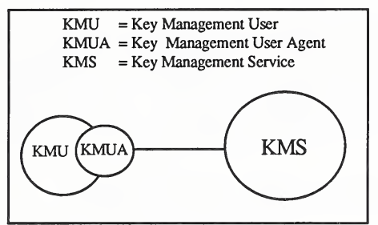
枠で囲んだ図で、上に凡例（KMU = Key Management User、KMUA = Key Management User Agent、KMS = Key Management Service）があります。その下の左に KMU と KMUA の 2 つの円が一部重なって並び、KMUA の円から右の大きな KMS の円へ線が引かれています。
Figure 3.1:1 Top level view
図 3.1:1 最上位の見方
The model consists of three object types which represent communication entities, the Key Management User object (KMU), Key Management User Agent object (KMUA) and Key Management Service object (KMS). The line between the objects represents an OSI instance of communication. A Key Management User employs the Key Management Service through its Key Management User Agent. The KMU may represent a security protocol, such as: TLSP [ISO 10736], NLSP [ISO 11577] or SDE [IEEE P802.10B].
このモデルは、通信エンティティを表す 3 種類のオブジェクト、すなわち Key Management User オブジェクト（KMU）、Key Management User Agent オブジェクト（KMUA）、Key Management Service オブジェクト（KMS）で構成されます。オブジェクト間の線は、OSI の通信インスタンスを表します。Key Management User は、自身の Key Management User Agent を通じて Key Management Service を利用します。KMU は、TLSP [ISO 10736]、NLSP [ISO 11577]、SDE [IEEE P802.10B] などのセキュリティプロトコルを表す場合があります。
3.2 DECOMPOSITION OF THE KEY MANAGEMENT SERVICE
3.2 鍵管理サービスの分解
The following figure shows the decomposition of the Key Management Service object:
次の図は、Key Management Service オブジェクトの分解を示しています。
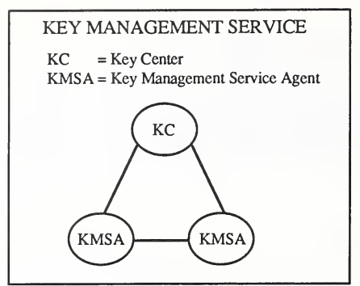
KEY MANAGEMENT SERVICE と題した枠の図で、凡例（KC = Key Center、KMSA = Key Management Service Agent）があります。上の KC の円が下の 2 つの KMSA の円とそれぞれ線で結ばれ、2 つの KMSA どうしも線で結ばれて三角形を作っています。
Figure 3.2:1 Key Management Service decomposition
図 3.2:1 Key Management Service の分解
The Key Management Service consists of two Key Management Service Agent objects and a Key Center object. The mission of the KMSAs is to establish the keys and attributes to be used by the two communicating security protocol entities. Objects may be collocated within an end-system thereby avoiding OSI communication through intra-system communication capabilities. It is not clear whether in practice the initiating system always has the KMUA and KMSA collocated. In the model it is possible to keep the KMSA and KMUA apart. If they are kept apart, the communication path between the KMUA and KMSA must be trusted or protected.
Key Management Service は、2 つの Key Management Service Agent オブジェクトと 1 つの Key Center オブジェクトで構成されます。KMSA の役割は、通信する 2 つのセキュリティプロトコルエンティティが使う鍵と属性を確立することです。オブジェクトはエンドシステム内に同居させることができ、それによってシステム内通信の機能を使い、OSI 通信を避けられます。実際には、開始側のシステムが常に KMUA と KMSA を同居させているかどうかは明らかではありません。モデルでは、KMSA と KMUA を分離しておくことが可能です。分離する場合、KMUA と KMSA の間の通信経路は、信頼されたものか、保護されたものでなければなりません。
3.3 DECOMPOSITION OF THE KEY CENTER
3.3 鍵センターの分解
The Key Center consists of a number of Key Center Agents (KCA) related to each other hierarchically:
Key Center は、互いに階層的に関連づけられた複数の Key Center Agent（KCA）で構成されます。
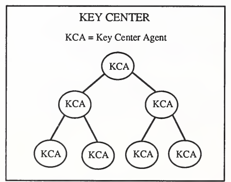
KEY CENTER と題した枠の木構造の図で、凡例 KCA = Key Center Agent があります。最上位の KCA の円の下に 2 つの KCA があり、それぞれの下にさらに 2 つの KCA があります（3 段、計 7 個の KCA の円が線で結ばれています）。
Figure 3.3:1 Key Center decomposition
図 3.3:1 Key Center の分解
Each key center agent can be viewed as residing within the juristdiction of the security domain of its immediate predecessor in the KCA hierarchy and deriving its authority from it. This is illustrated in the figure below:
各鍵センターエージェントは、KCA 階層における直前の上位エージェントのセキュリティドメインの管轄内に位置し、その上位エージェントから権限を得ているとみなせます。これを下の図に示します。
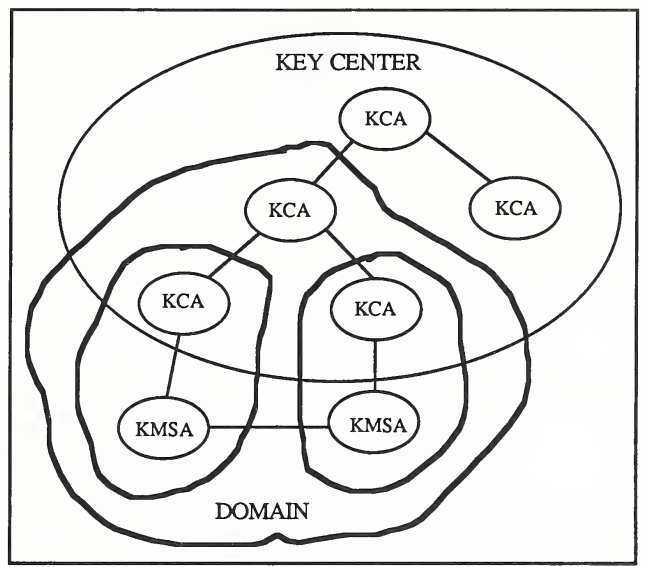
枠で囲んだ図です。KEY CENTER と書かれた大きな楕円の中に KCA の円の木構造があり、最上位の KCA の下に 2 つの KCA が、そのうち左の KCA の下にさらに 2 つの KCA があります。下段の 2 つの KCA は、それぞれ楕円の外の下にある KMSA の円と線で結ばれ、2 つの KMSA どうしも線で結ばれています。太い手書きの線が下段の KCA とその KMSA の組をそれぞれ囲み、DOMAIN と書かれたさらに大きな太い線が 2 つの組とその上の KCA をまとめて囲んでいます。
Figure 3.3:2 Relationship between Security Domain and KCA
図 3.3:2 セキュリティドメインと KCA の関係
4 PHASES IN TRAFFIC ENCRYPTION KEY MANAGEMENT
4 トラフィック暗号化鍵管理のフェーズ
The phases that cooperating key management server agent entities go through during the lifetime of traffic encryption key material is exemplified by the approach taken in SDNS. SDNS key management can be divided into the following phases:
協調する鍵管理サーバーエージェントエンティティが、トラフィック暗号化鍵素材の存続期間中に経るフェーズは、SDNS が採用したアプローチによって例示されます。SDNS の鍵管理は、次のフェーズに分けられます。
•Key Establishment.
•鍵確立。
•Service Negotiation/Cryptographic compatibility.
•サービスのネゴシエーションおよび暗号の互換性。
•Key Usage.
•鍵の使用。
•Key Destruction.
•鍵の破棄。
During the Key Establishment phase, traffic encryption keys are created. As mentioned earlier the algorithm used in SDNS is classified. An example of a publicly available algorithm which may be used is Diffie-Hellman (see Annex A for further information). In SDNS for the key establishment phase the New Key Request (Nkrq) and New Key Response (Nkrs) PDUs are used.
鍵確立フェーズでは、トラフィック暗号化鍵が作成されます。前述のとおり、SDNS で使われるアルゴリズムは機密指定です。公開されていて使えるアルゴリズムの一例は Diffie-Hellman です（詳細は附属書 A を参照）。SDNS の鍵確立フェーズでは、New Key Request（Nkrq）PDU と New Key Response（Nkrs）PDU が使われます。
During the Service Negotiation and Cryptographic Compatibility phase the two communication parties demonstrate to each other that they are in possession of the right traffic encryption keys. In SDNS this is accomplished by encrypting the Security Service Request (Ssrq) and Security Service Response (Ssrs) PDUs using the newly established key. Anyone attempting to replay a previous executed key exchange would fail during this phase. The Ssrq and Ssrs PDUs are also used to negotiate the attributes for the security services which are needed for a specific security protocol.
サービスのネゴシエーションおよび暗号の互換性のフェーズでは、通信する 2 つの当事者が、正しいトラフィック暗号化鍵を持っていることを互いに示します。SDNS では、新たに確立した鍵を使って Security Service Request（Ssrq）PDU と Security Service Response（Ssrs）PDU を暗号化することで、これを実現します。以前に実行された鍵交換を再生しようとする者は、このフェーズで失敗します。Ssrq PDU と Ssrs PDU は、特定のセキュリティプロトコルに必要なセキュリティサービスの属性をネゴシエーションするためにも使われます。
The traffic encryption keys are used to protect the data transferred between the security protocol entities. The key management protocol entity is not involved during this phase, unless the cryptoperiod of the traffic encryption key expires and the traffic encryption key must be replaced or updated.
トラフィック暗号化鍵は、セキュリティプロトコルエンティティの間で転送されるデータを保護するために使われます。このフェーズの間、トラフィック暗号化鍵の暗号期間が満了してトラフィック暗号化鍵を置き換えるか更新しなければならない場合を除き、鍵管理プロトコルエンティティは関与しません。
The Key Destruction phase occurs when the cryptoperiod of the key expires, or in the case of TLSP (SP4C) used on a per (transport) connection basis when the transport connection is closed.
鍵の破棄フェーズは、鍵の暗号期間が満了したとき、または（トランスポート）コネクションごとに使われる TLSP（SP4C）ではトランスポートコネクションが閉じられたときに生じます。
Since the algorithm used to do the SDNS key exchange is classified no details are given about how the authentication is done. Annex A gives an example of how to perform the authentication when Diffie-Hellman is used.
SDNS の鍵交換に使われるアルゴリズムは機密指定であるため、認証がどのように行われるかについての詳細は示されていません。附属書 A は、Diffie-Hellman を使う場合の認証の実施方法の例を示しています。
5 ISSUES IN KEY MANAGEMENT
5 鍵管理の課題
In this chapter two forms of key management are considered:
本章では、2 つの形式の鍵管理を検討します。
•A symmetric form of key management, where the parties share a Key Encryption Key (KEK) with each other or a Key Distribution Center, alternatively a Key Translation Center.
•共通鍵形式の鍵管理。当事者は、互いに、あるいは Key Distribution Center（または Key Translation Center）と、Key Encryption Key（KEK）を共有します。
•An asymmetric form of key management which is certificate-based. In this form of key management the parties are given certificates from a trusted authority, the Certification Authority (CA).
•証明書に基づく非対称形式の鍵管理。この形式の鍵管理では、当事者は信頼された機関である認証局（CA）から証明書を与えられます。
These two forms of key management can be considered the state-of-the-art.
これら 2 つの形式の鍵管理は、最新の技術水準とみなせます。
Key management standards outside of OSI are considered in this chapter, since an OSI key management protocol could be based on principles defined in these standards.
OSI の鍵管理プロトコルは、これらの標準で定義された原則に基づく場合があるため、本章では OSI の外にある鍵管理標準も検討します。
In the following sections the term CA is sometimes used and sometimes the term KCA, the intention is to use the term CA in general discussions while the term KCA is used when referring to the key management model defined earlier.
以下の各節では、CA という用語を使う箇所と KCA という用語を使う箇所があります。一般的な議論では CA を使い、先に定義した鍵管理モデルに言及するときに KCA を使う意図です。
This paper tries to limit the use of the term credentials because in some security documents its use is in conflict with the definition of credentials as defined in the Security Architecture [ISO 7498-2]. The definition of [ISO 7498-2] is: "Data that is transferred to establish the claimed identity of an entity." To avoid mentioning the term credentials the phrase "private key and KCA certificate, alternatively certificate" is used in this paper. For example, the statement that the KMSA delivers the credentials to a KMSA would be in conflict with [ISO 7498-2], because the delivery could include the private key of the KCA. According to the definition in [ISO 7498-2] the private key does not need to be part of the credentials. When this paper uses the term credentials, the meaning of credentials depends on the context.
本書は、資格情報（credentials）という用語の使用を抑えるようにしています。セキュリティ文書によっては、その用法が、セキュリティアーキテクチャ [ISO 7498-2] で定義された資格情報の定義と食い違うためです。[ISO 7498-2] の定義は「エンティティの主張する識別情報を確立するために転送されるデータ」です。資格情報という用語に触れるのを避けるため、本書では「秘密鍵と KCA 証明書、または証明書」という言い回しを使います。たとえば、KMSA が資格情報を KMSA に配送するという記述は、配送に KCA の秘密鍵が含まれる場合があるため、[ISO 7498-2] と食い違います。[ISO 7498-2] の定義によれば、秘密鍵は資格情報の一部である必要はありません。本書が資格情報という用語を使う場合、その意味は文脈によって決まります。
5.1 HOLDER OF THE CERTIFICATE
5.1 証明書の保有者
An important issue in an asymmetric form of key management is who should be the holder of the certificate. The Authentication Framework [ISO 10181-2] gives as an example the following entities to authenticate:
非対称形式の鍵管理における重要な課題は、誰が証明書の保有者となるべきかです。認証フレームワーク [ISO 10181-2] は、認証対象のエンティティとして次の例を挙げています。
•a physical entity;
•物理エンティティ
•a human user;
•人間のユーザー
•an application entity.
•アプリケーションエンティティ
In reality, therefore the following entities could be the holder of the certificate:
したがって実際には、次のエンティティが証明書の保有者となり得ます。
•an end system (physical entity);
•エンドシステム（物理エンティティ）
•a security device within the end system (physical entity);
•エンドシステム内のセキュリティデバイス（物理エンティティ）
•a human user;
•人間のユーザー
•the key management application entity (application entity).
•鍵管理アプリケーションエンティティ（アプリケーションエンティティ）
In Standard for Interoperable LAN Security (SILS) key management the holder of the certificate is the Key Management Application Process. When authentication occurs, it is the key management application processes that authenticate each other. Thus, a key management application process residing in system A can be convinced of communicating with an key management application process residing in system B. And not with another key management application process claiming to reside at system B.
Standard for Interoperable LAN Security（SILS）の鍵管理では、証明書の保有者は Key Management Application Process です。認証が行われるとき、互いに認証し合うのは鍵管理アプリケーションプロセスです。したがって、システム A にある鍵管理アプリケーションプロセスは、システム B にある鍵管理アプリケーションプロセスと通信しており、システム B にあると主張する別の鍵管理アプリケーションプロセスとは通信していないと確信できます。
[ISO 10181-2] defines an authentication certificate as: "A particular type of certificate, certified by a trusted authority, which may be used for authentication." However, certain key management schemes may use the public key included in the certificate to encrypt key material. [ISO 10181-2] mentions two types of authentication certificates:
[ISO 10181-2] は認証証明書を次のように定義しています。「信頼された機関によって証明される、認証に使える特定の種類の証明書」。ただし、鍵管理方式によっては、証明書に含まれる公開鍵を鍵素材の暗号化に使う場合があります。[ISO 10181-2] は 2 種類の認証証明書に言及しています。
•on-line authentication certificates;
•オンライン認証証明書
•off-line authentication certificates.
•オフライン認証証明書
The definition of an on-line certificate is: "An on-line authentication certificate is created by a trusted third party by direct request of a claimant." One example of this type of certificate is the Privilege Attribute Certificate (PAC) described in [ECMA-138]. The definition of an off-line certificate is: "An off-line authentication certificate binds an identity to a cryptographic key. It is created by an authority, without either the claimant or verifier needing to interact with the authority." The certificates defined in the Directory Authentication Framework [ISO 9594-8] are off-line certificates. The certificates mentioned in this paper are also off-line certificates.
オンライン証明書の定義は「オンライン認証証明書は、請求者の直接の要求により信頼された第三者が作成する」です。この種の証明書の一例が、[ECMA-138] に記載されている Privilege Attribute Certificate（PAC）です。オフライン証明書の定義は「オフライン認証証明書は、識別情報を暗号鍵に結び付けます。これは、請求者も検証者も機関とやり取りする必要なく、機関が作成する」です。Directory Authentication Framework [ISO 9594-8] で定義された証明書は、オフライン証明書です。本書で言及する証明書も、オフライン証明書です。
5.2 ORGANIZATION OF THE CERTIFICATION AUTHORITIES
5.2 認証局の編成
The organization of certification authorities (CAs) is an issue for the asymmetric form of key management. The first design issue is whether just one or several certification authorities should be supported. An OSI environment consists of users affiliated to different organizations and residing across national boundaries; to have only one certification authority in such an environment seems therefore unrealistic. This leads to the second design issue: how should the certification authorities be related to each other? Different models of how to organize the certification authorities are reviewed later in this paper. In our model of key management a KCA possesses the functionality provided by a certification authority. Annex A explains in further detail the nature of a certification authority (CA) and certificates.
認証局（CA）の編成は、非対称形式の鍵管理にとっての課題です。最初の設計上の課題は、認証局を 1 つだけサポートするのか、複数サポートするのかです。OSI 環境は、異なる組織に所属し、国境をまたいで存在するユーザーで構成されます。したがって、そのような環境に認証局が 1 つしかないのは非現実的に思われます。これが 2 つ目の設計上の課題につながります。認証局は互いにどのように関係づけるべきかです。認証局を編成するさまざまなモデルは、本書の後のほうで検討します。私たちの鍵管理モデルでは、KCA が認証局の提供する機能を持ちます。附属書 A では、認証局（CA）と証明書の性質をさらに詳しく説明します。
This section makes an attempt to use the existing infrastructure provided by OSI, i.e., the Directory Authentication Framework [ISO 9594-8]. The other alternative which is not covered in depth, is that a security domain creates its own infrastructure. For example, the Key Management Center (KMC) in SDNS can be regarded as part of the infrastructure designated for a particular security domain.
本節では、OSI が提供する既存のインフラストラクチャ、すなわち Directory Authentication Framework [ISO 9594-8] を使う試みを行います。深くは扱わないもう一つの選択肢は、セキュリティドメインが独自のインフラストラクチャを作ることです。たとえば、SDNS の Key Management Center（KMC）は、特定のセキュリティドメインのために指定されたインフラストラクチャの一部とみなせます。
5.2.1 Organization of certification authorities in SDNS
5.2.1 SDNS における認証局の編成
According to Architectural Model Of The SDNS Key Management Protocol [LAMB88] the single certification authority in the SDNS world is the KMC. If we try to interpret SDNS in our model for key management, SDNS can be viewed as a single level hierarchy.
Architectural Model Of The SDNS Key Management Protocol [LAMB88] によれば、SDNS の世界で唯一の認証局は KMC です。私たちの鍵管理モデルで SDNS を解釈しようとすれば、SDNS は単一レベルの階層とみなせます。
5.2.2 Organization of certification authorities in the Directory standards
5.2.2 Directory 標準における認証局の編成
The Directory Authentication Framework [ISO 9594-8], which is one of the parts constituting the OSI Directory standards, indicates that the CAs could be arranged in a hierarchy. There can be two different kinds of certificates, CA certificates and user certificates. A CA certificate is a certificate where a CA certifies another CA. CAs must certify each other in order to make it possible for users whose public keys are certified by different CAs to authenticate each other. When the CAs are arranged in a hierarchy, there can be both forward certificates and reverse certificates. A forward certificate is a certificate where a CA certifies the public key of another CA or a user. The certified CA or user is located in child position to the certifying CA. A reverse certificate is a certificate where a child (subordinate) CA certifies its parent (immediate superior) CA.
Directory Authentication Framework [ISO 9594-8] は OSI Directory 標準を構成する部の一つであり、CA を階層状に配置できることを示しています。証明書には、CA 証明書とユーザー証明書の 2 種類があります。CA 証明書とは、ある CA が別の CA を証明する証明書です。異なる CA によって公開鍵が証明されたユーザー同士が互いに認証できるようにするには、CA が互いに証明し合わなければなりません。CA を階層状に配置した場合、順方向証明書と逆方向証明書の両方があり得ます。順方向証明書とは、ある CA が別の CA またはユーザーの公開鍵を証明する証明書です。証明される CA またはユーザーは、証明する CA の子の位置にあります。逆方向証明書とは、子（下位）の CA がその親（直接の上位）の CA を証明する証明書です。

枠で囲んだ仮想的な CA の階層の図です。右上の凡例は、黒丸が CA、斜線の丸が user（利用者）です。最上位の CA A の下に CA B と C があり、B の下に CA D、C の下に CA E があります。D の下に利用者 F と G、E の下に利用者 H と I があります。線でつないだ枠に証明書が書かれており、A と B の結び付きには B<<A>> と A<<B>>、B と D には D<<B>> と B<<D>>、A と C には C<<A>> と A<<C>>、C と E には E<<C>> と C<<E>>、利用者 F、G、H、I の下にはそれぞれ D<<F>>、D<<G>>、E<<H>>、E<<I>> があります。
Figure 5.2.2:1 Hypothetical hierarchy
図 5.2.2:1 仮想的な階層
In the figure above, D<<B>>, indicates the reverse certificate for CA D and B<<D>> the forward certificate. The notation D<<B>> means a certificate issued by D for B. If, for example, user F has to authenticate user H, F needs to obtain the following certificates in addition to knowing the public key of D, Dp:
上の図で、D<<B>> は CA D の逆方向証明書を、B<<D>> は順方向証明書を示します。表記 D<<B>> は、D が B のために発行した証明書を意味します。たとえば、ユーザー F がユーザー H を認証しなければならない場合、F は D の公開鍵 Dp を知っていることに加えて、次の証明書を入手する必要があります。
D<<B>>, B<<A>>, A<<C>>, C<<E>>, E<<H>>
D<<B>>, B<<A>>, A<<C>>, C<<E>>, E<<H>>
This chain of certificates is called certification path. [ISO 9594-8] describes a certification path to be: "a list of certificates needed to allow a particular user to obtain the public key of another." User F, in possession of the public key of user H, can easily verify a digital signature created by H. Thus, the identity of the user can be authenticated.
この証明書の連鎖は認証パスと呼ばれます。[ISO 9594-8] は認証パスを「特定のユーザーが別のユーザーの公開鍵を入手できるようにするために必要な証明書のリスト」と説明しています。ユーザー F は、ユーザー H の公開鍵を持っていれば、H が作成したデジタル署名を容易に検証できます。こうして、ユーザーの識別情報を認証できます。
[ISO 9594-8] describes the unwrapping of a certificate or certificate chain as an infix operation. The operator, •, has two operands: a public key of a CA and a certificate. For example, the operation performed by F to obtain the public key of H is:
[ISO 9594-8] は、証明書または証明書チェーンの展開を中置演算として説明しています。演算子 • は 2 つのオペランド、すなわち CA の公開鍵と証明書を取ります。たとえば、F が H の公開鍵を得るために行う演算は次のとおりです。
Hp = Dp • D<<B>>, B<<A>>, A<<C>>, C<<E>>, E<<H>>
Hp = Dp • D<<B>>, B<<A>>, A<<C>>, C<<E>>, E<<H>>
The operation consists of several steps, the first step is to obtain the public key of CA B. It is assumed that user F is in possession of the public key of CA D, Dp. The operation to obtain the public key of CA B is:
この演算は複数のステップからなり、最初のステップは CA B の公開鍵を得ることです。ユーザー F は CA D の公開鍵 Dp を持っているものとします。CA B の公開鍵を得る演算は次のとおりです。
Bp = Dp • D<<B>>
Bp = Dp • D<<B>>
When the next step occurs, F is in possession of the public key of CA B and has to obtain the public key of CA A:
次のステップでは、F は CA B の公開鍵を持っており、CA A の公開鍵を得なければなりません。
Ap = Bp • B<<A>>
Ap = Bp • B<<A>>
This is repeated until the public key of user H is obtained.
これを、ユーザー H の公開鍵が得られるまで繰り返します。
An important concept given in [ISO 9594-8] is: "...there may be no relationship between the Directory Information Tree (DIT) and the organization of the certification authorities." Thus, there is no prerequisite that the CAs have to be arranged in a hierarchy, [ISO 9594-8] permits also non hierarchical relationships. Another important concept given in [ISO 9594-8] is: "The precise method employed by users A and B to obtain certification paths A → B and B → A may vary. One way to facilitate this is to arrange a hierarchy of CAs, which may or may not coincide with all parts of the DIT3 hierarchy." Thus, no assumptions are made about having the certification hierarchy to coincide with the naming hierarchy Therefore, even if a hierarchical relationship is assumed, there may be CAs included in the certification path whose distinguished names do not coincide with the distinguished name of the users performing an authentication. [RFC 1114] describes the problem in the following way:
[ISO 9594-8] が示す重要な概念は「……Directory Information Tree（DIT）と認証局の編成の間には、関係がない場合がある」というものです。したがって、CA を階層状に配置しなければならないという前提条件はなく、[ISO 9594-8] は階層的でない関係も許しています。[ISO 9594-8] が示すもう一つの重要な概念は「ユーザー A と B が認証パス A → B と B → A を得るために用いる正確な方法は、さまざまである場合があります。これを容易にする一つの方法は、CA の階層を編成することであり、それは DIT3 の階層のすべての部分と一致する場合も一致しない場合もある」というものです。したがって、認証の階層が命名の階層と一致するという前提は置かれていません。そのため、階層的な関係を仮定しても、認証を行うユーザーの識別名と一致しない識別名を持つ CA が認証パスに含まれる場合があります。[RFC 1114] はこの問題を次のように説明しています。
Unforgeable certificates are generated by certification authorities; these authorities may be organized hierarchically, though such organization is not required by X.509. There is no implied mapping between a certification hierarchy and the naming hierarchy imposed by the directory system naming attributes.
偽造できない証明書は認証局によって生成されます。これらの機関は階層的に編成してもよいですが、X.509 はそのような編成を必須としていません。認証の階層と、ディレクトリシステムの命名属性によって課される命名の階層との間には、暗黙の対応づけはありません。
A non-hierarchical relationship is illustrated in the figure below:
階層的でない関係を下の図に示します。
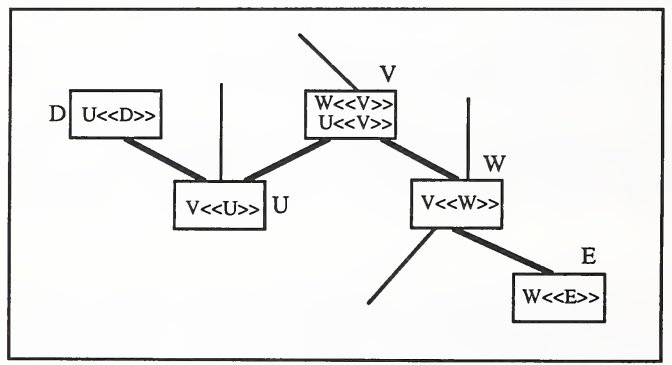
枠で囲んだ非階層の関係の図です。5 つの実体が証明書の記載された枠として描かれ、横に文字が付いており、左から右へ折れ線状に結ばれています。D（枠 U<<D>>）、U（枠 V<<U>>）、V（枠 W<<V>> と U<<V>>）、W（枠 V<<W>>）、E（枠 W<<E>>）です。D–U、U–V、V–W、W–E は太い線で結ばれ、U、V、W からは図にないほかの実体へ細い線が伸びています。
Figure 5.2.2:2 Non-hierarchical relationship
図 5.2.2:2 階層的でない関係
In order to establish a certification path between D and E in the figure above, a directed graph must be created. A criticism is that it might be difficult to determine the directed graph, and if it is possible to determine the directed graph the procedure employed may be too time-consuming. What is desirable is to be able to create a certification path by just knowing the other entities distinguished name. If the CAs are hierarchically related and there are CAs included in the certification path whose distinguished names do not coincide with the distinguished name of the users, this becomes harder to achieve. The following example attempts to illustrate the problem. Let us assume that Dennis has to verify a signed message sent by Russ and the distinguished names of Dennis and Russ are:
上の図で D と E の間の認証パスを確立するには、有向グラフを作成しなければなりません。有向グラフの決定は困難かもしれず、決定できるとしても、用いる手順に時間がかかりすぎるかもしれないという批判があります。望ましいのは、相手のエンティティの識別名を知るだけで認証パスを作成できることです。CA が階層的に関係づけられていて、認証パスに、識別名がユーザーの識別名と一致しない CA が含まれる場合、これを実現するのはより難しくなります。次の例は、この問題を示そうとするものです。Dennis が Russ から送られた署名付きメッセージを検証しなければならないとし、Dennis と Russ の識別名は次のとおりとします。
{c = US, o = Government, ou = Department of Commerce, ou = NIST, ou = CSL, cn = Dennis Branstad}
{c = US, o = Government, ou = Department of Commerce, ou = NIST, ou = CSL, cn = Dennis Branstad}
and
および
{c = US, o = Xerox, l = McLean, cn = Russell Housley}
{c = US, o = Xerox, l = McLean, cn = Russell Housley}
Where:
ここで、
c = Country Name
o = Organization Name
ou = Organizational Unit Name
l = Locality Name
cn = Common Name
c = 国名
o = 組織名
ou = 組織単位名
l = 所在地名
cn = 共通名
The naming hierarchy and the CA hierarchy is shown in the figure below:
命名の階層と CA の階層を下の図に示します。
![Two trees side by side in a frame. Left, titled DIT, with attribute types written beside the nodes: c U.S. has children o Government and o Xerox; under Government come ou Dept. of Commerce, then ou NIST, then ou CSL, then cn Dennis Branstad; under Xerox come l McLean, then cn Russell Housley. Right, titled ORGANIZATION OF CAs: CA U.S. has children CA Government and CA Commercial; CA Government has CA Dept. of Commerce, which has CA NIST; CA Commercial has CA Xerox and CA DEC. Short stub lines on many nodes indicate further branches.](assets/ir-4983/p0035-figure-01.png)
枠の中に 2 つの木を並べた図です。左の DIT では各節点の横に属性の種類が書かれており、c U.S. の下に o Government と o Xerox があり、Government の下に ou Dept. of Commerce、その下に ou NIST、ou CSL、cn Dennis Branstad が続きます。Xerox の下には l McLean、その下に cn Russell Housley があります。右の ORGANIZATION OF CAs では、CA U.S. の下に CA Government と CA Commercial があり、CA Government の下に CA Dept. of Commerce、その下に CA NIST があります。CA Commercial の下には CA Xerox と CA DEC があります。多くの節点から短い線が出ていて、ほかの枝があることを示しています。
Figure 5.2.2:3 Naming versus CA hierarchy
図 5.2.2:3 命名の階層と CA の階層
In this example the CA whose distinguished name does not coincide with the distinguished name of the users is CA Commercial. The certification path needed for Dennis to verify a message signed by Russ is:
この例で、識別名がユーザーの識別名と一致しない CA は CA Commercial です。Dennis が Russ の署名したメッセージを検証するために必要な認証パスは次のとおりです。
CA NIST <<CA Department of Commerce>>,
CA Department of Commerce<<CA Government>>, CA Government <<CA U.S.>>, CA U.S.<<CA Commercial>>, CA Commercial<<CA Xerox>>,
CA Xerox<<Russell Housley>>.
CA NIST <<CA Department of Commerce>>,
CA Department of Commerce<<CA Government>>, CA Government <<CA U.S.>>, CA U.S.<<CA Commercial>>, CA Commercial<<CA Xerox>>,
CA Xerox<<Russell Housley>>.
Since the CA hierarchy cannot be derived from the distinguished name of the users, the problem is how to determine the common point of trust. The common point of trust is the lowest CA in hierarchy that is in common for both users. One possibility to create the certification path may be to follow the reverse certificates, starting with the reverse certificate issued by Dennis´ CA, CA NIST. From the different Directory entries are the reverse certificates retrieved and included in the certification path. This continues until the uppermost CA, CA U.S., is reached.
CA の階層はユーザーの識別名から導けないため、問題は、共通の信頼点をどう決めるかです。共通の信頼点とは、両方のユーザーに共通する、階層内で最も下位の CA です。認証パスを作成する一つの方法は、Dennis の CA である CA NIST が発行した逆方向証明書から始めて、逆方向証明書をたどることかもしれません。さまざまな Directory エントリから逆方向証明書を取得し、認証パスに含めます。これは、最上位の CA である CA U.S. に到達するまで続きます。
![Diagram in a frame of a chain of CAs, from bottom to top: CA NIST, CA Dept. of Commerce, CA Government and CA U.S., joined by lines. Along the left side three arrows point upward in sequence. Under the heading Certificates available from the directory entries, boxes joined by lines to three of the CAs list certificates: beside CA Government, CA U.S.<<CA Government>> (forward certificate) and CA Government<<CA U.S.>> (reverse certificate); beside CA Dept. of Commerce, CA Government<<CA Dept. of Commerce>> (forward certificate) and CA Dep. of Commerce<<CA Government>> (reverse certificate); beside CA NIST, CA Dep. of Commerce<<CA NIST>> (forward certificate) and CA NIST<<CA Dep. of Commerce>> (reverse certificate).](assets/ir-4983/p0036-figure-01.png)
枠で囲んだ CA の連鎖の図で、下から CA NIST、CA Dept. of Commerce、CA Government、CA U.S. が線で結ばれています。左側には上向きの矢印が 3 本、順に並んでいます。「Certificates available from the directory entries」（ディレクトリのエントリから得られる証明書）という見出しの下に、3 つの CA と線で結ばれた枠があり、証明書が書かれています。CA Government の横は CA U.S.<<CA Government>>（forward certificate）と CA Government<<CA U.S.>>（reverse certificate）、CA Dept. of Commerce の横は CA Government<<CA Dept. of Commerce>>（forward certificate）と CA Dep. of Commerce<<CA Government>>（reverse certificate）、CA NIST の横は CA Dep. of Commerce<<CA NIST>>（forward certificate）と CA NIST<<CA Dep. of Commerce>>（reverse certificate）です。
Figure 5.2.2:4 Following the chain of reverse certificates leaving from Dennis
図 5.2.2:4 Dennis から始めて逆方向証明書の連鎖をたどる
When CA U.S. is reached, it would be natural to transit from CA U.S. to CA Commercial. However, since Commercial is not visible from the users distinguished names; it is at this point unknown that CA Commercial is the second level CA included in the certification path originating with CA U.S.<<CA Commercial>> and ending with CA Xerox<<Russell Housley>>. Therefore, instead the reverse certificates originating with the reverse certificate of the CA which issued Russ´ certificate, CA Xerox, are followed. From the different Directory entries the reverse and forward certificates are retrieved. The forward certificates are included in the certification path. This continues until the common point of trust, CA U.S., is discovered.
CA U.S. に到達したとき、CA U.S. から CA Commercial へ移るのが自然でしょう。しかし、Commercial はユーザーの識別名からは見えないため、CA Commercial が、CA U.S.<<CA Commercial>> で始まり CA Xerox<<Russell Housley>> で終わる認証パスに含まれる第 2 レベルの CA であることは、この時点では分かりません。そのため、代わりに、Russ の証明書を発行した CA である CA Xerox の逆方向証明書から始まる逆方向証明書をたどります。さまざまな Directory エントリから、逆方向証明書と順方向証明書を取得します。順方向証明書は認証パスに含めます。これは、共通の信頼点である CA U.S. が見つかるまで続きます。
![Diagram in a frame of a chain of CAs: CA Xerox at the bottom, CA Commercial above it and CA U.S. at the top, joined by lines; on the right two arrows point upward in sequence. Under the heading Certificates available from the directory entries, two boxes on the left are joined by lines to the CAs: beside CA Commercial, CA Commercial<<CA U.S.>> (reverse certificate) and CA U.S. <<CA Commercial>> (forward certificate); beside CA Xerox, CA Xerox<<CA Commercial>> (reverse certificate) and CA Commercial <<CA Xerox>> (forward certificate).](assets/ir-4983/p0037-figure-01.png)
枠で囲んだ CA の連鎖の図で、下から CA Xerox、CA Commercial、CA U.S. が線で結ばれ、右側に上向きの矢印が 2 本、順に並んでいます。「Certificates available from the directory entries」（ディレクトリのエントリから得られる証明書）という見出しの下に、左側の 2 つの枠が線で CA と結ばれています。CA Commercial の横は CA Commercial<<CA U.S.>>（reverse certificate）と CA U.S. <<CA Commercial>>（forward certificate）、CA Xerox の横は CA Xerox<<CA Commercial>>（reverse certificate）と CA Commercial <<CA Xerox>>（forward certificate）です。
Figure 5.2.2:5 Following the chain of reverse certificates leaving from Russ
図 5.2.2:5 Russ から始めて逆方向証明書の連鎖をたどる
As we will see in the next section, by letting the CA hierarchy coincide with the naming hierarchy, it becomes easier to find the certification path.
次の節で見るように、CA の階層を命名の階層と一致させると、認証パスを見つけやすくなります。
To make it possible to shorten the certification path, [ISO 9594-8] mentions that two certification authorities can cross-certify each other. The figure below gives an example of cross-certification (between E and F).
認証パスを短くできるようにするため、[ISO 9594-8] は、2 つの認証局が互いに相互認証できると述べています。下の図は、（E と F の間の）相互認証の例を示しています。
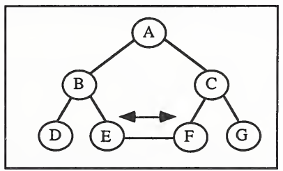
枠で囲んだ木構造の図です。最上位の A の下に B と C、B の下に D と E、C の下に F と G があります。E と F は線で結ばれ、その上に両向きの矢印があり、E と F の間の相互認証を示しています。
Figure 5.2.2:6 Example of cross-certificates
図 5.2.2:6 相互認証証明書の例
It is outside the scope of [ISO 9594-8] to specify how the public key of the certification authority a user trusts is delivered to the user. According to Figure 5.2.2:1 for user F it would be the public key of certification authority D. User F must be guaranteed the authenticity and integrity of this public key.
ユーザーが信頼する認証局の公開鍵をどのようにユーザーへ届けるかを規定することは、[ISO 9594-8] の範囲外です。図 5.2.2:1 では、ユーザー F にとってそれは認証局 D の公開鍵になります。ユーザー F には、この公開鍵の真正性と完全性が保証されなければなりません。
5.2.3 Organization of certification authorities in RFC 1114
5.2.3 RFC 1114 における認証局の編成
This section tries to capture the ideas behind [RFC 1114]. [RFC 1114] specifies a subset of the Directory Authentication Framework [ISO 9594-8]. The subset chosen makes it easier to implement the functionality by letting the CA hierarchy coincide with the naming hierarchy. In [RFC 1114] this is described as a relationship between the naming hierarchy and the organization of the CAs. Primarily the intention is to have organizations act as certification authorities. Although [RFC 1114] is designed to support privacy enhanced mail (PEM), the standard is written so that it also can be used to support X.400 mail security facilities and X.500 Directory authentication facilities.
本節は、[RFC 1114] の背後にある考え方を捉えようとするものです。[RFC 1114] は、Directory Authentication Framework [ISO 9594-8] のサブセットを規定しています。選ばれたサブセットは、CA の階層を命名の階層と一致させることで、機能を実装しやすくしています。[RFC 1114] では、これは命名の階層と CA の編成との関係として説明されています。主な意図は、組織に認証局の役割を担わせることです。[RFC 1114] はプライバシー強化メール（PEM）をサポートするように設計されていますが、この標準は、X.400 のメールセキュリティ機能や X.500 Directory の認証機能のサポートにも使えるように書かれています。
As mentioned previously, [RFC 1114] forces the CA hierarchy to coincide with the naming hierarchy. The following example tries to illustrate the CA hierarchy/DIT relationship, the figure below presents a portion of a hypothetical DIT:
前に述べたとおり、[RFC 1114] は CA の階層を命名の階層と強制的に一致させます。次の例は、CA の階層と DIT の関係を示そうとするもので、下の図は仮想的な DIT の一部を示しています。
![Diagram in a frame: three ellipses, Government, NIST and CSL, each lower and further left than the previous one, on a slanted line that continues above Government and below CSL. Beside each node: Government — Distinguished name: {c = U.S., o = Government}, Relative distinguished name: {o = Government}; NIST — Distinguished name: {c = U.S., o = Government, ou = NIST}, Relative distinguished name: {ou = NIST}; CSL — Distinguished name: {c = U.S., o = Government, ou = NIST, ou = CSL}, Relative distinguished name: {ou = CSL}.](assets/ir-4983/p0038-figure-01.png)
枠で囲んだ図です。Government、NIST、CSL の 3 つの楕円が左下へ順に並び、1 本の斜めの線でつながっています（線は Government の上と CSL の下にも伸びています）。各節点の横に識別名と相対識別名が書かれています。Government は Distinguished name: {c = U.S., o = Government}、Relative distinguished name: {o = Government}、NIST は Distinguished name: {c = U.S., o = Government, ou = NIST}、Relative distinguished name: {ou = NIST}、CSL は Distinguished name: {c = U.S., o = Government, ou = NIST, ou = CSL}、Relative distinguished name: {ou = CSL} です。
Figure 5.2.3:1 Hypothetical hierarchy
図 5.2.3:1 仮想的な階層
We assume that NIST and CSL both act as certification authorities. NIST is an immediate superior to CSL in the DIT. Therefore CSL is in possession of a forward certificate where the distinguished name of the issuer field is:
NIST と CSL がどちらも認証局として動作すると仮定します。DIT では、NIST は CSL の直接の上位です。したがって、CSL は、発行者フィールドの識別名が次である順方向証明書を持っています。
{c = U.S., o = Government, ou = NIST}
{c = U.S., o = Government, ou = NIST}
The subject field of the certificate contains the following distinguished name:
証明書のサブジェクトフィールドには、次の識別名が含まれます。
{c = U.S., o = Government, ou = NIST, ou = CSL}
{c = U.S., o = Government, ou = NIST, ou = CSL}
The principle used in [RFC 1114] is that a certification authority should serve a large population of users, which is not a necessity in [ISO 9594-8]. Therefore [RFC 1114] precludes a user from acting as a CA. Figure 5.2.3:2 illustrates which of the entities represented in the DIT that are allowed by [RFC 1114] to act as certification authorities.
[RFC 1114] で使われている原則は、認証局が多数のユーザーにサービスを提供すべきであるというもので、これは [ISO 9594-8] では必須ではありません。そのため、[RFC 1114] はユーザーが CA として動作することを認めていません。図 5.2.3:2 は、DIT に表されたエンティティのうち、どれが [RFC 1114] で認証局として動作することを許されているかを示しています。
![Graph in a frame of DIT object classes joined by arrows. Root (marked with a plus-shaped cross) has arrows to Locality, Country and Organization. Country has arrows to Locality and Organization. Two-headed arrows join Locality with Organization and Locality with Organizational Unit. Locality and Organizational Unit each have a looping arrow back to themselves. Locality has arrows to Residential Person and Group of Names. Organization has arrows to Organizational Unit, Group of Names, Application Process, Device, Organizational Person and Organizational Role; Organizational Unit also has arrows to Group of Names, Application Process, Device, Organizational Person and Organizational Role. Application Process has an arrow to Application Entity. Residential Person, Group of Names, Organizational Person and Organizational Role are crossed out with an X; Application Process, Application Entity and Device are overprinted with an N. Legend at the bottom: X = Cannot act as CA according to RFC 1114; N = Not applicable to RFC 1114; plus-shaped cross = By definition its directory entry cannot contain attributes.](assets/ir-4983/p0039-figure-01.png)
枠で囲んだ、DIT のオブジェクトクラスを矢印で結んだ図です。Root（十字の印付き）から Locality、Country、Organization へ矢印が出ています。Country から Locality と Organization へ矢印があります。Locality と Organization、Locality と Organizational Unit はそれぞれ両向きの矢印で結ばれています。Locality と Organizational Unit には自分自身へ戻るループ状の矢印があります。Locality から Residential Person と Group of Names へ矢印があります。Organization から Organizational Unit、Group of Names、Application Process、Device、Organizational Person、Organizational Role へ矢印があり、Organizational Unit からも Group of Names、Application Process、Device、Organizational Person、Organizational Role へ矢印があります。Application Process から Application Entity へ矢印があります。Residential Person、Group of Names、Organizational Person、Organizational Role には × 印、Application Process、Application Entity、Device には N の印が重ねてあります。下の凡例は、× が「Cannot act as CA according to RFC 1114」（RFC 1114 では CA になれない）、N が「Not applicable to RFC 1114」（RFC 1114 には該当しない）、十字が「By definition its directory entry cannot contain attributes」（定義上そのディレクトリエントリは属性を持てない）です。
Figure 5.2.3:2 Entities in the DIT allowed to act as CAs
図 5.2.3:2 CA として動作することを許される DIT 内のエンティティ
[RFC 1114] is designed primarily for Internet electronic mail purposes, therefore neither application processes nor application entities can be certificate holders. In the case of key management residing in the application layer, a certificate can be issued to either an application process or an application entity.
[RFC 1114] は主にインターネット電子メールの用途のために設計されているため、アプリケーションプロセスもアプリケーションエンティティも証明書の保有者になれません。鍵管理がアプリケーション層にある場合、証明書はアプリケーションプロセスまたはアプリケーションエンティティのいずれかに発行できます。
Relating the certification hierarchy to the the naming hierarchy guarantees that a certification path can always be found by direct look-up the Directory entries associated with the distinguished name of the users. As mentioned previously, this is not necessarily true if the general scheme of [ISO 9594-8] is followed. The following example illustrates what is involved in looking up the Directory entries associated with the users distinguished names. The figure below illustrates a portion of a hypothetical DIT.
認証の階層を命名の階層に関係づけると、ユーザーの識別名に関連づけられた Directory エントリを直接参照することで、認証パスを必ず見つけられることが保証されます。前に述べたとおり、[ISO 9594-8] の一般的な方式に従う場合は、これは必ずしも成り立ちません。次の例は、ユーザーの識別名に関連づけられた Directory エントリを参照する際に何が関わるかを示します。下の図は、仮想的な DIT の一部を示しています。
![Hypothetical hierarchy: U.S. at the top with Government and Xerox below; under Government come Dept. of Commerce, NIST, CSL and Dennis Branstad; under Xerox come McLean and Russell Housley. A note at the top reads: Certificate or public key of CA US must be delivered under integrity and authenticity. On each side, under the heading Certificates available from the directory entries, boxes list the certificates next to the nodes: CA U.S. <<CA Government>>, CA Government <<CA Dept. of Commerce>>, CA Dept. of Commerce <<CA NIST>>, CA NIST<<CA CSL>>, CA CSL <<Dennis Branstad>> on the left, and CA U.S.<<CA Xerox>>, CA Xerox<<CA McLean>>, CA McLean <<Russell Housley>> on the right.](assets/ir-4983/p0040-figure-01.png)
仮想的な階層の図です。最上位の U.S. の下に Government と Xerox があり、Government の下に Dept. of Commerce、NIST、CSL、Dennis Branstad が、Xerox の下に McLean、Russell Housley が続きます。上部に「Certificate or public key of CA US must be delivered under integrity and authenticity」（CA US の証明書または公開鍵は完全性と真正性を保って配布しなければならない）と書かれています。左右に「Certificates available from the directory entries」として、各節点の横の枠に証明書が書かれています。左は CA U.S. <<CA Government>>、CA Government <<CA Dept. of Commerce>>、CA Dept. of Commerce <<CA NIST>>、CA NIST<<CA CSL>>、CA CSL <<Dennis Branstad>>、右は CA U.S.<<CA Xerox>>、CA Xerox<<CA McLean>>、CA McLean <<Russell Housley>> です。
Figure 5.2.3:3 Hypothetical hierarchy where Dennis and Russ are leaf nodes
図 5.2.3:3 Dennis と Russ が葉ノードである仮想的な階層
Each Directory entry higher in the hierarchy than the leaf entries of users Dennis and Russ, is associated with a relative distinguished name. In the example, the entity associated with a relative distinguished name (e.g., an organization (Xerox), organizational unit (CSL), locality (McLean) or country (U.S.)) also acts as a CA. As we will see later this is not a necessity. The distinguished name of the users are:
ユーザー Dennis と Russ の葉エントリより階層の上位にある各 Directory エントリは、相対識別名に関連づけられています。この例では、相対識別名に関連づけられたエンティティ（たとえば組織（Xerox）、組織単位（CSL）、所在地（McLean）、国（U.S.））が CA としても動作します。後で見るように、これは必須ではありません。ユーザーの識別名は次のとおりです。
{c = U.S., o = Government, ou = Department of Commerce, ou = NIST, ou = CSL, cn = Dennis Branstad}
{c = U.S., o = Government, ou = Department of Commerce, ou = NIST, ou = CSL, cn = Dennis Branstad}
and
および
{c = U.S., o = Xerox, l = McLean, cn = Russell Housley}.
{c = U.S., o = Xerox, l = McLean, cn = Russell Housley}.
This example assumes that Dennis is in possession of his own certificate. By accessing the Directory entries of CSL, NIST, Department of Commerce and Government; Dennis can obtain the certificates that are needed for Russ to validate Dennis´ certificate. Therefore it is possible for Dennis to send a signed message together with a certification path to Russ. The certificates provided by Dennis makes it possible for Russ to verify the signature.
この例では、Dennis は自身の証明書を持っていると仮定します。CSL、NIST、Department of Commerce、Government の Directory エントリにアクセスすることで、Dennis は、Russ が Dennis の証明書を検証するために必要な証明書を入手できます。したがって、Dennis は、署名付きメッセージを認証パスとともに Russ に送ることができます。Dennis が提供する証明書によって、Russ は署名を検証できます。
The scheme of [RFC 1114] only makes use of forward certificates except at country level. An entity represented in the DIT and allowed to act as CA, for example, an organizational unit, is not required to act as CA. The figure below illustrates a CA hierarchy where CSL is not acting as CA, but where NIST does. NIST issues a certificate for user Dennis, where CSL is part of the distinguished name appearing in the subject part of the certificate of Dennis.
[RFC 1114] の方式は、国レベルを除き、順方向証明書だけを使います。DIT に表され、CA として動作することを許されたエンティティ、たとえば組織単位は、CA として動作する必要はありません。下の図は、CSL が CA として動作せず、NIST が動作する CA 階層を示しています。NIST はユーザー Dennis の証明書を発行し、Dennis の証明書のサブジェクト部に現れる識別名の一部に CSL が含まれます。
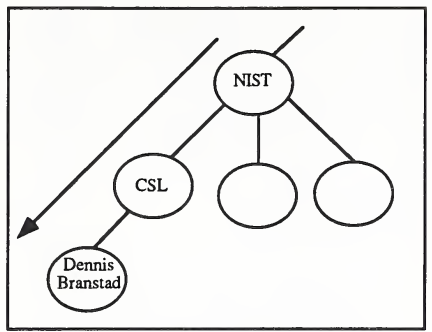
枠で囲んだ木構造の図です。最上位の NIST（そこから右上へも線が伸びています）の下に 3 つの節点があり、左が CSL、ほかの 2 つは名前のない円です。CSL の下に Dennis Branstad があります。枝と平行な 1 本の長い矢印が、NIST の横から CSL の横を通って左下へ伸び、Dennis Branstad の横で終わっています。
Figure 5.2.3:4 NIST is a CA, CSL is not
図 5.2.3:4 NIST は CA であり、CSL は CA ではない
In the figure below a different CA hierarchy is shown, where CA NIST issues a CA certificate for CSL. CA CSL in turn issues a certificate for user Dennis. In this case CA CSL is allowed by CA NIST to issue certificates in its name space:
下の図には別の CA 階層を示しており、CA NIST が CSL の CA 証明書を発行します。CA CSL は、さらにユーザー Dennis の証明書を発行します。この場合、CA CSL は、次の名前空間内で自身の名前による証明書を発行することを CA NIST から許されています。
{c = U.S., o = Government, ou = NIST, ou = CSL}.
{c = U.S., o = Government, ou = NIST, ou = CSL}.
Thus, the name space is: (U.S.).Government.NIST.CSL.xxxx.
したがって、名前空間は (U.S.).Government.NIST.CSL.xxxx です。
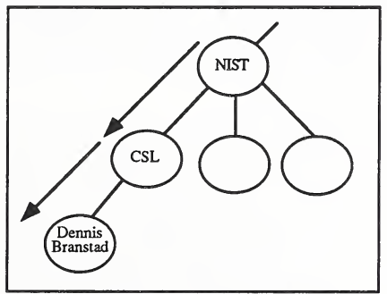
同じ木構造（最上位の NIST の下に CSL と名前のない 2 つの円、CSL の下に Dennis Branstad）を枠で囲んだ図ですが、左下へ向かう矢印が 2 本に分かれています。1 本は NIST の横から CSL の横へ、もう 1 本は CSL の横から Dennis Branstad の横へ向かっています。
Figure 5.2.3:5 Both NIST and CSL are CAs
図 5.2.3:5 NIST と CSL の両方が CA である
If the scheme of [RFC 1114] is followed, the user (if the terminology of [RFC 1114] is used it would be the User Agent) can create the certification path. This is illustrated in the following examples.
[RFC 1114] の方式に従えば、ユーザー（[RFC 1114] の用語を使えば User Agent）が認証パスを作成できます。次の例で、これを示します。
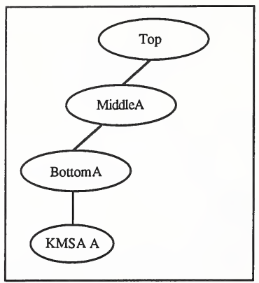
枠で囲んだ図です。Top、MiddleA、BottomA、KMSA A の 4 つの楕円が上から順に並び、線で結ばれています。
Figure 5.2.3:6 Structure of CAs above KMSA A
図 5.2.3:6 KMSA A より上位の CA の構造
As a prerequisite, the user in the above figure, KMSA A, must be in possession of the public key of the topmost CA, Top. The public key of Top must be delivered under integrity and authenticity4. In addition KMSA A must be in possession of all certificates included in the path from Top to itself. That is, the own certificate and the CA certificates of BottomA and MiddleA. Those certificates can be obtained from the Directory. With possession of the public key of Top, it is possible for KMSA A to check the correctness of the CA certificate of MiddleA. Possessing the public key of CA MiddleA, it is possible to check the correctness of the CA certificate of BottomA, etc. Thus, it is the public key of Top that makes it possible to check the chain of certificates.
前提条件として、上の図のユーザー、すなわち KMSA A は、最上位の CA である Top の公開鍵を持っていなければなりません。Top の公開鍵は、完全性と真正性4を保って配送されなければなりません。加えて、KMSA A は、Top から自身までのパスに含まれるすべての証明書を持っていなければなりません。すなわち、自身の証明書と、BottomA および MiddleA の CA 証明書です。これらの証明書は Directory から取得できます。Top の公開鍵を持っていれば、KMSA A は MiddleA の CA 証明書の正しさを確認できます。CA MiddleA の公開鍵を持っていれば、BottomA の CA 証明書の正しさを確認できる、というように続きます。このように、証明書の連鎖を確認できるようにするのは Top の公開鍵です。
In the figure shown below KMSA A and KMSA B share the same certification authority, BottomA.
下の図では、KMSA A と KMSA B が同じ認証局 BottomA を共有しています。
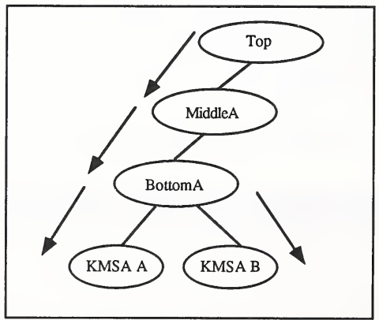
枠で囲んだ木構造の図です。Top の下に MiddleA、その下に BottomA があり、BottomA の下に KMSA A と KMSA B があります。左側には左下へ向かう矢印が 3 本続いており、Top の横から MiddleA の横へ、MiddleA の横から BottomA の横へ、BottomA の横から KMSA A の方へ向かっています。右側には BottomA の横から KMSA B の方へ右下へ向かう矢印が 1 本あります。
Figure 5.2.3:7 BottomA is the trusted common point
図 5.2.3:7 BottomA が信頼される共通点である場合
If KMSA B has to be able to verify a digital signature computed by KMSA A, according to the scheme of [RFC 1114] it is enough for KMSA A to send just its own certificate to KMSA B. From the distinguished names, KMSA B discovers that the common point of trust is BottomA. KMSA B which is in possession of the public key of BottomA can, thus, verify the certificate of KMSA A and thereby obtaining the public key to verify the signature.
KMSA B が KMSA A の計算したデジタル署名を検証できなければならない場合、[RFC 1114] の方式では、KMSA A が自身の証明書だけを KMSA B に送れば十分です。識別名から、KMSA B は共通の信頼点が BottomA であることを見出します。BottomA の公開鍵を持っている KMSA B は、このようにして KMSA A の証明書を検証し、それによって署名を検証するための公開鍵を得られます。
In the figure shown below, KMSA A and KMSA B have the topmost CA, Top, as the common point of trust.
下の図では、KMSA A と KMSA B は、最上位の CA である Top を共通の信頼点としています。
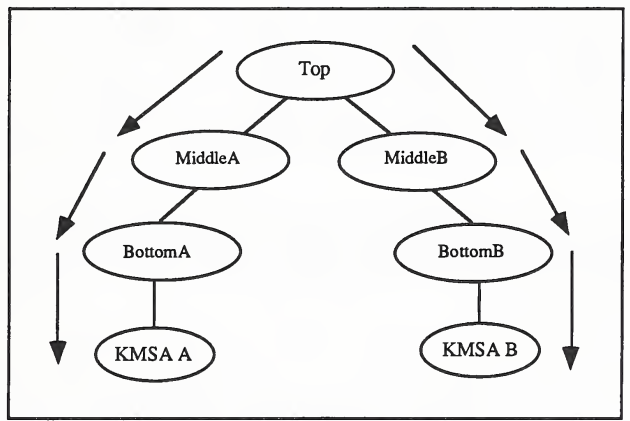
枠で囲んだ木構造の図です。Top の下に MiddleA と MiddleB、MiddleA の下に BottomA、MiddleB の下に BottomB、さらにその下に KMSA A と KMSA B があります。外側の左には Top の横から KMSA A の横まで下る 3 本の矢印が続き、外側の右にも Top の横から KMSA B の横まで下る 3 本の矢印が続いています。
Figure 5.2.3:8 Top is the trusted common point
図 5.2.3:8 Top が信頼される共通点である場合
KMSA A has to provide the CA certificate of MiddleA, the CA certificate of BottomA and the own certificate to KMSA B, in order to make it possible for KMSA B to verify a digital signature computed by KMSA A. KMSA B, which is in possession of the public key of Top, can check the correctness of the CA certificate of MiddleA. If the certificate is valid, KMSA B extracts the public key from the certificate. With the public key of the CA MiddleA, KMSA B can check the correctness of the CA certificate of BottomA. The last step for KMSA B is to check the correctness of the certificate of KMSA A. Thereafter KMSA B can extract the public key from the certificate and verify the digital signature. If all KMSAs in the network cache the certificates included in the path between the particular KMSA and the root position, Top, they always are able to create a certification path. Thereby the time to create a certification path decreases, because fewer Directory accesses are necessary to create the certification path.
KMSA B が KMSA A の計算したデジタル署名を検証できるようにするため、KMSA A は、MiddleA の CA 証明書、BottomA の CA 証明書、および自身の証明書を KMSA B に提供しなければなりません。Top の公開鍵を持っている KMSA B は、MiddleA の CA 証明書の正しさを確認できます。証明書が有効であれば、KMSA B は証明書から公開鍵を取り出します。CA MiddleA の公開鍵を使って、KMSA B は BottomA の CA 証明書の正しさを確認できます。KMSA B の最後のステップは、KMSA A の証明書の正しさを確認することです。その後、KMSA B は証明書から公開鍵を取り出し、デジタル署名を検証できます。ネットワーク内のすべての KMSA が、その KMSA とルート位置である Top の間のパスに含まれる証明書をキャッシュしていれば、常に認証パスを作成できます。それにより、認証パスの作成に必要な Directory へのアクセスが減るため、認証パスを作成する時間が短くなります。
An alternative to the previously described approach is not to cache any certificates and do the Directory look-up on an as needed basis. According to Figure 5.2.3:8, when KMSA B has to verify a signature calculated by KMSA A, KMSA B can obtain the certification path by looking-up the Directory entries of BottomA and MiddleA5. Another possibility is that KMSA A does the Directory look-up every time it needs the certificates of BottomA and MiddleA and provides them, together with its own certificate, to KMSA B.
前に説明した方法に代わるものとして、証明書を一切キャッシュせず、必要に応じて Directory を参照する方法があります。図 5.2.3:8 では、KMSA B が KMSA A の計算した署名を検証しなければならないとき、KMSA B は BottomA と MiddleA の Directory エントリを参照して認証パスを取得できます5。もう一つの可能性は、KMSA A が、BottomA と MiddleA の証明書が必要になるたびに自身で Directory を参照し、自身の証明書とともにそれらを KMSA B に提供することです。
[RFC 1114] only allows cross-certificates between two CAs located in root position. The reason for this restriction is to avoid multiple certification paths. If in the figure below a cross-certificate is allowed between AC and BA, two possible certification paths could be created. One path is A-B-BA and the other is (A)-AC-BA.
[RFC 1114] は、ルート位置にある 2 つの CA の間の相互認証証明書だけを認めています。この制限の理由は、複数の認証パスを避けるためです。下の図で AC と BA の間の相互認証証明書を認めると、2 つの認証パスができ得ます。一方は A-B-BA、もう一方は (A)-AC-BA です。
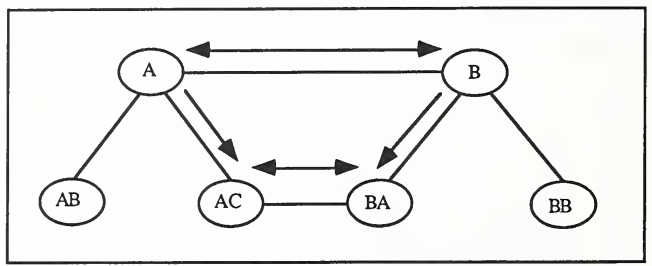
2 つの木の図です。A の下に AB と AC、B の下に BA と BB があります。A と B は線で結ばれ、その上に両向きの矢印があります。AC と BA も線で結ばれ、両向きの矢印があります。A から AC へ、B から BA へ一方向の矢印があります。
Figure 5.2.3:9 Multiple certification paths
図 5.2.3:9 複数の認証パス
[RFC 1114] allows only one cross-certificate to be part of a certification path. In the example illustrated in the figure below, users within the certificate domain of the U.S. cannot authenticate users within the certificate domain of Sweden. This because two cross-certificates would be included in the certification path.
[RFC 1114] は、認証パスの一部になれる相互認証証明書を 1 つだけに限っています。下の図に示す例では、U.S. の証明書ドメイン内のユーザーは、Sweden の証明書ドメイン内のユーザーを認証できません。これは、認証パスに 2 つの相互認証証明書が含まれることになるためです。
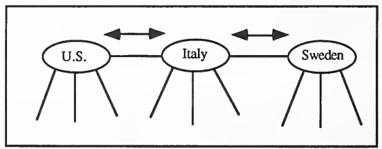
U.S.、Italy、Sweden の 3 つの最上位 CA が横に並び、それぞれの下に 3 本の線がある図です。U.S. と Italy、Italy と Sweden がそれぞれ線と両向きの矢印で結ばれていますが、U.S. と Sweden は直接結ばれていません。
Figure 5.2.3:10 Disallowed structure of cross-certificates
図 5.2.3:10 認められない相互認証証明書の構造
To allow users within the certificate domains of the U.S. and Sweden to authenticate each other, the cross-certificates must be arranged as shown below:
U.S. と Sweden の証明書ドメイン内のユーザーが互いに認証できるようにするには、相互認証証明書を次のように配置しなければなりません。
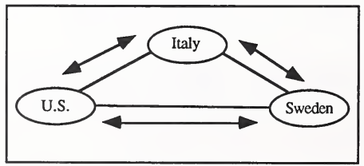
U.S.、Italy、Sweden の三角形の図です。どの組も線と両向きの矢印で結ばれており、U.S. と Sweden も直接相互認証されています。
Figure 5.2.3:11 Allowed structure of cross-certificates
図 5.2.3:11 認められる相互認証証明書の構造
The reason is that agreements made between top level CAs have to be bilateral. By traversing more than one cross-certificate is therefore a violation of the bilateral rule.
その理由は、最上位 CA 間の合意が二者間で行われなければならないためです。したがって、複数の相互認証証明書をたどることは、二者間の規則に違反します。
5.2.4 Section summary
5.2.4 節のまとめ
Of the different schemes reviewed, the Directory Authentication Framework and RFC 1114 are the ones which are most similar to our model of key management. SDNS has a single level hierarchy, which may be a limitation in an OSI environment. Is the general scheme of the Directory Authentication Framework or the restricted scheme of RFC 1114 to be preferred? The first difference between the two schemes is that the RFC 1114 scheme contains only forward certificates. From which certification authority should the trust originate? In the general scheme of the Directory Authentication Framework, see section 5.2.2, where there are both forward and reverse certificates, the trust originates from the lowest CA in the hierarchy. That is, the CA which has certified the user. With possession of the public key of the trusted CA, the user can verify the reverse certificate issued by the trusted CA and obtain the public key of the CA immediate superior in order of hierarchy. In such a scheme it may be natural for the user to trust the CA which issued the user´s certificate and other nearby CAs. In the article The Role Of Naming In Secure Distributed Systems [GASS90] it is written:
検討したさまざまな方式のうち、Directory Authentication Framework と RFC 1114 が、私たちの鍵管理モデルに最も近いものです。SDNS は単一レベルの階層を持っており、OSI 環境では制約となるかもしれません。Directory Authentication Framework の一般的な方式と RFC 1114 の制限された方式のどちらが望ましいのでしょうか。2 つの方式を比較したときの最初の違いは、RFC 1114 の方式には順方向証明書しか含まれないことです。信頼はどの認証局から始まるべきでしょうか。順方向証明書と逆方向証明書の両方がある Directory Authentication Framework の一般的な方式（5.2.2 節を参照）では、信頼は階層内で最下位の CA、すなわちユーザーを認証した CA から始まります。ユーザーは、信頼する CA の公開鍵を持っていれば、その信頼する CA が発行した逆方向証明書を検証し、階層上で直近の上位 CA の公開鍵を得られます。そのような方式では、ユーザーが、自身の証明書を発行した CA や近くにある他の CA を信頼するのは自然かもしれません。論文 The Role Of Naming In Secure Distributed Systems [GASS90] には、次のように書かれています。
This model matches well the notion that organizations are more likely to trust their local managers to certify their users than they would trust a higher level manager. Under this model the highest level or "root" authority will rarely be trusted for anything except for authentication spanning the highest level domains (e.g., "countries" in X.500).
このモデルは、組織が、より上位の管理者よりも、ユーザーを証明する自組織の現地の管理者を信頼する可能性が高いという考え方によく合っています。このモデルでは、最上位または「ルート」の認証機関は、最上位のドメイン（たとえば X.500 の「国」）にまたがる認証以外の目的では、ほとんど信頼されません。
In the [RFC 1114] scheme trust originates from the topmost CA, because by being in possession of the public key of the topmost CA all certificates can be verified. The second difference is that RFC 1114 presumes the certification hierarchy to coincide with the naming hierarchy. This paper does not review the Digital Distributed System Security Architecture, the reader is referred to The Digital Distributed System Security Architecture [GASS89] and Practical Authentication For Distributed Computing [LINN90]. It should, however, be noted that the Digital Distributed System Security Architecture also has a coupling between the naming hierarchy and the certification hierarchy. Very likely it is harder to implement the functionality described in the Directory Authentication Framework compared to that of RFC 1114. On the other hand, probably not everyone would agree about having the certification hierarchy parallel the naming hierarchy. Nevertheless, in this paper preference is given to the RFC 1114 styled scheme.
RFC 1114 の方式では、最上位の CA の公開鍵を持っていればすべての証明書を検証できるため、信頼は最上位の CA から始まります。2 つ目の違いは、RFC 1114 が、認証局の階層が命名の階層と一致することを前提としている点です。本書では Digital Distributed System Security Architecture を検討しません。読者は The Digital Distributed System Security Architecture [GASS89] と Practical Authentication For Distributed Computing [LINN90] を参照してください。ただし、Digital Distributed System Security Architecture にも、命名の階層と認証局の階層との結び付きがあることに注意すべきです。Directory Authentication Framework に記述された機能は、RFC 1114 の機能に比べて、おそらく実装が難しいです。一方、認証局の階層を命名の階層に沿わせることに、全員が賛成するとは限りません。それでも、本書では RFC 1114 型の方式を優先します。
Note that the previous sections do not deal with trusted relationships. In reality a KMSA must have prior knowledge about the CAs it can trust. Only certificates issued by the trusted CAs can be included in a certification path.
なお、前の各節は信頼関係を扱っていません。実際には、KMSA は、信頼できる CA について事前の知識を持っていなければなりません。認証パスに含められるのは、信頼された CA が発行した証明書だけです。
5.3 ORGANIZATION OF KEY DISTRIBUTION AND KEY TRANSLATION CENTERS
5.3 鍵配布センターおよび鍵変換センターの編成
Key Distribution Centers (CKDs) and Key Translation Centers (CKTs) are associated with a symmetric form of key management. However, early articles when describing key management based on asymmetric principles used the term Key Distribution Center. For example, the term Key Distribution Center appears both in Issues In The Design Of A Key Distribution Center [PRIC81] and Initialization Of Cryptographic Variables In A Network With A Large Number Of Computers [MATY86] although asymmetric aspects are discussed. Later articles normally use one of the following terms when describing an asymmetric form of key management: key management center, certification authority, certification center or key certification center. A user, which in our key management model is manifested by a KMSA, is referred to as a party in [ANSI X9.17] and in [ANSI X9.28] as a subscriber. The abbreviations CKD and CKT are in accordance with [ANSI X9.17].
Key Distribution Center（CKD）と Key Translation Center（CKT）は、共通鍵暗号に基づく鍵管理に関連します。ただし、初期の論文は、非対称の原理に基づく鍵管理を説明する際にも、Key Distribution Center という用語を使っていました。たとえば、Issues In The Design Of A Key Distribution Center [PRIC81] と Initialization Of Cryptographic Variables In A Network With A Large Number Of Computers [MATY86] はどちらも、非対称の側面を論じているにもかかわらず、Key Distribution Center という用語が登場します。後の論文は、非対称形式の鍵管理を説明するときには、通常、次のいずれかの用語を使います。鍵管理センター、認証局、認証センター、または鍵認証センターです。私たちの鍵管理モデルで KMSA によって具現化されるユーザーは、[ANSI X9.17] では当事者（party）、[ANSI X9.28] では加入者（subscriber）と呼ばれます。略語 CKD と CKT は [ANSI X9.17] に従っています。
The motive for using CKDs and CKTs is the large number of keys that otherwise have to be shared in a network constituted of n components, \(O(n^2)\). Instead of letting each party share a pairwise key with every other party, they share a Key Encrypting Key (KEK) with a CKD or CKT. In [ANSI X9 17] and [ANSI X9.28] the KEK is called *KK, (*)KK or KK. *KK denotes a key pair; (*)KK denotes that the KEK can be either a key pair or a single key; KK denotes a single key. See Annex A for more details regarding single keys and key pairs. A CKD or CKT in this kind of environment is a centralized trusted party.
CKD と CKT を使う動機は、n 個の構成要素からなるネットワークで、そうしなければ共有しなければならない鍵の数が多くなること（\(O(n^2)\)）です。各当事者が他のすべての当事者とペアごとの鍵を共有する代わりに、各当事者は CKD または CKT と Key Encrypting Key（KEK）を共有します。[ANSI X9 17] と [ANSI X9.28] では、KEK は *KK、(*)KK または KK と呼ばれます。*KK は鍵ペアを、(*)KK は KEK が鍵ペアでも単一の鍵でもよいことを、KK は単一の鍵を表します。単一の鍵と鍵ペアの詳細は附属書 A を参照してください。この種の環境における CKD または CKT は、集中型の信頼された当事者です。
Annex A makes a comparison between a symmetric and asymmetric form of key management, where the asymmetric form is preferred. Why then consider a symmetric form of key management? There are several answers, organizations may have invested significantly in symmetric based key management. The investments must be paid before a transition to an asymmetric form of key management can take place. Organizations may have the opinion that symmetric algorithms are preferable to asymmetric ones. This may be particularly valid for organizations which develop their own secret algorithms. In some countries asymmetric algorithms are patented (e.g., U.S.A.) which make their usage more restricted.
附属書 A は、共通鍵形式と非対称形式の鍵管理を比較しており、そこでは非対称形式が好まれています。それなら、なぜ共通鍵形式の鍵管理を検討するのでしょうか。答えはいくつかあります。組織は、共通鍵に基づく鍵管理に多額の投資をしている場合があります。非対称形式の鍵管理へ移行する前に、その投資を回収しなければなりません。組織は、共通鍵アルゴリズムのほうが非対称アルゴリズムより望ましいと考える場合があります。これは特に、独自の秘密アルゴリズムを開発する組織に当てはまるかもしれません。国によっては、非対称アルゴリズムが特許取得済みであるため（例：米国）、その使用がより制限されます。
The difference between a CKD and CKT environment is that in a CKD environment the CKD is responsible for the key generation. The CKD is responsible for generating the data keys (KDs) shared between two parties. Data keys can be viewed to correspond to traffic encryption keys. If [ANSI X9.17] and [ANSI X9.28] terminology is used, a data key is either an encryption data key or an authentication data key. An encryption data key may be associated with an initialization vector (IV). In a CKT environment the parties generate the keys, which can be either of type (*)KK or KD, but the keys must be notarized (translated) by the CKT. There are two possible reasons why a CKD should generate the data keys. First, a party may not have a key generation capability. Second, since the CKD is a trusted place, a party may place more trust in a key generated by the CKD than that generated by another party.
CKD 環境と CKT 環境の違いは、CKD 環境では CKD が鍵の生成に責任を負うことです。CKD は、2 つの当事者の間で共有されるデータ鍵（KD）の生成に責任を負います。データ鍵は、トラフィック暗号化鍵に相当するとみなせます。[ANSI X9.17] と [ANSI X9.28] の用語を使えば、データ鍵は、暗号化データ鍵か認証データ鍵のいずれかです。暗号化データ鍵には、初期化ベクトル（IV）が関連づけられる場合があります。CKT 環境では、当事者が鍵を生成します。鍵は (*)KK または KD のいずれの種類でもよいですが、CKT によって公証（変換）されなければなりません。CKD がデータ鍵を生成すべき理由は 2 つ考えられます。第一に、当事者が鍵生成の能力を持っていない場合があります。第二に、CKD は信頼できる場所であるため、当事者は、他の当事者が生成した鍵よりも CKD が生成した鍵を信頼する場合があります。
An issue is how the key centers (CKDs or CKTs) should be organized. Should there be only one key center or several? These questions are similar to the ones raised about certification authorities in the asymmetric form of key management.
課題の一つは、鍵センター（CKD または CKT）をどのように編成すべきかです。鍵センターは 1 つだけにすべきでしょうか、それとも複数にすべきでしょうか。これらの問いは、非対称形式の鍵管理における認証局について提起された問いと似ています。
The following sections use the terms offset encryption and notarization. There is more about offset encryption and notarization in Annex A.
以下の各節では、オフセット暗号化と公証という用語を使います。オフセット暗号化と公証については、附属書 A にさらに説明があります。
5.3.1 Organization of Key Distribution and Key Translation Centers in X9.17
5.3.1 X9.17 における鍵配布センターおよび鍵変換センターの編成
The X9.17 standard [ANSI X9.17] specifies only one key center6, which can be either a CKD or a CKT. Thus, all the parties share the same CKD or CKT. The messages sent between a party and a key center, or between two parties, are called Cryptographic Service Messages (CSMs). CSMs can be viewed to correspond to the PDUs of OSI.
X9.17 標準 [ANSI X9.17] は、CKD と CKT のいずれでもよい鍵センターを 1 つだけ6規定しています。したがって、すべての当事者が同じ CKD または CKT を共有します。当事者と鍵センターの間、または 2 つの当事者の間で送られるメッセージは、Cryptographic Service Message（CSM）と呼ばれます。CSM は、OSI の PDU に相当するとみなせます。
[ANSI X9.17] specifies three kinds of environments:
[ANSI X9.17] は、次の 3 種類の環境を規定しています。
•Key Distribution Center (CKD) environment;
•Key Distribution Center（CKD）環境
•Key Translation Center (CKT) environment;
•Key Translation Center（CKT）環境
•Point-to-Point (PTP) environment.
•Point-to-Point（PTP）環境
The kind of keys distributed vary in the different environments. For a CKD environment the distributed keys can only be of type data keys (KDs). A CKT can translate both KDs and (*)KKs. In a PTP environment both KDs and (*)KKs are allowed to be automatically distributed. In a CKT environment when a (*)KK is present in a message it has one accompanying KD. While in a PTP environment if a (*)KK is present in a message it can have two accompanying KDs. In a CKT environment if no (*)KK is present, the message can contain two KDs. A KD may be associated with an initialization vector (IV), however, in a message there can be only one IV.
配布される鍵の種類は、環境によって異なります。CKD 環境では、配布される鍵はデータ鍵（KD）の種類に限られます。CKT は KD と (*)KK の両方を変換できます。PTP 環境では、KD と (*)KK の両方を自動的に配布できます。CKT 環境では、メッセージに (*)KK が含まれる場合、それに付随する KD が 1 つあります。一方、PTP 環境では、メッセージに (*)KK が含まれる場合、それに付随する KD を 2 つ持てます。CKT 環境では、(*)KK が含まれなければ、メッセージは 2 つの KD を含められます。KD には初期化ベクトル（IV）が関連づけられる場合がありますが、メッセージ内の IV は 1 つに限られます。
A party and a key center must share a manually distributed *KK, while in a PTP environment two communicating parties share a (*)KK. This (*)KK may or may not be manually distributed. When a (*)KK is present in a CSM, the KD present in the CSM is protected by the (*)KK. That is, the (*)KK included in the CSM is used to encrypt the KD also included in the CSM. The (*)KK must be protected with a manually distributed (*)KK. An IV may or may not be encrypted, if it is encrypted the key used to perform the encryption is the associated KD. If two KDs are present in a message, the second one is used to encrypt the IV. The key hierarchy is shown in the following figure:
当事者と鍵センターは、手作業で配布された *KK を共有しなければなりません。一方、PTP 環境では、通信する 2 つの当事者が (*)KK を共有します。この (*)KK は、手作業で配布される場合もされない場合もあります。CSM に (*)KK が含まれるとき、CSM に含まれる KD は (*)KK で保護されます。すなわち、CSM に含まれる (*)KK は、同じ CSM に含まれる KD を暗号化するために使われます。(*)KK は、手作業で配布された (*)KK で保護しなければなりません。IV は暗号化される場合もされない場合もあり、暗号化する場合に暗号化に使う鍵は、付随する KD です。メッセージに 2 つの KD が含まれる場合、2 つ目が IV の暗号化に使われます。鍵の階層を次の図に示します。
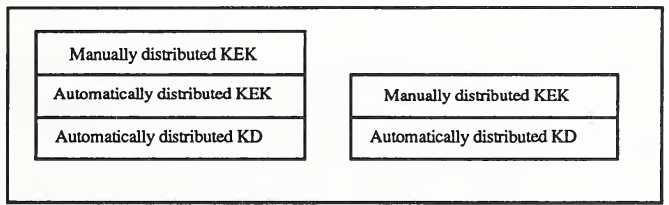
枠の中に積み重ねた枠を 2 組並べた図です。左（3 層）は上から Manually distributed KEK、Automatically distributed KEK、Automatically distributed KD、右（2 層）は上から Manually distributed KEK、Automatically distributed KD です。
Figure 5.3.1:1 X9.17 key hierarchy
図 5.3.1:1 X9.17 の鍵の階層
In a three layer hierarchy, a manually distributed KEK is used to protect automatically distributed KEKs. Automatically distributed KEKs are then used to protect the KDs. For a two layer hierarchy a manually distributed KEK is used to protect KDs. An example of a three layer hierarchy is when Party A sends a (*)KK to be translated by its CKT. During the distribution the (*)KK is protected by a manually distributed *KK shared between Party A and the CKT. After the notarization (*)KK is sent from the CKT to Party A and thereafter from Party A to Party B. After (*)KK has been distributed to Party B, it is used to protect KDs transferred between Party A and Party B. When only one KD is included in a CSM the Message Authentication Code (MAC), which integrity protects the CSM, is calculated by using the single KD as the encryption key to produce the MAC. When two KDs are included the MAC is computed by using by a key which is derived from an exclusive-or operation performed on those KDs. A counter (CT) is used to protect against replay attacks.
3 層の階層では、手作業で配布された KEK が、自動的に配布される KEK を保護するために使われます。自動的に配布される KEK は、次に KD を保護するために使われます。2 層の階層では、手作業で配布された KEK が KD を保護するために使われます。3 層の階層の例は、当事者 A が、自身の CKT に変換してもらうために (*)KK を送る場合です。配布中、(*)KK は、当事者 A と CKT の間で共有される手作業で配布された *KK で保護されます。公証の後、(*)KK は CKT から当事者 A に送られ、その後、当事者 A から当事者 B に送られます。(*)KK が当事者 B に配布された後、それは、当事者 A と当事者 B の間で転送される KD を保護するために使われます。CSM に KD が 1 つだけ含まれる場合、CSM の完全性を保護するメッセージ認証コード（MAC）は、その 1 つの KD を暗号化鍵として使って MAC を生成することで計算されます。2 つの KD が含まれる場合、MAC は、それらの KD に対して排他的論理和演算を行って得られる鍵を使って計算されます。リプレイ攻撃を防ぐために、カウンター（CT）が使われます。
The following examples describe how X9.17 key exchanges may occur. The figure below illustrates a key exchange involving a CKD:
次の例は、X9.17 の鍵交換がどのように行われうるかを説明します。下の図は、CKD が関わる鍵交換を示しています。
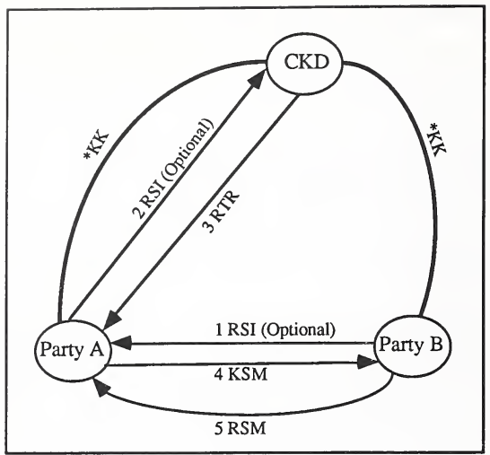
枠で囲んだ、CKD（上）、Party A（左下）、Party B（右下）の 3 つの円で鍵交換を示す図です。*KK と書かれた曲線が CKD と Party A、CKD と Party B を結んでいます。番号付きの矢印は、1 RSI (Optional) が Party B から Party A へ、2 RSI (Optional) が Party A から CKD へ、3 RTR が CKD から Party A へ、4 KSM が Party A から Party B へ、5 RSM が下側の曲線に沿って Party B から Party A へ向かっています。
Figure 5.3.1:2 X9.17 key exchange by using a CKD
図 5.3.1:2 CKD を使う X9.17 の鍵交換
1.In this example Party B sends an RSI7 to Party A requesting a data key (KD) and an initialization vector (IV).
1.この例では、当事者 B が、データ鍵（KD）と初期化ベクトル（IV）を要求する RSI7 を当事者 A に送ります。
2.Party A sends an RSI to the CKD requesting a data key and an initialization vector.
2.当事者 A は、データ鍵と初期化ベクトルを要求する RSI を CKD に送ります。
3.The CKD sends an RTR containing the generated key and the initialization vector, to Party A. There are two sets of keys, one set is notarized using the *KK shared between the CKD and Party A (that is, the *KK is one of the components used to produce the notarization key) and the other is notarized using the *KK shared between the CKD and Party B. The RTR CSM is integrity protected by a MAC computed with the KD. Included in the RTR is also a counter in order to detect replay attacks. In the following the presence of a counter is omitted.
3.CKD は、生成した鍵と初期化ベクトルを含む RTR を当事者 A に送ります。鍵は 2 組あり、1 組は CKD と当事者 A の間で共有される *KK を使って公証され（つまり、*KK は公証鍵を生成するために使われる構成要素の一つです）、もう 1 組は CKD と当事者 B の間で共有される *KK を使って公証されます。RTR CSM は、KD で計算された MAC によって完全性保護されます。RTR には、リプレイ攻撃を検知するためのカウンターも含まれます。以下では、カウンターの存在は省略します。
4.Party A sends a KSM containing the KD to Party B. The KD is notarized using the *KK shared between the CKD and Party B. The KSM message is integrity protected in the same manner as explained in 3 above.
4.当事者 A は、KD を含む KSM を当事者 B に送ります。KD は、CKD と当事者 B の間で共有される *KK を使って公証されます。KSM メッセージは、上の 3 で説明したのと同じ方法で完全性保護されます。
5.Party B acknowledges the correct receipt of the KSM message by returning an RSM. The RSM is integrity protected with the previously distributed KD.
5.当事者 B は、RSM を返すことで、KSM メッセージを正しく受信したことを確認応答します。RSM は、先に配布された KD で完全性保護されます。
Annex A provides a more detailed explanation about an X9.17 key exchange.
附属書 A は、X9.17 の鍵交換のより詳しい説明を示します。
In the following two examples it is omitted that the CSMs may be integrity protected. The following diagram illustrates an X9.17 key exchange involving a CKT:
次の 2 つの例では、CSM が完全性保護される場合があることには触れません。次の図は、CKT が関わる X9.17 の鍵交換を示しています。
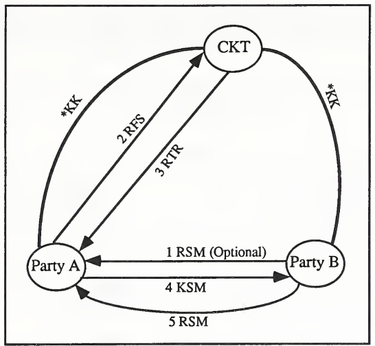
枠で囲んだ、CKT（上）、Party A（左下）、Party B（右下）の 3 つの円で鍵交換を示す図です。*KK と書かれた曲線が CKT と Party A、CKT と Party B を結んでいます。番号付きの矢印は、1 RSM (Optional) が Party B から Party A へ、2 RFS が Party A から CKT へ、3 RTR が CKT から Party A へ、4 KSM が Party A から Party B へ、5 RSM が下側の曲線に沿って Party B から Party A へ向かっています。
Figure 5.3.1:3 X9.17 key exchange by using a CKT
図 5.3.1:3 CKT を使う X9.17 の鍵交換
1.Party B sends a request to Party A to generate a data key (KD) and an initialization vector (IV).
1.当事者 B は、データ鍵（KD）と初期化ベクトル（IV）を生成するよう当事者 A に要求します。
2.Party A generates the KD and IV and sends an RFS to the CKT. The RFS contains the generated key material. The newly generated data key is encrypted with the *KK shared between Party A and the CKT.
2.当事者 A は、KD と IV を生成し、RFS を CKT に送ります。RFS には、生成した鍵素材が含まれます。新たに生成されたデータ鍵は、当事者 A と CKT の間で共有される *KK で暗号化されます。
3.The KD is decrypted using the *KK shared between Party A and the CKT. Thereafter the KD is notarized using the *KK shared between Party B and the CKT. The notarized KD is included in the RTR sent to Party A.
3.KD は、当事者 A と CKT の間で共有される *KK を使って復号されます。その後、KD は、当事者 B と CKT の間で共有される *KK を使って公証されます。公証された KD は、当事者 A に送られる RTR に含まれます。
4.Party A sends a KSM to Party B, the CSM contains the notarized KD.
4.当事者 A は、KSM を当事者 B に送ります。CSM には、公証された KD が含まれます。
5.The KSM is acknowledged by an RSM.
5.KSM は、RSM によって確認応答されます。
One of the reasons why a key center is not sending the generated data keys directly to Party B is to minimize the communication with the key center. The key center, which in the case of a CKD has to be involved in every key exchange occurring in the network, may otherwise become a bottleneck.
鍵センターが生成したデータ鍵を当事者 B に直接送らない理由の一つは、鍵センターとの通信を最小限に抑えるためです。鍵センターは、CKD の場合、ネットワークで行われるすべての鍵交換に関与しなければならないため、そうしなければボトルネックになるおそれがあります。
If key notarization is not done, it is possible for a party having a keying relationship with the center, to masquerade as another party which also has a keying relationship with the center. For example, Party C could masquerade as Party A, when performing a key exchange with Party B. How such an attack could occur is described in Annex A.
鍵の公証が行われなければ、センターと鍵関係を持つ当事者が、同じくセンターと鍵関係を持つ別の当事者になりすますことが可能です。たとえば、当事者 C は、当事者 B と鍵交換を行う際に、当事者 A になりすませます。そのような攻撃がどのように起こりうるかは、附属書 A で説明します。
In our model of key management the CKD or the CKT functionality is represented by a KCA, as previously mentioned the two parties are represented by the KMSAs.
私たちの鍵管理モデルでは、CKD または CKT の機能は KCA によって表されます。前に述べたように、2 つの当事者は KMSA によって表されます。
[ANSI X9.17] provides a PTP environment. In this environment the two parties share a Key Encrypting Key, (*)KK, and need not involve a key center8. An [ANSI X9.17] PTP key exchange occurs in the following way:
[ANSI X9.17] は、PTP 環境を提供します。この環境では、2 つの当事者が Key Encrypting Key（(*)KK）を共有しており、鍵センターを関与させる必要はありません8。[ANSI X9.17] の PTP 鍵交換は、次のように行われます。
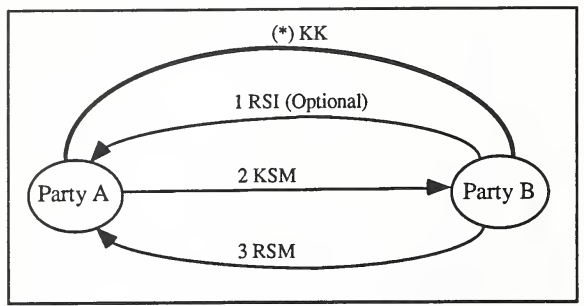
枠で囲んだ、Party A（左）と Party B（右）の 2 者間の鍵交換の図です。両者は上側の (*) KK と書かれた曲線で結ばれています。番号付きの矢印は、1 RSI (Optional) が Party B から Party A へ、2 KSM が Party A から Party B へ、3 RSM が下側の曲線に沿って Party B から Party A へ向かっています。
Figure 5.3.1:4 X9.17 Point-to-Point exchange
図 5.3.1:4 X9.17 のポイントツーポイント交換
1.Party B sends an RSI requesting Party A to generate a KD and an IV.
1.当事者 B は、KD と IV を生成するよう当事者 A に要求する RSI を送ります。
2.Party A generates the requested key material and includes it in the KSM where the KD is protected by the (*)KK. Note, the KD does not need to be notarized.
2.当事者 A は、要求された鍵素材を生成し、KD を (*)KK で保護した KSM にそれを含めます。なお、KD は公証される必要がありません。
3.Party B as an acknowledgement returns the RSM.
3.当事者 B は、確認応答として RSM を返します。
5.3.2 Organization of Key Distribution and Key Translation Centers in X9.28
5.3.2 X9.28 における鍵配布センターおよび鍵変換センターの編成
This standard, X9.28 [ANSI X9.28], includes several key centers. As in the case of having just one CA, it seems unrealistic that just one key center (CKD or CKT) can serve a large OSI community.
この標準 X9.28 [ANSI X9.28] は、複数の鍵センターを含みます。CA が 1 つだけの場合と同様に、鍵センター（CKD または CKT）が 1 つだけで大規模な OSI コミュニティにサービスを提供できるとは、非現実的に思われます。
A multiple center group (also called group) is a set of two or more centers which have formally agreed to share a common identity and work together to provide cryptographic keying services to their subscribers. To the subscribers of a group, the group functions as if it were a single X9.17 key center that is known by a common identity. A specific key center may belong to more than one group. The following is an example of an [ANSI X9.28] multiple center group.
複数センターグループ（単にグループとも呼ばれます）は、共通の識別情報を共有し、協力して加入者に暗号鍵サービスを提供することに正式に合意した、2 つ以上のセンターの集合です。グループの加入者にとって、グループは、共通の識別情報で知られる単一の X9.17 鍵センターであるかのように機能します。特定の鍵センターは、複数のグループに属してもかまいません。次は、[ANSI X9.28] の複数センターグループの例です。
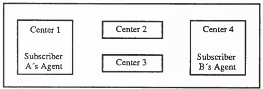
4 つの枠を含む枠の図です。左に Center 1（中に Subscriber A´s Agent と記載）、中央に上下に並んだ Center 2 と Center 3、右に Center 4（中に Subscriber B´s Agent と記載）があります。
Figure 5.3.2:1 Example of an X9.28 multiple Center Group
図 5.3.2:1 X9.28 の複数センターグループの例
To its subscribers a group offers either a key distribution service, equivalent to the service provided by an X9.17 Key Distribution Center, or a key translation service equivalent to the service provided by an X9.17 Key Translation Center.
グループは、その加入者に、X9.17 の Key Distribution Center が提供するサービスと同等の鍵配布サービス、または X9.17 の Key Translation Center が提供するサービスと同等の鍵変換サービスのいずれかを提供します。
The figure below is an example of how a multiple center group may be used in an internet environment. Every LAN has a designated key center, KDC, and two KDCs could form a multiple center group.
下の図は、複数センターグループをインターネット環境でどのように使えるかの例です。すべての LAN には指定された鍵センター KDC があり、2 つの KDC で複数センターグループを構成できます。

枠で囲んだネットワークの図です。中央に「Long-haul Network」（長距離網）の楕円があり、4 つの LAN（「LAN A」「LAN B」「LAN C」「LAN D」の楕円）がそれぞれ「Gateway」（ゲートウェイ）の枠を通じてこれにつながっています。各 LAN には次の枠が接続されています。LAN A には「S A1」「KDC A」「S A2」、LAN B には「S B1」「KDC B」「S B2」、LAN C には「S C1」「S C2」「KDC C」、LAN D には「S D1」「KDC D」「S D2」の枠があります。右下の凡例は「S = Station」（S は局）です。
Figure 5.3.2:2 X9.28 used in an internet environment
図 5.3.2:2 インターネット環境で使われる X9.28
If stations A1 and A2 exchange keys, they use their common KDC, KDC A. If stations A1 and B1 have to exchange keys they do not have a common KDC. Therefore KDC A and KDC B may form a multiple center group. Thus, enabling a station residing in LAN A to perform a key exchange with a station residing in LAN B.
ステーション A1 と A2 が鍵を交換する場合、両者に共通の KDC である KDC A を使います。ステーション A1 と B1 が鍵を交換しなければならない場合、両者に共通の KDC はありません。そのため、KDC A と KDC B が複数センターグループを構成する場合があります。これにより、LAN A にあるステーションが、LAN B にあるステーションと鍵交換を行えるようになります。
A group which provides a key distribution service has centers which generate, translate and notarize keys. At least one of the centers within the group must have a key generation capability. The following figure shows an example where only one of the centers, Center 4, has the key generation capability.
鍵配布サービスを提供するグループには、鍵を生成し、変換し、公証するセンターがあります。グループ内のセンターのうち少なくとも 1 つは、鍵生成の能力を持っていなければなりません。次の図は、センターのうち Center 4 だけが鍵生成の能力を持つ例を示しています。
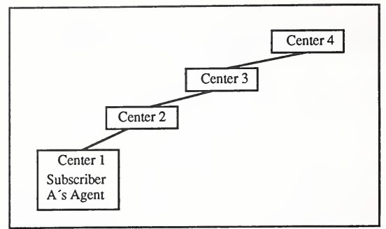
枠の中に 4 つの枠が左下から右上へ階段状に並び、順に線で結ばれた図です。「Center 1」（同じ枠に「Subscriber A´s Agent」〔加入者 A のエージェント〕とも書かれています）、「Center 2」、「Center 3」、「Center 4」です。
Figure 5.3.2:3 Center 4 has the key generation capability
図 5.3.2:3 Center 4 が鍵生成の能力を持つ
Because Center 1 does not have a key generation capability, a request from Subscriber A is forwarded to the next center, Center 2. Center 2 also lacks a key generation capability and therefore forwards the request. Sooner or later the center which has the key generation capability is reached, in this example Center 4. If several centers have a key generation capability, during an [ANSI X9.28] key exchange transaction, only one of the centers shall use the capability. Only the subscriber´s agent shall notarize the keys.
Center 1 は鍵生成の能力を持たないため、Subscriber A からの要求は次のセンターである Center 2 に転送されます。Center 2 も鍵生成の能力を持たないため、要求を転送します。遅かれ早かれ、鍵生成の能力を持つセンターに到達し、この例では Center 4 です。複数のセンターが鍵生成の能力を持つ場合、[ANSI X9.28] の鍵交換トランザクション中は、そのうちの 1 つだけがその能力を使わなければなりません。鍵を公証するのは、加入者のエージェントだけでなければなりません。
An agent shares a key encrypting key, *KK, with each of its subscribers. The key is distributed according to [ANSI X9.17] key center rules. Two centers having a direct keying relationship share:
エージェントは、自身の各加入者と鍵暗号化鍵 *KK を共有します。この鍵は、[ANSI X9.17] の鍵センターの規則に従って配布されます。直接の鍵関係を持つ 2 つのセンターは、次を共有します。
•a manually distributed Key Encrypting Key, *KK;
•手作業で配布された Key Encrypting Key（*KK）
•an authentication data key (KDA) distributed manually or by using [ANSI X9.17] point-to-point protocols.
•手作業で、または [ANSI X9.17] のポイントツーポイントプロトコルを使って配布された認証データ鍵（KDA）
The key encrypting keys and data keys carried in multiple centers CSMs and delivered to subscribers for their use are called subscriber keys. The keys used by key centers for the secure transportation of subscriber keys are called transportation keys. When a subscriber key, (*)KK, is present in a message, the (*)KK is the highest level subscriber key transported in the message. When no subscriber (*)KK is present in a message, the subscriber KDs are the highest level keys in the message. A pair of centers in a group with a direct keying relationship share at least one transportation key encrypting key pair, *KK, and at least one transportation key authentication data key, KDA. Transportation *KKs are used to offset encrypt the highest level subscriber keys. Transportation KDAs are used to authenticate (according to OSI terminology it would be integrity protect) the CSMs exchanged between centers. Centers may use automatically distributed *KKs, distributed using [ANSI X9.17] point-to-point protocol procedures. During the distribution phase the distributed *KKs are protected with the manual distributed *KK.
複数のセンターの CSM で運ばれ、加入者が使用するために届けられる鍵暗号化鍵とデータ鍵は、加入者鍵と呼ばれます。鍵センターが加入者鍵を安全に輸送するために使う鍵は、輸送鍵と呼ばれます。メッセージに加入者鍵 (*)KK が含まれる場合、その (*)KK は、メッセージで輸送される最上位の加入者鍵です。メッセージに加入者 (*)KK が含まれない場合、加入者 KD はメッセージ内の最上位の鍵です。グループ内で直接の鍵関係を持つセンターのペアは、少なくとも 1 組の輸送用鍵暗号化鍵ペア *KK と、少なくとも 1 つの輸送用認証データ鍵 KDA を共有します。輸送用 *KK は、最上位の加入者鍵をオフセット方式で暗号化するために使われます。輸送用 KDA は、センター間で交換される CSM を認証する（OSI の用語では完全性を保護する）ために使われます。センターは、[ANSI X9.17] のポイントツーポイントプロトコル手順を使って自動配布された *KK を使用してもよいです。配布フェーズでは、配布される *KK は、手動で配布された *KK によって保護されます。
In the example shown below there are two manually distributed keys, *KK(1-2) and *KK(1-3), shared between two key centers. Those keys are used to automatically distribute transportation key encrypting key pairs and transportation authentication data keys using [ANSI X9.17] point-to-point protocol procedures. For example, *KK(1-2) is used to protect the transportation key encrypting key pair and the transportation authentication key data key shared between Center 1 and Center 2 during the distribution phase.
下に示す例では、2 つの鍵センターの間で共有される、手作業で配布された鍵 *KK(1-2) と *KK(1-3) があります。これらの鍵は、[ANSI X9.17] のポイントツーポイントプロトコル手順を使って、輸送用鍵暗号化鍵ペアと輸送用認証データ鍵を自動的に配布するために使われます。たとえば、*KK(1-2) は、配布フェーズの間、Center 1 と Center 2 の間で共有される輸送用鍵暗号化鍵ペアと輸送用認証データ鍵を保護するために使われます。
![Multiple center group in a frame. Ellipses: "Center 2" at the top; "Center 1" ("Subscriber A´s Agent") at the left and "Center 3" ("Subscriber B´s Agent") at the right; "Subscriber A" and "Subscriber B" at the bottom. Thin straight lines join Center 1, Center 2 and Center 3, Center 1 to Subscriber A, Center 3 to Subscriber B, and Subscriber A to Subscriber B. Thick curved lines labeled with keys run outside: "*KK(1-2)" between Center 1 and Center 2, "*KK(1-3)" between Center 2 and Center 3, "*KK(1-A)" between Center 1 and Subscriber A, and "*KK(1-B)" between Center 3 and Subscriber B. In the middle, the note "Between centers are exchanged CSMs as described in X9.28" has arrows pointing left and right to the lines between centers, and the note "Between Subscribers and Agents and between Subscribers are exchanged CSMs as described in X9.17" has arrows pointing left, right and down to the lines involving the subscribers.](assets/ir-4983/p0053-figure-01.png)
枠で囲んだ複数センターグループの図です。楕円が、上に「Center 2」、左に「Center 1」（「Subscriber A´s Agent」〔加入者 A のエージェント〕）、右に「Center 3」（「Subscriber B´s Agent」〔加入者 B のエージェント〕）、下に「Subscriber A」と「Subscriber B」と並びます。細い直線が Center 1・Center 2・Center 3 の間、Center 1 と Subscriber A、Center 3 と Subscriber B、Subscriber A と Subscriber B を結んでいます。外側には鍵の名前を付けた太い曲線があり、Center 1 と Center 2 の間が「*KK(1-2)」、Center 2 と Center 3 の間が「*KK(1-3)」、Center 1 と Subscriber A の間が「*KK(1-A)」、Center 3 と Subscriber B の間が「*KK(1-B)」です。中央の注記「Between centers are exchanged CSMs as described in X9.28」（センター間では X9.28 のとおり CSM を交換する）からは左右のセンター間の線へ矢印が、注記「Between Subscribers and Agents and between Subscribers are exchanged CSMs as described in X9.17」（加入者とエージェントの間、加入者どうしでは X9.17 のとおり CSM を交換する）からは左右と下の加入者側の線へ矢印が向いています。
Figure 5.3.2:4 An example of a multiple center group
図 5.3.2:4 複数センターグループの例
As an alternative the transportation key encrypting key pairs and transportation authentication data keys can be distributed manually.
別の方法として、輸送用の鍵暗号化鍵ペアと輸送用の認証データ鍵は、手作業で配布できます。
5.3.2.1 X9.28 key exchange transaction
5.3.2.1 X9.28 の鍵交換トランザクション
The following example closely follows a similar example in Discussions Of Symmetrical (Secret Key) and Asymmetrical (Public Key) Cryptography [BARK91]. Center C2 is responsible for generating the keys. It is assumed that the transportation key encrypting key pairs *KKA,C1, *KKC1,C2, *KKC2,C3, *KKC1,C3 and *KKB,C3 and the transportation key authentication data key pairs *KDAC1,C2, KDAC1,C3 and *KDAC2,C3 are manually distributed.
次の例は、Discussions Of Symmetrical (Secret Key) and Asymmetrical (Public Key) Cryptography [BARK91] の同様の例にほぼ沿っています。Center C2 が鍵の生成に責任を負います。輸送用鍵暗号化鍵ペア *KKA,C1、*KKC1,C2、*KKC2,C3、*KKC1,C3、*KKB,C3 と、輸送用鍵認証データ鍵ペア *KDAC1,C2、KDAC1,C3、*KDAC2,C3 は、手作業で配布されているものと仮定します。
![X9.28 key exchange diagram in a frame. Circles: "C2" at the top, "C1" at the left, "C3" at the right, "A" at the bottom left and "B" at the bottom right. Curved lines link the pairs, each labeled with the values they share (subscripts shown after a space): between C1 and C2 "ASN C1,C2", "CTC C1,C2", "KDA C1,C2", "*KK C1,C2"; between C2 and C3 "ASN C2,C3", "CTC C2,C3", "KDA C2,C3", "*KK C2,C3"; between C1 and C3 "ASN C1,C3", "CTC C1,C3", "KDA C1,C3", "*KK C1,C3"; between A and C1 "CTA", "*KK A,C1"; between B and C3 "CTB", "*KK B,C3". Numbered message arrows: 1 "RSI (Optional)" from B to A; 2 "RSI (Optional)" from A to C1; 3 "MRSI" from C1 to C2; 4 "MRSM" from C2 to C1; 5 "MRFS" from C2 to C3; 6 "MRSM" from C3 to C2; 7 "MRTR" from C3 to C1; 8 "MRSM" from C1 to C3; 9 "RTR" from C1 to A; 10 "RSM" from A to C1; 11 "KSM" from A to B; 12 "RSM" from B to A.](assets/ir-4983/p0054-figure-01.png)
枠で囲んだ X9.28 の鍵交換の図です。円が、上に「C2」、左に「C1」、右に「C3」、左下に「A」、右下に「B」と並びます。各組は曲線で結ばれ、共有する値が添えられています（下付き文字は空白の後に示します）。C1 と C2 の間は「ASN C1,C2」「CTC C1,C2」「KDA C1,C2」「*KK C1,C2」、C2 と C3 の間は「ASN C2,C3」「CTC C2,C3」「KDA C2,C3」「*KK C2,C3」、C1 と C3 の間は「ASN C1,C3」「CTC C1,C3」「KDA C1,C3」「*KK C1,C3」、A と C1 の間は「CTA」「*KK A,C1」、B と C3 の間は「CTB」「*KK B,C3」です。番号付きのメッセージの矢印は、1「RSI (Optional)」が B から A、2「RSI (Optional)」が A から C1、3「MRSI」が C1 から C2、4「MRSM」が C2 から C1、5「MRFS」が C2 から C3、6「MRSM」が C3 から C2、7「MRTR」が C3 から C1、8「MRSM」が C1 から C3、9「RTR」が C1 から A、10「RSM」が A から C1、11「KSM」が A から B、12「RSM」が B から A です。
Figure 5.3.2.1:1 X9.28 key exchange transaction
図 5.3.2.1:1 X9.28 の鍵交換トランザクション
•Subscriber B sends an RSI message to Subscriber A requesting the desired key material. In this example the requested keying material consists of an encryption data key (KD) and an initialization vector (IV).
•Subscriber B は、必要な鍵素材を要求する RSI メッセージを Subscriber A に送ります。この例では、要求される鍵素材は、暗号化データ鍵（KD）と初期化ベクトル（IV）からなります。
•Subscriber A forwards the request to its Agent (C1).
•Subscriber A は、要求を自身のエージェント（C1）に転送します。
•Upon receiving the [ANSI X9.17] RSI message from Subscriber A, C1 sends the request on to C2 in the form of an [ANSI X9.28] MRSI message, which is similar to the RSI message. The MRSI message is integrity protected by a MAC produced with KDAC1,C2, and is replay protected by the Authentication Sequence Number ASNC1,C2. Each [ANSI X9.28] message is protected by a MAC produced with a KDA and is replay protected by an ASN. In the following description this is omitted.
•[ANSI X9.17] の RSI メッセージを Subscriber A から受信すると、C1 は、RSI メッセージに似た [ANSI X9.28] の MRSI メッセージの形で要求を C2 に送ります。MRSI メッセージは、KDAC1,C2 で生成された MAC によって完全性保護され、Authentication Sequence Number ASNC1,C2 によってリプレイ防御されます。[ANSI X9.28] の各メッセージは、KDA で生成された MAC によって保護され、ASN によってリプレイ防御されます。以下の説明では、これを省略します。
•C2 acknowledges the correct receipt of the MRSI message by returning an MRSM message. C2 generates the requested keying material. The *KK and the counter shared between C2 and C3, *KKC2,C3 and CTCC2,C3, are used to produce the offset encryption key. The offset encryption key is used to encrypt the highest level subscriber key. In this example the highest level subscriber key is the KD. If desired, the IV is encrypted with the KD. The offset encrypted KD and the IV are included in the MRFS. C3 acknowledges the correct receipt of the MRFS message by returning an MRSM
•C2 は、MRSM メッセージを返すことで、MRSI メッセージを正しく受信したことを確認応答します。C2 は、要求された鍵素材を生成します。C2 と C3 の間で共有される *KK とカウンター、*KKC2,C3 と CTCC2,C3 は、オフセット暗号化鍵を生成するために使われます。オフセット暗号化鍵は、最上位の加入者鍵を暗号化するために使われます。この例では、最上位の加入者鍵は KD です。必要であれば、IV は KD で暗号化されます。オフセット方式で暗号化された KD と IV は、MRFS に含まれます。C3 は、MRFS メッセージを正しく受信したことを MRSM を返すことで確認応答
•C3, which is Subscriber B´s Agent, offset decrypts the KD, if necessary decrypts the IV, and notarizes a copy of the KD. (The KEK and counter shared between Party B and its Agent, that is, *KKB,C3 and CTB, are used to produce the notarization key.) This copy is intended for Subscriber B. Another copy of the KD is offset encrypted by using *KKC1,C3 and CTCC1,C3. The two copies are part of the MRTR message sent to C1. C1 acknowledges the correct receipt of the MRTR message by returning an MRSM.
•Subscriber B のエージェントである C3 は、KD をオフセット復号し、必要であれば IV を復号し、KD のコピーを公証します。（Party B とそのエージェントの間で共有される KEK とカウンター、すなわち *KKB,C3 と CTB は、公証鍵を生成するために使われます。）このコピーは Subscriber B 向けです。KD のもう 1 つのコピーは、*KKC1,C3 と CTCC1,C3 を使ってオフセット暗号化されます。2 つのコピーは、C1 に送られる MRTR メッセージの一部です。C1 は、MRSM を返すことで、MRTR メッセージを正しく受信したことを確認応答します。
•C1 offset decrypts Subscriber A´s copy of the KD and notarizes it. Nothing is done to the copy intended for Subscriber B. The notarized copy intended for Subscriber A and the notarized copy intended for Subscriber B are both placed in the [ANSI X9.17] RTR message which is sent to Subscriber A. The RTR message is integrity protected by a MAC produced with the KD, as explained in [ANSI X9.17]. Subscriber A acknowledges the correct receipt of the RTR message by returning an RSM.
•C1 は、Subscriber A 向けの KD のコピーをオフセット復号し、公証します。Subscriber B 向けのコピーには何もしません。Subscriber A 向けの公証されたコピーと Subscriber B 向けの公証されたコピーは、どちらも、Subscriber A に送られる [ANSI X9.17] の RTR メッセージに入れられます。RTR メッセージは、[ANSI X9.17] で説明されているとおり、KD で生成された MAC によって完全性保護されます。Subscriber A は、RSM を返すことで、RTR メッセージを正しく受信したことを確認応答します。
•Subscriber A sends Subscriber B´s copy of the keying material in a KSM message.
•Subscriber A は、Subscriber B 向けの鍵素材のコピーを KSM メッセージで送ります。
•Subscriber B responds with an RSM if the KSM is received correctly.
•Subscriber B は、KSM を正しく受信した場合、RSM で応答します。
Note that during an X9.28 key exchange transaction the key material may be visible at the different key centers. A feeling may be that this is not good, because a secret should be shared by as few as possible.
なお、X9.28 の鍵交換トランザクションの間、鍵素材は、さまざまな鍵センターで見える状態になる場合があります。シークレットはできるだけ少ない当事者で共有すべきであるため、これは好ましくないという印象を持つかもしれません。
5.3.2.2 Diversion from the key management model
5.3.2.2 鍵管理モデルからの逸脱
Our model of key management represents the key centers by KCAs whose communication stream follows a single route. The KCAs of the key management model have a hierarchical relationship, however, [ANSI X9.28] centers do not need to be hierarchically related. For example, if a multiple center group consists of two key centers, each of them attached to a subscriber, the centers are not related in a hierarchical manner. In the hierarchy, the message flow between KCAs is restricted to a single path. However, for [ANSI X9.28] the intermediate centers used in one route of the message flow may or may not be the same as those used in the return route of the message flow.
私たちの鍵管理モデルは、通信の流れが単一の経路をたどる KCA で鍵センターを表します。鍵管理モデルの KCA は階層的な関係を持ちますが、[ANSI X9.28] のセンターは階層的に関係づけられている必要はありません。たとえば、複数センターグループが 2 つの鍵センターで構成され、それぞれが加入者に接続されている場合、センターは階層的な形では関係づけられません。階層では、KCA 間のメッセージの流れは単一の経路に限られます。しかし [ANSI X9.28] では、メッセージの流れの一つの経路で使われる中間のセンターは、メッセージの流れの戻りの経路で使われるものと同じ場合も同じでない場合もあります。
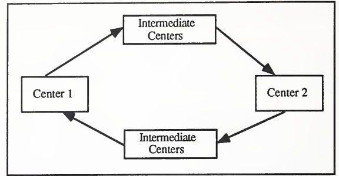
枠で囲んだ図で、左に「Center 1」、右に「Center 2」の枠があります。上側では Center 1 から「Intermediate Centers」（中間センター）の枠へ矢印が向かい、その枠から Center 2 へ矢印が向かいます。下側では Center 2 から別の「Intermediate Centers」の枠へ矢印が向かい、その枠から Center 1 へ矢印が戻ります。
Figure 5.3.2.2:1 Routes in different directions
図 5.3.2.2:1 異なる方向の経路
The key management model does not include the possibility of message flows going in different routes between KCAs. The possibility of having the message flow going in different routes may be more difficult to achieve in an OSI application protocol. Before an application layer PDU can be sent, an application association must be created9, through the use of ACSE. ACSE is also used to terminate the application association. If we try to adopt application layer concepts on Figure 5.3.2.1:1, should the application association be terminated or remain open after the MRSM is sent from C2 to C1? It may be more efficient to use already opened application associations, that is, between C1-C2 and C2-C3, instead of creating a new one, that is, between C1-C3. Application protocols include a state machine and therefore the PDUs must be sent and received in a certain order. If OSI application layer concepts are used, it may be more natural to relate the MRTR sent from C3 to an existing association, the one created between C2-C3, instead of sending the MRTR in a newly created application association.
鍵管理モデルは、KCA 間でメッセージの流れが異なる経路をたどる可能性を含んでいません。メッセージの流れが異なる経路をたどる可能性を持たせることは、OSI アプリケーションプロトコルでは実現がより難しい場合があります。アプリケーション層の PDU を送る前に、ACSE を使ってアプリケーションアソシエーションを作成しなければなりません9。ACSE は、アプリケーションアソシエーションの終了にも使われます。図 5.3.2.1:1 にアプリケーション層の概念を当てはめる場合、MRSM が C2 から C1 に送られた後、アプリケーションアソシエーションを終了させるべきでしょうか、それとも開いたままにすべきでしょうか。新しいもの（C1-C3 の間）を作成するより、すでに開いているアプリケーションアソシエーション、すなわち C1-C2 の間と C2-C3 の間のものを使うほうが効率的かもしれません。アプリケーションプロトコルは状態機械を含むため、PDU は決まった順序で送受信しなければなりません。OSI アプリケーション層の概念を使う場合、C3 から送られる MRTR は、新しく作成したアプリケーションアソシエーションで送るより、既存のアソシエーション、すなわち C2-C3 の間で作成したものに関係づけるほうが自然かもしれません。
5.3.3 Section summary
5.3.3 節のまとめ
In an [ANSI X9.17] environment there is just one key center. As for certification authorities it seems unrealistic that a single key center can serve a large OSI community spread across organizational as well as national boundaries. An [ANSI X9.28] environment which includes several key centers is more suitable for an OSI environment. However, this is contrasted by a weakness of potentially having the key material visible at the different centers during an [ANSI X9.28] key exchange transaction.
[ANSI X9.17] の環境には、鍵センターが 1 つしかありません。認証局と同様に、鍵センターが 1 つだけで、組織や国の境界をまたいで広がる大規模な OSI コミュニティにサービスを提供できるとは、非現実的に思われます。複数の鍵センターを含む [ANSI X9.28] の環境は、OSI 環境により適しています。ただし、これは、[ANSI X9.28] の鍵交換トランザクションの間に、鍵素材がさまざまなセンターで見える状態になるおそれがあるという弱点と対照をなします。
5.4 PASSIVE OR ACTIVE CERTIFICATION AUTHORITY
5.4 受動的または能動的な認証局
Should the CA take on a passive or an active role? In an active role approach a CA can produce certificates on-line. If the on-line functionality approach is required, the private key of a CA must be permanently stored in a system. If our model has to be realized and it has to be possible to perform rekeying (see section 5.6 for definition of rekeying) it is a prerequisite to have on-line functionality, because the new certificates have to be signed by the KCA on-line. If on-line functionality is not offered, the rekeying must be done by manual means or by staged rekeying. Staged rekeying means that a KMSA delivers its new public key to the KCA, but the KCA issues the new certificate at a later point in time. A KMSA cannot in this case create a protected channel to the KCA when the public key is delivered. But, the KCA can produce the certificate off-line and the KMSA will be able to verify the certificate when it is delivered, because the KMSA is in possession of the public key of the KCA. This is similar to the approach described in Initialization Of Cryptographic Variables In A Network With A Large Number Of Terminals [MATY86].
CA は受動的な役割と能動的な役割のどちらを担うべきでしょうか。能動的な役割をとる方法では、CA は証明書をオンラインで生成できます。オンライン機能を持つ方式が必要な場合、CA の秘密鍵はシステムに恒久的に保管されていなければなりません。私たちのモデルを実現し、再鍵（定義は 5.6 節を参照）を可能にするには、新しい証明書に KCA がオンラインで署名する必要があるため、オンライン機能が前提条件です。オンライン機能を提供しない場合、再鍵は手作業または段階的再鍵によって行わなければなりません。段階的再鍵とは、KMSA が自身の新しい公開鍵を KCA に届け、KCA が後の時点で新しい証明書を発行することです。この場合、公開鍵を届けるときに KMSA は KCA との保護されたチャネルを作成できません。しかし、KCA は証明書をオフラインで生成でき、KMSA は KCA の公開鍵を保有しているため、証明書が届けられたときに検証できます。これは、Initialization Of Cryptographic Variables In A Network With A Large Number Of Terminals [MATY86] で説明されている方法に似ています。
The cryptographic facility where the private key has to be stored is of importance. [FIPS 140-1] specifies the requirements for a cryptographic facility to be used by U.S. Government Agencies processing unclassified or unclassified but sensitive information. Four different levels are mentioned in the FIPS, where level four is the most advanced and probably the most expensive to realize. It can be inferred that a cryptographic facility where the private key of a KCA is stored, probably has to have level three or four functionality. If a level three or four cryptographic facility is too expensive to realize, maybe economical aspects also must be considered when determining whether the KCA has to take on an active or passive role. The draft FIPS Key Management Using ANSI X9.17 [FIPS-171] can be used as a guideline; it specifies that the cryptographic module must have level 3 functionality. The Certificate Signature Unit (CSU) mentioned in [RFC 1114] must also have level 3 functionality. The CSU is used to generate the public and private keys of a CA, and sign certificates and certificate revocation lists (CRLs) issued by a CA.
秘密鍵を保管しなければならない暗号機能も重要です。[FIPS 140-1] は、機密指定のない情報、または機密指定はないが機微な情報を処理する米国政府機関が使う暗号機能の要件を規定しています。この FIPS には 4 つの異なるレベルが示されており、レベル 4 が最も高度で、おそらく実現に最も費用がかかります。KCA の秘密鍵を保管する暗号機能には、おそらくレベル 3 またはレベル 4 の機能が必要であると推測できます。レベル 3 またはレベル 4 の暗号機能の実現に費用がかかりすぎる場合、KCA が能動的な役割と受動的な役割のどちらを担うべきかを決める際に、経済面も考慮しなければならないかもしれません。FIPS ドラフト Key Management Using ANSI X9.17 [FIPS-171] は指針として使え、暗号モジュールにレベル 3 の機能が必要であると規定しています。[RFC 1114] に記載された Certificate Signature Unit（CSU）にも、レベル 3 の機能が必要です。CSU は、CA の公開鍵と秘密鍵を生成し、CA が発行する証明書と証明書失効リスト（CRL）に署名するために使われます。
5.5 GENERATION OF THE PRIVATE AND PUBLIC KEY PAIR
5.5 秘密鍵と公開鍵のペアの生成
In an asymmetric form of key management, which entity should create the private and public key pair? The certification authority or the user? The relationship between the CA and the user is important. If they are not part of the same organization, the user may not trust the CA to create the keys. From the CA´s point of view, it may even be an advantage to allow the user to create the public and private key pair. All the CA may be willing to do is to vouch for the binding between the user´s distinguished name and the public key component. The CA may not want to put itself in a situation where a user denies having signed a certain message. The user may argue that another entity has knowledge of his private key and has taken advantage of that knowledge.
非対称形式の鍵管理では、どのエンティティが秘密鍵と公開鍵のペアを作成するのでしょうか。認証局でしょうか、それともユーザーでしょうか。CA とユーザーの関係は重要です。両者が同じ組織に属していない場合、ユーザーは CA が鍵を作成することを信頼しないかもしれません。CA の観点からは、ユーザーに公開鍵と秘密鍵のペアを作成させることは、むしろ利点となる場合があります。CA が引き受けてもよいのは、ユーザーの識別名と公開鍵部分との結び付きを保証することだけかもしれません。CA は、ユーザーが特定のメッセージに署名したことを否認するような状況に自らを置きたくないかもしれません。ユーザーは、別のエンティティが自分の秘密鍵を知っていて、その知識を利用したのだと主張する可能性があります。
In the following paragraphs the approaches taken to key generation by different standards are reviewed.
以下の各項では、さまざまな標準が鍵生成についてどのような方法を採っているかを検討します。
5.5.1 Generation of public key pair in SDNS
5.5.1 SDNS における公開鍵ペアの生成
From the public documents available, that is, [SDNS 90-4262], it appears that in SDNS the Key Management Center (KMC) creates the private and public key pair. When rekeying is performed, the Rekey request PDU (Rkrq), sent from the SDNS component to the KMC, does not contain the information to be certified. However, the Rekey response PDU (Rkrs) sent from the KMC to the SDNS component contains the new credentials and key materials of the component.
入手できる公開文書、すなわち [SDNS 90-4262] から見ると、SDNS では Key Management Center（KMC）が秘密鍵と公開鍵のペアを作成するようです。再鍵を行うとき、SDNS の構成要素から KMC に送られる Rekey request PDU（Rkrq）には、証明される情報は含まれません。しかし、KMC から SDNS の構成要素に送られる Rekey response PDU（Rkrs）には、その構成要素の新しい資格情報と鍵素材が含まれます。
5.5.2 Generation of public key pair in ISO/CD 11166
5.5.2 ISO/CD 11166 における公開鍵ペアの生成
The document is focused on solutions where the user creates its own private and public key pair and sends the public part to the Certification Key Center (CKC). The CKC certifies the public key and returns a certificate to the user.
この文書は、ユーザーが自身の秘密鍵と公開鍵のペアを作成し、公開鍵の部分を Certification Key Center（CKC）に送る解決策に焦点を当てています。CKC は公開鍵を証明し、証明書をユーザーに返します。
5.5.3 Generation of public key pair in the Directory standards
5.5.3 Directory 標準における公開鍵ペアの生成
The Directory Authentication Framework [ISO 9594-8] does not mandate which entity should create the key pair. Both possibilities are considered; the user or the CA can be the creator.
Directory Authentication Framework [ISO 9594-8] は、どのエンティティが鍵ペアを作成すべきかを義務づけていません。両方の可能性が検討されており、ユーザーも CA も作成者になれます。
5.5.4 Generation of public key pair in RFC 1114
5.5.4 RFC 1114 における公開鍵ペアの生成
It is the user that creates his or her private and public keys. A reference implementation of the RFCs included in Privacy Enhanced Mail for Internet, will contain the key generation software. The Certificate Signature Unit (CSU) mentioned previously is only needed when creating the keys of a CA.
自身の秘密鍵と公開鍵を作成するのはユーザーです。Privacy Enhanced Mail for Internet に含まれる RFC の参照実装には、鍵生成ソフトウェアが含まれます。前に述べた Certificate Signature Unit（CSU）は、CA の鍵を作成するときにだけ必要です。
5.6 REKEY HANDLING
5.6 再鍵の処理
Using our model of key management to explain the purpose of rekeying, it can be described as follows:
私たちの鍵管理モデルを使って再鍵の目的を説明すると、次のように記述できます。
•In an asymmetric form of key management, the rekey procedure automatically distributes the new private key and the certificate, alternatively just the certificate, from a KCA to a KMSA, or from a KCA to its subordinate KCA.
•非対称形式の鍵管理では、再鍵手順は、KCA から KMSA へ、または KCA からその下位の KCA へ、新しい秘密鍵と証明書（または証明書のみ）を自動的に配布します。
•In a symmetric form of key management, the rekey procedure automatically distributes the new Key Encrypting Key (KEK) shared between two KMSAs, a KMSA and KCA, or two KCAs.
•共通鍵形式の鍵管理では、再鍵手順は、2 つの KMSA、KMSA と KCA、または 2 つの KCA の間で共有される新しい Key Encrypting Key（KEK）を自動的に配布します。
Note that the term rekeying is not formally defined in any standard document. In this paper it is bound together with the key management model. There are some differences in terminology used in this area. In documents [ISO 10736] and [ISO 11577] the replacement of a traffic encryption key when the cryptoperiod has expired, is called rekeying.
なお、再鍵という用語は、どの標準文書でも正式に定義されていません。本書では、鍵管理モデルと結び付けて使います。この分野で使われる用語には、いくつか違いがあります。文書 [ISO 10736] と [ISO 11577] では、暗号期間が満了したときのトラフィック暗号化鍵の置換を再鍵と呼んでいます。
Should KCAs and KCAs be allowed to perform on-line rekeying, or should manually based methods be used? Different security domains may have different opinions about this issue. One motive not to allow rekeying is that the key material, which in this context is the private key or a KEK, has a cryptoperiod. The reason to have a cryptoperiod is that the key material cannot be valid for an indefinite period of time because there is a risk that it might become compromised. Since rekeying is usually done near the end of the cryptoperiod, the risk that the key material is compromised is at its highest.
KCA に、オンラインでの再鍵を行うことを認めるべきでしょうか、それとも手作業に基づく方法を使うべきでしょうか。セキュリティドメインによって、この問題についての意見は異なるかもしれません。再鍵を認めない動機の一つは、鍵素材（この文脈では秘密鍵または KEK）に暗号期間があることです。暗号期間を設ける理由は、鍵素材が危殆化するおそれがあるため、鍵素材を無期限に有効にしておけないからです。再鍵は通常、暗号期間の終わり近くに行われるため、鍵素材が危殆化するリスクは最も高くなります。
An advantage of having the rekey functionality on-line is that manual intervention is eliminated or minimized. In a large network high costs are associated with installing the key material manually.
再鍵の機能をオンラインにする利点は、手作業による介入がなくなるか最小限になることです。大規模なネットワークでは、鍵素材を手作業で導入するのに高い費用がかかります。
5.6.1 Rekey handling in an asymmetric form of key management
5.6.1 非対称形式の鍵管理における再鍵の処理
The following example explains how rekeying can be performed. The illustration is done by using our model of key management: a KMSA and a KCA exchanges two PDUs in order to establish the new certificate of the KMSA. In a request PDU the KMSA delivers the new public key and in a response PDU the KCA returns the certified public key in the form of a certificate. The production of a certificate according to this example will occur on-line, that is, the active role approach.
次の例は、再鍵をどのように行えるかを説明します。例示には私たちの鍵管理モデルを使います。KMSA と KCA は、KMSA の新しい証明書を確立するために 2 つの PDU を交換します。要求 PDU では KMSA が新しい公開鍵を配送し、応答 PDU では KCA が証明した公開鍵を証明書の形で返します。この例での証明書の生成はオンラインで、すなわち能動的な役割の方法で行われます。
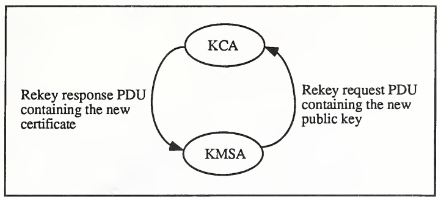
枠で囲んだ図で、上に「KCA」、下に「KMSA」の楕円があり、2 本の曲がった矢印で結ばれています。左の矢印は KCA から KMSA へ下り、「Rekey response PDU containing the new certificate」（新しい証明書を含む再鍵応答 PDU）と書かれています。右の矢印は KMSA から KCA へ上り、「Rekey request PDU containing the new public key」（新しい公開鍵を含む再鍵要求 PDU）と書かれています。
Figure 5.6.1:1 Exchange of rekeying PDUs
図 5.6.1:1 再鍵 PDU の交換
One important question is whether authentication alone is enough of a security measure to safely issue a certificate. For example, a KMSA proves its identity, and, thus, demonstrates to be in possession of valid (current) credentials. If the KMSA shows it has valid credentials, will its immediate superior KCA be allowed to issue the KMSA the future private key and certificate, alternatively just the certificate?
重要な問いの一つは、証明書を安全に発行するのに、認証だけで十分なセキュリティ対策になるかどうかです。たとえば、KMSA が自身の識別情報を証明し、それによって有効な（現在の）資格情報を持っていることを示します。KMSA が有効な資格情報を持っていることを示した場合、その直接の上位の KCA は、KMSA に将来の秘密鍵と証明書、あるいは証明書のみを発行してもよいのでしょうか。
If there is only concern about integrity, rekeying could be done by combining manually and automatically based methods. The new public key is then transferred automatically from the KMSA to the KCA but also verified by manual means.
完全性だけが懸念される場合、再鍵は、手作業による方法と自動による方法を組み合わせて行えるかもしれません。その場合、新しい公開鍵は KMSA から KCA へ自動的に転送されますが、手作業でも検証されます。
A security domain may allow the KMSAs to be rekeyed, but may not allow the KCAs to do be rekeyed. The reason for this limitation is that the private key of a CA is involved if the KCAs are rekeyed. If the private key is compromised, false certificates can be distributed. As mentioned in [RFC 1114], if the private key of a CA becomes compromised all the subordinate certificates must be revoked and new certificates generated to replace the old.
セキュリティドメインは、KMSA の再鍵化を認める場合がありますが、KCA の再鍵化を認めない場合があります。この制限の理由は、KCA を再鍵化する場合には CA の秘密鍵が関わることです。秘密鍵が危殆化すれば、偽の証明書が配布されるおそれがあります。[RFC 1114] に述べられているとおり、CA の秘密鍵が危殆化した場合、下位のすべての証明書を失効させ、古い証明書に代わる新しい証明書を生成しなければなりません。
Another design issue arises when rekeying is allowed. Which entity should create the new private and public key pair? This issue has already been discussed in paragraph 5.5.
再鍵を認める場合には、別の設計上の課題が生じます。どのエンティティが新しい秘密鍵と公開鍵のペアを作成すべきでしょうか。この課題は、5.5 項ですでに論じました。
A problem which arises when new certificates are issued during rekeying is that the certificates of two KMSAs may become "out of phase". Every KMSA and KCA cannot perform the rekeying at the same time. At what point in time should the new certificate be allowed to be used? Note that a private key is always associated with a certificate. Figure 5.6.1:2 illustrates how the KCA and the KMSAs can be related in order for the "out of phase" problem to occur.
再鍵の際に新しい証明書を発行すると、2 つの KMSA の証明書が「位相がずれる」可能性があるという問題が生じます。すべての KMSA と KCA が同時に再鍵を行うことはできません。新しい証明書は、いつの時点から使うことを認めるべきでしょうか。なお、秘密鍵は常に証明書と関連づけられています。図 5.6.1:2 は、「位相のずれ」の問題が起こるように、KCA と KMSA がどのように関係づけられうるかを示しています。
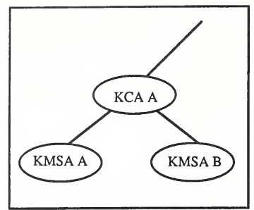
枠で囲んだ木構造の図です。「KCA A」の楕円から右上へ線が伸びて図の外（上位）へ続き、下へは「KMSA A」と「KMSA B」の 2 つの楕円へ線が伸びています。
Figure 5.6.1:2 Relationship between KCA and KMSAs
図 5.6.1:2 KCA と KMSA の関係
At time T1 KCA A creates its new private and public key. At time T2 KMSA A performs the rekeying and KCA A signs the certificate with its new private key. The old certificate is then revoked. After T2, KMSA A cannot perform a key exchange with another KMSA that has not yet rekeyed and been issued a certificate signed with the new private key of KCA A. According to Figure 5.6.1:3 between T2 and T3 KMSA A and KMSA B are not able to perform a key exchange.
時点 T1 で、KCA A は新しい秘密鍵と公開鍵を作成します。時点 T2 で、KMSA A が再鍵を行い、KCA A は新しい秘密鍵で証明書に署名します。その後、古い証明書は失効します。T2 の後、KMSA A は、まだ再鍵を行っておらず、KCA A の新しい秘密鍵で署名された証明書を発行されていない他の KMSA とは、鍵交換を行えません。図 5.6.1:3 によれば、T2 から T3 の間、KMSA A と KMSA B は鍵交換を行えません。
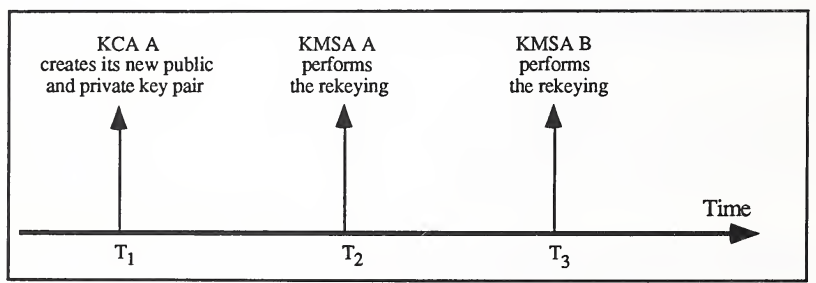
枠で囲んだ時間軸の図です。右向きの横矢印に「Time」と書かれ、「T1」「T2」「T3」の時点があります。各時点から上向きの矢印が説明を指しています。T1 は「KCA A creates its new public and private key pair」（KCA A が新しい公開鍵と秘密鍵のペアを作る）、T2 は「KMSA A performs the rekeying」（KMSA A が再鍵を行う）、T3 は「KMSA B performs the rekeying」（KMSA B が再鍵を行う）です。
Figure 5.6.1:3 Illustration of the out of phase problem
図 5.6.1:3 位相のずれの問題の図解
The reason why KMSA A and KMSA B cannot perform a key exchange is that they cannot verify each others certificates because they are signed with different private keys.
KMSA A と KMSA B が鍵交換を行えない理由は、互いの証明書が異なる秘密鍵で署名されているため、それらを検証できないことです。
The problem may be solved in two different ways:
この問題は、2 つの方法で解決できる場合があります。
1.The new certificates are not valid until the expiration of the old.
1.新しい証明書は、古い証明書の有効期限が切れるまで有効にしません。
2.Both the old and new certificates are valid during a limited period of time.
2.古い証明書と新しい証明書の両方を、限られた期間だけ有効にします。
In both cases a KMSA is in possession of two certificates.
どちらの場合も、KMSA は 2 つの証明書を持ちます。

枠で囲んだ時間軸の図です。右向きの横矢印に「Time」と書かれ、「T1」と「T2」の時点があります。T1 の上向きの矢印は「The KMSA is performing rekeying」（KMSA が再鍵を行っている）、T2 の上向きの矢印は「Expiration date of old certificate」（古い証明書の有効期限）を指しています。時間軸の下には、T1 から T2 までの両向き矢印に「Time period when the KMSA retains two sets of certificates the current and future ones」（KMSA が現在と将来の 2 組の証明書を保持する期間）、T2 から右へ向かう矢印に「KMSA is now retaining just one certificate」（KMSA は 1 つの証明書だけを保持する）と書かれています。
Figure 5.6.1:4 The KMSA is in possession of two sets of certificates during time period T1-T2
図 5.6.1:4 期間 T1-T2 における KMSA の 2 組の証明書の保持
According to the first alternative the new certificate will be valid when the old one expires. There is no overlapping time when both the old certificate and the new certificate are valid. Not having an overlapping time can cause some problems.
最初の方法では、新しい証明書は、古い証明書の有効期限が切れたときに有効になります。古い証明書と新しい証明書の両方が有効な重複期間はありません。重複期間がないと、いくつかの問題が生じる場合があります。
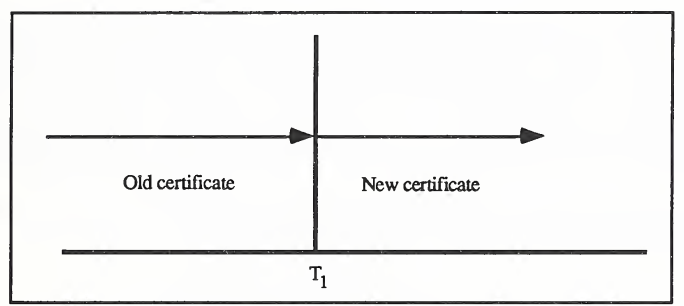
枠で囲んだ図です。横の基線を「T1」の位置で縦線が横切り、縦線の左に「Old certificate」（古い証明書）、右に「New certificate」（新しい証明書）と書かれています。その上には、左から縦線まで届く矢印と、縦線から右へ続く矢印があります。
Figure 5.6.1:5 At T1 the old certificate is substituted
図 5.6.1:5 時点 T1 における旧証明書の置換
There can be different opinions between two KMSAs about which of the certificates to use when they perform a key exchange. Synchronization between the two KMSAs may be required if they perform a key exchange near time T1. If there is no synchronization, one of the KMSAs may have the opinion that the old certificate is the valid one, while the other claims that the new certificate is the valid one. Figure 5.6.1:6 shows the second alternative where two certificates are valid for an overlapping period of time.
2 つの KMSA が鍵交換を行うときに、どちらの証明書を使うかについて、2 つの KMSA の間で見解が異なる場合があります。2 つの KMSA が時点 T1 の近くで鍵交換を行う場合、2 つの KMSA の間の同期が必要になるかもしれません。同期がなければ、一方の KMSA は古い証明書が有効だと考え、もう一方は新しい証明書が有効だと主張する場合があります。図 5.6.1:6 は、2 つの証明書が重複する期間に有効となる、2 番目の方法を示しています。
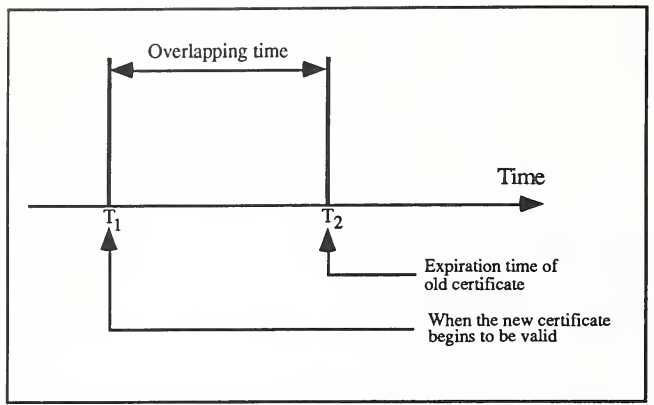
枠で囲んだ時間軸の図です。右向きの横矢印に「Time」と書かれ、「T1」と「T2」の時点があります。T1 と T2 から縦線が立ち、その間の両向き矢印に「Overlapping time」（重複期間）と書かれています。時間軸の下では、T2 を指す上向きの矢印が「Expiration time of old certificate」（古い証明書の有効期限）に、T1 を指す上向きの矢印が「When the new certificate begins to be valid」（新しい証明書が有効になる時点）に線でつながっています。
Figure 5.6.1:6 Two sets of certificates are valid during the overlapping time
図 5.6.1:6 重複期間中における 2 組の証明書の有効性
The old certificate may be used close to time T1, while close to time T2 the new certificate may be used.
古い証明書は時点 T1 の近くで使われる場合があり、新しい証明書は時点 T2 の近くで使われる場合があります。
If an overlapping time is allowed and the new certificates are signed with a new private key, that is, the KCA has also changed its private and public keys, a problem arises. Which of the KCA public keys should be used to verify the certificate of the peer? The old one associated with the old certificate or the new one associated with the new certificate? Can this be decided from the validity field included in the peers certificate? Another solution is to have a key identifier which identifies the private key used to sign the certificate. Such an identifier is available in the certificate structure described in [ISO 11166] but it is not available in the certificate structure of [ISO 9594-8].
重複期間を認め、新しい証明書が新しい秘密鍵で署名される、つまり KCA も自身の秘密鍵と公開鍵を変更した場合、問題が生じます。相手側の証明書を検証するために、KCA の公開鍵のどちらを使うべきでしょうか。古い証明書に関連づけられた古い鍵でしょうか、それとも新しい証明書に関連づけられた新しい鍵でしょうか。相手側の証明書に含まれる有効性フィールドから判断できるでしょうか。別の解決策は、証明書への署名に使われた秘密鍵を識別する鍵識別子を設けることです。そのような識別子は、[ISO 11166] に記載された証明書構造にはありますが、[ISO 9594-8] の証明書構造にはありません。
When there are a lot of components involved, rekeying becomes a very complex procedure. Problems that may occur are illustrated in the following example:
関与する構成要素が多いと、再鍵は非常に複雑な手順になります。起こりうる問題を、次の例で示します。
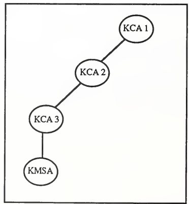
枠で囲んだ 4 つの楕円の連なりの図です。右上の「KCA 1」から左下へ「KCA 2」「KCA 3」と線でつながり、KCA 3 の真下に「KMSA」があります。
Figure 5.6.1:7 Hypothetical hierarchy
図 5.6.1:7 仮想的な階層
The KMSA initiates the rekeying by sending its new public key component to KCA 3. However, the certificate given to KCA 3 by KCA 2 is going to expire. Should KCA 3 be permitted to certify the new public key of the KMSA before it has gotten its own public key certified? According to the scheme in [RFC 1114] by giving KCA 3 a forward certificate, KCA 2 authorizes KCA 3 to sign certificates within its domain. When the KMSA needs to get its public key certified, KCA 3 has an authorization that is about to expire. If KCA 3 signs the certificate with the private key associated with the expiring certificate, the certificate issued to the KMSA will be revoked when the certificate of KCA 3 expires. This is because it is a practice to revoke all certificates signed with a private key that is no longer valid. Furthermore, KCA 2 could also have an authorization that is about to expire and must therefore create a new public pair, and so on. However, the complexity involved when rekeying is done in a hierarchy of CAs is an intrinsic part of key management and cannot be avoided.
KMSA は、新しい公開鍵コンポーネントを KCA 3 に送ることで再鍵化を開始します。しかし、KCA 2 が KCA 3 に与えた証明書は、まもなく有効期限が切れます。KCA 3 は、自身の公開鍵が証明される前に、KMSA の新しい公開鍵を証明することを認められるべきでしょうか。[RFC 1114] の方式では、KCA 2 は、KCA 3 に順方向証明書を与えることで、KCA 3 が自身のドメイン内で証明書に署名することを認可します。KMSA が自身の公開鍵を証明してもらう必要があるとき、KCA 3 の認可はまもなく失効しようとしています。KCA 3 が、有効期限が切れようとしている証明書に関連づけられた秘密鍵で署名すると、KCA 3 の証明書の有効期限が切れたとき、KMSA に発行された証明書は失効させられます。これは、もはや有効でない秘密鍵で署名された証明書をすべて失効させる慣行があるためです。さらに、KCA 2 の認可もまもなく失効しようとしている場合があり、その場合は新しい公開鍵と秘密鍵のペアを作成しなければならず、以降同様です。しかし、CA の階層で再鍵化を行うときに伴う複雑さは、鍵管理に本質的な部分であり、避けられません。
A way to manage the rekeying is to schedule the KCAs according to their place in the hierarchy. The highest KCA in the hierarchy creates its new private and public key. Thereafter the KCAs which are on the second level in hierarchy create their new public key pairs. A second level KCA can then send the new public key for certification since the first level KCA has already created its new public key pair. The uppermost KCA can sign the certificate of its subordinate KCA with the new private key. Thereafter the third level KCAs can create their new public key pairs and so forth. See the following figure:
再鍵を管理する一つの方法は、階層内の位置に従って KCA のスケジュールを決めることです。階層で最上位の KCA が、新しい秘密鍵と公開鍵を作成します。その後、階層の第 2 レベルにある KCA が、新しい公開鍵ペアを作成します。第 1 レベルの KCA がすでに新しい公開鍵ペアを作成しているため、第 2 レベルの KCA は、新しい公開鍵を証明のために送れます。最上位の KCA は、下位の KCA の証明書に、新しい秘密鍵で署名できます。その後、第 3 レベルの KCA が新しい公開鍵ペアを作成でき、以下同様です。次の図を参照してください。
![Hierarchy above a time line, in a frame. Tree of ellipses: "KCA A" at the top, marked "First level"; below it "KCA B" and "KCA C", marked "Second level"; below KCA B are "KCA D" and "KCA E", and below KCA C are "KCA F" and "KCA G", marked "Third level"; "KMSA G" is below KCA G. Under the tree, a brace labeled "Change over period" spans the whole time line. The time line is an arrow pointing right labeled "Time" with marks "T1" to "T5"; vertical lines divide it into four periods with these texts: T1–T2 "The highest level KCA, i.e., KCA A, creates its asymmetric key pair"; T2–T3 "The second level KCAs, i.e., KCA B and KCA C, create their asymmetric key pairs and request certification of their public key components"; T3–T4 "The third level KCAs, i.e., KCA D, KCA E, KCA F and KCA G, create their asymmetric key pairs and request certification of their public key components"; T4–T5 "The KMSAs, like KMSA G, create their asymmetric key pairs and request certification of their public key components".](assets/ir-4983/p0063-figure-01.png)
枠で囲んだ、階層と時間軸の図です。楕円の木構造は、最上位が「KCA A」で「First level」（第 1 階層）、その下が「KCA B」と「KCA C」で「Second level」（第 2 階層）、KCA B の下に「KCA D」と「KCA E」、KCA C の下に「KCA F」と「KCA G」があり「Third level」（第 3 階層）です。KCA G の下に「KMSA G」があります。木の下には「Change over period」（切り替え期間）と書かれた括弧が時間軸全体にかかっています。時間軸は「Time」と書かれた右向きの矢印で、「T1」〜「T5」の時点があり、縦線で 4 つの期間に分かれています。T1〜T2 は「The highest level KCA, i.e., KCA A, creates its asymmetric key pair」（最上位の KCA、すなわち KCA A が非対称鍵ペアを作る）、T2〜T3 は「The second level KCAs, i.e., KCA B and KCA C, create their asymmetric key pairs and request certification of their public key components」（第 2 階層の KCA、すなわち KCA B と KCA C が非対称鍵ペアを作り、公開鍵成分の認証を要求する）、T3〜T4 は「The third level KCAs, i.e., KCA D, KCA E, KCA F and KCA G, create their asymmetric key pairs and request certification of their public key components」（第 3 階層の KCA、すなわち KCA D、KCA E、KCA F、KCA G が同様に行う）、T4〜T5 は「The KMSAs, like KMSA G, create their asymmetric key pairs and request certification of their public key components」（KMSA G などの KMSA が非対称鍵ペアを作り、公開鍵成分の認証を要求する）です。
Figure 5.6.1:8 Example of a rekeying scheme
図 5.6.1:8 再鍵方式の例
When KMSA G performs rekeying, KCA C has already certified KCA G. Therefore KCA G is allowed to issue certificates in its name space by using the new private key. Note that this example illustrates a "worst case" scenario, in reality certificates of KCAs probably will have longer validity periods than certificates of KMSAs. So in most cases all components in the network need not perform the rekeying. However, it appears difficult to fully automatize the rekeying procedure described above. Probably the security officers in the different certificate domains have to agree about the different time periods and manually coordinate the change over. During the change over period the rekeyed KCAs and KMSAs are in possession of two certificates.
KMSA G が再鍵を行うとき、KCA C はすでに KCA G を証明しています。したがって、KCA G は、新しい秘密鍵を使って、自身の名前空間で証明書を発行することを認められます。なお、この例は「最悪の場合」のシナリオを示しており、実際には、KCA の証明書は、おそらく KMSA の証明書より有効期間が長くなります。したがって、ほとんどの場合、ネットワーク内のすべての構成要素が再鍵を行う必要はありません。しかし、上述の再鍵手順を完全に自動化するのは困難なようです。おそらく、異なる証明書ドメインのセキュリティ責任者が、さまざまな期間について合意し、切り替えを手作業で調整しなければなりません。切り替え期間の間、再鍵された KCA と KMSA は、2 つの証明書を持ちます。
5.6.1.1 Rekey handling in SDNS
5.6.1.1 SDNS における再鍵の処理
The SDNS key management documents [SDNS 90-4262] discuss two different types of rekeying:
SDNS の鍵管理文書 [SDNS 90-4262] は、2 種類の再鍵を論じています。
•interactive rekeying;
•対話型の再鍵
•staged rekeying.
•段階的再鍵
In both cases, the responsibility for initiating a rekey lies with the KMSA. The Rekey request (Rkrq) and Rekey response (Rkrs) PDUs are used for interactive rekeying. An SDNS component sends an Rkrq to the Key Management Center (KMC) and the KMC returns an Rkrs. For staged rekeying the Staged Rekey request (Srkrq), Staged Rekey response (Srkrs), Staged Rekey Delivery request (Srdrq) and Staged Rekey Delivery response (Srdrs) PDUs are used. When staged rekeying occurs, an SDNS component acts as a rekey agent. To the rekey agent comes a rekey request. The rekey agent after receiving the request contacts the KMC to get new credentials and key materials for the request. After the rekey agent has the new credentials and key materials, the original SDNS component can contact the rekey agent again and obtain the credentials and key materials. [SDNS 90-4262] gives no detailed explanation about the key materials and credential components.
どちらの場合も、再鍵を開始する責任は KMSA にあります。対話型の再鍵には、Rekey request（Rkrq）PDU と Rekey response（Rkrs）PDU が使われます。SDNS の構成要素が Rkrq を Key Management Center（KMC）に送り、KMC が Rkrs を返します。段階的再鍵には、Staged Rekey request（Srkrq）PDU、Staged Rekey response（Srkrs）PDU、Staged Rekey Delivery request（Srdrq）PDU、Staged Rekey Delivery response（Srdrs）PDU が使われます。段階的再鍵が行われるとき、SDNS の構成要素は再鍵エージェントとして動作します。再鍵エージェントには再鍵要求が届きます。再鍵エージェントは、要求を受け取った後、KMC に連絡して、その要求のための新しい資格情報と鍵素材を取得します。再鍵エージェントが新しい資格情報と鍵素材を得た後、元の SDNS の構成要素は、再び再鍵エージェントに連絡して、資格情報と鍵素材を入手できます。[SDNS 90-4262] は、鍵素材と資格情報の構成要素について、詳しい説明をしていません。
The SDNS documents [SDNS 90-4262] do not explain in detail why there are two different forms of rekeying or when one form or the other should be used. The explanation given in [SDNS 90-4262] is that staged rekeying is a useful service when direct access to the Key Management System is unavailable. The devices may therefore trust an intermediary to collect requests and obtain new credentials and key materials. An example where staged rekeying is needed is when a mail user wants to get new credentials. The mail user may reside in an environment where transport class four is not part of the OSI stack. However, there may be a requirement to have transport class four in the key management stack. The user sends a request to the rekey agent by secure mail. The rekey agent in turn can use the key management stack.
SDNS 文書 [SDNS 90-4262] は、なぜ 2 つの異なる形式の再鍵があるのか、どちらの形式をいつ使うべきかを詳しく説明していません。[SDNS 90-4262] が示す説明は、鍵管理システムへの直接のアクセスが利用できない場合に、段階的再鍵が有用なサービスだというものです。そのため、デバイスは、要求を集めて新しい資格情報と鍵素材を取得する仲介者を信頼する場合があります。段階的再鍵が必要な例は、メールユーザーが新しい資格情報を取得したい場合です。メールユーザーは、トランスポートクラス 4 が OSI スタックの一部ではない環境にいるかもしれません。しかし、鍵管理スタックにトランスポートクラス 4 を持たせる要件がある場合があります。ユーザーは、セキュアなメールで再鍵エージェントに要求を送ります。再鍵エージェントは、鍵管理スタックを使えます。
Although it is not stated in [SDNS 90-4262], the contents of the PDUs give an indication that the KMC creates the new key materials. Thus, the public and private key pair of an SDNS component are created by the KMC.
[SDNS 90-4262] には記載されていませんが、PDU の内容は、KMC が新しい鍵素材を作成することを示しています。したがって、SDNS の構成要素の公開鍵と秘密鍵のペアは、KMC によって作成されます。
The available SDNS documents [SDNS 90-4262] do not mention how the "out of phase" problems are handled. In informal discussions it has been said there are three time periods associated with an SDNS credential.
入手できる SDNS 文書 [SDNS 90-4262] は、「位相のずれ」の問題がどのように処理されるかに触れていません。非公式の議論では、SDNS の資格情報には 3 つの期間が関連づけられていると言われています。

枠で囲んだ時間軸の図です。右向きの横矢印に「T」と書かれ、「T1」「T2」「T3」の時点があります。上には、T1 から T2 までの両向き矢印に「Update period」（更新期間）、T2 から T3 までの両向き矢印に「Last chance」（最後の機会）と書かれています。下には T1 と T2 で区切られた括弧の列があり、T1 より前は「One set of credentials is valid」（1 組の資格情報が有効）、T1〜T2 は「Two sets of credentials are valid」（2 組の資格情報が有効）、T2 以後は「One set of credentials is valid」です。
Figure: 5.6.1.1:1 Rekey handling in SDNS
図: 5.6.1.1:1 SDNS における再鍵の処理
After time T1, an SDNS component can obtain new credentials and key materials from the KMC. During the update period, between times T1 and T2, the SDNS component may be in possession of two sets of credentials and key materials. During the update period the SDNS component can still perform key exchanges with SDNS components that may or may not have performed the rekeying. If an SDNS component has not performed the rekeying by the end of the update period, it cannot perform key exchanges with other SDNS components. However, during the last chance period an SDNS component can still obtain new credentials and key materials from the KMC. If the KMC has to change its public and private key pair, it is possible to have the new public key, certificate or whatever it might be, as part of the new credentials or key materials distributed. See the definition below of the Rkrs. Having just one KMC eliminates much of the complexity described previously. [SDNS 90-4262] mentions two kind of credentials and key materials, see the below PDU description:
時点 T1 の後、SDNS の構成要素は、KMC から新しい資格情報と鍵素材を取得できます。時点 T1 と T2 の間の更新期間中、SDNS の構成要素は、2 組の資格情報と鍵素材を持つ場合があります。更新期間中、SDNS の構成要素は、再鍵化を行った構成要素とも、行っていない構成要素とも、引き続き鍵交換を行えます。更新期間の終わりまでに SDNS の構成要素が再鍵化を行っていなければ、他の SDNS の構成要素と鍵交換を行えません。ただし、最終猶予期間中は、SDNS の構成要素は引き続き KMC から新しい資格情報と鍵素材を取得できます。KMC が自身の公開鍵と秘密鍵のペアを変更しなければならない場合、配布される新しい資格情報または鍵素材の一部として、新しい公開鍵、証明書、またはそれに相当するものを含めることが可能です。下記の Rkrs の定義を参照してください。KMC が 1 つだけであれば、前述した複雑さの多くが解消されます。[SDNS 90-4262] は、2 種類の資格情報と鍵素材に言及しています。下記の PDU の説明を参照してください。
Rkrs ::= SET {
ref-num INTEGER OPTIONAL,
kms-cred-A [0] IMPLICIT Credentials,
new-k-mat-A [1] IMPLICIT KMaterials,
kms-cred-B [2] IMPLICIT Credentials,
new-k-mat-B [3] IMPLICIT KMaterials,
crl-ver Crl-Ver,
new-crl [4] IMPLICIT KeyList OPTIONAL,
new-univ-crl [5] IMPLICIT KeyList OPTIONAL,
no-more [6] IMPLICIT BOOLEAN OPTIONAL,
ekr BOOLEAN }Nothing is mentioned in [SDNS 90-4262] about whether some manual verification is employed or needed as a complement to the rekeying.
[SDNS 90-4262] には、再鍵の補完として何らかの手作業による検証が用いられているか、必要とされているかについては、何も記載されていません。
The above description of SDNS rekeying probably illustrates only the tip of the iceberg. Presumably, there are a lot of details which have not been made public.
SDNS の再鍵についての上記の説明は、おそらく氷山の一角を示すにすぎません。おそらく、公開されていない詳細が数多くあります。
5.6.1.2 Rekey handling in the Directory standards
5.6.1.2 Directory 標準における再鍵の処理
The Directory Authentication Framework [ISO 9594-8] states that the certificate production should occur off-line and must not be performed with an automatic query/response mechanism.
Directory Authentication Framework [ISO 9594-8] は、証明書の生成はオフラインで行うべきであり、自動の問い合わせ／応答の仕組みで行ってはならないと述べています。
This definition precludes at least interactive rekeying. [ISO 9594-8] gives the following explanation:
この定義は、少なくとも対話型の再鍵を妨げます。[ISO 9594-8] は次のように説明しています。
The advantage of this certification is that because the secret10 key of the certification authority, CA, is never known except in the isolated and secure CA, the CA secret key may then only be learnt by an attack on CA itself, making compromise unlikely.
この証明の利点は、認証局 CA の秘密10鍵が、隔離された安全な CA 以外では決して知られないため、CA の秘密鍵が知られるのは CA 自体への攻撃による場合に限られ、危殆化が起こりにくいことです。
[ISO 9594-8] mentions that when a new certificate is installed it may for some time overlap with the old.
[ISO 9594-8] は、新しい証明書をインストールしたとき、しばらくの間は古い証明書と重複する場合があると述べています。
The above phrase does not appear to prohibit a staged form of rekeying. When staged rekeying is employed, the certificate is delivered with an automatic query/response but the production can occur off-line.
上記の記述は、段階的な形の再鍵を禁じてはいないようです。段階的再鍵を採用する場合、証明書は自動の問い合わせ／応答で配送されますが、生成はオフラインで行えます。
The following two sections investigate the possibility to perform rekeying when the Directory is involved. Previously, it was mentioned that the Directory standards prohibit an interactive form of rekeying. If there is a requirement to perform an interactive form of rekeying and the Directory is involved, there are several problems. The following section attempts to list the problems. A prerequisite for interactive rekeying is that the private key of a CA is available on-line (earlier described as taking on an active role). Rekeying can be performed according to two different schemes. The approach of the first scheme is to include the rekeying functionality in the Directory standards, which means the Directory standards must be augmented. The second scheme does not use the Directory to perform the rekeying but the result of the rekeying is stored in the Directory.
次の 2 つの項では、Directory が関与する場合に再鍵を行える可能性を調べます。前に、Directory 標準が対話型の再鍵を禁じていることを述べました。対話型の再鍵を行う要件があり、Directory が関与する場合には、いくつかの問題があります。次の項は、その問題を列挙しようとします。対話型の再鍵の前提条件は、CA の秘密鍵がオンラインで利用できること（前に、能動的な役割を担うこととして説明しました）です。再鍵は、2 つの異なる方式で行えます。1 つ目の方式の考え方は、再鍵の機能を Directory 標準に含めることで、これは Directory 標準を拡張しなければならないことを意味します。2 つ目の方式は、再鍵の実施に Directory を使いませんが、再鍵の結果は Directory に格納します。
In SDNS there is a peer to peer relationship between an SDNS component and the KMC11. The SDNS component always knows the presentation address of the KMC and can therefore establish an application association with it. New credentials are delivered through an integrity and confidentiality protected channel, protecting the communication between the KMC and the SDNS component. The protected channel is created by an interactive form of key exchange. As we will notice, the Directory environment is different.
SDNS では、SDNS の構成要素と KMC11 の間にピアツーピアの関係があります。SDNS の構成要素は、常に KMC のプレゼンテーションアドレスを知っているため、KMC とのアプリケーションアソシエーションを確立できます。新しい資格情報は、KMC と SDNS の構成要素の間の通信を保護する、完全性と機密性が保護されたチャネルを通じて配送されます。この保護されたチャネルは、対話型の鍵交換によって作成されます。これから見るように、Directory 環境は異なります。
5.6.1.2.1 Rekeying as part of the Directory standards
5.6.1.2.1 Directory 標準の一部としての再鍵
The idea investigated in this section is to realize the KCA functionality by a Directory System Agent (DSA). Hopefully, it is well known that a user of the Directory accesses the Directory through the Directory User Agent (DUA).
この項で調べる考え方は、KCA の機能を Directory System Agent（DSA）で実現することです。Directory のユーザーは Directory User Agent（DUA）を通じて Directory にアクセスすることは、よく知られていることと思います。
The first problem encountered is that the available Directory services provided to the Directory user which are: read, compare, list, search, abandon, add entry, remove entry, modify entry and modify relative distinguished name do not include rekeying.
最初に突き当たる問題は、Directory のユーザーに提供される既存の Directory サービス（read、compare、list、search、abandon、add entry、remove entry、modify entry、modify relative distinguished name）に、再鍵が含まれていないことです。
The peer to peer relationship may not exist in the Directory environment. The Directory is distributed, and users of the Directory are not aware of which Directory System Agent (DSA) holds the information. [ISO 9594-4] contains the following figure of how the DSAs can interact:
ピアツーピアの関係は、Directory 環境には存在しない場合があります。Directory は分散しており、Directory のユーザーは、どの Directory System Agent（DSA）が情報を保持しているかを知りません。[ISO 9594-4] には、DSA がどのように相互作用できるかを示す次の図があります。
1 つの枠に、DSA と DUA の円と番号付き矢印で描いた 5 つの図があります。いずれも DUA からの「1 Request」で始まります。「Chaining Mode」（連鎖モード）では、DUA から DSA へ 1 Request、その DSA から 2 番目の DSA へ 2、3 番目へ 3、4 番目へ 4 と進み、応答が 5（4 番目から 3 番目）、6（3 番目から 2 番目）、7（2 番目から最初の DSA）と戻り、DUA へ「8 Response」が返ります。「Multicast Mode (Parallel)」（並列マルチキャスト）では、DSA が 3 つの DSA にそれぞれ 2 を送り、3、3´、3´´ の応答を受けて「4 Response」を返します。「Multicast Mode (Sequential)」（逐次マルチキャスト）では、DSA が 1 つ目の DSA に 2 を送って 3*（「* unable to proceed」〔処理できない〕）を受け、次に 2 つ目の DSA に 4 を送って 5 を受け、DUA へ「6 Response」を返します。3 つ目の DSA には矢印がありません。「Referral Mode (DSA with Chained Port)」（連鎖ポートを持つ DSA の照会モード）では、DSA が「DSA A」に 2 を送って 3† を受け、「DSA B」に 4 を送って 5‡ を受け、「DSA C」に 6 を送って 7 を受け、DUA へ「8 Response」を返します（凡例「† referral to B」「‡ referral to C」）。「Referral Mode (DUA requests: DSA with no Chained Ports)」（連鎖ポートを持たない DSA で DUA が要求する照会モード）では、DUA 自身が「DSA D」に 1 Request を送って 2† を受け、「DSA E」に 3 を送って 4‡ を受け、「DSA F」に 5 を送って「6 Response」を受けます（凡例「† referral to E」「‡ referral to F」）。 ［第三者の画像。第三者の著作物のため、この非公式サイトには掲載していません。原本 PDF を参照してください。］
Figure 5.6.1.2.1:1 DSA interactions
図 5.6.1.2.1:1 DSA の相互作用
The different ways of how DSAs may interact have one thing in common, the operation is always initiated by a DUA. As described in our key management model, rekeying also occurs between two KCAs. Since a KCA is manifested by a DSA, there is a need for operations originating from a DSA.
DSA が相互作用するさまざまな方法には、1 つの共通点があります。操作は常に DUA によって開始されることです。私たちの鍵管理モデルで説明したように、再鍵は 2 つの KCA の間でも行われます。KCA は DSA によって具現化されるため、DSA を起点とする操作が必要になります。
Consider the situation where rekeying is included as a Directory service. When a rekeying occurs, protected channels are created between the involved DSAs. However, some intermediate DSAs may not be trusted by either the source or destination, posing the threat that a newly created private key may be disclosed during the distribution phase. For example, when a chain operation is employed, DSA 1 which is associated with CA A, needs to perform a rekeying with DSA 3, which is associated with CA B. But, the traffic passes through DSA 2.
再鍵を Directory サービスとして含める場合を考えます。再鍵が行われるとき、関与する DSA の間に保護されたチャネルが作成されます。しかし、中間の DSA の中には、送信元にも送信先にも信頼されないものがあり、新しく作成された秘密鍵が配布フェーズの間に漏えいする脅威を生じさせます。たとえば、チェーン操作を使う場合、CA A に関連づけられた DSA 1 が、CA B に関連づけられた DSA 3 と再鍵を行う必要があります。しかし、トラフィックは DSA 2 を通ります。
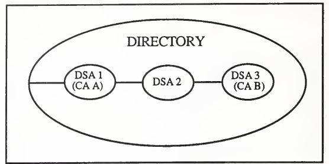
枠で囲んだ図です。「DIRECTORY」（ディレクトリ）と書かれた大きな楕円の中に、「DSA 1 (CA A)」「DSA 2」「DSA 3 (CA B)」の 3 つの楕円が横に並んで線で結ばれています。DSA 1 から大きな楕円の左端へ、DSA 3 から右端へも線が伸びています。
Figure 5.6.1.2.1:2 DSA 2 is an intermediate DSA
図 5.6.1.2.1:2 DSA 2 は中間の DSA である
To have an intermediate DSA is not desirable when the CA creates the public and private key pair, because the private key is exposed to a third entity. However, it is possible for the user initiating the rekey operation to prohibit chaining and thereby eliminate the described drawback. In both the referral and multicast cases DSA 1 can create an application association with DSA 3. It is then assumed that authentication takes part before any rekey information is sent. Also the superior references and cross references could be used to obtain the presentation address of the remote DSA. See the article Distributed Operations Of The X.500 Directory [SMET91] for more details. Another solution is to have a store and forward based type of rekeying, the data passing intermediary systems would then not be exposed.
CA が公開鍵と秘密鍵のペアを作成する場合、秘密鍵が第三のエンティティにさらされるため、中間の DSA があるのは望ましくありません。しかし、再鍵操作を開始するユーザーがチェーンを禁止し、それによって上述の欠点を解消することは可能です。リフェラルとマルチキャストのどちらの場合も、DSA 1 は DSA 3 とアプリケーションアソシエーションを作成できます。その場合、再鍵の情報を送る前に認証が行われると想定されます。また、上位参照と相互参照を使って、リモートの DSA のプレゼンテーションアドレスを得ることもできます。詳細は、論文 Distributed Operations Of The X.500 Directory [SMET91] を参照してください。別の解決策は、蓄積交換型の再鍵を行うことで、その場合、データが通過する中間のシステムはさらされません。
Since the Directory is based on the Remote Operation Service Element (ROSE), to have rekeying as part of the Directory standards forces the protocol between the KMSA and KCA and between two KCAs also to be based on ROSE. It logically follows that the protocol between two KMSAs would be based on ROSE, because it would be strange to have separate families of application protocols. A special Key Management Application Service Element for KMSA-KMSA purposes is required and protocols based on ROSE are required for KMSA-KCA and KCA-KCA purposes.
Directory は Remote Operation Service Element（ROSE）に基づいているため、再鍵を Directory 標準の一部とすると、KMSA と KCA の間、および 2 つの KCA の間のプロトコルも、ROSE に基づかざるを得なくなります。アプリケーションプロトコルの系統を別々に持つのは奇妙であるため、2 つの KMSA の間のプロトコルも ROSE に基づくことになるのが論理的な帰結です。KMSA 間の用途には特別な Key Management Application Service Element が必要であり、KMSA-KCA および KCA-KCA の用途には ROSE に基づくプロトコルが必要です。
According to the Directory standards, a DSA can be the holder of a certificate, so it can perform strong authentication. It may seem strange that the DSA can be in possession of other private keys, such as the ones which are associated with CAs. It becomes unclear how to perform the authentication. If a DSA performs the authentication it is not enough, since the entity wanting a new certificate must be convinced of communicating with the right certification authority.
Directory 標準によれば、DSA は証明書の保有者になれるため、強い認証を行えます。DSA が、CA に関連づけられたものなど、他の秘密鍵を持つことができるのは、奇妙に思えるかもしれません。認証をどのように行うかが不明確になります。DSA が認証を行うだけでは不十分です。新しい証明書を求めるエンティティは、正しい認証局と通信していることを確信できなければならないためです。
A DSA is, of course, allowed to contain certificates signed by different certification authorities. If therefore the private keys of CA A and CA B are associated with the same DSA, and CA A signs a certificate intended for CA B, rekeying becomes a local matter outside the scope of OSI.
DSA が、異なる認証局が署名した証明書を保持することは、もちろん許されています。したがって、CA A と CA B の秘密鍵が同じ DSA に関連づけられていて、CA A が CA B 宛ての証明書に署名する場合、再鍵は OSI の範囲外の、ローカルな事柄になります。
Another issue is the level of trust that can be provided by the Directory. A Key Distribution Center or Key Management Center is normally considered as a place where a high level of security precautions, for example, physical security, are taken. It is questionable if the Directory can be viewed as such a place.
もう一つの課題は、Directory が提供できる信頼のレベルです。Key Distribution Center または Key Management Center は、通常、物理的セキュリティなど、高いレベルのセキュリティ対策が講じられる場所と考えられています。Directory をそのような場所とみなせるかどうかは疑問です。
Because of the problems encountered it seems to be a good idea to keep rekeying outside of the Directory.
突き当たった問題のため、再鍵を Directory の外で行うのがよい考えのようです。
5.6.1.2.2 Rekeying performed outside the Directory
5.6.1.2.2 Directory の外で行う再鍵
The rekeying scheme described in this section does not make use of the Directory to perform the rekeying, but instead is the result of the rekeying, a certificate, stored in the Directory. The KCA functionality is manifested by an application process. How rekeying is performed is illustrated in the figure below:
この項で説明する再鍵方式は、再鍵の実施に Directory を使わず、代わりに再鍵の結果である証明書を Directory に格納します。KCA の機能は、アプリケーションプロセスによって具現化されます。再鍵をどのように行うかを、下の図に示します。
![Rekeying diagram in a frame. Upper ellipse, labeled "KCA" at its left: "Application process where the private key of CA A is available". Lower ellipse, labeled "KCA" at its left: "Application process where the private key of CA B is available", with a compartment "DUA" on its right side. Arrow 1 (circled) goes from the lower ellipse up to the upper one, with the box "New public key of CA B". Arrow 2 (circled) goes from the upper ellipse down to the lower one, with the box "New certificate of CA B". The note "Protocols which are not part of the Directory standards" at the upper right has two pointer arrows to arrows 1 and 2. Arrow 3 (circled) goes from the DUA to an ellipse "DSA", with the box "Store new certificate of CA B".](assets/ir-4983/p0069-figure-01.png)
枠で囲んだ再鍵の図です。上の楕円は「Application process where the private key of CA A is available」（CA A の秘密鍵を持つアプリケーションプロセス）、下の楕円は「Application process where the private key of CA B is available」（CA B の秘密鍵を持つアプリケーションプロセス）で、どちらも左に「KCA」と書かれています。下の楕円の右側には「DUA」の区画があります。丸囲みの 1 の矢印は下の楕円から上の楕円へ向かい、「New public key of CA B」（CA B の新しい公開鍵）の枠が添えられています。丸囲みの 2 の矢印は上の楕円から下の楕円へ向かい、「New certificate of CA B」（CA B の新しい証明書）の枠が添えられています。右上の注記「Protocols which are not part of the Directory standards」（ディレクトリ標準に含まれないプロトコル）からは 1 と 2 の矢印へ指示の矢印が出ています。丸囲みの 3 の矢印は DUA から「DSA」の楕円へ向かい、「Store new certificate of CA B」（CA B の新しい証明書を格納）の枠が添えられています。
Figure 5.6.1.2.2:1 Illustration of rekeying
図 5.6.1.2.2:1 再鍵の図解
The KCA (manifested by the application process holding the private key of CA B) initiating the rekeying knows the presentation address of its superior KCA (manifested by the application process holding the private key of CA A).
再鍵を開始する KCA（CA B の秘密鍵を保持するアプリケーションプロセスによって具現化される）は、その上位の KCA（CA A の秘密鍵を保持するアプリケーションプロセスによって具現化される）のプレゼンテーションアドレスを知っています。
Rekeying is initiated by letting the application process associated with CA B send the new public key for certification. The application process associated with CA A returns a certificate. The application process associated with CA B stores the certificate in the Directory. The application process is then acting as a Directory user.
再鍵は、CA B に関連づけられたアプリケーションプロセスが、新しい公開鍵を証明のために送ることで開始されます。CA A に関連づけられたアプリケーションプロセスが、証明書を返します。CA B に関連づけられたアプリケーションプロセスは、その証明書を Directory に格納します。この場合、アプリケーションプロセスは Directory のユーザーとして動作しています。
5.6.1.3 Rekey handling in ISO/CD 11166
5.6.1.3 ISO/CD 11166 における再鍵の処理
[ISO 11166] states that the public key of the Key Certification Centre [Center] (CKC) could be distributed automatically but the correctness of the key must be verified by an independent method. Note that [ISO 11166] does not use the term CA, instead the term CKC is used. [ISO 11166] describes a CKC to be: "A facility operated by the certification authority which generates and returns certificates." An independent method means that some form of manual verification must be done. A verification method is explained in the committee draft. According to this method, the CKC and the party sending the public key to the CKC should agree on a one-way function to be used. The check value computed from the one-way function must be at least 32 bits. The check value of the public key must be distributed by the CKC over multiple independent channels. Examples given in the committee draft of independent channels are surface mail and facsimile.
[ISO 11166] は、Key Certification Centre [Center]（CKC）の公開鍵は自動的に配布できますが、鍵の正しさは独立した方法で検証しなければならないと述べています。なお、[ISO 11166] は CA という用語を使わず、CKC という用語を使っています。[ISO 11166] は CKC を次のように説明しています。「証明書を生成して返す、認証局が運用する施設」。独立した方法とは、何らかの形の手作業による検証を行わなければならないことを意味します。検証方法は、委員会ドラフトに説明されています。この方法によれば、CKC と CKC に公開鍵を送る当事者は、使用する一方向関数について合意すべきです。一方向関数から計算されるチェック値は、少なくとも 32 ビットでなければなりません。公開鍵のチェック値は、CKC が複数の独立したチャネルで配布しなければなりません。委員会ドラフトが示す独立したチャネルの例は、郵便とファクシミリです。
[ISO 11166] is oriented towards the approach where the user creates its own public and private key pair and sends the public key component to the CKC for certification. No particular method is recommended in the committee draft of how this can be achieved. The criteria that a particular method must satisfy are:
[ISO 11166] は、ユーザーが自身の公開鍵と秘密鍵のペアを作成し、公開鍵の構成要素を証明のために CKC に送る方法を志向しています。これをどのように実現するかについて、委員会ドラフトは特定の方法を推奨していません。特定の方法が満たさなければならない基準は次のとおりです。
•The CKC shall verify the authentic origin of the submitted key.
•CKC は、提出された鍵の出所が真正であることを検証しなければなりません。
•The CKC shall authenticate the submitted key value.
•CKC は、提出された鍵の値を認証しなければなりません。
Annex E of [ISO 11166] contains different proposals of how the public key can be certified. One of the proposals is very similar to the method explained in the article Initialization Of Cryptographic Variables In A Network With A Large Number Of Terminals [MATY86]. [MATY86] gives a description of how a user12 can register his or her public key at the CA the first time, that is, the user has previously not been registered at the CA. It is not clear from [ISO 11166] if the proposals are only valid for a party who wants to certify its public key the first time, or if the procedure should be repeated every time the party needs to get a new certificate.
[ISO 11166] の附属書 E には、公開鍵をどのように証明できるかについての、さまざまな提案が含まれています。提案の一つは、論文 Initialization Of Cryptographic Variables In A Network With A Large Number Of Terminals [MATY86] で説明されている方法と非常によく似ています。[MATY86] は、ユーザー12が、自身の公開鍵を初めて CA に登録する方法、つまり、ユーザーが以前に CA に登録されていない場合の方法を説明しています。これらの提案が、公開鍵を初めて証明してもらいたい当事者にのみ有効なのか、当事者が新しい証明書を必要とするたびにその手順を繰り返すべきなのかは、[ISO 11166] からは明らかではありません。
5.6.1.4 Section summary
5.6.1.4 節のまとめ
When there is a hierarchy of certification authorities rekeying becomes a very complicated procedure. If the Directory is involved and used as a repository for the certificates, problems due to both the Directory standards and the Directory structure are encountered. Therefore, rekeying should be performed outside the Directory. As in SDNS having only one certification authority for the whole network makes rekeying much easier to perform. However, an OSI environment is constituted by many different organizations which are spread across national boundaries, and having just one certification authority in such an environment seems unrealistic. Therefore, when a hierarchy of certification authorities are involved the complexity associated with rekeying cannot be avoided and can be regarded as an intrinsic part of key management.
認証局の階層がある場合、再鍵は非常に複雑な手順になります。Directory が関与し、証明書の保管場所として使われる場合、Directory 標準と Directory の構造の両方に起因する問題が生じます。したがって、再鍵は Directory の外で行うべきです。SDNS のように、ネットワーク全体に認証局が 1 つだけであれば、再鍵ははるかに行いやすくなります。しかし、OSI 環境は、国境をまたいで広がる多くの異なる組織で構成されており、そのような環境に認証局が 1 つしかないのは非現実的に思われます。したがって、認証局の階層が関わる場合、再鍵に伴う複雑さは避けられず、鍵管理に本質的な部分とみなせます。
5.6.2 Rekey handling in a symmetric form of key management
5.6.2 共通鍵形式の鍵管理における再鍵の処理
Since a symmetric form of key management is well known and has been used for a long time, organizations using it have established routines for how to perform the rekeying. The "out of phase" problems described for asymmetric key management cannot occur, because a Key Encrypting Key (KEK) is shared only between two parties. When the two parties have changed the KEK no further complications arise.
共通鍵形式の鍵管理はよく知られていて長く使われてきたため、それを使う組織は、再鍵の行い方について確立した手順を持っています。非対称形式の鍵管理について説明した「位相のずれ」の問題は、Key Encrypting Key（KEK）が 2 つの当事者の間でのみ共有されるため、起こりません。2 つの当事者が KEK を変更すれば、それ以上の複雑さは生じません。
5.6.2.1 Rekey handling in X9.17
5.6.2.1 X9.17 における再鍵の処理
The following key hierarchies are allowed in [ANSI X9.17]:
[ANSI X9.17] では、次の鍵の階層が認められています。
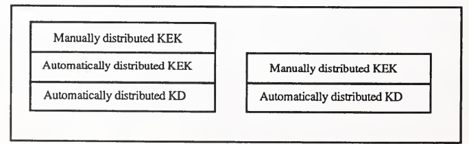
枠の中に 2 つの積み重ねた枠がある図です。左は上から「Manually distributed KEK」（手動配布の KEK）、「Automatically distributed KEK」（自動配布の KEK）、「Automatically distributed KD」（自動配布の KD）の 3 層、右は上から「Manually distributed KEK」「Automatically distributed KD」の 2 層です。
Figure 5.6.2.1:1 Allowed key hierarchies in X9.17
図 5.6.2.1:1 X9.17 で認められる鍵の階層
The highest key in hierarchy, the uppermost KEK, is allowed to be distributed only by manual means. The motive for this decision is that manual means are regarded safer than automatic. However, the second level KEK may be distributed automatically. Appendix B of [ANSI X9.17] gives an example of manual key distribution.
階層で最上位の鍵、すなわち最上位の KEK は、手作業でのみ配布できます。この決定の動機は、手作業による方法のほうが自動の方法より安全とみなされていることです。ただし、第 2 レベルの KEK は自動的に配布してもよいです。[ANSI X9.17] の付録 B は、手作業による鍵配布の例を示しています。
5.6.2.2 Rekey handling in X9.28
5.6.2.2 X9.28 における再鍵の処理
The following key hierarchies are allowed in [ANSI X9.28]:
[ANSI X9.28] では、次の鍵の階層が認められています。
![Table-like grid with a left column of key levels "Level 1" to "Level 4" and five columns. Level 1: one cell across all columns, "Manually Distributed Transportation *KK", subdivided into "between centers" (columns 1–3), "between agent & ultimate recipient" (column 4) and "between centers" (column 5). Level 2: column 1 "Auto Distr. subscriber KD using X9.28"; column 2 "Auto Distr. subscriber (*)KK using X9.28"; column 3 "Auto Distr. transport. *KK using X9.17"; column 4 "Auto Distr. subscriber. (*) KK using X9.28"; column 5 "Auto Distr. transport *KK using X9.17". Level 3: column 1 empty; columns 2, 3 and 4 "Auto Distr. subscriber KD using X9.28"; column 5 "Auto Distr. subscriber (*) KK using X9.28". Level 4: columns 1–4 empty; column 5 "Auto Distr. subscriber KD using X9.28".](assets/ir-4983/p0071-figure-01.png)
左端に鍵の階層「Level 1」〜「Level 4」を置き、5 列に分けた表の形の図です。Level 1 は全列にまたがる「Manually Distributed Transportation *KK」（手動配布の輸送用 *KK）で、1〜3 列が「between centers」（センター間）、4 列が「between agent & ultimate recipient」（エージェントと最終受信者の間）、5 列が「between centers」に分かれています。Level 2 は、1 列「Auto Distr. subscriber KD using X9.28」、2 列「Auto Distr. subscriber (*)KK using X9.28」、3 列「Auto Distr. transport. *KK using X9.17」、4 列「Auto Distr. subscriber. (*) KK using X9.28」、5 列「Auto Distr. transport *KK using X9.17」です。Level 3 は、1 列が空欄、2〜4 列が「Auto Distr. subscriber KD using X9.28」、5 列が「Auto Distr. subscriber (*) KK using X9.28」です。Level 4 は 1〜4 列が空欄で、5 列だけに「Auto Distr. subscriber KD using X9.28」があります。
Figure 5.6.2.2:1 Allowed key hierarchies in X9.28
図 5.6.2.2:1 X9.28 で認められる鍵の階層
As for [ANSI X9.17] the highest key in hierarchy, the level 1 key, must be distributed by manual means.
[ANSI X9.17] と同様に、階層で最上位の鍵であるレベル 1 の鍵は、手作業で配布しなければなりません。
5.7 REVOCATION LIST HANDLING
5.7 失効リストの処理
The Certificate Revocation List (CRL) conveys the identities of invalidated certificates. To include every revoked certificate in its entirety would be a waste of space. Instead, the CRL contains the identifiers, for example, the serial numbers, of the revoked certificates.
Certificate Revocation List（CRL）は、無効になった証明書の識別情報を伝えます。失効した証明書をそのまま全部含めるのは、領域の無駄になります。代わりに、CRL には、失効した証明書の識別子（たとえばシリアル番号）が含まれます。
The motives for having a revocation list include:
失効リストを持つ動機には、次のものがあります。
•the private key of an entity has been compromised;
•エンティティの秘密鍵が危殆化しました。
•the user whose identity the certificate indicates, has left the organization which issued the certificate;
•証明書が示す識別情報に対応するユーザーが、証明書を発行した組織を去りました。
•a user may become untrustworthy and is excluded from the system.
•ユーザーが信頼できなくなり、システムから排除される場合があります。
The first two motives are also mentioned in the article Privacy For Darpa Internet Mail [LINN89].
最初の 2 つの動機は、論文 Privacy For Darpa Internet Mail [LINN89] にも述べられています。
How should the CRL be organized and distributed? Those two issues concern only the asymmetric form of key management. The following paragraphs review how different standards have solved the problem.
CRL はどのように編成し、配布すべきでしょうか。この 2 つの課題は、非対称形式の鍵管理にのみ関わります。以下の各項では、さまざまな標準がこの問題をどう解決しているかを検討します。
5.7.1 Revocation list handling in SDNS
5.7.1 SDNS における失効リストの処理
A description of SDNS revocation list handling is given in Architectural Model Of The SDNS Key Management Protocol [LAMB88]. Two methods of updating the CRL of an SDNS component are identified. First, SDNS devices may infrequently poll the KMC and obtain the latest version of the Certification Revocation List. Second, when two SDNS devices perform a key exchange, they must also inform each other about the version number of the CRL in their possession. The device with an old version of the CRL can obtain the newer version from the other device. This approach allows for a limited number of devices to get the latest version of the CRL and then spread it through the network.
SDNS の失効リストの処理の説明は、Architectural Model Of The SDNS Key Management Protocol [LAMB88] にあります。SDNS の構成要素の CRL を更新する方法が 2 つ示されています。第一に、SDNS デバイスが KMC を低い頻度でポーリングし、Certification Revocation List の最新版を取得する方法です。第二に、2 つの SDNS デバイスが鍵交換を行うとき、保有している CRL のバージョン番号も互いに知らせなければならない方法です。古いバージョンの CRL を持つデバイスは、もう一方のデバイスから新しいバージョンを取得できます。この方法では、限られた数のデバイスが最新バージョンの CRL を入手し、それをネットワークに広めることができます。
The SDNS form of certificate revocation list handling is not directly applicable to the full generality of the key management model described previously, because in SDNS there can only be a single level CA hierarchy. A realization of our model would have several CAs, and allow the KMSAs performing a key exchange to be certified by different CAs. If an SDNS form of revocation list handling is used, the problem is how to share a common CRL between several CAs. This is especially difficult to achieve when the CAs which certified the two communicating KMSAs belong to different security domains.
SDNS 形式の証明書失効リストの処理は、前に説明した鍵管理モデルの完全な一般性にそのまま適用することはできません。SDNS では CA の階層が単一レベルしかありえないためです。私たちのモデルを実現すると複数の CA が存在し、鍵交換を行う KMSA が異なる CA によって証明されることを認めることになります。SDNS 形式の失効リストの処理を使う場合、問題は、複数の CA の間で共通の CRL をどう共有するかです。これは、通信する 2 つの KMSA を証明した CA が異なるセキュリティドメインに属する場合に、特に実現が困難です。
5.7.2 Revocation list handling in the Directory standards
5.7.2 Directory 標準における失効リストの処理
The Directory Authentication Framework [ISO 9594-8] states that each CA shall maintain:
Directory Authentication Framework [ISO 9594-8] は、各 CA が次を維持しなければならないと述べています。
1.time-stamped list of the certificates it issued which have been revoked;
1.自身が発行した証明書のうち失効したものの、タイムスタンプ付きのリスト
2.time-stamped list of revoked certificates of all CAs known to the CA, certified by the CA.
2.その CA が知っているすべての CA の失効済み証明書を、その CA が証明したタイムスタンプ付きリスト
The following example illustrates which certificates to check for appearance in the CRL when Russ authenticates Dennis:
次の例は、Russ が Dennis を認証するとき、CRL に現れるかどうかをどの証明書について確認するかを示します。

枠で囲んだ証明書の木構造の図です。最上位の「CA U.S.」から 2 つの枝が分かれ、左は「CA Government」、その下に「CA NIST」、さらに「Dennis Branstad」、右は「CA Xerox」、その下に「CA McLean」、さらに「Russell Housley」です。右の枝の外側には Russell Housley 側から CA U.S. へ向かう上向きの矢印が、左の枝の外側には CA U.S. から Dennis Branstad へ向かう下向きの矢印が並び、一方を上って他方を下る経路を示しています。
Figure 5.7.2:1 Certification path needed by Russ
図 5.7.2:1 Russ が必要とする認証パス
The certification path needed by Russ is:
Russ が必要とする認証パスは次のとおりです。
CA McLean <<CA Xerox>>, CA Xerox<<CA U.S.>>, CA U.S. <<CA Government>>,
CA Government <<CA NIST>>, CA NIST<< Dennis Branstad>>
CA McLean <<CA Xerox>>, CA Xerox<<CA U.S.>>, CA U.S. <<CA Government>>,
CA Government <<CA NIST>>, CA NIST<< Dennis Branstad>>
Russ must make five Directory accesses to get the associated CRLs for verification:
Russ は、検証のために対応する CRL を取得するため、Directory に 5 回アクセスしなければなりません。
CRL of CA McLean to check whether CA Xerox is present;
CRL of CA Xerox to check whether CA U.S. is present;
CRL of CA U.S. to check whether CA Government is present;
CRL of CA Government to check whether CA NIST is present;
CRL of CA NIST to check whether Dennis is present.
CA Xerox が含まれているかを確認するための CA McLean の CRL
CA U.S. が含まれているかを確認するための CA Xerox の CRL
CA Government が含まれているかを確認するための CA U.S. の CRL
CA NIST が含まれているかを確認するための CA Government の CRL
Dennis が含まれているかを確認するための CA NIST の CRL
In the example it is assumed that there are both forward and reverse certificates.
この例では、順方向証明書と逆方向証明書の両方があると仮定しています。
5.7.3 Revocation list handling in RFC 1114
5.7.3 RFC 1114 における失効リストの処理
[RFC 1114] makes some improvements to revocation list handling in [ISO 9594-8]. A [ISO 9594-8] CRL does not include information telling whether it is the latest version. If the scheme of [ISO 9594-8] is followed, when performing an authentication a KMSA must access the Directory in order to be sure it has the latest CRL. If the CA does not update the CRL often, frequent access of the Directory is both unnecessary and time consuming. What is desirable from the KMSA´s point of view is to cache the CRLs associated with other KMSAs with which it frequently communicates. It could, for instance, be the CRL of its local CA and of CAs in positions close to its local CA. [RFC 1114] contains an additional field in the CRL for the purpose of identifying the next planned version of the CRL.
[RFC 1114] は、[ISO 9594-8] の失効リストの処理にいくつかの改善を加えています。[ISO 9594-8] の CRL には、それが最新バージョンかどうかを示す情報が含まれていません。[ISO 9594-8] の方式に従う場合、認証を行う際、KMSA は最新の CRL を確実に取得するために Directory にアクセスしなければなりません。CA が CRL を頻繁に更新しない場合、Directory への頻繁なアクセスは不要で時間もかかります。KMSA の観点から望ましいのは、頻繁に通信する他の KMSA に関連する CRL をキャッシュしておくことです。たとえば、ローカル CA や、ローカル CA に近い位置にある CA の CRL が該当します。[RFC 1114] では、CRL の次に予定されているバージョンを識別するため、CRL に追加フィールドが設けられています。
RevokedCertificateList ::= SIGNED SEQUENCE {
signature AlgorithmIdentifier,
issuer Name,
list SEQUENCE OF RCLEntry,
lastUpdate UTCTime,
nextUpdate UTCTime}RCLEntry ::= SEQUENCE {
subject CertificateSerialNumber,
revocationDate UTCTime}It should be noted that a CA may issue a new CRL before the date indicated by nextUpdate, however, it is guaranteed that at nextUpdate a new CRL is issued. If no info is added to a CRL on or before the next issue date, the same CRL is reissued. By comparing the current data/time with the nextUpdate, it can easily be determined whether or not the CRL is the latest version. Thereby it can be determined if a CRL included in the cache should be replaced.
CA は nextUpdate で示された日付より前に新しい CRL を発行する場合がありますが、遅くとも nextUpdate の時点までには新しい CRL が発行されることが保証されています。次の発行日またはそれ以前に CRL に情報が追加されなければ、同じ CRL が再発行されます。現在の日時と nextUpdate を比較すれば、その CRL が最新バージョンかどうかを容易に判断できます。これにより、キャッシュに含まれる CRL を置き換える必要があるかどうかを判断できます。
Another improvement is that [RFC 1114] CRL signatures are computed over all serial numbers, while in [ISO 9594-8] every serial number is signed and then the whole CRL is signed.
もう一つの改善は、[RFC 1114] の CRL の署名はすべてのシリアル番号にわたって計算されるのに対し、[ISO 9594-8] ではすべてのシリアル番号に署名し、その後で CRL 全体に署名することです。
5.7.4 Revocation list handling in ISO/CD 11166
5.7.4 ISO/CD 11166 における失効リストの処理
[ISO 11166] mentions CRL handling in an annex, so CRL handling is not part of the standard itself. Revocation of certificates is done by letting the CA broadcast to the users the identities of the certificates revoked. The drawbacks of the solution if we try to adopt it to our model of key management are:
[ISO 11166] は CRL の処理を附属書で述べているため、CRL の処理は標準そのものの一部ではありません。証明書の失効は、CA が、失効した証明書の識別情報をユーザーにブロードキャストすることで行われます。この解決策を私たちの鍵管理モデルに適用しようとした場合の欠点は次のとおりです。
•When a KCA has to notify the KMSAs belonging to its jurisdiction that a certain certificate has been revoked, some of the KMSAs may not be up and running. Precautions should be taken to assure they receive the notification. If resending has to occur the protocol will probably become very complex and will be similar to the updating of a distributed database.
•KCA が、その管轄に属する KMSA に特定の証明書が失効したことを通知しなければならないとき、稼働していない KMSA がある場合があります。それらが通知を確実に受け取れるよう、対策を講じるべきです。再送が必要になれば、プロトコルはおそらく非常に複雑になり、分散データベースの更新に似たものになります。
•KMSAs under the jurisdiction of another KCA must also be notified. This is a prerequisite, if KMSAs under the jurisdiction of different KCAs shall be able to perform a key exchange.
•別の KCA の管轄下にある KMSA にも通知する必要があります。これは、異なる KCA の管轄下にある KMSA が鍵交換を行えることの前提条件です。
•The method only describes how to revoke KMSA certificates. If we describe [ISO 11166] with our general key management model, it has only one level of hierarchy. Thus, there are no descriptions of how to revoke KCA certificates.
•この方法は、KMSA の証明書を失効させる方法しか説明していません。[ISO 11166] を私たちの一般的な鍵管理モデルで記述すると、階層は 1 レベルしかありません。したがって、KCA の証明書を失効させる方法の記述はありません。
Maybe some of these questions will be answered when the Multiple Certification Center annex is added to the standard.
これらの疑問の一部は、Multiple Certification Center の附属書が標準に追加されたときに答えられるかもしれません。
The benefit of the above described method is that it makes it possible for KMSAs to be notified immediately when a certificate is revoked. The methods described previously do not provide the possibility to notify a KMSA immediately.
上記の方法の利点は、証明書が失効したときに、KMSA にただちに通知できることです。前に説明した方法では、KMSA にただちに通知することはできません。
5.7.5 Section summary
5.7.5 節のまとめ
Of the above described methods for doing certification revocation list handling, the Directory Authentication Framework [ISO 9594-8] and [RFC 1114] seem to be the ones most suitable for our key management model. [SDNS 90-4262] and [ISO 11166] are not appropriate because there are no directions given of how to handle the revocation lists when there are several certification authorities.
証明書失効リストの処理についての上記の方法のうち、Directory Authentication Framework [ISO 9594-8] と [RFC 1114] が、私たちの鍵管理モデルに最も適しているようです。[SDNS 90-4262] と [ISO 11166] は、複数の認証局がある場合の失効リストの扱い方についての指示がないため、適切ではありません。
5.8 CONVERSION PROBLEMS
5.8 変換の問題
If a security domain chooses a symmetric form of key management and the other an asymmetric, is it possible for them to interact? Is it possible to design an application layer gateway that would do the needed conversions?
あるセキュリティドメインが共通鍵形式の鍵管理を選び、別のドメインが非対称形式を選んだ場合、両者は相互にやり取りできるでしょうか。必要な変換を行うアプリケーション層ゲートウェイを設計することは可能でしょうか。
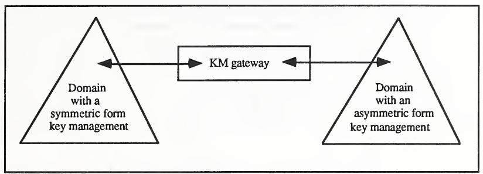
枠で囲んだ図です。左の三角形に「共通鍵形式の鍵管理を行うドメイン」、右の三角形に「公開鍵形式の鍵管理を行うドメイン」と書かれています。両者の間の上寄りに「鍵管理ゲートウェイ」の枠があり、それぞれの三角形と両向きの矢印で結ばれています。
Figure 5.8:1 Key management application layer gateway
図 5.8:1 鍵管理のアプリケーション層ゲートウェイ
The design of an application layer gateway that would perform the needed conversions is an issue not addressed by this paper.
必要な変換を行うアプリケーション層ゲートウェイの設計は、本書では扱わない課題です。
5.9 PROTECTION OF GROUP AND BROADCAST KEYS
5.9 グループ鍵およびブロードキャスト鍵の保護
A non-centralized form of key management, like the certificate-based form, has no central place accessible to all users. How can distribution of group and broadcast keys occur when there is no central place? For instance, the SILS SDE protocol [IEEE P802.10B] needs keys shared by several entities for group communication and broadcasting purposes. Another example of a need for group keys is a distributed environment where multi-peer communication is possible. If there is a central place, for example, a Key Distribution Center, which is accessible for every station in a LAN, the problem can be solved. The article Encapsulation Security Protocol Design For Local Area Networks [HOUS88] describes a solution. According to [HOUS88] every station performs several two-way exchanges with the KDC when powering up. One of the exchanges serves to distribute the broadcast key and the other exchanges serve to distribute the group keys needed by the station.
証明書に基づく形式のような非集中型の鍵管理には、すべてのユーザーがアクセスできる中心的な場所がありません。中心的な場所がないとき、グループ鍵とブロードキャスト鍵の配布はどのように行えるでしょうか。たとえば、SILS SDE プロトコル [IEEE P802.10B] は、グループ通信とブロードキャストのために、複数のエンティティが共有する鍵を必要とします。グループ鍵が必要となるもう一つの例は、マルチピア通信が可能な分散環境です。LAN のすべてのステーションがアクセスできる中心的な場所、たとえば Key Distribution Center があれば、この問題は解決できます。論文 Encapsulation Security Protocol Design For Local Area Networks [HOUS88] は、一つの解決策を説明しています。[HOUS88] によれば、すべてのステーションは、電源投入時に KDC と複数の双方向交換を行います。交換の一つはブロードキャスト鍵の配布に使われ、他の交換は、そのステーションが必要とするグループ鍵の配布に使われます。
![Diagram in a frame with a legend at the top: "A = the station address of the initiator"; "B = the broadcast or multicats station address" (sic); "I = the nonce"; "KEK_A = the key encryption key of A"; "TEK = the traffic encryption key"; "T_exp = the expiration time for TEK"; "KEK_A[x] = the value encrypted with the key encryption key for A"; "KID_B = the traffic encryption key identifier for the TEK"; "1) = indicates the order in which steps are performed" (_ marks a subscript). Below, an ellipse "Key Service KS KEK_A" at the top and an ellipse "Initiator A KEK_A" at the bottom are linked by two curved arrows: on the left, "1) KEK_A (A, B, I)" goes from the initiator up to the key service; on the right, "2) KEK_A(TEK, T_exp, B, I, KID_B )" goes from the key service down to the initiator.](assets/ir-4983/p0076-figure-01.png)
枠で囲んだ図で、上部に凡例があります（_ の後は下付き文字）。「A = the station address of the initiator」（開始側の局アドレス）、「B = the broadcast or multicats station address」（ブロードキャストまたはマルチキャストの局アドレス）、「I = the nonce」（ノンス）、「KEK_A = the key encryption key of A」（A の鍵暗号化鍵）、「TEK = the traffic encryption key」（トラフィック暗号化鍵）、「T_exp = the expiration time for TEK」（TEK の有効期限）、「KEK_A[x] = the value encrypted with the key encryption key for A」（A の鍵暗号化鍵で暗号化した値）、「KID_B = the traffic encryption key identifier for the TEK」（TEK のトラフィック暗号化鍵識別子）、「1) = indicates the order in which steps are performed」（手順の順序を表す）です。下には、上の楕円「Key Service KS KEK_A」（鍵サービス）と下の楕円「Initiator A KEK_A」（開始側 A）が 2 本の曲がった矢印で結ばれています。左の「1) KEK_A (A, B, I)」は開始側から鍵サービスへ上り、右の「2) KEK_A(TEK, T_exp, B, I, KID_B )」は鍵サービスから開始側へ下ります。
Figure 5.9:1 Distribution of group and broadcast keys
図 5.9:1 グループ鍵およびブロードキャスト鍵の配布
These exchanges will be repeated shortly before the expiration time associated with each traffic encryption key (TEK).
これらの交換は、各トラフィック暗号化鍵（TEK）に関連づけられた有効期限の直前に繰り返されます。
If key management is based on asymmetric principles, there can be a problem creating keys which are shared between more than two parties. For example, Diffie-Hellman is based on the fact that the key is formed by two parties.
鍵管理が非対称の原理に基づく場合、3 つ以上の当事者の間で共有される鍵の作成に問題が生じることがあります。たとえば、Diffie-Hellman は、鍵が 2 つの当事者によって形成されることを前提としています。
It should also be mentioned there are mixed feelings about keys shared by several parties. Some security experts have the opinion that a key never should be shared between more than two parties. When more than two parties share a key and a breach in security is detected, it may be difficult to find out who or what caused the breach. If only two parties, Party A and Party B, are involved and Party B causes the breach, Party A could take the necessary precautions. Even if Party B denies to have caused the breach, Party A could be certain that Party B was the guilty part, because Party A knows that it is innocent. However, in the case of SILS, the multiple shared keys are used to protect broadcast and group traffic in a LAN. The need of these keys originates from the broadcast nature of LANs.
複数の当事者が共有する鍵については、賛否が分かれていることにも触れておくべきです。セキュリティ専門家の中には、鍵を 3 つ以上の当事者の間で共有すべきではないと考える人もいます。3 つ以上の当事者が鍵を共有していて、セキュリティ侵害が検知された場合、誰が、あるいは何が侵害を引き起こしたのかを突き止めるのは困難かもしれません。2 つの当事者、当事者 A と当事者 B だけが関与していて、当事者 B が侵害を引き起こした場合、当事者 A は必要な予防措置を講じられます。当事者 B が侵害を引き起こしたことを否認しても、当事者 A は自分が潔白だと知っているため、当事者 B が責任者だったと確信できます。しかし、SILS の場合、複数の当事者が共有する鍵は、LAN におけるブロードキャストおよびグループトラフィックを保護するために使われます。これらの鍵が必要なのは、LAN がブロードキャスト型であるという性質に由来します。
5.10 ALGORITHM INDEPENDENCE
5.10 アルゴリズム独立性
ISO security standards should never mention a specific algorithm. One of the requirements for the OSI key management protocol was to keep the protocol independent of specific algorithms. How can this be achieved? An OSI key management protocol residing in the application layer must be specified in Abstract Syntax Notation One (ASN.1) [ISO 8824] [ISO 8825]. We must therefore look at what abilities are provided by ASN.1. For this purpose ASN.1 provides the data type Object Identifier and the parameters associated with an Object Identifier can be referenced using the ASN.1 ANY DEFINED BY construct. Another way to achieve algorithm independence is to alter the presentation context. However, ultimately the algorithm dependent data must be defined somewhere. One solution is to have security registers where the algorithm dependent data is defined. At the moment there are no security registers available. The National Institute of Standards and Technology (NIST) is planning to establish a security register where security objects can be registered. [NIST SEC REG92] provides more information about the NIST security register. [ISO 9979] specifies the procedures for the registering of cryptographic algorithms and the form of register entries. A cryptographic algorithm is an example of a security object that could appear in a security register.
ISO のセキュリティ標準は、特定のアルゴリズムに言及すべきではありません。OSI 鍵管理プロトコルの要件の一つは、プロトコルを特定のアルゴリズムから独立させておくことでした。これはどのように実現できるでしょうか。アプリケーション層にある OSI 鍵管理プロトコルは、Abstract Syntax Notation One（ASN.1）[ISO 8824] [ISO 8825] で規定しなければなりません。したがって、ASN.1 がどのような能力を提供しているかを見る必要があります。この目的のために、ASN.1 はデータ型 Object Identifier を提供しており、Object Identifier に関連づけられたパラメーターは、ASN.1 の ANY DEFINED BY 構文を使って参照できます。アルゴリズム独立性を実現するもう一つの方法は、プレゼンテーションコンテキストを変更することです。しかし、最終的には、アルゴリズムに依存するデータをどこかで定義しなければなりません。一つの解決策は、アルゴリズムに依存するデータを定義するセキュリティレジスターを設けることです。現時点では、利用できるセキュリティレジスターはありません。National Institute of Standards and Technology（NIST）は、セキュリティオブジェクトを登録できるセキュリティレジスターを設立する計画です。[NIST SEC REG92] は、NIST のセキュリティレジスターについての詳しい情報を提供しています。[ISO 9979] は、暗号アルゴリズムの登録手順と、レジスタエントリの形式を規定しています。暗号アルゴリズムは、セキュリティレジスターに現れうるセキュリティオブジェクトの一例です。
5.10.1 Algorithm independence by using Object Identifiers
5.10.1 オブジェクト識別子の使用によるアルゴリズム独立性
An Object Identifier has a certain position in the "Object Identifier tree". The top nodes of the Object Identifier tree are shown below:
Object Identifier は、「Object Identifier ツリー」内の一定の位置を持ちます。Object Identifier ツリーの最上位のノードを下に示します。
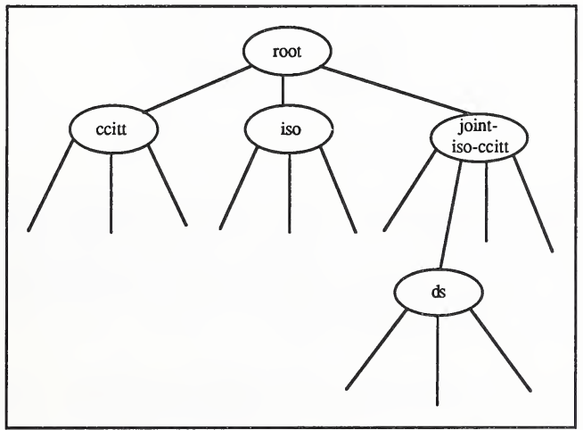
枠で囲んだ木構造の図です。最上位の「root」の楕円から「ccitt」「iso」「joint-iso-ccitt」の 3 つの楕円へ線が伸びています。ccitt と iso の下にはそれぞれ名前の無い枝が 3 本あります。joint-iso-ccitt の下には 4 本の枝があり、そのうち 1 本が「ds」の楕円につながり、ds の下にも名前の無い枝が 3 本あります。
Figure 5.10.1:1 Object Identifier tree
図 5.10.1:1 Object Identifier ツリー
For example, the Directory standards can be referred to as {joint-iso-ccitt ds(5)}, it is the value notation of an ASN.1 OBJECT IDENTIFIER.
たとえば、Directory 標準は {joint-iso-ccitt ds(5)} として参照でき、これは ASN.1 OBJECT IDENTIFIER の値表記です。
References to the security register are possible by using Object Identifier data types. The intention of the following example is to give an idea of how a registration procedure may appear. This example illustrates how DES is registered as an encryption algorithm using the Object Identifier scheme. The algorithm can be registered in the following way:
セキュリティレジスターへの参照は、Object Identifier データ型を使って行えます。次の例の意図は、登録手順がどのようなものになりうるかのイメージを与えることです。この例は、Object Identifier の方式を使って、DES を暗号化アルゴリズムとしてどのように登録するかを示しています。アルゴリズムは、次のようにして登録できます。
des ALGORITHM
PARAMETER SEQUENCE {
mode INTEGER {ecb(0), cbc(1), cfb(2)},
initVector OCTET STRING OPTIONAL}
:= {confAlgs 1}The ALGORITHM ASN.1 macro is defined in the Directory Authentication Framework [ISO 9594-8]. As already mentioned the parameters associated with an algorithm can be referenced using the ASN.1 ANY DEFINED BY construct. The following ASN.1 definitions appear in a protocol that has to be algorithm independent:
ALGORITHM ASN.1 マクロは、Directory Authentication Framework [ISO 9594-8] で定義されています。すでに述べたとおり、アルゴリズムに関連づけられたパラメーターは、ASN.1 の ANY DEFINED BY 構文を使って参照できます。次の ASN.1 定義は、アルゴリズムに依存しない必要があるプロトコルに現れます。
AlgorithmIdentifier ::= SEQUENCE {
algorithm OBJECT IDENTIFIER,
parameters ANY DEFINED BY algorithm OPTIONAL}The protocol entity chooses the algorithm by giving the ASN.1 variable algorithm the Object Identifier value of the selected algorithm. The field parameters contains the parameters associated with the selected algorithm. The ASN.1 data type AlgorithmIdentifier is defined in [ISO 9594-8]. The following gives an illustration of what kind of data that is sent when the ASN.1 data type AlgorithmIdentifier appears in an application layer protocol identifying DES used in cbc mode:
プロトコルエンティティは、ASN.1 の変数 algorithm に、選択したアルゴリズムの Object Identifier の値を与えることで、アルゴリズムを選びます。フィールド parameters には、選択したアルゴリズムに関連づけられたパラメーターが含まれます。ASN.1 データ型 AlgorithmIdentifier は [ISO 9594-8] で定義されています。次に、cbc モードで使われる DES を識別するアプリケーション層プロトコルに、ASN.1 データ型 AlgorithmIdentifier が現れるとき、どのようなデータが送られるかの例を示します。

枠で囲んだ、データの値に注記を付けた図です。「{ {2 1 3 4} { {1} {´1122334455667788´H} } }」と書かれています。「algorithm field」（algorithm フィールド）の見出しの下にある「{2 1 3 4}」には下括弧で「Gives the position in the Object Identifier tree」（オブジェクト識別子の木での位置を示す）と注記されています。残りの部分の上には「parameters field」（parameters フィールド）の見出しがあり、「{1}」には「Tells in which mode DES operates」（DES の動作モードを示す）、「´1122334455667788´H」には「Value of Initialization Vector」（初期化ベクトルの値）と下括弧で注記されています。
Figure 5.10.1:2 Data sent when DES is used in cbc mode
図 5.10.1:2 DES を cbc モードで使うときに送られるデータ
By separating from the protocol the parameters relevant for a certain algorithm, nothing algorithm specific needs to be defined in the protocol. This gives a security domain the possibility to choose the algorithms it finds appropriate to use. It also gives the security domain the possibility to use a publicly available key management protocol in combination with its own secret cryptographic algorithms. Another advantage is that the user of the protocol is given the possibility to choose another algorithm when the one being used is broken. As already mentioned, the algorithm specific parameters are defined in a security register.
特定のアルゴリズムに関連するパラメーターをプロトコルから分離することで、アルゴリズムに固有のものをプロトコルで定義する必要がなくなります。これにより、セキュリティドメインは、使うのが適切と考えるアルゴリズムを選択できます。また、セキュリティドメインは、公開されている鍵管理プロトコルを、自身の秘密の暗号アルゴリズムと組み合わせて使えます。もう一つの利点は、使用中のアルゴリズムが破られたときに、プロトコルの利用者が別のアルゴリズムを選択できることです。すでに述べたとおり、アルゴリズム固有のパラメーターは、セキュリティレジスターで定義されます。
5.10.2 Algorithm independence by altering presentation context
5.10.2 プレゼンテーションコンテキストの変更によるアルゴリズム独立性
Another way to achieve algorithm independence is by using the concept of document types. In order to understand how document types can be used, parts of the FTAM standard [ISO 8571-2] [ISO 8571-4] are studied. The similarity between FTAM and key management is that the FTAM protocol has to be independent of a certain file content; the key management protocol has to be independent of a certain algorithm. The FTAM standard solves the problem by having different presentation contexts. A specific presentation context is used when FTAM protocol control information is sent and another when file content data is sent. The presentation context associated with the file content data is determined from a document type. The document type, among other things, describes the content of a file from a syntactic point of view, see [ISO 8571-2] for more information. OSI Explained [HENS88] describes a presentation context. The following description is a more informal way of showing why presentation contexts need to be changed, and gives the reader an idea of how it could be used to support key management. In the following example the ASN.1 tag types, Universal, Application, and Context-specific are used. If a tag is Universal, it can be used in an arbitrary application protocol, the ASN.1 parser always recognizes the associated data type. However, if tags are Application or Context-specific, the parser must know the specific protocol where the tags are used. For example, the following definition from the FTAM protocol [ISO 8571-4] is an example of an Application tag:
アルゴリズム独立性を実現するもう一つの方法は、ドキュメントタイプの概念を使うことです。ドキュメントタイプをどう使えるかを理解するため、FTAM 標準 [ISO 8571-2] [ISO 8571-4] の一部を調べます。FTAM と鍵管理の類似点は、FTAM プロトコルが特定のファイル内容から独立していなければならず、鍵管理プロトコルが特定のアルゴリズムから独立していなければならないことです。FTAM 標準は、異なるプレゼンテーションコンテキストを持つことでこの問題を解決しています。FTAM のプロトコル制御情報を送るときには特定のプレゼンテーションコンテキストが使われ、ファイル内容のデータを送るときには別のものが使われます。ファイル内容のデータに関連づけられたプレゼンテーションコンテキストは、ドキュメントタイプから決まります。ドキュメントタイプは、とりわけ、ファイルの内容を構文の観点から記述します。詳細は [ISO 8571-2] を参照してください。OSI Explained [HENS88] は、プレゼンテーションコンテキストを説明しています。次の説明は、プレゼンテーションコンテキストを変更する必要がある理由を、より非公式な形で示すもので、それを鍵管理のサポートにどう使えるかのイメージを読者に与えます。次の例では、ASN.1 のタグ型である Universal、Application、Context-specific を使います。タグが Universal であれば、任意のアプリケーションプロトコルで使え、ASN.1 パーサーは、関連するデータ型を常に認識します。しかし、タグが Application または Context-specific の場合、パーサーは、そのタグが使われている特定のプロトコルを知っていなければなりません。たとえば、FTAM プロトコル [ISO 8571-4] の次の定義は、Application タグの例です。
User-identity ::= [APPLICATION 22] IMPLICIT GraphicStringTo parse the expression, the parser must know that it has to parse FTAM protocol control information, because in another application protocol [APPLICATION 22] may be used to tag something that is completely different from the above definition.
この式を構文解析するには、パーサーは、FTAM のプロトコル制御情報を構文解析しなければならないことを知っていなければなりません。別のアプリケーションプロトコルでは、[APPLICATION 22] が、上の定義とはまったく異なるものにタグを付けるために使われる場合があるためです。
Context-specific tags are also used in [ISO 8571-4]. For example:
[ISO 8571-4] では、Context-specific タグも使われています。たとえば次のとおりです。
F-RECOVER-request ::= SEQUENCE {
activity-identifier Activity-Identifier,
bulk-transfer-number [0] IMPLICIT INTEGER,
requested-access Access-Request,
access-passwords Access-Passwords OPTIONAL,
recovery-point [2] IMPLICIT INTEGER DEFAULT 0,
remove-contexts [3] IMPLICIT SET OF Abstract-Syntax...,
define-contexts [4] IMPLICIT SET OF Abstract-Syntax...}
F-RECOVER-response ::= SEQUENCE {
state-result State-Result DEFAULT success,
action-result Action-Result DEFAULT success,
contents-type [1] Contents-Type-Attribute,
recovery-point [2] IMPLICIT INTEGER DEFAULT 0,
diagnostic Diagnostic OPTIONAL,
presentation-action [6] IMPLICIT BOOLEAN DEFAULT FALSE}Now the parser must not only know that it has to parse FTAM protocol control information; it must also know which FTAM PDU it has to parse. Otherwise, it cannot distinguish between Context-specific tags with the same value. In the above definitions both PDUs use [2] as a Context-specific tag. When the presentation context is altered, the parser knows that is has to parse another type of ASN.1 information that it has specified in a document type, where eventual Application and Context-specific tags are associated with other data types than the ones when FTAM protocol control information is sent. When FTAM´s initiator and responder exchange the initialization PDUs, they can also agree about what document types to support. For key management, the algorithm specific data could be described in a document type; the document type could be part of a security register. When the presentation context is changed, the parser knows from having parsed key management protocol information. It has to parse information associated with a document type. The document type, among other things, describes the ASN.1 data types associated with a particular key exchange algorithm.
ここでは、パーサーは、FTAM のプロトコル制御情報を構文解析しなければならないことを知っているだけでは足りません。どの FTAM PDU を構文解析しなければならないかも知っていなければなりません。そうでなければ、同じ値を持つ Context-specific タグを区別できません。上の定義では、どちらの PDU も Context-specific タグとして [2] を使っています。プレゼンテーションコンテキストを変更すると、パーサーは、FTAM のプロトコル制御情報を送るときとは異なるデータ型に Application タグや Context-specific タグが関連づけられているドキュメントタイプで指定された、別の種類の ASN.1 情報を構文解析しなければならないことを知ります。FTAM のイニシエーターとレスポンダーが初期化 PDU を交換するとき、サポートするドキュメントタイプについても合意できます。鍵管理では、アルゴリズム固有のデータをドキュメントタイプで記述でき、ドキュメントタイプをセキュリティレジスターの一部にできます。プレゼンテーションコンテキストが変更されると、パーサーは鍵管理プロトコル情報を解析したことから、ドキュメントタイプに関連づけられた情報を解析しなければならないと分かります。ドキュメントタイプは、とりわけ、特定の鍵交換アルゴリズムに関連づけられた ASN.1 データ型を記述します。
5.10.3 Algorithm independence in SDNS
5.10.3 SDNS におけるアルゴリズム独立性
[SDNS 90-4262] uses the ASN.1 OCTET STRING data type to keep the protocol independent of specific cryptographic algorithms. Another benefit is that the semantics of the data is not revealed. An example is the Nkrq PDU, which has the following ASN.1 definition:
[SDNS 90-4262] は、プロトコルを特定の暗号アルゴリズムから独立させておくために、ASN.1 の OCTET STRING データ型を使っています。もう一つの利点は、データの意味が明らかにならないことです。一例は Nkrq PDU で、次の ASN.1 定義を持ちます。
Nkrq ::= SEQUENCE {
init-cred Credentials,
univ-id Universal-id,
init-kid KeyId}
Credentials ::= [APPLICATION 22] IMPLICIT OCTET STRINGIt is obvious that the real ASN.1 definition of credentials must be something else than OCTET STRING. How the ASN.1 parsing is done is not clear, one way could be to do the parsing in two steps. The first step handles the data like an ASN.1 OCTET STRING data type and the ASN.1 OCTET STRING identifier tag and length information are removed. The second step does the parsing in accordance to the real representation of the data. This representation will also make it possible to use the same protocol in different environments where the representation of Credentials may vary.
資格情報の実際の ASN.1 定義は、OCTET STRING 以外のものでなければならないことは明らかです。ASN.1 の構文解析がどのように行われるかは明らかではありませんが、一つの方法は、2 段階で構文解析することかもしれません。最初の段階では、データを ASN.1 OCTET STRING データ型として扱い、ASN.1 OCTET STRING の識別子タグと長さ情報を取り除きます。2 番目の段階では、データの実際の表現に従って構文解析を行います。この表現により、資格情報の表現が異なりうる別の環境でも、同じプロトコルを使えるようになります。
5.10.4 Section summary
5.10.4 節のまとめ
The advantage of the method where the presentation context is altered is the possibility to define a state machine for each particular algorithm. It makes it possible for the algorithm designer to specify the handshaking procedure. For the Object Identifier approach, if the scheme of SDNS is followed, the algorithm dependent information is carried by the Nkrq, Nkrs, Ssrq and Ssrs PDUs, i.e. the handshaking can only be four-way.
プレゼンテーションコンテキストを変更する方法の利点は、個々のアルゴリズムごとに状態機械を定義できることです。これにより、アルゴリズムの設計者はハンドシェイクの手順を規定できます。Object Identifier を使う方法では、SDNS の方式に従う場合、アルゴリズムに依存する情報は Nkrq、Nkrs、Ssrq、Ssrs PDU で運ばれるため、ハンドシェイクは 4 ウェイにしかできません。
If it is not possible to mix protocol control information and algorithm dependent information, because they have to be parsed in different presentation contexts, a drawback is that the number of transitions increases. For example, if the key exchange algorithm described in NLSP [ISO 11577] is used in an application layer based key management protocol (see Annex A for more details about the algorithm) and algorithm independence is achieved by changing presentation context, algorithm dependent data cannot be carried by the Ssrq and Ssrs PDUs. This is because the Ssrq and Ssrs PDUs can only carry the key management protocol control information. Therefore, at least three transitions have to occur in the presentation context where algorithm dependent data is exchanged.
プロトコル制御情報とアルゴリズムに依存する情報を、異なるプレゼンテーションコンテキストで構文解析しなければならないために混在させられない場合、遷移の数が増えるという欠点があります。たとえば、NLSP [ISO 11577] に記述された鍵交換アルゴリズムを、アプリケーション層に基づく鍵管理プロトコルで使い（アルゴリズムの詳細は附属書 A を参照）、プレゼンテーションコンテキストの変更でアルゴリズム独立性を実現する場合、アルゴリズムに依存するデータを Ssrq と Ssrs PDU で運ぶことはできません。Ssrq と Ssrs PDU は、鍵管理プロトコルの制御情報しか運べないためです。したがって、アルゴリズムに依存するデータを交換するプレゼンテーションコンテキストでは、少なくとも 3 回の遷移が起こらなければなりません。
The solution employed in SDNS can be seen as a solution designated for that particular environment and is not applicable for the general case.
SDNS で採られている解決策は、その特定の環境のために設計された解決策とみなせ、一般的な場合には適用できません。
5.11 ASN.1 ABSTRACT VERSUS TRANSFER SYNTAX PROBLEMS
5.11 ASN.1 の抽象構文と転送構文の問題
When security has to be employed in the application layer, ASN.1 causes some problems. The problems listed in this section are not specific for a layer seven key management protocol, they are general ASN.1 problems encountered when security services reside in the application layer.
アプリケーション層でセキュリティを使わなければならない場合、ASN.1 はいくつかの問題を引き起こします。本節に挙げる問題は、レイヤー 7 の鍵管理プロトコルに固有のものではなく、セキュリティサービスがアプリケーション層にあるときに生じる、ASN.1 全般の問題です。
The content of an an application layer protocol is specified by using ASN.1 [ISO 8824] [ISO 8825]. The way in which the ASN.1 definitions are represented internally within a system is a local matter. When two systems exchange PDUs they must, of course, have the same external view about the representation of the PDU content. According to the OSI model, it is the presentation layer that translates from a local representation to the common ASN.1 format. The common format is the ASN.1 transfer syntax representation of the data and the local format is the abstract syntax representation. In a real implementation the place where the translation is done may vary. For example, in a real implementation the presentation and application layers are often strongly coupled. The choice of how to represent the abstract syntax affects both layers.
アプリケーション層プロトコルの内容は、ASN.1 [ISO 8824] [ISO 8825] を使って規定します。ASN.1 定義がシステム内部でどのように表現されるかは、ローカルな事柄です。2 つのシステムが PDU を交換するときには、もちろん、PDU の内容の表現について、外部から見て同じ見方を持たなければなりません。OSI モデルによれば、ローカルな表現から共通の ASN.1 形式への変換を行うのはプレゼンテーション層です。共通の形式はデータの ASN.1 転送構文表現であり、ローカルな形式は抽象構文表現です。実際の実装では、変換を行う場所はさまざまです。たとえば、実際の実装では、プレゼンテーション層とアプリケーション層が強く結合していることがよくあります。抽象構文をどう表現するかの選択は、両方の層に影響します。
Digital signatures must be computed on a data structure which both parties have in common. Otherwise, it would not be possible for the receiver to verify the signature. Thus, since the signature cannot be computed on the abstract syntax representation it must instead be computed on the transfer syntax representation. The problem is that the transfer syntax of the data may not be available when the signing occurs, since the translation from abstract to transfer syntax can be done when the data is processed in the presentation layer. The problem can be solved by doing a translation immediately before the signing occurs. For example, ISODE [ROSE90] represents the ASN.1 elements of the application layer as presentation elements. The presentation layer translates the presentation elements representation to an octet stream, which is the ASN.1 transfer syntax representation. When signing needs to occur in the application layer, the translation to the transfer syntax representation could be done and the hashing and encryption performed on the transfer syntax representation of the data. However, after the data is sent to the presentation layer the same translation will be done once more. In order to avoid retranslations the existing ASN.1 processing schemes must be altered. If an existing ASN.1 parser, in conjunction with a presentation layer implementation is used, probably problems are encountered when implementing security services in the application layer.
デジタル署名は、双方が共通して持つデータ構造に対して計算しなければなりません。そうでなければ、受信者は署名を検証できません。したがって、署名は抽象構文表現に対しては計算できないため、代わりに転送構文表現に対して計算しなければなりません。問題は、抽象構文から転送構文への変換がデータをプレゼンテーション層で処理するときに行われうるため、署名を行うときにデータの転送構文が利用できない場合があることです。この問題は、署名を行う直前に変換を行うことで解決できます。たとえば、ISODE [ROSE90] は、アプリケーション層の ASN.1 要素をプレゼンテーション要素として表現します。プレゼンテーション層は、プレゼンテーション要素の表現を、ASN.1 転送構文表現であるオクテット列に変換します。署名をアプリケーション層で行う必要があるときは、転送構文表現への変換を行い、データの転送構文表現に対してハッシュと暗号化を行えます。しかし、データがプレゼンテーション層に送られた後、同じ変換がもう一度行われます。再変換を避けるには、既存の ASN.1 処理方式を変更しなければなりません。既存の ASN.1 パーサーをプレゼンテーション層の実装と組み合わせて使う場合、アプリケーション層でセキュリティサービスを実装するときに、おそらく問題が生じます。
Distinguished encoding is another problem. For example, the ASN.1 length information can be represented in different ways. The Directory standards makes certain restrictions about how the ASN.1 transfer syntax can be encoded when there are multiple choices for representing ASN.1 transfer syntax. In some way the ASN.1 parser must be forced to choose a specific transfer syntax representation. For example, routing in the application layer may cause problems. Suppose that a signed ASN.1 data unit is sent from OSI system A to C but passes through the application layer of system B. The receiving system, C, when checking the digital signature may compute a hash value that differs from the one provided. This occurs because after being sent from the application layer, the signed data unit is encoded in the presentation layer by system B using a different scheme. The length representation of the data unit sent from system A was chosen by system A´s ASN.1 parser, however, the length representation of the data unit sent from system B was chosen by system B´s ASN.1 parser. If distinguished encoding is used this problem will not occur.
一意符号化も別の問題です。たとえば、ASN.1 の長さ情報は、さまざまな方法で表現できます。Directory 標準は、ASN.1 転送構文を表現する選択肢が複数ある場合に、ASN.1 転送構文をどのように符号化できるかについて、一定の制限を設けています。何らかの方法で、ASN.1 パーサーに特定の転送構文表現を選ばせなければなりません。たとえば、アプリケーション層でのルーティングは問題を引き起こす場合があります。署名された ASN.1 データ単位が、OSI システム A から C に送られますが、システム B のアプリケーション層を通過するとします。受信側のシステム C は、デジタル署名を確認するときに、提供されたものと異なるハッシュ値を計算する場合があります。これは、アプリケーション層から送られた後、署名されたデータ単位が、システム B によって、プレゼンテーション層で別の方式で符号化されるために起こります。システム A から送られたデータ単位の長さの表現は、システム A の ASN.1 パーサーによって選ばれましたが、システム B から送られたデータ単位の長さの表現は、システム B の ASN.1 パーサーによって選ばれました。一意符号化を使えば、この問題は起こりません。
When most ASN.1 parsers were designed, the special problems encountered when employing security in the application layer were not considered.
ほとんどの ASN.1 パーサーが設計されたとき、アプリケーション層でセキュリティを使う場合に生じる特別な問題は、考慮されていませんでした。
5.12 TRIGGERING OF KEY MANAGER
5.12 鍵マネージャーの起動
A key manager residing in the application layer could be triggered from the ACSE when an application association is established. A drawback to this approach is that the key manager needs to be retriggered when a key update (key update is defined in section 5.19) has to be done. The retriggering cannot be done from the ACSE, because the ACSE is only involved when an application association is created or terminated. Another solution is to trigger the key manager from the security protocol, as shown below:
アプリケーション層にある鍵マネージャーは、アプリケーションアソシエーションが確立されるときに、ACSE から起動できます。この方法の欠点は、鍵の更新（鍵の更新は 5.19 節で定義します）を行わなければならないときに、鍵マネージャーを再び起動する必要があることです。ACSE が関与するのはアプリケーションアソシエーションの作成時と終了時だけであるため、再起動は ACSE からは行えません。別の解決策は、下に示すように、セキュリティプロトコルから鍵マネージャーを起動することです。
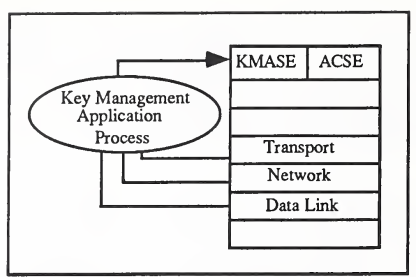
枠で囲んだ図です。左に「Key Management Application Process」（鍵管理アプリケーションプロセス）の楕円、右に 7 層の枠を積み重ねたプロトコルスタックがあります。スタックは上から「KMASE」と「ACSE」に分かれた層、空欄の 2 層、「Transport」、「Network」、「Data Link」、空欄の最下層です。楕円から KMASE へ矢印が向かい、Transport、Network、Data Link からは矢印の無い線が楕円へつながっています。
Figure 5.12:1 Triggering of key manager
図 5.12:1 鍵マネージャーの起動
It should be pointed out that earlier this type of interaction was modelled explicitly as part of systems management. It was the responsibility of the layer manager entity (LME) to accomplish such things as triggering. However, in OSI the concept of layer management entities does not exist any more. The interaction between the security protocol and the layer manager was described as shown in the following figure:
以前は、この種の相互作用は、システム管理の一部として明示的にモデル化されていたことを指摘しておくべきです。起動のようなことを行うのは、レイヤーマネージャーエンティティ（LME）の責任でした。しかし、OSI では、レイヤー管理エンティティという概念はもはや存在しません。セキュリティプロトコルとレイヤーマネージャーの相互作用は、次の図のように説明されていました。
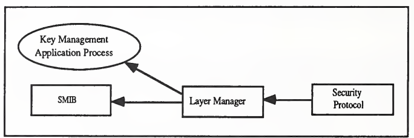
枠で囲んだ図です。右の「Security Protocol」（セキュリティプロトコル）の枠から中央の「Layer Manager」（層管理）の枠へ矢印が向かいます。Layer Manager からは、左の「SMIB」の枠へ向かう矢印と、左上の「Key Management Application Process」（鍵管理アプリケーションプロセス）の楕円へ向かう矢印が出ています。
Figure 5.12:2 Actions go through layer manager
図 5.12:2 レイヤーマネージャーを経由する動作
The security protocol entity, according to this model, invokes the layer manager entity in order to get the cryptographic keys. The layer manager entity in turn checks the SMIB to determine whether there are any keys available. If there are no keys available the layer manager triggers the key manager.
このモデルによれば、セキュリティプロトコルエンティティは、暗号鍵を得るためにレイヤーマネージャーエンティティを呼び出します。レイヤーマネージャーエンティティは、次に SMIB を調べて、利用できる鍵があるかどうかを判断します。利用できる鍵がなければ、レイヤーマネージャーは鍵マネージャーを起動します。
Triggering can be done in the following way when TLSP (former SP4C) is used on a per connection basis:
TLSP（旧 SP4C）をコネクションごとに使う場合、起動は次のように行えます。
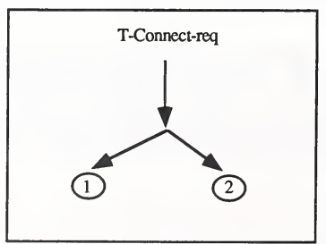
枠で囲んだ図です。上の「T-Connect-req」から下へ矢印が伸びて分岐点に達し、そこから左下と右下へ 2 本の矢印が丸囲みの「1」と「2」を指しています。
Figure 5.12:3 Triggering of key manager
図 5.12:3 鍵マネージャーの起動
When a T-Connect request service primitive arrives and security services are to be employed, the following occurs:
T-Connect request サービスプリミティブが到着し、セキュリティサービスを使うことになっている場合、次のことが起こります。
1.The key manager is triggered and the needed keys and attributes are established. This can be done over an unprotected transport connection, because the key manager relies on security services in the application layer.
1.鍵マネージャーが起動され、必要な鍵と属性が確立されます。鍵マネージャーはアプリケーション層のセキュリティサービスに依拠するため、これは保護されていないトランスポートコネクション上で行えます。
2.Transport sends a protected CR PDU.
2.トランスポートは、保護された CR PDU を送ります。
TLSP security services are offered either on a per transport connection or on a per NSAP basis. When the security services are offered on a per NSAP basis it is possible for several transport connections to share the same cryptographic keys. In this case when a new secure transport connection has to be established, a check could be performed to find out whether an appropriate security association is already established with the peer entity. If so, there is no need to trigger the key manager.
TLSP のセキュリティサービスは、トランスポートコネクションごと、または NSAP ごとに提供されます。セキュリティサービスが NSAP ごとに提供される場合、複数のトランスポートコネクションが同じ暗号鍵を共有できます。この場合、新しいセキュアなトランスポートコネクションを確立しなければならないときに、ピアエンティティとの間に適切なセキュリティアソシエーションがすでに確立されているかどうかを確認できます。確立されていれば、鍵マネージャーを起動する必要はありません。
Problems may occur when the key manager is triggered from the security protocol. First, how can it be determined that the particular transport connection transferring key exchange data shall not be protected, when the local security policy mandates that security services are invoked when communicating with the other system? Second, if the key management entity is associated with a particular transport selector, how is it determined that it really is the key management entity that sends the data? The data could be sent by another entity trying to bypass the security mechanisms of the system?
セキュリティプロトコルから鍵マネージャーを起動する場合、問題が生じる場合があります。第一に、ローカルのセキュリティポリシーが、他のシステムと通信するときにセキュリティサービスを呼び出すことを義務づけている場合、鍵交換データを転送する特定のトランスポートコネクションを保護してはならないことを、どのように判断できるでしょうか。第二に、鍵管理エンティティが特定のトランスポートセレクターに関連づけられている場合、データを送っているのが本当に鍵管理エンティティであることを、どのように判断するのでしょうか。データは、システムのセキュリティメカニズムを迂回しようとしている別のエンティティによって送られている可能性があるのではないでしょうか。
![Diagram inside a frame. Upper right: a protocol stack whose top row is "KMASE" and "ACSE", followed by a column of three dots (layers omitted) and "Session". Lower right: a "Transport" box containing the note "Local security policy mandates security services to be invoked when communicating with system X". Left: an ellipse "Key Management Application Process". Numbered arrows: 1, from Session down to Transport on the right, labeled "Open transport connection to system X"; 2, from Transport left and up into the Key Management Application Process; 3, from the Key Management Application Process up and right into KMASE; 4, from Session down to Transport on the left, also labeled "Open transport connection to system X".](assets/ir-4983/p0083-figure-01.png)
枠で囲んだ図です。右上はプロトコルスタックで、最上段に「KMASE」と「ACSE」が並び、その下に層の省略を表す縦の 3 つの点、さらに「Session」があります。右下は「Transport」の枠で、中に「Local security policy mandates security services to be invoked when communicating with system X」（ローカルのセキュリティポリシーにより、システム X との通信ではセキュリティサービスを起動しなければならない）と書かれています。左には楕円の「Key Management Application Process」（鍵管理アプリケーションプロセス）があります。番号付きの矢印は、1 が Session から右側を下って Transport へ向かい「Open transport connection to system X」（システム X へのトランスポート接続を開く）と書かれ、2 が Transport から左へ出て上がり鍵管理アプリケーションプロセスへ、3 が鍵管理アプリケーションプロセスから上がって右の KMASE へ、4 が Session から左側を下って Transport へ向かい、同じく「Open transport connection to system X」と書かれています。
Figure 5.12:4 How can it be determined that the second transport connection does not need to be protected
図 5.12:4 2 番目のトランスポートコネクションを保護する必要がないことを、どのように判断できるか
The figure above illustrates the steps involved in triggering the key manager. The second transport connection (see step 4) does not need to be protected because of two reasons: First, it is not possible to protect the transport connection since the transport connection is used to establish the traffic encryption keys. Second, the data is protected by security mechanisms employed in the application layer. The problems mentioned may not occur in SDNS because there is a separation between the different stacks. [LAMB88b] provides description of the dual and triple stack approaches. The following figure illustrates a triple stack:
上の図は、鍵マネージャーの起動に関わる手順を示しています。2 番目のトランスポートコネクション（手順 4 を参照）を保護する必要がないのは、2 つの理由によります。第一に、トランスポートコネクションがトラフィック暗号化鍵を確立するために使われるため、そのトランスポートコネクションを保護することは不可能です。第二に、データはアプリケーション層で使われるセキュリティメカニズムによって保護されています。述べた問題は、スタックが分離されているため、SDNS では生じない場合があります。[LAMB88b] は、2 スタックと 3 スタックの方法を説明しています。次の図は 3 スタックを示しています。

枠で囲んだ 3 つのスタックの図です。上段に「User Applications」（利用者アプリケーション）、「System Management」（システム管理）、「Key Management Application」（鍵管理アプリケーション）の 3 つの枠があります。その下に「User Upper Layer Protocols」（利用者の上位層プロトコル）、「Common Management Upper LayerProtocols」（共通管理の上位層プロトコル）、「Key Management Common Upper Layer Protocols」（鍵管理の共通上位層プロトコル）の 3 つの列があります。「Security」と書かれた斜線の帯は左の 2 列の下だけにあり、右の列は帯を挟まずに下へ伸びています。3 列とも横幅いっぱいの「Shared Lower Layer Protocols」（共有の下位層プロトコル）の上に載っています。
Figure 5.12:5 Separation of stacks
図 5.12:5 スタックの分離
Security services provided by TLSP reside within the user and management stack. The transport layer of the key management stack is separate from transport layer of the user and management stack. Automatically it is known that a transport connection of the key management stack does not need to be protected. Since there is a separation of stacks, only the key management entity is able to send the data. However, if in a real implementation there is no separation of stacks; the problem of how to assure that an entity is not bypassing the security mechanisms of the system remains unresolved. One solution to this problem is requiring a trusted implementation of the protocol at an appropriate level in the Trusted Computer System Evaluation Criteria [DoD 5200.28].
TLSP が提供するセキュリティサービスは、ユーザーおよび管理スタックの中にあります。鍵管理スタックのトランスポート層は、ユーザーおよび管理スタックのトランスポート層とは別です。鍵管理スタックのトランスポートコネクションを保護する必要がないことは、自動的に分かります。スタックが分離されているため、データを送れるのは鍵管理エンティティだけです。しかし、実際の実装でスタックが分離されていない場合、エンティティがシステムのセキュリティメカニズムを迂回していないことをどう保証するかという問題は、未解決のままです。この問題に対する解決策の一つは、Trusted Computer System Evaluation Criteria [DoD 5200.28] における適切なレベルで、信頼されたプロトコル実装を要求することです。
Another problem with triggering the key manager from the security protocol is that existing network service interfaces, for example, [x/OPEN TI], do not provide any key management triggering parameters.
セキュリティプロトコルから鍵マネージャーを起動することに関するもう一つの問題は、既存のネットワークサービスインターフェース（たとえば [x/OPEN TI]）が、鍵管理を起動するパラメーターを提供していないことです。
If the triggering is done from the security protocol it is easier to accomplish super encryption (for example, encryption could be employed at both an upper and lower layer), because the security protocols involved can interact with the key manager independently of each other.
起動をセキュリティプロトコルから行う場合、関与するセキュリティプロトコルが互いに独立して鍵マネージャーとやり取りできるため、スーパー暗号化（たとえば、上位層と下位層の両方で暗号化を使う場合）を行いやすくなります。
5.13 ESTABLISHMENT OF SECURITY SERVICES
5.13 セキュリティサービスの確立
How can the key manager be informed about the security services and associated security levels that a security protocol entity wants to establish? This is related to the problem of how an application or user can inform the security protocol entity which security services to invoke. Often two different solutions to the problem are mentioned: by local systems management and Quality of Service (QOS) parameters.
セキュリティプロトコルエンティティが確立したいセキュリティサービスと関連するセキュリティレベルを、鍵マネージャーにどのように知らせられるでしょうか。これは、アプリケーションまたはユーザーが、どのセキュリティサービスを呼び出すかをセキュリティプロトコルエンティティにどのように知らせられるかという問題に関連しています。この問題の解決策としては、ローカルのシステム管理による方法と、Quality of Service（QOS）パラメーターによる方法の 2 つがよく挙げられます。
An example of local systems management may be a configuration table specifying the security services to be used when communicating with other systems, the security levels allowed, during which times it is allow to communicate, etc. It is configured in accordance with the local security policy.
ローカルのシステム管理の一例として、他のシステムとの通信時に使うセキュリティサービス、許可されるセキュリティレベル、通信が許可される時間帯などを指定する構成テーブルが挙げられます。このテーブルはローカルのセキュリティポリシーに従って構成されます。
The Upper Layer Security Model document [ISO/SC21 6095] mentions that the only way by which an application can influence the selection of Lower Layer security services for a particular instance of communication is by using security QOS.
Upper Layer Security Model 文書 [ISO/SC21 6095] は、特定の通信インスタンスに対する下位層のセキュリティサービスの選択に、アプリケーションが影響を与えられる唯一の方法は、セキュリティ QOS を使うことだと述べています。
The Lower Layer Guidelines document [ISO/SC6 6957] introduces the protection Quality of Service parameter (SQOS). Note, some security documents use the term security QOS while other security documents use the term protection QOS. The term security QOS seems to be used when the discussions concern security relevant QOS parameters in general. For example, both the TC protection QOS parameter as defined in the Transport Service definition [ISO 8072] and the protection QOS parameter as defined in [ISO/SC6 6957] can be included. While the term protection QOS is used in discussions concerning the protection QOS parameter as defined in [ISO/SC6 6957]. The views presented in [ISO/SC6 6957] are that the security part of the ordinary QOS parameter as, for example, the TC protection QOS parameter, is insufficient for security purposes. The SQOS parameter is passed between layers and one way of determining the security services to be included in the security association is:
Lower Layer Guidelines 文書 [ISO/SC6 6957] は、保護 Quality of Service パラメーター（SQOS）を導入しています。なお、セキュリティ文書によってはセキュリティ QOS という用語を使い、別のセキュリティ文書では保護 QOS という用語を使います。セキュリティ QOS という用語は、セキュリティに関連する QOS パラメーター全般について議論するときに使われているようです。たとえば、Transport Service 定義 [ISO 8072] で定義された TC 保護 QOS パラメーターと、[ISO/SC6 6957] で定義された保護 QOS パラメーターの両方を含めることができます。一方、保護 QOS という用語は、[ISO/SC6 6957] で定義された保護 QOS パラメーターについて議論するときに使われます。[ISO/SC6 6957] に示された見解では、通常の QOS パラメーター（たとえば TC 保護 QOS パラメーター）のセキュリティ部分は、セキュリティ目的には不十分です。SQOS パラメーターは層間で渡され、セキュリティアソシエーションに含めるセキュリティサービスを決める一つの方法は次のとおりです。
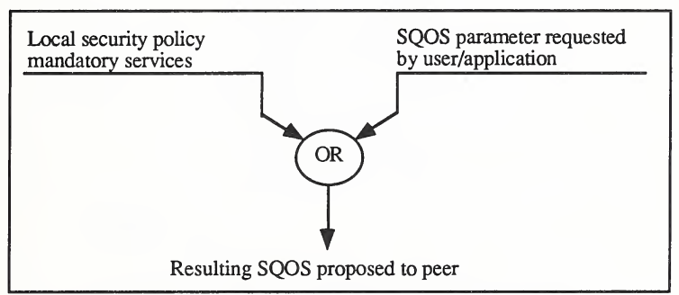
枠で囲んだ図です。上に 2 つの入力があり、左が「Local security policy mandatory services」（ローカルのセキュリティポリシーで必須のサービス）、右が「SQOS parameter requested by user/application」（利用者・アプリケーションが要求する SQOS パラメーター）で、それぞれ横線の上に書かれています。2 本の線は折れ曲がって、「OR」と書かれた楕円へ矢印で向かいます。OR の楕円から 1 本の矢印が下へ出て、「Resulting SQOS proposed to peer」（相手に提案する、結果としての SQOS）を指しています。
Figure 5.13:1 Determination of security services to be established
図 5.13:1 確立するセキュリティサービスの決定
For example, the local security policy may stipulate that when communicating with a specific system the communication must be integrity protected. In a commercial environment where only a small portion of the communication needs to be protected, it could be the responsibility of the application or user to invoke the security services on an as needed basis.
たとえば、ローカルのセキュリティポリシーが、特定のシステムと通信するときは通信を完全性保護しなければならないと定めている場合があります。通信のごく一部しか保護する必要がない商用環境では、必要に応じてセキュリティサービスを呼び出すことは、アプリケーションまたはユーザーの責任となる場合があります。
NLSP-CO specifies the following protection QOS sub-parameters:
NLSP-CO は、次の保護 QOS サブパラメーターを規定しています。
•Peer Entity Authentication;
•ピアエンティティ認証
•Access Control;
•アクセス制御
•Connection Confidentiality;
•コネクション機密性
•Traffic Flow Confidentiality;
•トラフィックフロー機密性
•Connection Integrity without Recovery;
•回復なしのコネクション完全性
•Security Label.
•セキュリティラベル
The SQOS parameter can be mapped onto the Service Selection field (except the Security Label) of the NLSP Security Control Information (SCI) PDU. If the Security Label is used it is possible to map the security level expressed by the label to the parameters included in the Service Selection field. A specific protection QOS sub-parameter, e.g. Connection Confidentiality, may be expressed as an integer. The value 0 may imply that no confidentiality service needs to be invoked and value 1 that confidentiality algorithm X has to be used. The information which needs to be preestablished is included in what the NLSP document [ISO 11577] calls An Agreed Set Of Security Rules (ASSR). So the confidentiality algorithm(s) associated with the SQOS sub-parameter Connection Confidentiality must be defined in the ASSR.
SQOS パラメーターは、NLSP の Security Control Information（SCI）PDU の Service Selection フィールドに（Security Label を除いて）対応づけられます。Security Label を使う場合、ラベルで表現されるセキュリティレベルを、Service Selection フィールドに含まれるパラメーターに対応づけることができます。特定の保護 QOS サブパラメーター、たとえば Connection Confidentiality は、整数で表現される場合があります。値 0 は機密性サービスを呼び出す必要がないことを意味する場合があり、値 1 は機密性アルゴリズム X を使わなければならないことを意味する場合があります。事前に確立しておく必要のある情報は、NLSP 文書 [ISO 11577] が An Agreed Set Of Security Rules（ASSR）と呼ぶものに含まれます。したがって、SQOS サブパラメーター Connection Confidentiality に関連づけられた機密性アルゴリズムは、ASSR で定義されなければなりません。
By sending the SQOS parameter between different layers, the user informs the NLSP entity of the security services to be established. By sending the SCI PDU the peer NLSP entity is informed about the security services to be included in the security association. However, [ISO 11577] does not explicitly state whether it is possible to enhance security at the NLSP sublayer or whether it is possible for the responder to enhance security at connection establishment. [ISO 11577] states that it is assumed that the NLSP entity attempts to provide security as defined in a target protection SQOS. The following is therefore just an interpretation of how the SQOS parameter may be used.
SQOS パラメーターを異なる層の間で送ることで、ユーザーは、確立するセキュリティサービスを NLSP エンティティに知らせます。SCI PDU を送ることで、ピアの NLSP エンティティは、セキュリティアソシエーションに含めるセキュリティサービスを知らされます。しかし、[ISO 11577] は、NLSP サブレイヤーでセキュリティを強化できるかどうか、あるいは応答側がコネクション確立時にセキュリティを強化できるかどうかを、明示的には述べていません。[ISO 11577] は、NLSP エンティティが、目標とする保護 SQOS で定義されたセキュリティを提供しようとすることを前提としていると述べています。したがって、以下は、SQOS パラメーターをどのように使える可能性があるかについての解釈にすぎません。
![Sequence diagram in a frame between two NLSP boxes, one at the upper left and one at the upper right. The left NLSP box contains the note "SQOS parameter may be enforced by the local security policy". Above the left box: arrow 1 "NLSP CONNECT req (SQOS)" points down into it and arrow 12 "NLSP CONNECT cnf (SQOS)" points up out of it. Above the right box: arrow 7 "NLSP CONNECT ind (SQOS)" points up out of it and arrow 8 "NLSP CONNECT resp (SQOS)" points down into it. Between them, from top to bottom, numbered horizontal arrows each with the PDU drawn as a box below: 2, left to right, "Connection Authentication PDU" (empty box); 3, right to left, "Connection Authentication PDU"; 4, left to right, "Secure Control Information PDU" with fields "Service Selection", "Key exchange data" and an empty field, where a line connects the Service Selection field to the note in the left NLSP box; 5, right to left, "Secure Control Information PDU" with the same fields; then a column of dots with a brace labeled "A certain number of SCI PDUs are exchanged"; 6, left to right, "Secure Data Transfer PDU" with field "NLSP Connect Parameters" and an empty field; 9, right to left, "Secure Data Transfer PDU" with "NLSP Connect Parameters"; 10, left to right, "Connection Authentication PDU"; 11, right to left, "Connection Authentication PDU".](assets/ir-4983/p0087-figure-01.png)
枠で囲んだ流れ図で、左上と右上に NLSP の枠があります。左の NLSP の枠には「SQOS parameter may be enforced by the local security policy」（SQOS パラメーターはローカルのセキュリティポリシーで強制されることがある）という注記があります。左の枠の上では、1「NLSP CONNECT req (SQOS)」が下向きに枠へ入り、12「NLSP CONNECT cnf (SQOS)」が上向きに枠から出ます。右の枠の上では、7「NLSP CONNECT ind (SQOS)」が上向きに枠から出て、8「NLSP CONNECT resp (SQOS)」が下向きに枠へ入ります。両者の間には上から順に番号付きの横向きの矢印が並び、それぞれの下に PDU が箱で描かれています。2 は左から右への「Connection Authentication PDU」（中身のない箱）、3 は右から左への「Connection Authentication PDU」、4 は左から右への「Secure Control Information PDU」で、「Service Selection」「Key exchange data」と空の欄があり、Service Selection の欄は線で左の NLSP の注記と結ばれています。5 は右から左への同じ欄を持つ「Secure Control Information PDU」です。その下に縦の点の列があり、括弧で「A certain number of SCI PDUs are exchanged」（SCI PDU がいくつか交換される）と示されています。続いて 6 は左から右への「Secure Data Transfer PDU」で「NLSP Connect Parameters」と空の欄を持ち、9 は右から左への同じ「Secure Data Transfer PDU」、10 は左から右への「Connection Authentication PDU」、11 は右から左への「Connection Authentication PDU」です。
Figure 5.13:2 Establishment of security services in NLSP
図 5.13:2 NLSP におけるセキュリティサービスの確立
If the service provider, NLSP, cannot meet the SQOS requirements an NLSP Disconnect service primitive is sent to the service user. In Figure 5.13:2, the cryptographic keys and attributes needed for the security association are established before an NLSP Connect indication is issued at the responding side. The service user at the responding side may want a higher level of security; and if so, the responding user sends an NLSP Disconnect request service primitive after the keys and attributes have been established. The SQOS parameter in this example can be enhanced by security administration imposed security policies. The Secure Data Transfer PDU sent by the initiating entity after the last SCI PDU contains the SQOS parameter specified by the user of the NLSP entity at the initiating side.
サービス提供者である NLSP が SQOS の要件を満たせない場合、NLSP Disconnect サービスプリミティブがサービス利用者に送られます。図 5.13:2 では、セキュリティアソシエーションに必要な暗号鍵と属性は、応答側で NLSP Connect indication が発行される前に確立されます。応答側のサービス利用者は、より高いレベルのセキュリティを望む場合があり、その場合、応答側の利用者は、鍵と属性が確立された後に NLSP Disconnect request サービスプリミティブを送ります。この例の SQOS パラメーターは、セキュリティ管理によって課されるセキュリティポリシーによって強化できます。開始側のエンティティが最後の SCI PDU の後に送る Secure Data Transfer PDU には、開始側の NLSP エンティティの利用者が指定した SQOS パラメーターが含まれます。
The QOS parameter defined in [ISO 8072] which can be used for security purposes is TC protection. The parameter is specified by selecting one of four protection options, these options are:
[ISO 8072] で定義された QOS パラメーターのうち、セキュリティ目的に使えるのは TC protection です。このパラメーターは、4 つの保護オプションから 1 つを選んで指定します。これらのオプションは次のとおりです。
1.no protection features;
1.保護機能なし
2.protection against passive monitoring;
2.受動的監視に対する保護
3.protection against modification, replay, addition or deletion;
3.改変、リプレイ、追加または削除に対する保護
4.both 2 and 3.
4.2 と 3 の両方
Choosing 1 implies no security services at all; alternative 2 implies a connection oriented or connectionless confidentiality service; alternative 3 implies an connection oriented or connectionless integrity service; alternative 4 implies both a connection oriented or connectionless confidentiality service and a connection oriented or connectionless integrity service. The value of TC protection must in the T-CONNECT indication be the same as in the T-CONNECT request.
1 を選ぶことは、セキュリティサービスがまったく提供されないことを意味します。選択肢 2 は、コネクション型またはコネクションレス型の機密性サービスを意味します。選択肢 3 は、コネクション型またはコネクションレス型の完全性サービスを意味します。選択肢 4 は、コネクション型またはコネクションレス型の機密性サービスと、コネクション型またはコネクションレス型の完全性サービスの両方を意味します。TC protection の値は、T-CONNECT indication で T-CONNECT request と同じでなければなりません。
The following is an example of how the TC protection parameter may be used to support a layer seven key manager. This example assumes that the security services are established on user demand.
次の例は、TC protection パラメーターをレイヤー 7 の鍵マネージャーのサポートにどのように使えるかを示します。この例は、セキュリティサービスがユーザーの要求に応じて確立されると仮定しています。
![Diagram in a frame. At the top a stick figure labeled "user". A vertical chain of arrows runs down through boxes "FTAM", "ACSE", "Presentation", "Session" and "Transport", the Transport box having "TLSP" as its bottom part. The arrows are labeled, from top to bottom: "F-INITIALIZE req(TC protection = protection against passive monitoring)" from the user to FTAM; "A-ASSOCIATE req(TC protection = protection against passive monitoring)" from FTAM to ACSE; "P-CONNECT req(...)" from ACSE to Presentation; "S-CONNECT req(...)" from Presentation to Session; "T-CONNECT req(...)" from Session to Transport, each with the same TC protection value. On the left an ellipse "Key Management Application Process". A line from TLSP runs left and then up with an arrow into the ellipse, labeled "Establishment of a confidentiality service with system x".](assets/ir-4983/p0089-figure-01.png)
枠で囲んだ図です。最上部に「user」（利用者）と書かれた人の形の記号があります。そこから下へ矢印がつながり、「FTAM」「ACSE」「Presentation」「Session」「Transport」の枠を順に通ります。Transport の枠の下部は「TLSP」です。矢印には上から順に、利用者から FTAM への「F-INITIALIZE req(TC protection = protection against passive monitoring)」、FTAM から ACSE への「A-ASSOCIATE req(...)」、ACSE から Presentation への「P-CONNECT req(...)」、Presentation から Session への「S-CONNECT req(...)」、Session から Transport への「T-CONNECT req(...)」と書かれ、どれも括弧内は「TC protection = protection against passive monitoring」（TC 保護＝受動的な盗聴からの保護）です。左側には楕円の「Key Management Application Process」（鍵管理アプリケーションプロセス）があります。TLSP から出た線が左へ進んで上がり、矢印で楕円に入ります。この線には「Establishment of a confidentiality service with system x」（システム x との機密性サービスの確立）と書かれています。
Figure 5.13:3 How to inform the key manager about which security services to establish
図 5.13:3 確立するセキュリティサービスを鍵マネージャーにどのように知らせるか
Should it be allowed for the responding key manager to enhance the security? For example, if the local key manager wants to establish a confidentiality service, the peer key manager may also want to include an integrity service. It is not possible for the user in Figure 5.13:3 to inform the security protocol about the security level. For this purpose a security label, which is included in the SQOS parameters defined in [ISO 11577], could be used.
応答側の鍵マネージャーにセキュリティを強化することを認めるべきでしょうか。たとえば、ローカルの鍵マネージャーが機密性サービスを確立したい場合、ピアの鍵マネージャーが完全性サービスも含めたいと考える場合があります。図 5.13:3 のユーザーは、セキュリティレベルをセキュリティプロトコルに知らせることができません。この目的には、[ISO 11577] で定義された SQOS パラメーターに含まれるセキュリティラベルを使えます。
How is a user guaranteed that the SQOS parameter is not bypassed? The user may believe that security services have been invoked which have not been invoked, because the SQOS parameter is bypassed somewhere in the path between the application protocol and the security protocol. One solution to the problem is again to use a trusted implementation of the protocol at an appropriate level in the Trusted Computer System Evaluation Criteria [DoD 5200.28].
SQOS パラメーターが迂回されていないことを、ユーザーにどう保証するのでしょうか。アプリケーションプロトコルとセキュリティプロトコルの間の経路のどこかで SQOS パラメーターが迂回されると、ユーザーは、呼び出されていないセキュリティサービスが呼び出されたと信じてしまう場合があります。この問題の解決策の一つは、ここでも Trusted Computer System Evaluation Criteria [DoD 5200.28] の適切なレベルで、プロトコルの信頼された実装を使うことです。
5.14 KEY MANAGEMENT AS PART OF THE SECURITY PROTOCOL
5.14 セキュリティプロトコルの一部としての鍵管理
One problem with having key management as part of a security protocol is that the communication service offered to the security protocol may be connectionless. In some of the following discussions it is assumed that TLSP [ISO 10736] resides in a class four transport protocol and the underlying network is connectionless.
鍵管理をセキュリティプロトコルの一部とすることの一つの問題は、セキュリティプロトコルに提供される通信サービスがコネクションレス型である場合があることです。以下の議論の一部では、TLSP [ISO 10736] がクラス 4 のトランスポートプロトコルの中にあり、基盤のネットワークがコネクションレス型であると仮定しています。
By definition a connectionless service provides no guarantee that a particular PDU is delivered. For example, it is obvious that a Diffie-Hellman exchange cannot occur easily. When the traffic encryption keys are formed, by using the Diffie-Hellman algorithm, Party A has to send the following to Party B:
定義上、コネクションレス型サービスは、特定の PDU が配送される保証を提供しません。たとえば、Diffie-Hellman の交換を容易には行えないことは明らかです。Diffie-Hellman アルゴリズムを使ってトラフィック暗号化鍵を形成するとき、当事者 A は、次を当事者 B に送らなければなりません。
\(\alpha^X \bmod \rho\).
\(\alpha^X \bmod \rho\).
However, there is no assurance that the data reaches Party B, because there is no guarantee of delivery. Party A could continue to resend the data until an acknowledgement from Party B is received. Thereafter Party B has to send the following to Party A:
しかし、配送の保証がないため、データが当事者 B に届く保証はありません。当事者 A は、当事者 B からの確認応答を受け取るまで、データを再送し続けることができます。その後、当事者 B は、次を当事者 A に送らなければなりません。
\(\alpha^Y \bmod \rho\).
\(\alpha^Y \bmod \rho\).
The procedure will now be repeated with the roles of Party A and Party B changed.
次に、当事者 A と当事者 B の役割を入れ替えて、この手順を繰り返します。
The NLSP document [ISO 11577] states that if the expected sequence of PDUs does not occur within a specified timeout then SCI exchange PDUs may be repeated any number of times. The problem of having a connectionless network can therefore be solved. However, if there is a class four transport residing in the system, its functionality is duplicated.
NLSP 文書 [ISO 11577] は、期待される PDU の順序が指定されたタイムアウト内に起こらない場合、SCI 交換 PDU を任意の回数だけ繰り返してよいと述べています。したがって、コネクションレス型ネットワークを持つことの問題は解決できます。ただし、システムにクラス 4 のトランスポートがある場合、その機能は重複します。
There have been discussions about including a key exchange capability in TLSP. Two different solutions have been discussed. The first solution is based on having a key management entity acting as a transport user. As we will see later this solution has several disadvantages and was therefore dismissed. To avoid the problems with a connectionless network a key management entity is acting as user of the transport service, see the following figure.
TLSP に鍵交換の能力を含めることについて、議論がありました。2 つの異なる解決策が議論されました。最初の解決策は、鍵管理エンティティをトランスポート利用者として動作させることに基づきます。後で見るように、この解決策にはいくつかの欠点があり、そのため退けられました。コネクションレス型ネットワークの問題を避けるために、鍵管理エンティティは、トランスポートサービスの利用者として動作します。次の図を参照してください。
![Diagram in a frame. A "Key Management entity" box at the top left and a "Transport" box below it, whose lower left part is "TLSP". Numbered arrows: 1 "T-Connect req" comes from above down into Transport; 2 "Invocation of key manager" leaves TLSP to the left, runs up and points into the Key Management entity; 3 "T-Connect req" points from the Key Management entity down to Transport; 4 "Unprotected CR" leaves the bottom of Transport and points right; 5 "DT TPDUs (carrying key exchange information)" is a two-headed connection between the bottom of Transport and the right; 6 "T-DATA req/ind" is a two-headed arrow between the Key Management entity and Transport; 7 "T-Disconnect req" points from the Key Management entity down to Transport; 8 "Unprotected DR" leaves the bottom of Transport and points right; 9 "Key exchange completed" leaves the Key Management entity to the left, runs down and points into TLSP; 10 "SE TPDU (carrying CR PDU)" leaves the bottom of TLSP and points right.](assets/ir-4983/p0090-figure-01.png)
枠で囲んだ図です。左上に「Key Management entity」（鍵管理実体）の枠、その下に「Transport」の枠があり、Transport の左下の部分が「TLSP」です。番号付きの矢印は次のとおりです。1「T-Connect req」は上から Transport へ下向きに入ります。2「Invocation of key manager」（鍵管理者の起動）は TLSP から左へ出て上がり、鍵管理実体へ入ります。3「T-Connect req」は鍵管理実体から Transport へ下向きです。4「Unprotected CR」（保護されない CR）は Transport の下から出て右を指します。5「DT TPDUs (carrying key exchange information)」（鍵交換情報を運ぶ DT TPDU）は Transport の下と右側を結ぶ両向きの矢印です。6「T-DATA req/ind」は鍵管理実体と Transport の間の両向きの矢印です。7「T-Disconnect req」は鍵管理実体から Transport へ下向きです。8「Unprotected DR」（保護されない DR）は Transport の下から出て右を指します。9「Key exchange completed」（鍵交換の完了）は鍵管理実体から左へ出て下がり、TLSP へ入ります。10「SE TPDU (carrying CR PDU)」（CR PDU を運ぶ SE TPDU）は TLSP の下から出て右を指します。
Figure 5.14:1 Key Management Entity as Transport user
図 5.14:1 トランスポート利用者としての鍵管理エンティティ
The disadvantages of this solution are:
この解決策の欠点は次のとおりです。
1.To have a key management entity acting as transport user is not consistent with the OSI model since the transport user has to be the session layer entity.
1.鍵管理エンティティをトランスポート利用者として動作させることは、トランスポート利用者がセッション層のエンティティでなければならないため、OSI モデルと整合しません。
2.A lower layer (TLSP) uses the services of a higher layer (key management entity), in order to obtain reliable end-to-end data transfer. The ordinary case is that a higher layer uses the services provided by its lower layer.
2.下位の層（TLSP）が、信頼できるエンドツーエンドのデータ転送を得るために、上位の層（鍵管理エンティティ）のサービスを使います。通常は、上位の層が、その下位の層が提供するサービスを使います。
3.The solution works only for the connection oriented transport protocol not the connectionless.
3.この解決策は、コネクション型のトランスポートプロトコルでのみ機能し、コネクションレス型では機能しません。
The second solution is based on including a key exchange capability in TLSP [ISO 10736]. Because of the difference between TLSP and NLSP it is more difficult to extend [ISO 10736] with a key exchange capability. TLSP is an extension of the transport layer, while NLSP is an "independent" sub-layer at the top of the network layer. An NLSP entity is invoked by service primitives, see Figure 5.14:2. It may look appealing to consider having TLSP at the top of the transport layer instead, so that it could rely on a connection oriented service13. However, the sequence numbers of the transport entity would not be protected then, therefore connection integrity would be harder to achieve.
2 番目の解決策は、TLSP [ISO 10736] に鍵交換の能力を含めることに基づきます。TLSP と NLSP の違いのため、[ISO 10736] に鍵交換の能力を追加して拡張することはより困難です。TLSP はトランスポート層の拡張であるのに対し、NLSP はネットワーク層の最上部にある「独立した」サブレイヤーです。NLSP エンティティは、サービスプリミティブによって呼び出されます。図 5.14:2 を参照してください。代わりに TLSP をトランスポート層の最上部に置き、コネクション型サービス13に依拠できるようにすることは、魅力的に見えるかもしれません。しかし、その場合、トランスポートエンティティのシーケンス番号が保護されないため、コネクションの完全性を実現することがより困難になります。
![Diagram in a frame showing two peer systems, left and right. Upper half: on each side, a bracket labeled "NLSP service primitives" with a downward arrow into and an upward arrow out of an "NLSP" box. Between the two NLSP boxes, two two-headed arrows labeled "Secure Data Transfer PDU" and "SCI PDU". Lower half: on each side, a bracket labeled "Transport layer service primitives" with a downward arrow into and an upward arrow out of a box "Transport" whose bottom part is "TLSP". Between the two TLSP parts, a two-headed arrow passes through a box "SE TPDU" that contains a smaller box "TPDU".](assets/ir-4983/p0091-figure-01.png)
枠で囲んだ図で、左右に対等な 2 つのシステムを並べています。上半分では、両側とも「NLSP service primitives」（NLSP のサービスプリミティブ）と書かれた括弧から、下向きの矢印が「NLSP」の枠に入り、上向きの矢印が枠から出ています。2 つの NLSP の間には「Secure Data Transfer PDU」と「SCI PDU」と書かれた両向きの矢印が 2 本あります。下半分では、両側とも「Transport layer service primitives」（トランスポート層のサービスプリミティブ）と書かれた括弧から、下向きの矢印が下部を「TLSP」とする「Transport」の枠に入り、上向きの矢印が出ています。2 つの TLSP の間の両向きの矢印は、小さな「TPDU」の箱を内に持つ「SE TPDU」の箱を通っています。
Figure 5.14:2 Difference between TLSP and NLSP
図 5.14:2 TLSP と NLSP の違い
The SQOS parameter included in the NLSP Connect request (possibly enhanced) is mapped onto the SCI PDU. The user data is sent after the cryptographic keys and attributes are established. The user data is therefore not sent in the clear. If the SQOS parameter, needed to inform peer of requested SQOS, is mapped onto the CR PDU of the transport protocol, the CR PDU must be sent in the clear. This is because the CR PDU is used to inform the peer entity about the security services to include in the security association. It may not be acceptable to send the CR PDU in the clear. See also the next section 5.15. In order to avoid to send the CR PDU in the clear, TLSP needs special PDUs. The following illustrates the problems involved if TLSP were enhanced with the PDUs needed to establish a security association and the associated keys and attributes.
NLSP Connect request に含まれる SQOS パラメーター（強化されている場合もあります）は、SCI PDU に対応づけられます。ユーザーデータは、暗号鍵と属性が確立された後に送られます。したがって、ユーザーデータは平文で送られません。要求された SQOS をピアに知らせるために必要な SQOS パラメーターをトランスポートプロトコルの CR PDU に対応づける場合、CR PDU は平文で送らなければなりません。これは、CR PDU が、セキュリティアソシエーションに含めるセキュリティサービスをピアエンティティに知らせるために使われるためです。CR PDU を平文で送ることは、受け入れられないかもしれません。次の 5.15 節も参照してください。CR PDU を平文で送るのを避けるには、TLSP に特別な PDU が必要です。以下は、セキュリティアソシエーションと関連する鍵と属性を確立するために必要な PDU で TLSP を拡張した場合に、どのような問題が関わるかを示します。
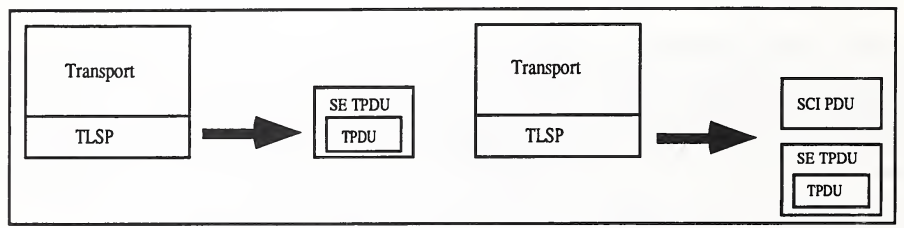
枠の中に 2 つの構成を左右に並べた図です。左は下部を「TLSP」とする「Transport」の枠から太い矢印が右へ出て、小さな「TPDU」の箱を内に持つ「SE TPDU」の箱を指しています。右も下部を「TLSP」とする「Transport」の枠から太い矢印が右へ出て、上下に分かれた 2 つの箱、上の「SCI PDU」と、下の「TPDU」を内に持つ「SE TPDU」を指しています。
Figure 5.14:3 Two different ways to include TLSP in the transport layer
図 5.14:3 TLSP をトランスポート層に含める 2 つの異なる方法
On the left side of Figure 5.14:3, TLSP is integrated with the transport protocol; therefore the TLSP entity is just encapsulating TPDUs. If the TLSP entity encapsulates a TPDU and the encapsulated TPDU never reaches the receiver, the sending transport entity retransmits the TPDU and the TLSP entity encapsulates the TPDU again. TLSP does not need to be aware of any retransmission mechanisms since it is integrated in the transport protocol. If a security encapsulated TPDU gets out of order, the receiving TLSP entity does not need to take any measures. The measures are taken by the transport entity when the TPDU is processed.
図 5.14:3 の左側では、TLSP はトランスポートプロトコルと統合されており、そのため TLSP エンティティは TPDU をカプセル化しているだけです。TLSP エンティティが TPDU をカプセル化し、カプセル化された TPDU が受信者に届かなかった場合、送信側のトランスポートエンティティが TPDU を再送し、TLSP エンティティが再び TPDU をカプセル化します。TLSP はトランスポートプロトコルに統合されているため、再送の仕組みを意識する必要はありません。セキュリティでカプセル化された TPDU の順序が乱れても、受信側の TLSP エンティティは何の対策も取る必要がありません。対策は、TPDU が処理されるときにトランスポートエンティティが取ります。
On the right side of Figure 5.14:3, the TLSP entity is issuing SCI PDUs which do not encapsulate a TPDU. This scheme makes TLSP more loosely coupled with transport and therefore it is not possible for TLSP to rely on the mechanisms of the transport protocol. If the network offers a connectionless service, there is no guarantee of delivery. Because the underlying network has no reliable delivery, TLSP must include retransmission and acknowledge mechanisms. This is a duplication of the transport functionality, a reinvention of transport at the bottom of itself. Despite all the disadvantages listed in this paragraph, this solution is the one adopted by ISO, see [ISO 10736/P].
図 5.14:3 の右側では、TLSP エンティティは、TPDU をカプセル化しない SCI PDU を発行しています。この方式では、TLSP はトランスポートとの結合がより緩くなるため、TLSP はトランスポートプロトコルの仕組みに依拠できません。ネットワークがコネクションレス型サービスを提供する場合、配送の保証はありません。基盤のネットワークに信頼できる配送がないため、TLSP は再送と確認応答の仕組みを含まなければなりません。これはトランスポートの機能の重複であり、自らの底にトランスポートを再発明することです。この項に挙げたすべての欠点にもかかわらず、この解決策は ISO が採用したものです。[ISO 10736/P] を参照してください。
When performing what [ISO 11577] calls asymmetric and exponential key exchanges, certificates are needed. No explanations are given in [ISO 11577] about the entities to be authenticated by using the certificates, holders of the certificates, etc. Are certificates as described in the Directory standards appropriate for use in the network layer? The certificates are described in ASN.1 which is supposed to be unknown below the presentation layer. If Directory certificates are allowed, they probably would be represented in the ASN.1 transfer syntax form. Examples given in the Authentication Framework [ISO 10181-2] of entities to be authenticated in the network layer are: subnetworks, network nodes and relays. Therefore it is assumed that those are the entities to be authenticated when an NLSP key exchange occurs.
[ISO 11577] が非対称および指数関数的な鍵交換と呼ぶものを行う場合、証明書が必要です。証明書を使って認証されるエンティティ、証明書の保有者などについては、[ISO 11577] には説明がありません。Directory 標準で説明されている証明書は、ネットワーク層での使用に適切でしょうか。証明書は、プレゼンテーション層より下では知られていないはずの ASN.1 で記述されています。Directory の証明書を認める場合、それらはおそらく ASN.1 転送構文の形式で表現されることになります。認証フレームワーク [ISO 10181-2] が挙げる、ネットワーク層で認証されるエンティティの例は、サブネットワーク、ネットワークノード、リレーです。したがって、NLSP の鍵交換が行われるときに認証されるのは、これらのエンティティであると想定されます。
5.15 KEY MANAGEMENT AS PART OF A LAYER PROTOCOL
5.15 レイヤープロトコルの一部としての鍵管理
A possibility is to convey key management information in the Connect Request (CR) and Connect Confirm (CC) TPDUs of the Transport protocol, see A Key Management Algorithm For Secure Communication In Open Systems Interconnection Architecture [RAMA90]. The protection parameters included in the variable part field of the CR and CC TPDUs headers would contain the information.
一つの可能性は、鍵管理情報をトランスポートプロトコルの Connect Request（CR）TPDU と Connect Confirm（CC）TPDU で運ぶことです。A Key Management Algorithm For Secure Communication In Open Systems Interconnection Architecture [RAMA90] を参照してください。CR と CC の TPDU ヘッダーの可変部フィールドに含まれる保護パラメーターが、その情報を含むことになります。
![Diagram in a frame titled "CR TPDU". A row of fields: "LI", "CDT", "DST-REF", "SRC-REF", "CLASS OPTION", "Variable Part", "User Data". Below the row, two-headed dimension arrows: "Fixed Part" spans CDT through CLASS OPTION; "Variable Part" spans the Variable Part field; "Header" spans CDT through the Variable Part field. A line from the top of the Variable Part field runs up, left and down, ending in an arrow that points to a note: "Protection parameters (not used if class 0 is preferred class)", "This parameter is user defined", "Parameter code: 1100 0101", "Parameter length: user defined", "Parameter value: user defined".](assets/ir-4983/p0093-figure-01.png)
「CR TPDU」と題した、枠で囲んだ図です。「LI」「CDT」「DST-REF」「SRC-REF」「CLASS OPTION」「Variable Part」「User Data」の欄が横に並んでいます。欄の下には両向きの寸法線があり、「Fixed Part」（固定部）が CDT から CLASS OPTION まで、「Variable Part」（可変部）が Variable Part の欄の幅、「Header」（ヘッダー）が CDT から Variable Part の欄までを示しています。Variable Part の欄の上から出た線が上・左・下と回り込み、矢印で次の注記を指しています。「Protection parameters (not used if class 0 is preferred class)」（保護パラメーター。クラス 0 が優先クラスなら使わない）、「This parameter is user defined」（このパラメーターは利用者が定義する）、「Parameter code: 1100 0101」（パラメーターコード）、「Parameter length: user defined」（パラメーター長：利用者が定義）、「Parameter value: user defined」（パラメーター値：利用者が定義）。
Figure 5.15:1 Structure of CR TPDU
図 5.15:1 CR TPDU の構造
If this solution is adopted the key exchange is done when the transport connection is established. A big problem is the limitation in size of the information that can be included in the variable part field. [RAMA90] mentions that the CR TPDU header can consist of 254 octets. However, the transport protocol definition [ISO 8073] specifies that the length of the CR TPDU shall not exceed 128 octets, despite the fact that the maximal possible value of the length indicator is 254. From the available 128 octets, those needed for the transport protocol control information have to be subtracted. The remaining octets can be used to carry key exchange information. Certificates, and especially certification paths, as described in the Directory Authentication Framework contain much more information than can be conveyed in the variable parts field of CR and CC TPDUs. The handshaking procedure explained in [RAMA90] can only be two-way, which may be a severe limitation. For example, the two way exchanges explained in the the Directory Authentication Framework [ISO 9594-8] and [RAMA90] have in common that they use timestamps. Therefore, the algorithm designer must choose a specific solution and maybe not the solution he or she prefers, because the preferred solution cannot be realized by a two-way handshake procedure. The CR and CC TPDUs must be sent in the clear; this may not be acceptable. For example, ISODE [ROSE90] uses the TSAP ID parameter, included in the variable part of the header, to determine the application. The TSAP ID parameter could provide useful information to the one passively monitoring the traffic and other approaches offer protection for this information.
この解決策を採用する場合、鍵交換はトランスポートコネクションが確立されるときに行われます。大きな問題は、可変部フィールドに含められる情報のサイズに制限があることです。[RAMA90] は、CR TPDU ヘッダーは 254 オクテットで構成できると述べています。しかし、トランスポートプロトコルの定義 [ISO 8073] は、長さ指示子の最大値が 254 であるにもかかわらず、CR TPDU の長さが 128 オクテットを超えてはならないと規定しています。利用可能な 128 オクテットから、トランスポートプロトコル制御情報に必要な分を差し引かなければなりません。残りのオクテットを、鍵交換の情報を運ぶために使えます。Directory Authentication Framework で説明されている証明書、特に認証パスには、CR と CC の TPDU の可変部フィールドで運べる量よりはるかに多くの情報が含まれます。[RAMA90] で説明されているハンドシェイクの手順は 2 ウェイにしかできず、これは深刻な制限となる場合があります。たとえば、Directory Authentication Framework [ISO 9594-8] と [RAMA90] で説明されている 2 ウェイの交換は、タイムスタンプを使うという点で共通しています。したがって、アルゴリズムの設計者は特定の解決策を選ばなければならず、好ましい解決策が 2 ウェイのハンドシェイク手順では実現できないために、好む解決策を選べないかもしれません。CR と CC の TPDU は平文で送らなければならず、これは受け入れられないかもしれません。たとえば、ISODE [ROSE90] は、ヘッダーの可変部に含まれる TSAP ID パラメーターを使ってアプリケーションを判断します。TSAP ID パラメーターは、トラフィックを受動的に監視する者に有用な情報を与える可能性があり、他の方法ではこの情報に対する保護が提供されます。
5.16 ADDING A NEW COMPONENT TO THE NETWORK
5.16 ネットワークへの新しい構成要素の追加
When a new component is added to the network how can it obtain its key material? By key material we mean:
新しい構成要素がネットワークに追加されるとき、それはどのようにして自身の鍵素材を得られるでしょうか。ここでの鍵素材とは、次を指します。
•in an asymmetric form of key management the private key and public key, the latter is usually bound with an identity in the form of a certificate;
•非対称形式の鍵管理では、秘密鍵と公開鍵。後者は通常、証明書の形で識別情報と結び付けられます。
•in a symmetric form of key management the Key Encrypting Key.
•共通鍵形式の鍵管理では、Key Encrypting Key。
The following paragraphs only discuss asymmetric considerations. Symmetric key management has been used for many years so organizations have well established procedures to solve the problem.
以下の各項では、非対称形式についての考慮事項だけを論じます。共通鍵形式の鍵管理は長年使われてきたため、組織にはこの問題を解決するための確立した手順があります。
This issue is often not addressed in standardization work other than by a paragraph saying that credentials are established out of band. It can be regarded to be part of an OSI key management infrastructure but not of an OSI key management protocol. As in the case of rekeying; there may be an advantage if it can be automatized. Little in this area can be found in the literature. One often cited article is Initialization Of Cryptographic Variables In A Network With A Large Number Of Terminals [MATY86].
この課題は、標準化作業では、資格情報は帯域外で確立されると述べる一文を除いて、扱われないことが多くあります。これは OSI 鍵管理インフラストラクチャの一部とみなせますが、OSI 鍵管理プロトコルの一部ではありません。再鍵の場合と同様に、自動化できれば利点があるかもしれません。この分野について文献で見つかるものは少ないです。よく引用される論文の一つは、Initialization Of Cryptographic Variables In A Network With A Large Number Of Terminals [MATY86] です。
5.16.1 Adding a new component in SDNS
5.16.1 SDNS における新しい構成要素の追加
In SDNS, a seed key is used for this purpose. With a seed key, an SDNS component is allowed to communicate with the KMC but not with another SDNS component. The article SDNS Services And Architecture [NELS87] mentions that the seed key initially is physically distributed from the KMC. When the newly added component contacts the KMC, the seed key is converted to an operational key. The article does not describe in detail what other kinds of information are delivered from the KMC to the new component.
SDNS では、この目的のためにシード鍵が使われます。シード鍵があれば、SDNS の構成要素は KMC と通信できますが、他の SDNS の構成要素とは通信できません。論文 SDNS Services And Architecture [NELS87] は、シード鍵は最初に KMC から物理的に配布されると述べています。新しく追加された構成要素が KMC に接続するとき、シード鍵は運用鍵に変換されます。この論文は、KMC から新しい構成要素に、他にどのような種類の情報が配送されるかを詳しく説明していません。
5.16.2 Public key registration
5.16.2 公開鍵の登録
The article Initialization of Cryptographic Variables In A Network With A Large Number Of Terminals [MATY86] describes how the public key of a terminal can be registered at a KDC. The method described is general and can be used to register the public key of entities other than terminals. The method can be used to register the public key of a new component added to a network. The public key is registered by using the network to transmit the needed data. In the scenario described in [MATY86], a terminal has a cryptographic facility (CF) where the private and public keys are generated. The private key never leaves the CF only the public key is displayed, so it can be distributed by security personnel. A prerequisite is that the public key of the KDC and the terminal identification number (TID) are available in the CF. The entity responsible to carry out the steps needed to register the public key is called the terminal initializer. The security of the procedure rests on the assumption that the terminal initializer complies with the issued instructions and understands that failure to comply with these instructions may result in an adversary successfully registering a key with the KDC. [MATY86] mentions that the terminal initializer has no responsibility for transporting keys, public or private, or for installing private keys by entering them directly into a cryptographic device. Therefore, the terminal initializer is not a courier and does not perform the functions of a courier. The one who might perform the duties of a terminal initializer are: a terminal user, terminal owner, manager or member of the local site security. The terminal initializer is provided with a set of instructions outlining the terminal initialization procedure. The terminal initializer is also provided with two expiration times T1 and T2, respectively. Prior to the first time T1, the public key of the terminal must be temporarily registered at the KDC under the designated TID. After the expiration of the second time, T2, the public key is considered to be permanently registered. If an invalidation occurs after T2, the identity must be proven. After T2 and upon request a certificate can be issued for the TID, whose public key has been succesfully registered.
論文 Initialization of Cryptographic Variables In A Network With A Large Number Of Terminals [MATY86] は、端末の公開鍵を KDC にどのように登録できるかを説明しています。説明されている方法は一般的であり、端末以外のエンティティの公開鍵の登録にも使えます。この方法は、ネットワークに追加された新しい構成要素の公開鍵の登録にも使えます。必要なデータを送信するためにネットワークを使って、公開鍵を登録します。[MATY86] で説明されているシナリオでは、端末は、秘密鍵と公開鍵が生成される暗号機能（CF）を持っています。秘密鍵は CF から出ることはなく、公開鍵だけが表示されるため、セキュリティ担当者が配布できます。前提条件は、KDC の公開鍵と端末識別番号（TID）が CF で利用できることです。公開鍵の登録に必要な手順を実行する責任を負うエンティティは、端末イニシャライザーと呼ばれます。この手順のセキュリティは、端末イニシャライザーが発行された指示に従い、これらの指示に従わないと、敵対者が KDC への鍵の登録に成功する結果になりかねないことを理解している、という前提に基づいています。[MATY86] は、端末イニシャライザーは、公開鍵であれ秘密鍵であれ鍵を輸送する責任も、秘密鍵を暗号デバイスに直接入力して導入する責任も負わないと述べています。したがって、端末イニシャライザーは運搬者ではなく、運搬者の機能も果たしません。端末イニシャライザーの職務を果たす可能性があるのは、端末ユーザー、端末の所有者、マネージャー、またはローカルサイトのセキュリティの構成員です。端末イニシャライザーには、端末の初期化手順を示す一連の指示が与えられます。端末イニシャライザーには、2 つの有効期限 T1 と T2 もそれぞれ与えられます。最初の時刻 T1 より前に、端末の公開鍵を、指定された TID の下で KDC に一時的に登録しなければなりません。2 番目の時刻 T2 の満了後、公開鍵は恒久的に登録されたものとみなされます。T2 の後に無効化が行われる場合、識別情報を証明しなければなりません。T2 の後、要求に応じて、公開鍵が正常に登録された TID に対して証明書を発行できます。
The registration procedure can be divided into six separate steps. It is assumed that the initialization instructions are received at time T0. The following description of the different steps refers to the state of the KDC, the state diagrams of both the KDC and the terminal, whose public key is registered, are described in [MATY86].
登録手順は、6 つの別々のステップに分けられます。初期化の指示は時刻 T0 に受け取ると仮定します。以下では、さまざまなステップについて、KDC の状態を参照しながら説明します。公開鍵が登録される端末と KDC の両方の状態遷移図は、[MATY86] に記載されています。

枠で囲んだ時間軸の図です。右向きの矢印の横軸に「T0」「T1」「T2」（数字は下付き）の 3 つの時点があり、それぞれ軸から縦線が立っています。T0 から T1 までの両向きの矢印に「Time period for completing registration process」（登録手続きを完了するための期間）と書かれています。その上の T0 から T2 までの両向きの矢印には「Time period during which TID can be invalidated without proof of ID」（ID の証明なしに TID を無効にできる期間）と書かれています。T2 の右には「Registration process complete TID invalidation only with proof of ID」（登録手続きの完了。TID の無効化は ID の証明がある場合のみ）とあります。
Figure 5.16:1 Times in public key registration procedure
図 5.16:1 公開鍵登録手順における時刻
Step 1: This step concerns the notification letters which the terminal initializer receives from the KDC.
ステップ 1: このステップは、端末イニシャライザーが KDC から受け取る通知書に関するものです。
Step 2: The terminal initializer causes the generation of the public and private keys by using CF.
ステップ 2: 端末イニシャライザーは、CF を使って公開鍵と秘密鍵の生成を行わせます。
Step 3: A public key registration message containing the TID, public key, and time variant data is sent to the KDC. The KDC sends a response message containing the state of the KDC, the outcome of processing the public key registration message, the public key registered or temporarily registered for the requested TID, the requested TID and some time variant data. A digital signature is calculated on the response message. By checking the digital signature the requestor can be convinced that the message originates from the KDC and has been received without modification.
ステップ 3: TID、公開鍵、時変データを含む公開鍵登録メッセージが KDC に送られます。KDC は、KDC の状態、公開鍵登録メッセージの処理結果、要求された TID に対して登録または一時登録された公開鍵、要求された TID、および何らかの時変データを含む応答メッセージを送ります。応答メッセージには、デジタル署名が計算されます。デジタル署名を確認することで、要求者は、メッセージが KDC から送られ、改変されずに受信されたことを確信できます。
Step 4: The terminal initializer performs a verification that the terminal´s public key has been registered at the KDC following the second expiration date. An ID verification message is sent to the KDC containing the TID and time variant data. The response from the KDC contains the TID, optionally expiration times T1 and T2, the public key registered or temporarily registered, and some time variant data. A digital signature is computed on the response message. Alternatively, the KDC could return a certificate; the certificate would also serve as proof to the terminal that the public key has been registered.
ステップ 4: 端末イニシャライザーは、2 番目の有効期限の後に、端末の公開鍵が KDC に登録されたことの検証を行います。TID と時変データを含む ID 検証メッセージが KDC に送られます。KDC からの応答には、TID、場合により有効期限 T1 と T2、登録または一時登録された公開鍵、および何らかの時変データが含まれます。応答メッセージには、デジタル署名が計算されます。あるいは、KDC が証明書を返す場合もあり、その証明書は、公開鍵が登録されたことの端末への証拠としても役立ちます。
Step 5: The terminal can invalidate the TID without proof of identity. This step can only occur when the current date and time is prior to the second expiration date T2. The ID validation message contains the TID and some time variant data. The response message contains the state of the KDC, the outcome of processing the ID invalidation message, and the same time variant data as was included in the request message. A digital signature is computed on the response message.
ステップ 5: 端末は、識別情報の証明なしに TID を無効化できます。このステップは、現在の日時が 2 番目の有効期限 T2 より前の場合にのみ行えます。ID 無効化メッセージには、TID と何らかの時変データが含まれます。応答メッセージには、KDC の状態、ID 無効化メッセージの処理結果、および要求メッセージに含まれていたものと同じ時変データが含まれます。応答メッセージに対してデジタル署名が計算されます。
Step 6: This step is used for ID invalidation with proof of identity to minimize potential disruption and denial of service. This step must be performed whenever the current date and time is past the second expiration time, T2.
ステップ 6: このステップは、潜在的な混乱とサービス拒否を最小限に抑えるため、識別情報の証明を伴う ID の無効化に使われます。このステップは、現在の日時が 2 番目の有効期限 T2 を過ぎているときは、常に行わなければなりません。
The article also describes the different error situations that can occur.
この論文は、起こりうるさまざまなエラー状況も説明しています。
5.17 COMMON KEY MANAGEMENT PROTOCOL
5.17 共通鍵管理プロトコル
Can the same protocol provide both an asymmetric and symmetric form of key management, or must two separate protocols coexist? It is, of course, an advantage if the same protocol provides both forms of key management. One way to achieve this is to separate the first phase, i.e., the key establishment phase according to the class of cryptographic system desired. Later phases could be in common.
同じプロトコルで非対称形式と共通鍵形式の両方の鍵管理を提供できるでしょうか。それとも、2 つの別々のプロトコルを共存させなければならないでしょうか。同じプロトコルが両方の形式の鍵管理を提供できれば、もちろん利点があります。これを実現する一つの方法は、最初のフェーズ、すなわち鍵確立フェーズを、希望する暗号システムの種類に応じて分けることです。後のフェーズは共通にできます。
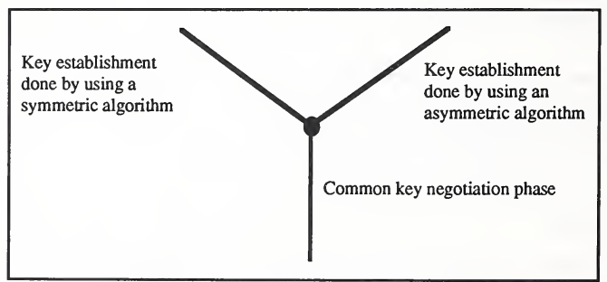
枠で囲んだ Y 字形の図です。上の 2 本の枝が 1 つの点で合わさります。左の枝には「Key establishment done by using a symmetric algorithm」（共通鍵アルゴリズムを使って行う鍵確立）、右の枝には「Key establishment done by using an asymmetric algorithm」（公開鍵アルゴリズムを使って行う鍵確立）と書かれています。合流点から 1 本の縦線が下へ続き、「Common key negotiation phase」（共通鍵の交渉段階）と書かれています。
Figure 5.17:1 Divided first common second phase
図 5.17:1 第 1 フェーズを分け、第 2 フェーズを共通化
The IEEE 802.10 working group in their development of [IEEE P802.10C] has taken this direction.
IEEE 802.10 ワーキンググループは、[IEEE P802.10C] の策定で、この方向を採っています。
5.18 THE CONCEPT OF SECURITY ASSOCIATION
5.18 セキュリティアソシエーションの概念
Key management is responsible for the creation, updating and deletion of security associations. This section is related to the next section 5.19 which explains more in detail the management aspect, traffic encryption key substitution. The term key update is used in this section. As we will see in the next section, traffic encryption keys can be substituted by employing different methods. Key Update is one of the methods described
鍵管理は、セキュリティアソシエーションの作成、更新、削除に責任を負います。本節は次の 5.19 節に関連しており、5.19 節では、管理の側面であるトラフィック暗号化鍵の置換を詳しく説明します。本節では鍵更新という用語を使います。次節で見るように、トラフィック暗号化鍵は異なる方法で置換できます。Key Update は、説明されている方法の一つです。
The notion of a security association originates from SDNS and was originally called a cryptographic association. The article Architectural Model Of The SDNS Key Management Protocol [LAMB88] gives the following explanation of cryptographic association: "A cryptographic association consists of a Traffic Encryption Key (TEK) and associated attributes that determine the usage of the TEK." The cryptographic association is initiated by the key manager. When the key management application association is closed the cryptographic association survives and continues to exist independently. When TLSP is used on a per (transport) connection basis the cryptographic association applies to only a single connection and may not be reused on another concurrent or subsequent connection. The key manager may either immediately end the cryptographic association when the connection closes, or allow it to expire at the end of its cryptoperiod. When TLSP is used on a per NSAP basis, the cryptographic association applies to multiple (transport) connections, both concurrent and consecutive. The key manager may either allow the cryptographic association to expire at the end of its cryptoperiod, or update the traffic encryption key(s) for the cryptographic association and thereby obtain a new cryptoperiod to extend the cryptographic association.
セキュリティアソシエーションの概念は SDNS に由来し、元は暗号アソシエーションと呼ばれていました。論文 Architectural Model Of The SDNS Key Management Protocol [LAMB88] は、暗号アソシエーションを次のように説明しています。「暗号アソシエーションは、Traffic Encryption Key（TEK）と、TEK の使用を決定する関連する属性で構成されます」。暗号アソシエーションは鍵マネージャーによって開始されます。鍵管理のアプリケーションアソシエーションが閉じられても、暗号アソシエーションは存続し、独立して存在し続けます。TLSP を（トランスポート）コネクションごとに使う場合、暗号アソシエーションは単一のコネクションにのみ適用され、同時または後続の別のコネクションで再利用してはなりません。鍵マネージャーは、コネクションが閉じられたときに暗号アソシエーションをただちに終了させてもよいですし、暗号期間の終わりに期限切れになるに任せてもよいです。TLSP を NSAP ごとに使う場合、暗号アソシエーションは、同時のものも連続するものも含め、複数の（トランスポート）コネクションに適用されます。鍵マネージャーは、暗号アソシエーションを暗号期間の終わりに期限切れになるに任せてもよいですし、暗号アソシエーションのトラフィック暗号化鍵を更新して、新しい暗号期間を得ることで暗号アソシエーションを延長してもよいです。
Originally, a security protocol entity identified a cryptographic association by using a key identifier (KID). The value of the KID is established by the key manager. In its simplest form, the KID could be an index into a table where the associated attributes are stored. When receiving a security protected PDU, the KID is extracted from the PDU. The KID is then used as index when retrieving the attributes from the table. By applying the right attributes the PDU could be properly processed. A problem with the described scheme is the duration of the cryptoperiod. In SDNS key management the cryptoperiod is not negotiated. Therefore, one of two communicating parties could have a longer cryptoperiod than the other. The party with the longer cryptoperiod could be sending PDUs which could not be processed on the other end, since the cryptographic association cannot be recognized any more. In particular, this could happen if the two communicating security protocol entities belong to different security domains. [SDNS 90-4262] provides the Kurq (Key Update Request) and Kurs (Key Update Response) PDUs to solve the problem. The one with the shorter cryptoperiod can initiate a Key Update. It seems that for a very short period of time, before the key manager informs the security protocol (SP) entity that the KID has been changed, it would be possible to use a KID that the peer has already changed. However, there is a cryptofacility at the system, and when the SP entity wants to perform an encryption with a key associated with a certain KID, the cryptofacility could inform the SP-entity that the KID is not longer valid. The cryptofacility can act in the following way:
当初、セキュリティプロトコルエンティティは、鍵識別子（KID）を使って暗号アソシエーションを識別していました。KID の値は鍵マネージャーによって確立されます。最も単純な形では、KID は、関連する属性が格納されているテーブルへのインデックスにできます。セキュリティ保護された PDU を受信すると、KID が PDU から取り出されます。次に、その KID をインデックスとして、テーブルから属性を取り出します。適切な属性を適用することで、PDU を正しく処理できます。この方式の問題は、暗号期間の長さです。SDNS の鍵管理では、暗号期間はネゴシエーションされません。そのため、通信する 2 つの当事者の一方が、他方より長い暗号期間を持つ可能性があります。暗号期間が長いほうの当事者は、相手側で処理できない PDU を送る可能性があります。暗号アソシエーションをもはや認識できないためです。特に、通信する 2 つのセキュリティプロトコルエンティティが異なるセキュリティドメインに属する場合に、これが起こりえます。[SDNS 90-4262] は、この問題を解決するために Kurq（Key Update Request）PDU と Kurs（Key Update Response）PDU を提供しています。暗号期間が短いほうが Key Update を開始できます。鍵マネージャーが、KID が変更されたことをセキュリティプロトコル（SP）エンティティに知らせる前の、ごく短い期間には、ピアがすでに変更した KID を使うことが可能なようです。しかし、システムには暗号機能（cryptofacility）があり、SP エンティティが特定の KID に関連づけられた鍵で暗号化を行いたいとき、暗号機能は、その KID がもはや有効でないことを SP エンティティに知らせることができます。暗号機能は次のように動作できます。
1.The key manager informs the cryptofacility that a key update has to take place. The Key Update request is received from the peer key manager.
1.鍵マネージャーは、鍵更新を行わなければならないことを暗号機能に知らせます。Key Update request は、ピアの鍵マネージャーから受け取ります。
2.The cryptofacility transforms the existing traffic encryption keys and returns the KID associated with the new keys. The new KID can be referenced by the key manager.
2.暗号機能は、既存のトラフィック暗号化鍵を変換し、新しい鍵に関連づけられた KID を返します。新しい KID は、鍵マネージャーが参照できます。
3.The SP entity wants to perform an encryption using the old KID. The SP entity does not know that the remote key manager has initiated a key update.
3.SP エンティティは、古い KID を使って暗号化を行いたいと考えます。SP エンティティは、リモートの鍵マネージャーが鍵更新を開始したことを知りません。
4.The cryptofacility returns an error message (maybe indicating key no longer valid).
4.暗号機能は、エラーメッセージ（鍵がもはや有効でないことを示す場合があります）を返します。
5.The SP entity requests a replacement KID from the key manager.
5.SP エンティティは、鍵マネージャーに代わりの KID を要求します。
6.The key manager informs the SP entity about the new KID.
6.鍵マネージャーは、新しい KID を SP エンティティに知らせます。
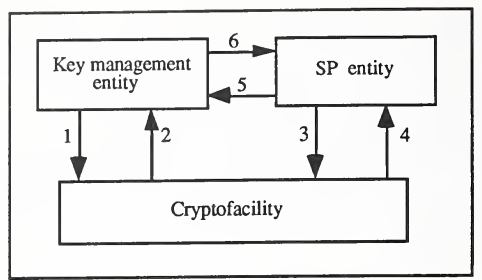
枠で囲んだ図です。左上に「Key management entity」（鍵管理実体）、右上に「SP entity」（SP 実体）の枠があり、両方の下に横長の「Cryptofacility」（暗号機能）の枠があります。番号付きの一方向の矢印は、1 が鍵管理実体から暗号機能へ下向き、2 が暗号機能から鍵管理実体へ上向き、3 が SP 実体から暗号機能へ下向き、4 が暗号機能から SP 実体へ上向き、5 が SP 実体から鍵管理実体へ、6 が鍵管理実体から SP 実体へ向かっています。
Figure 5.18:1 Key Update scenario
図 5.18:1 Key Update のシナリオ
In SDNS the key management entity uses the Nokey PDU to inform its peer that the KID used cannot be recognized by a security protocol entity.
SDNS では、鍵管理エンティティは、使われた KID をセキュリティプロトコルエンティティが認識できなかったことをピアに知らせるために、Nokey PDU を使います。
The Lower Security Guidelines document [ISO/SC6 6957] uses a different terminology; the term security association is used instead of cryptographic association. The NLSP standard [ISO 11577] has a security association identifier (SAID) instead of key identifier. [ISO/SC6 6957] gives the following explanation of security association:
Lower Security Guidelines 文書 [ISO/SC6 6957] は異なる用語を使っており、暗号アソシエーションの代わりにセキュリティアソシエーションという用語が使われます。NLSP 標準 [ISO 11577] は、鍵識別子の代わりに security association identifier（SAID）を持ちます。[ISO/SC6 6957] は、セキュリティアソシエーションを次のように説明しています。
In order to protect an instance of communication (a connectionless SDU or a connection) a collection of information (keys and other attributes needed to control the operation of security) has to be established between the communicating entities. This collection of information is referred to as a security association (SA).
通信インスタンス（コネクションレス型の SDU またはコネクション）を保護するには、通信するエンティティの間で、情報の集合（鍵と、セキュリティの動作を制御するために必要な他の属性）を確立しなければなりません。この情報の集合を、セキュリティアソシエーション（SA）と呼びます。
Using the term security association instead of cryptographic association emphasizes the fact that the relationship includes more than just cryptographic keys.
暗号アソシエーションの代わりにセキュリティアソシエーションという用語を使うことで、この関係に暗号鍵だけでなくそれ以上のものが含まれるという事実が強調されます。
NLSP provides the possibility to establish a security association on-line (it is mentioned earlier that key management is included in NLSP [ISO 11577]). The key management part of [ISO 11577] does not directly address how to perform a key substitution without having to transfer key material. [ISO 11577] mentions that for NLSP-CO, keys can be substituted during the lifetime of a security association. The document is more oriented towards the approach where new key material is transferred than the transformation of existing keys (?).
NLSP は、セキュリティアソシエーションをオンラインで確立する可能性を提供します（鍵管理が NLSP [ISO 11577] に含まれることは前に述べました）。[ISO 11577] の鍵管理の部分は、鍵素材を転送せずに鍵の置換を行う方法を直接は扱っていません。[ISO 11577] は、NLSP-CO では、セキュリティアソシエーションの存続期間中に鍵を置換できると述べています。この文書は、既存の鍵の変換よりも、新しい鍵素材を転送する方法を重視しています（？）。
The current SILS key management draft, [IEEE P802.10C], provides service primitives to update and delete a security association. By updating a security association a new association is created with the same characteristics as a current one. For example, there is no need to negotiate about some of the attributes used by the security protocol. Since [IEEE P802.10C] has not yet reached a mature status, it has not been ultimately decided whether the key material of the updated security association is going to be created from existing key material. However, the current version of [IEEE P802.10C] has followed the approach to derive new keys from existing ones. The intention is to use this feature in conjunction with TLSP. When TLSP is used on a per connection basis the transport sequence number may begin to cycle. In order to resist replay attacks, new traffic encryption keys must be created. For this event, that most likely will occur very rarely, the Update Service Association primitive is provided. In SILS key management if two parties have different cryptoperiods, the party with the shorter period can issue an update of the security association before the period expires. When the new security association is created, the party whose cryptoperiod is going to expire can delete the old security association. The peer can be notified about the deletion through the use of the Delete Security Association service primitive.
現在の SILS 鍵管理ドラフト [IEEE P802.10C] は、セキュリティアソシエーションを更新および削除するサービスプリミティブを提供しています。セキュリティアソシエーションを更新すると、現在のものと同じ特性を持つ新しいアソシエーションが作成されます。たとえば、セキュリティプロトコルが使う属性の一部については、ネゴシエーションする必要がありません。[IEEE P802.10C] はまだ成熟した状態に達していないため、更新されたセキュリティアソシエーションの鍵素材を既存の鍵素材から作成することになるかどうかは、最終的には決まっていません。ただし、[IEEE P802.10C] の現在の版は、既存の鍵から新しい鍵を導出する方法を採っています。この機能を TLSP と組み合わせて使うことが意図されています。TLSP をコネクションごとに使う場合、トランスポートのシーケンス番号が循環し始める場合があります。リプレイ攻撃に耐えるためには、新しいトラフィック暗号化鍵を作成しなければなりません。この事象は、ほとんどの場合ごくまれにしか起こりませんが、そのために Update Service Association プリミティブが提供されています。SILS の鍵管理では、2 つの当事者が異なる暗号期間を持つ場合、暗号期間が短いほうの当事者は、期間が満了する前にセキュリティアソシエーションの更新を発行できます。新しいセキュリティアソシエーションが作成されたとき、暗号期間が満了しようとしている当事者は、古いセキュリティアソシエーションを削除できます。ピアには、Delete Security Association サービスプリミティブを使って削除を通知できます。
There are other views on whether the two entities can have different cryptoperiods. [ISO 11166] mentions that two parties must have the same cryptoperiod. [ISO 11577] assumes the two parties have preestablished An Agreed Set of Security Rules (ASSR) where the cryptoperiod is defined.
2 つのエンティティが異なる暗号期間を持てるかどうかについては、他の見解もあります。[ISO 11166] は、2 つの当事者が同じ暗号期間を持たなければならないと述べています。[ISO 11577] は、2 つの当事者が、暗号期間が定義された An Agreed Set of Security Rules（ASSR）を事前に確立していることを前提としています。
5.19 SUBSTITUTION OF TRAFFIC ENCRYPTION KEYS
5.19 トラフィック暗号化鍵の置換
How should the traffic encryption keys be substituted for a security association? The key manager is responsible for performing the key substitution.
セキュリティアソシエーションのトラフィック暗号化鍵は、どのように置換するのでしょうか。鍵の置換を行う責任は、鍵マネージャーにあります。
Keys need to be substituted because:
鍵を置換する必要があるのは、次の理由によります。
•The cryptoperiod of the keys expires. A cryptoperiod represents, the defined period of time for which a traffic encryption key can be used or, the number of PDUs it is allowed to encrypt/decrypt.
•鍵の暗号期間が満了します。暗号期間は、トラフィック暗号化鍵を使える定義された期間、または暗号化／復号を許される PDU の数を表します。
•The transport sequence numbers, used to provide connection integrity when TLSP is used on a per connection basis, may begin to cycle. The traffic encryption keys must be substituted so that TPDUs sent previously in the transport connection cannot be replayed.
•TLSP をコネクションごとに使う場合にコネクションの完全性を提供するために使われるトランスポートのシーケンス番号が、循環し始める場合があります。トランスポートコネクションで以前に送られた TPDU をリプレイできないように、トラフィック暗号化鍵を置換しなければなりません。
Traffic encryption keys may be substituted in three different ways:
トラフィック暗号化鍵は、3 つの異なる方法で置換できる場合があります。
•Through the early creation of other traffic encryption keys.
•他のトラフィック暗号化鍵を早い段階で作成しておく方法。
•Through update - the generation of new key material from either the current traffic encryption key or information exchanged previously to form the current TEK.
•更新による方法。現在のトラフィック暗号化鍵、または現在の TEK を形成するために以前に交換された情報から、新しい鍵素材を生成します。
•Through replacement - the generation of new key material through information contained in further exchanges between key managers.
•交換による方法。鍵マネージャー間のさらなる交換に含まれる情報から、新しい鍵素材を生成します。
The first method to substitute the traffic encryption keys avoids communication between the key managers when the keys need to be substituted. Traffic encryption keys are created in advance, during the key substitution procedure a key manager substitutes the traffic encryption keys with other traffic encryption keys already created. The drawback of this solution is the cryptoperiod. The cryptoperiod of the already created traffic encryption keys may expire before they are used. Local security policy determines when the cryptoperiod starts, at the beginning of key usage or at key creation time. Another problem with this method is the ability to store the keys in a secure manner. They must not be compromised before their usage. The advantage of this method is that the key substitution can be performed fast.
トラフィック暗号化鍵を置換する最初の方法は、鍵を置換する必要があるときの鍵マネージャー間の通信を避けます。トラフィック暗号化鍵は事前に作成され、鍵の置換手順の間、鍵マネージャーは、トラフィック暗号化鍵を、すでに作成されている他のトラフィック暗号化鍵に置換します。この解決策の欠点は暗号期間です。すでに作成されているトラフィック暗号化鍵の暗号期間は、使われる前に満了する場合があります。暗号期間がいつ始まるか（鍵の使用開始時か、鍵の作成時か）は、ローカルのセキュリティポリシーが決めます。この方法のもう一つの問題は、鍵を安全な方法で保管できるかどうかです。鍵は使用前に危殆化してはなりません。この方法の利点は、鍵の置換を高速に行えることです。
The second and third methods are based on the interactions of the key managers when the traffic encryption keys need to be substituted. When the key manager resides in the application layer, one drawback is that many associations which are time consuming to create must be established.
2 番目と 3 番目の方法は、トラフィック暗号化鍵を置換する必要があるときの鍵マネージャーの相互作用に基づきます。鍵マネージャーがアプリケーション層にある場合、一つの欠点は、作成に時間のかかる多数のアソシエーションを確立しなければならないことです。
The idea behind the second key substitution method is to perform an efficient key substitution by updating the traffic encryption keys. In order to achieve this, existing key material may be used to create the new traffic encryption keys by applying a function:
2 番目の鍵置換方法の背後にある考え方は、トラフィック暗号化鍵を更新することで効率的な鍵置換を行うことです。これを実現するために、既存の鍵素材を使って、関数を適用することで新しいトラフィック暗号化鍵を作成する場合があります。
new-key = key-update-function (old-key).
new-key = key-update-function (old-key).
In a commercial environment where no assumptions can be made about the public exposure of the algorithms, this procedure has a drawback. If the existing keys are compromised and the update algorithm is known, the future keys are also compromised. Another solution is to reemploy unused portions of the key material. For instance, a Diffie-Hellman exchange creates a long string where only parts of the string are needed for the initial key material. When a key update occurs unused parts of the string could be taken.
アルゴリズムが公開されるかどうかについて何も前提を置けない商用環境では、この手順には欠点があります。既存の鍵が危殆化し、更新アルゴリズムが知られている場合、将来の鍵も危殆化します。別の解決策は、鍵素材の未使用の部分を再利用することです。たとえば、Diffie-Hellman 交換は長い文字列を作成しますが、最初の鍵素材にはその文字列の一部しか必要ありません。鍵更新が起こるとき、文字列の未使用の部分を使うことができます。
When the third method is employed, new traffic encryption key material is created. The new key material is independent of the previous one. For example, new key material can be created by doing a Diffie-Hellman key exchange. The old traffic encryption keys are substituted with new ones created by the key exchange. It is time consuming, especially if it is done in software. What impact will this procedure have on the connections established where the security protocol resides? A transport protocol [ISO 8073] entity can send Acknowledgement TPDUs in order to keep a transport connection open while no DT PDUs are sent. Note that this is listed as a threat in the article Security Mechanisms In A Transport Layer Protocol [VOYD84]. By sending AK-TPDUs, the inactivity timer is prevented from expiring, so it should be possible to do a key replacement and still keep the associations of the security protocol open. The threat described in [VOYD84] is that an intruder can record two AK TPDUs sent in each direction. Thereafter the intruder can discard all TPDUs and play back the recorded AK TPDUs. Thus, the inactivity timer is prevented from expiring. Another solution that has been mentioned when TLSP is used, is to close the transport connection and open a new connection when the key replacement or key updating is done. If the transport connection has to be closed and reopened, which entity has the responsibility to perform that? If it is the transport user, responsibility lies with the session layer. The question is how to inform session that the connection should be closed and after key substitution has occurred reopened. Another question is whether this procedure is prohibited by the Security Architecture 7498/2 [ISO 7498-2], which states that no security services can be placed in the session layer.
3 番目の方法を採る場合、新しいトラフィック暗号化鍵素材が作成されます。新しい鍵素材は、以前のものから独立しています。たとえば、新しい鍵素材は、Diffie-Hellman 鍵交換を行うことで作成できます。古いトラフィック暗号化鍵は、鍵交換で作成された新しいものに置換されます。これは、特にソフトウェアで行う場合、時間がかかります。この手順は、セキュリティプロトコルがある層で確立されたコネクションにどのような影響を与えるでしょうか。トランスポートプロトコル [ISO 8073] のエンティティは、DT PDU が送られていない間、トランスポートコネクションを開いたままにしておくために、Acknowledgement TPDU を送れます。なお、これは論文 Security Mechanisms In A Transport Layer Protocol [VOYD84] では脅威として挙げられています。AK-TPDU を送ることで、非アクティブタイマーが満了しないようにされるため、鍵の交換を行いつつ、セキュリティプロトコルのアソシエーションを開いたままにしておくことが可能なはずです。[VOYD84] で説明されている脅威は、侵入者が、各方向に送られる 2 つの AK TPDU を記録できることです。その後、侵入者は、すべての TPDU を破棄し、記録した AK TPDU を再生できます。こうして、非アクティブタイマーが満了しないようにされます。TLSP を使う場合に挙げられているもう一つの解決策は、鍵の交換または鍵の更新を行うときに、トランスポートコネクションを閉じて新しいコネクションを開くことです。トランスポートコネクションを閉じて開き直さなければならない場合、それを行う責任はどのエンティティにあるのでしょうか。トランスポート利用者であれば、責任はセッション層にあります。問題は、コネクションを閉じ、鍵の置換が行われた後に開き直すべきであることを、セッションにどう知らせるかです。もう一つの問題は、この手順が、セッション層にはセキュリティサービスを置けないと述べているセキュリティアーキテクチャ 7498/2 [ISO 7498-2] で禁じられているかどうかです。
When TLSP is used on a per connection basis, transport sequence number begins to cycle at 0 (see Figure 5.19:1), it is in theory possible to perform a replay. If TLSP relies entirely on transport and therefore does no sequence number check, before 0 is reached, a previously sent PDU can be replayed. The replayed PDU must have a sequence number that is greater or equal to 0 and less or equal to n+x.
TLSP をコネクションごとに使う場合、トランスポートのシーケンス番号は 0 で循環し始め（図 5.19:1 を参照）、理論上、リプレイを行うことが可能です。TLSP がトランスポートに全面的に依拠していて、そのため 0 に達する前にシーケンス番号の確認を行わない場合、以前に送られた PDU をリプレイできます。リプレイされる PDU のシーケンス番号は、0 以上かつ n+x 以下でなければなりません。
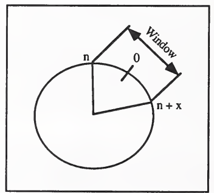
枠で囲んだ、順序番号の空間を円で表した図です。円の中心から 2 本の半径が、円の上の点「n」と右の点「n + x」へ引かれ、扇形を作っています。その間の弧の上に短い目盛りがあり、「0」と書かれています。n と n + x からそれぞれ外側へ線が伸び、その先端の間に「Window」（ウィンドウ）と書かれた両向きの矢印があります。
Figure 5.19:1 Sequence number space cycles at 0
図 5.19:1 シーケンス番号の空間が 0 で循環する
The receiving TLSP entity does no sequence number checking and passes the TPDU to transport. Later when the sending TLSP entity has to encapsulate a TPDU with sequence number 0, it discovers that a key substitution must take place. However, the replayed PDU will already be held in the buffer of the receiving transport entity. When the correct TPDU arrives it is discarded by transport. Therefore, when in this situation TLSP should check sequence numbers and drop TPDUs between 0 and n+x until a key substitution occurs.
受信側の TLSP エンティティは、シーケンス番号の確認を行わず、TPDU をトランスポートに渡します。その後、送信側の TLSP エンティティがシーケンス番号 0 の TPDU をカプセル化しなければならないとき、鍵の置換を行わなければならないことを発見します。しかし、リプレイされた PDU は、すでに受信側のトランスポートエンティティのバッファーに保持されています。正しい TPDU が届くと、それはトランスポートによって破棄されます。したがって、この状況では、TLSP は、鍵の置換が行われるまで、シーケンス番号を確認し、0 から n+x の間の TPDU を破棄すべきです。
5.20 KNOWN PLAIN TEXT ATTACK
5.20 既知平文攻撃
The transfer syntax representation of ASN.1 [ISO 8825] consists of type, length, and value fields. It is possible to perform a known plaintext attack because the type field contains known values in an encrypted portion of the data. If we study the following [SDNS 90-4262] protocol specifications:
ASN.1 の転送構文表現 [ISO 8825] は、型、長さ、値のフィールドで構成されます。暗号化されたデータ部分に既知の値を持つ型フィールドが含まれるため、既知平文攻撃を行える可能性があります。次の [SDNS 90-4262] のプロトコル仕様を調べると、
Kpdu ::= CHOICE {
[0] IMPLICIT Nkrq,
[1] IMPLICIT Nkrs,
[2] IMPLICIT Tryme,
[3] IMPLICIT Nokey,
[4] IMPLICIT EKpdu}
EKpdu ::= SEQUENCE {
remote-kid KeyId,
contents OCTET STRING -- ENCRYPTED PlainTextKpdu}
PlainTextKpdu ::= SEQUENCE {
plaintext CHOICE {
[0] IMPLICIT Ssrq,
[1] IMPLICIT Ssrs,
[2] IMPLICIT Estat,
[3] IMPLICIT Kurq,
[4] IMPLICIT Kurs,
[5] IMPLICIT Rkrq,
[6] IMPLICIT Rkrs,
[7] IMPLICIT Srkrq,
[8] IMPLICIT Srkrs,
[9] IMPLICIT Srdrq,
[10] IMPLICIT Srdrs,
[11] IMPLICIT Crrq,
[12] IMPLICIT Crrs},
padding OCTET STRING OPTIONAL,
icv IntegrityCheckValue}Note that the application of the ASN.1 encoding rules cause a number of predeterminable type codes to be inserted throughout the PlainTextKpdu. For example, the attacker knows that the first encrypted data is the SEQUENCE type identifier of the PlainTextKpdu. In general, the cryptographic algorithm selected must be capable of resisting known plain text attacks.
ASN.1 の符号化規則を適用すると、PlainTextKpdu 全体にわたって、あらかじめ決められる多数の型コードが挿入されることに注意してください。たとえば、攻撃者は、最初の暗号化データが PlainTextKpdu の SEQUENCE 型識別子であることを知っています。一般に、選択される暗号アルゴリズムは、既知平文攻撃に耐えられなければなりません。
The content fields within an NLSP Secure Data Transfer PDU do not appear in any special order, as illustrated below:
NLSP の Secure Data Transfer PDU 内の内容フィールドは、次に示すように、特別な順序では現れません。
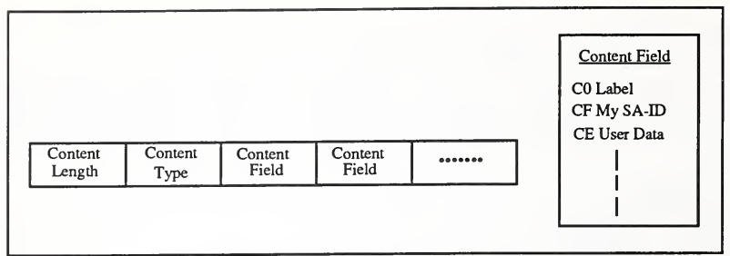
枠で囲んだ図です。左側に「Content Length」「Content Type」「Content Field」「Content Field」の欄が横に並び、最後の欄には続きを表す点の列があります。右側には「Content Field」（下線付きの見出し）の別の枠があり、「C0 Label」「CF My SA-ID」「CE User Data」が並び、その下の縦の破線で続きがあることが示されています。
Figure 5.20:1 Structure of Secure data Transfer PDU
図 5.20:1 Secure data Transfer PDU の構造
By allowing them to appear in any order it is more difficult to predict which field contains particular data. It should, however, be mentioned that this PDU structure was probably adopted for other reasons.
任意の順序で現れることを認めることで、どのフィールドに特定のデータが入っているかを予測するのがより困難になります。ただし、この PDU 構造は、おそらく他の理由で採用されたことにも触れておくべきです。
The problems discussed in this section are probably to regard as minor problems.
本節で論じた問題は、おそらく軽微な問題とみなすべきです。
5.21 ADDRESSING PROBLEMS
5.21 アドレス指定の問題
The addressing problems occur when two end systems want to communicate securely and the key manager for one or both end systems is not residing in the end system. In some way the initiating key manager has to find out the presentation address of the remote key manager. This is a violation of OSI principles, because an application protocol, in this case the key management protocol, should not be aware of the underlying network.
アドレス指定の問題は、2 つのエンドシステムが安全に通信したいときに、一方または両方のエンドシステムの鍵マネージャーがエンドシステムにない場合に生じます。何らかの方法で、開始側の鍵マネージャーは、リモートの鍵マネージャーのプレゼンテーションアドレスを見つけなければなりません。アプリケーションプロトコル（この場合は鍵管理プロトコル）は、基盤のネットワークを意識すべきではないため、これは OSI の原則に反します。
5.21.1 Addressing problems in SDNS
5.21.1 SDNS におけるアドレス指定の問題
In SDNS, a gateway can provide the security services for a number of hosts. When a key exchange occurs, the initiating key manager which resides in a gateway, knows the address of the remote host but not the address of the remote key manager. For example, in Figure 5.21:1 (taken from [LAMB88b]), host H3 may want to communicate securely with host H6. The security services are provided by gateways, it is assumed that S4 and S5 are security devices residing in gateways. Probably, because the boxes of H3 and S2 are apart, S2 also resides in a gateway. The available information for S2 when a security association has to be established, is the address of the remote host, i.e., host H6. The presentation address of the key management entity residing in a gateway and serving the host has to be derived from this information.
SDNS では、ゲートウェイが、複数のホストのセキュリティサービスを提供できます。鍵交換が行われるとき、ゲートウェイにある開始側の鍵マネージャーは、リモートホストのアドレスは知っていますが、リモートの鍵マネージャーのアドレスは知りません。たとえば、図 5.21:1（[LAMB88b] から引用）では、ホスト H3 がホスト H6 と安全に通信したい場合があります。セキュリティサービスはゲートウェイによって提供され、S4 と S5 はゲートウェイにあるセキュリティデバイスであると想定します。おそらく、H3 と S2 のボックスが離れているため、S2 もゲートウェイにあります。セキュリティアソシエーションを確立しなければならないとき、S2 が利用できる情報は、リモートホスト、すなわちホスト H6 のアドレスです。ゲートウェイにあってホストにサービスを提供する鍵管理エンティティのプレゼンテーションアドレスは、この情報から導かなければなりません。
枠で囲んだネットワークの図です。左寄りの中央に縦長の楕円「X.25 PSN」、右に楕円「RED INTERNET」があります。ホストは白い箱、セキュリティ装置は斜線の箱で描かれています。「H2」はセキュリティ装置「S1」と一体の箱になって X.25 PSN につながっています。「H1」は「S6」を介して、「H3」は「S2」を介して X.25 PSN につながり、「H4」は X.25 PSN に直接つながっています。セキュリティ装置「S5」と「S4」はそれぞれ X.25 PSN と RED INTERNET を結び、「H6」と「H5」は RED INTERNET に直接つながっています。S2 から X.25 PSN を横切る 2 本の太い矢印が出て、1 本は S5、もう 1 本は S4 で終わり、2 つの経路がありうることを示しています。 ［第三者の画像。第三者の著作物のため、この非公式サイトには掲載していません。原本 PDF を参照してください。］
Figure 5.21.1:1 A single path has to be picked
図 5.21.1:1 単一の経路を選ばなければならない
The Tryme PDU of [SDNS 90-4262] is designated for finding out the address of the remote key manager. It is not obvious how the address of the remote key manager is found by using the Tryme PDU. Every OSI application protocol14 and therefore also a key management application protocol, has to use the Application Control Service Element (ACSE) to establish an application association. In order to establish an application association, the remote presentation address must be known. How, in [SDNS 90-4262] can an application association be established, if the presentation address of the remote entity is unknown? According to [SDNS 90-4262], an application association must be established before the Tryme PDU can be sent.
[SDNS 90-4262] の Tryme PDU は、リモートの鍵マネージャーのアドレスを調べるためのものです。Tryme PDU を使ってリモートの鍵マネージャーのアドレスをどのように見つけるかは、明らかではありません。すべての OSI アプリケーションプロトコル14、したがって鍵管理アプリケーションプロトコルも、アプリケーションアソシエーションを確立するために Application Control Service Element（ACSE）を使わなければなりません。アプリケーションアソシエーションを確立するには、リモートのプレゼンテーションアドレスが分かっていなければなりません。リモートエンティティのプレゼンテーションアドレスが分からない場合、[SDNS 90-4262] ではどのようにアプリケーションアソシエーションを確立できるのでしょうか。[SDNS 90-4262] によれば、Tryme PDU を送る前に、アプリケーションアソシエーションを確立しなければなりません。
The documents included in [SDNS 90-4262] do not give any explanation to why the remote address must be found dynamically. One motive can be there exist multiple paths, as illustrated in Figure 5.21:1, and a single one has to be picked. Instead of the Tryme PDU a directory service could be used. The directory service would map from the address or identity of a host to the presentation address of the key manager serving the host.
[SDNS 90-4262] に含まれる文書は、なぜリモートのアドレスを動的に見つけなければならないのかについて、何の説明もしていません。一つの動機は、図 5.21:1 に示すように複数の経路が存在し、その中から 1 つを選ばなければならないことかもしれません。Tryme PDU の代わりに、ディレクトリサービスを使うこともできます。ディレクトリサービスは、ホストのアドレスまたは識別情報から、そのホストにサービスを提供する鍵マネージャーのプレゼンテーションアドレスへの対応づけを行います。

2 列の表の図です。見出しは「Address or Id of host」（ホストのアドレスまたは ID）と「Presentation address of key manager serving the host」（そのホストを担当する鍵管理者のプレゼンテーションアドレス）です。1 行目は、左の列が「<host id>」、右の列が「presentation address of a key management entity located at a gateway, the host identified by <host id> is attached to the red part of the network. At the gateway are the red/black network conversions done.」（ゲートウェイにある鍵管理実体のプレゼンテーションアドレス。<host id> で識別されるホストはネットワークの red 側に接続されている。ゲートウェイで red/black のネットワーク変換が行われる）です。その下は両列とも縦に 3 つの点があり、行が続くことを示しています。
Figure 5.21.1:2 Translation table
図 5.21.1:2 変換テーブル
Even if a directory service is available, it does not not solve the multiple path problem. A drawback of having mapping tables is that the tables must be updated whenever new hosts are added to or removed from the network. As we will see in the next section further problems arise if mapping tables were to be used.
ディレクトリサービスが利用できても、複数経路の問題は解決しません。対応づけテーブルを持つことの欠点は、ネットワークにホストが追加または削除されるたびに、テーブルを更新しなければならないことです。次の項で見るように、対応づけテーブルを使うとすれば、さらに問題が生じます。
5.21.2 Addressing problems in SILS
5.21.2 SILS におけるアドレス指定の問題
SILS provides the possibility to have the security protocol entity residing in a bridge which then serves a number of end stations. For example, in an environment as shown in Figure 5.21.2:1 the local portion of the LAN may be regarded as secure, this is denoted as Protected Subnet. However, the traffic going out from the local portion of the LAN needs to be protected. A bridge equipped with the SDE protocol [IEEE P802.10B] can protect the traffic going out from the local portion of the LAN.
SILS は、セキュリティプロトコルエンティティをブリッジに置き、そのブリッジが複数のエンドステーションにサービスを提供する可能性を備えています。たとえば、図 5.21.2:1 に示す環境では、LAN のローカルな部分は安全とみなせ、これは Protected Subnet として示されます。しかし、LAN のローカルな部分から出ていくトラフィックは保護する必要があります。SDE プロトコル [IEEE P802.10B] を備えたブリッジは、LAN のローカルな部分から出ていくトラフィックを保護できます。
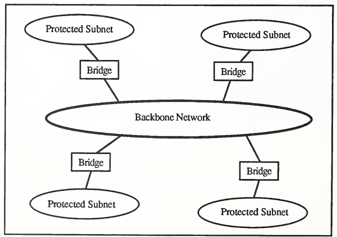
枠で囲んだ図です。中央に横長の楕円「Backbone Network」（基幹ネットワーク）があります。その上に 2 つ、下に 2 つの「Bridge」（ブリッジ）の箱が線でつながり、各ブリッジはさらにそれぞれの楕円「Protected Subnet」（保護されたサブネット）に線でつながっています（上に 2 つ、下に 2 つ）。
Figure 5.21.2:1 Bridges are providing the security services
図 5.21.2:1 ブリッジによるセキュリティサービスの提供
The key manager can, thus, be located at a bridge. When a security association has to be established, the address of the remote key manager located at another bridge is unknown, but the medium access control (MAC15) address of the remote end station is known. In order to find out the address of the remote key manager, probe packets are sent from layer two. By sending a probe packet from layer two, the problem of establishing an association before knowing the presentation address is avoided.
したがって、鍵マネージャーはブリッジに置くことができます。セキュリティアソシエーションを確立しなければならないとき、別のブリッジにあるリモートの鍵マネージャーのアドレスは分かりませんが、リモートのエンドステーションのメディアアクセス制御（MAC15）アドレスは分かっています。リモートの鍵マネージャーのアドレスを調べるために、レイヤー 2 からプローブパケットを送ります。レイヤー 2 からプローブパケットを送ることで、プレゼンテーションアドレスを知る前にアソシエーションを確立しなければならないという問題を避けられます。
The motive given in the SILS key management proposal to why not having tables containing the translation from end station addresses to presentation addresses of key managers serving the stations, is that such a data base would be quite large. It may even be difficult to have translation tables because bridges can be assigned dynamically. For example, when the spanning tree algorithm is used, the failure of the bridge can cause traffic to be directed in another direction ([STALL90] provides more details about the spanning tree algorithm). The following figure illustrates such an environment:
SILS 鍵管理提案が、エンドステーションのアドレスから、そのステーションにサービスを提供する鍵マネージャーのプレゼンテーションアドレスへの変換を含むテーブルを持たない理由として挙げているのは、そのようなデータベースがかなり大きくなることです。ブリッジは動的に割り当てられうるため、変換テーブルを持つことは困難ですらあるかもしれません。たとえば、スパニングツリーアルゴリズムを使う場合、ブリッジの障害により、トラフィックが別の方向に向けられる場合があります（スパニングツリーアルゴリズムの詳細は [STALL90] を参照）。次の図は、そのような環境を示しています。
枠で囲んだ図で、横線で表した 6 つの LAN「LAN 1」〜「LAN 6」を、ブリッジの箱「B1」〜「B7」（数字は下付き）が結んでいます。B2 と B1 はそれぞれ上の LAN 1 と下の LAN 3 の間にあり、B1 は右の LAN 2 へも線でつながっています。B4、B3、B5 はそれぞれ LAN 3 と LAN 4 の間にあり、B5 は右の LAN 6 へも線でつながっています。B6 は LAN 4 とその下の LAN 5 を結びます。B7 は LAN 2 と LAN 6 を結びます。 ［第三者の画像。第三者の著作物のため、この非公式サイトには掲載していません。原本 PDF を参照してください。］
Figure 5.21.2:2 Environment where bridges are assigned dynamically
図 5.21.2:2 ブリッジが動的に割り当てられる環境
The example is taken from the article Transporting Bridges For Interconnection Of IEEE 802 LANs [BACK88]. Traffic going from LAN 1 to LAN 6 goes through B1 and B5. However, if B5 were to fail, B7 would be forwarding traffic to and from LAN 6. In such an environment it may not be possible to predict which bridge will forward the traffic to and from a LAN. If tables are used, possibly there must be several presentation addresses for each end station address. When the key manager opens an application association, it must test each presentation address until an association can be established. The presentation addresses could appear in a priority order. The alternative is to find out the presentation address dynamically.
この例は、論文 Transporting Bridges For Interconnection Of IEEE 802 LANs [BACK88] から取っています。LAN 1 から LAN 6 へ向かうトラフィックは、B1 と B5 を通ります。しかし、B5 が故障した場合、B7 が LAN 6 との間でトラフィックを転送することになります。そのような環境では、どのブリッジが LAN との間でトラフィックを転送するかを予測できない場合があります。テーブルを使う場合、各エンドステーションのアドレスに対して、複数のプレゼンテーションアドレスが必要になる可能性があります。鍵マネージャーがアプリケーションアソシエーションを開くとき、アソシエーションを確立できるまで、各プレゼンテーションアドレスを試さなければなりません。プレゼンテーションアドレスは、優先順位に従って並べてもよいです。代替策は、プレゼンテーションアドレスを動的に調べることです。
Parallel bridges present another problem to key management. Figure 5.21.2:3 shows a hypothetical example of how parallel bridges may be configured:
並列のブリッジは、鍵管理にとってもう一つの問題を提起します。図 5.21.2:3 は、並列のブリッジをどのように構成できるかの仮想的な例を示しています。
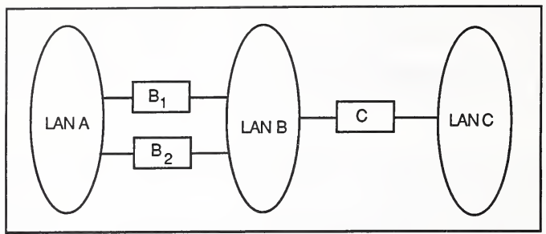
枠で囲んだ図で、縦長の楕円で表した 3 つの LAN「LAN A」「LAN B」「LAN C」があります。LAN A と LAN B は上下に並んだ 2 つの箱「B1」と「B2」（数字は下付き）で並列に結ばれています。LAN B と LAN C は 1 つの箱「C」で結ばれています。
Figure 5.21.2:3 Parallel bridges
図 5.21.2:3 並列のブリッジ
If a packet is originating from bridge C, it can be passed to either bridge B1 or B2. B1 could send a request PDU and B2 might receive the response PDU. Then, key managers located at B1 and B2 are not able to operate correctly. There are parallel bridges in Figure 5.21.2:2 too, however, when the spanning tree algorithm is used only one of the parallel bridges forwards the traffic to and from its LAN.
パケットがブリッジ C から発信される場合、ブリッジ B1 と B2 のどちらにも渡される可能性があります。B1 が要求 PDU を送り、B2 が応答 PDU を受信する場合があります。その場合、B1 と B2 にある鍵マネージャーは、正しく動作できません。図 5.21.2:2 にも並列のブリッジがありますが、スパニングツリーアルゴリズムを使う場合、並列のブリッジのうち 1 つだけが、その LAN との間でトラフィックを転送します。
The following example explains in more detail how, when there is no security association established, the presentation address of the remote key manager is found dynamically. The description of [IEEE P802.10C] also includes different kinds of error situations. For example, an error situation may occur when a security association between the systems has existed, but what in the following description is called the initiating system was powered down so the security association was lost. However, what in the following description is called the responding system may still regard the security association as active. In Figure 5.21.2:4 three probe packets are exchanged between the layer two entities, in order for the initiating key management entity to determine the presentation address of the remote key management entity. These probe packets are: PROBE.request, PROBE.response and PROBE.confirm. The presentation address of the remote key manager is found out in the following way:
次の例は、セキュリティアソシエーションが確立されていないときに、リモートの鍵マネージャーのプレゼンテーションアドレスを動的にどのように見つけるかを、より詳しく説明します。[IEEE P802.10C] の記述には、さまざまな種類のエラー状況も含まれています。たとえば、システム間のセキュリティアソシエーションが存在していましたが、以下の説明で開始側システムと呼ぶものが電源を切られたため、セキュリティアソシエーションが失われた場合に、エラー状況が生じる場合があります。しかし、以下の説明で応答側システムと呼ぶものは、セキュリティアソシエーションをまだ有効とみなしている場合があります。図 5.21.2:4 では、開始側の鍵管理エンティティがリモートの鍵管理エンティティのプレゼンテーションアドレスを判断するために、3 つのプローブパケットがレイヤー 2 のエンティティの間で交換されます。これらのプローブパケットは、PROBE.request、PROBE.response、PROBE.confirm です。リモートの鍵マネージャーのプレゼンテーションアドレスは、次のようにして調べられます。
1.A PROBE.request packet is sent from the initiating entity, included as parameters in the packet are: a PROBE ID so the response packet arriving can be associated, the presentation address of the local (initiating) key manager, the MAC address of the initiating end station and the MAC address of the local (initiating) bridge. The packet is sent to the remote end station which guarantees that the packet is handled by the appropriate bridge.
1.PROBE.request パケットが開始側のエンティティから送られ、パケットのパラメーターには、届く応答パケットを関連づけられるようにする PROBE ID、ローカル（開始側）の鍵マネージャーのプレゼンテーションアドレス、開始側のエンドステーションの MAC アドレス、ローカル（開始側）のブリッジの MAC アドレスが含まれます。パケットはリモートのエンドステーションに送られ、それによって、パケットが適切なブリッジで処理されることが保証されます。
2.If the responding entity cannot find a security association established with the initiating entity, it creates a KMASO16 SAID (KSAID) to identify the association between the two KMASOs. The PROBE.response packet includes the KSAID, the PROBE ID, the MAC address of the local (responding) bridge and the presentation address of the local (responding) key manager. The responding bridge will know to which bridge to send the packet because the MAC address of the initiating bridge was included in PROBE.request. If the responding entity finds that a security association has already been established, it will include two KSAIDs in the PROBE.response packet.
2.開始側のエンティティとの間で確立されたセキュリティアソシエーションを応答側のエンティティが見つけられない場合、2 つの KMASO 間のアソシエーションを識別するために、KMASO16 SAID（KSAID）を作成します。PROBE.response パケットには、KSAID、PROBE ID、ローカル（応答側）ブリッジの MAC アドレス、およびローカル（応答側）鍵マネージャーのプレゼンテーションアドレスが含まれます。開始側ブリッジの MAC アドレスは PROBE.request に含まれていたため、応答側ブリッジはパケットの送信先ブリッジを把握できます。応答側エンティティが、セキュリティアソシエーションがすでに確立されていることを確認した場合、PROBE.response パケットに 2 つの KSAID を含めます。
3.If only one KSAID is included, it is a confirmation that no security association is established between the entities, the local KSAID value is then created. The local KSAID value is sent in the PROBE.confirm packet to the remote bridge. The MAC address of the responding bridge is known because it was included in the PROBE.response packet.
3.KSAID が 1 つしか含まれていない場合、それは、エンティティ間にセキュリティアソシエーションが確立されていないことの確認であり、その後、ローカルの KSAID 値が作成されます。ローカルの KSAID 値は、PROBE.confirm パケットでリモートのブリッジに送られます。応答側のブリッジの MAC アドレスは、PROBE.response パケットに含まれていたため、分かっています。
4.The local Key Management Application Process is informed that keys and attributes have to be established with a key management entity, whose presentation address was found by using the probe packets.
4.ローカルの Key Management Application Process は、プローブパケットを使って見つかったプレゼンテーションアドレスを持つ鍵管理エンティティとの間で、鍵と属性を確立する必要があることを知らされます。
5.The Key Management Application Process invokes the Key Management Application Service Element (KMASE).
5.Key Management Application Process は、Key Management Application Service Element（KMASE）を呼び出します。
6.An application association is established using ACSE.
6.ACSE を使って、アプリケーションアソシエーションが確立されます。
7.The two key managers establish the keys and attributes.
7.2 つの鍵マネージャーが、鍵と属性を確立します。
8.The application association is terminated using ACSE.
8.ACSE を使って、アプリケーションアソシエーションが終了されます。
![Diagram in a frame with two protocol stacks side by side. Each stack has "KMASE" and "ACSE" in its top row, four empty layers, "Data Link", and one empty layer at the bottom. To the left of the left stack is an ellipse "Key Management Application Process". Numbered connections: 1, arrow from the left Data Link to the right Data Link; 2, arrow from the right Data Link to the left; 3, arrow from the left Data Link to the right; 4, a line from the left Data Link to the Key Management Application Process; 5, arrow from the Key Management Application Process to the left KMASE; 6 and 8, a two-headed arrow between the top rows of the two stacks; 7, a line over the top with arrows pointing down into both KMASEs. Legend on the right: "1 PROBE.request", "2 PROBE.response", "3 PROBE.confirm", "4 Triggering of key manager", "5 Invocation of KMASE", "6 Opening of association", "7 Key exchange", "8 Termination of association".](assets/ir-4983/p0107-figure-01.png)
枠で囲んだ図で、2 つのプロトコルスタックが左右に並んでいます。どちらのスタックも最上段が「KMASE」と「ACSE」で、その下に空の層が 4 つ、「Data Link」、最下段に空の層が 1 つあります。左のスタックの左には楕円の「Key Management Application Process」（鍵管理アプリケーションプロセス）があります。番号付きの結線は、1 が左の Data Link から右の Data Link への矢印、2 が右から左への矢印、3 が左から右への矢印、4 が左の Data Link と鍵管理アプリケーションプロセスを結ぶ線、5 が鍵管理アプリケーションプロセスから左の KMASE への矢印、6 と 8 が 2 つのスタックの最上段の間の両向きの矢印、7 が上を回って両方の KMASE へ下向きに入る矢印です。右に凡例があり、「1 PROBE.request」、「2 PROBE.response」、「3 PROBE.confirm」、「4 Triggering of key manager」（鍵マネージャーの起動）、「5 Invocation of KMASE」（KMASE の呼び出し）、「6 Opening of association」（アソシエーションの開設）、「7 Key exchange」（鍵交換）、「8 Termination of association」（アソシエーションの終了）と書かれています。
Figure 5.21.2:4 Discovering of the remote presentation address
図 5.21.2:4 リモートのプレゼンテーションアドレスの発見
5.21.3 Can key management entities be trusted?
5.21.3 鍵管理エンティティは信頼できるか
Are key management entities trusted entities? If they are not trusted, a key management entity can pretend to serve a host which in reality it does not. So the question is whether the sender of a probe packet can be sure that the responding part is the real key manager for a particular host.
鍵管理エンティティは信頼されたエンティティでしょうか。信頼されていない場合、鍵管理エンティティは、実際にはサービスを提供していないホストにサービスを提供しているふりをする可能性があります。したがって、問題は、プローブパケットの送信者が、応答する側が特定のホストの本物の鍵マネージャーであると確信できるかどうかです。
One might regard the SDNS world as a single security domain where the different SDNS components trust each other. In such an environment, an SDNS component may not fear to be cheated by another SDNS component since they belong to the same community. It is the outside world that is hostile. Can there be a similar level of trust in an SILS environment? SILS is not designed for a particular security domain as SDNS is; the scope of SILS is to be applicable for a wide range of environments. For example, according to Figure 5.21.2:1 SILS could be used in an environment where the different subnets may be managed by different security domains. Some of these security domains may contain or represent competitors that would not trust a key management entity claiming to serve a particular host. It can be a competitor that wants to gain possession of information of another competitor. In such an environment, if there still is a desire to find out the remote address dynamically, authentication of the application entities protected by the security association (e.g., FTAM) becomes essential. For example, authentication in ACSE [ISO 8649/AD1] [ISO 8650/AD2] could verify that communication is established with the right application entity. This is similar to the situation in [ANSI X9.17] where one party having a keying relationship with a key center could masquerade as another such party if notarization was not employed.
SDNS の世界は、さまざまな SDNS の構成要素が互いを信頼する単一のセキュリティドメインとみなせるかもしれません。そのような環境では、SDNS の構成要素は、同じコミュニティに属しているため、別の SDNS の構成要素にだまされることを恐れなくてよいかもしれません。敵対的なのは外の世界です。SILS 環境でも、同様の水準の信頼はありえるでしょうか。SILS は、SDNS のように特定のセキュリティドメイン向けには設計されておらず、SILS の適用範囲は、幅広い環境に適用できることです。たとえば、図 5.21.2:1 によれば、SILS は、異なるサブネットが異なるセキュリティドメインによって管理される環境で使われる場合があります。これらのセキュリティドメインの中には、競合相手を含む、または代表するものがあり、特定のホストにサービスを提供すると主張する鍵管理エンティティを信頼しないものもあります。ある競合相手が別の競合相手の情報を入手したいと考える場合があります。そのような環境で、それでもリモートアドレスを動的に見つけたいのであれば、セキュリティアソシエーションによって保護されるアプリケーションエンティティ（たとえば、FTAM）の認証が不可欠になります。たとえば、ACSE [ISO 8649/AD1] [ISO 8650/AD2] での認証により、正しいアプリケーションエンティティとの通信が確立されていることを検証できます。これは、[ANSI X9.17] における状況に似ています。同文書では、公証を使わなければ、鍵センターと鍵関係を持つ一方の当事者が、同様の関係を持つ別の当事者になりすますことができます。
5.22 ASPECTS OF KEY MANAGEMENT OUTSIDE OSI
5.22 OSI の外にある鍵管理の側面
In this section a number of issues are collected which are outside the scope of OSI.
本節では、OSI の範囲外にある多くの課題をまとめます。
5.22.1 Key Archiving
5.22.1 鍵のアーカイブ
The Security Architecture document [ISO 7498-2] considers key archiving not to be part of the OSI aspects of key management. [ISO 11166]17 mentions that all archived keys shall be enciphered under a key designated for that purpose.
セキュリティアーキテクチャ文書 [ISO 7498-2] は、鍵のアーカイブを、鍵管理の OSI に関わる側面の一部とはみなしていません。[ISO 11166]17 は、アーカイブされるすべての鍵は、その目的のために指定された鍵のもとで暗号化されなければならないと述べています。
5.22.2 Key Generation
5.22.2 鍵の生成
[ISO 7498-2] does not address this issue, so it cannot be regarded to be part of the OSI aspects of key management.
[ISO 7498-2] はこの課題を扱っていないため、鍵管理の OSI に関わる側面の一部とはみなせません。
Often, key management standard documents state the requirements on the key generation procedure, without specifying a particular key generation method. For example, in [ISO 11166] it is written:
鍵管理の標準文書は、特定の鍵生成方法を規定せずに、鍵生成手順の要件を述べることがよくあります。たとえば、[ISO 11166] には次のように書かれています。
The generation of symmetric keys and initialisation [initialization] vectors shall be by means of a process that ensures that all keys and initialisation [initialization] vectors are random or pseudo-random. The design of this generation process shall be such that no cryptographic advantage is gained by attacking the key generation process rather than the encipherment process.
共通鍵と初期化（initialisation [initialization]）ベクトルの生成は、すべての鍵と初期化ベクトルが乱数または擬似乱数であることを保証するプロセスによって行わなければなりません。この生成プロセスの設計は、暗号化プロセスではなく鍵生成プロセスを攻撃することによって、暗号上の優位が得られないようなものでなければなりません。
Appendix C of [ANSI X9.17] is an exception, it gives an example of how DES keys can be generated by using a pseudo-random process. An often cited article in this area is Generation, Distribution, And Installation Of Cryptographic Keys [MATY78].
[ANSI X9.17] の付録 C は例外であり、擬似乱数プロセスを使って DES 鍵をどのように生成できるかの例を示しています。この分野でよく引用される論文は、Generation, Distribution, And Installation Of Cryptographic Keys [MATY78] です。
[ISO 11166] also places demands on the key generation process of asymmetric keys. It states that the generation of the asymmetric key set shall employ a process that ensures the random or pseudo-random process from at least \(10^{40}\) possible values. Another part of the standard, that is, [ISO 11166-2], addresses this issue further. An often cited article in this area is Strong RSA Keys [GORD 84].
[ISO 11166] は、非対称鍵の鍵生成プロセスにも要求を課しています。非対称鍵セットの生成では、少なくとも \(10^{40}\) 個の可能な値からなる集合を対象とする乱数または擬似乱数プロセスを用いなければならないと述べています。標準の別の部分、すなわち [ISO 11166-2] が、この課題をさらに扱っています。この分野でよく引用される論文は、Strong RSA Keys [GORD 84] です。
5.22.3 Key Destruction
5.22.3 鍵の破棄
[ISO 7498-2] does not address this issue. [ISO 11166] mentions that plaintext keys shall be zeroized at the end of their life. Zeroization is defined as: "A method of erasing or overwriting electronically stored data." The standard also addresses how to destroy printed keys.
[ISO 7498-2] はこの課題を扱っていません。[ISO 11166] は、平文の鍵は、その寿命の終わりにゼロ化しなければならないと述べています。ゼロ化は次のように定義されています。「電子的に保存されたデータを消去または上書きする方法」。この標準は、印刷された鍵を破棄する方法も扱っています。
Appendix E of [ANSI X9.17] explains how keys should be zeroized when they are stored in different types of medias.
[ANSI X9.17] の付録 E は、さまざまな種類の媒体に鍵が保存されている場合に、鍵をどのようにゼロ化すべきかを説明しています。
5.22.4 Key Storage
5.22.4 鍵の保管
Key Storage is not addressed in [ISO 7498-2]. The storage of keys is related to the cryptographic facility because keys primarily reside in the cryptographic facility. If the keys are stored outside the cryptographic facility, they must not be available in plaintext form. For example, if traffic encryption keys are created in advance and there is not enough memory in the cryptofacility, the keys have to be stored on a secondary media encrypted with a masterkey. Key management standard documents often mention the requirements a cryptographic facility should fulfill. [ANSI X9.17] contains the following phrase: "The key management facility shall be designed so as to protect its contents from unauthorized disclosure, modification, substitution, insertion, and deletion."
鍵の保管は、[ISO 7498-2] では扱われていません。鍵の保管は、鍵が主に暗号機能に存在するため、暗号機能に関連します。鍵を暗号機能の外に保管する場合、鍵を平文の形で利用できる状態にしてはなりません。たとえば、トラフィック暗号化鍵を事前に作成し、暗号機能に十分なメモリがない場合、鍵は、マスターキーで暗号化して補助媒体に保管しなければなりません。鍵管理の標準文書は、暗号機能が満たすべき要件に言及していることがよくあります。[ANSI X9.17] には、次の記述があります。「鍵管理機能は、その内容を、許可されていない開示、改変、置換、挿入、削除から保護するように設計しなければなりません。」
[FIPS 140-1] specifies the requirements for a cryptographic facility to be used by U.S. Government Agencies. This draft standard specifies four different levels of security, where level four is the most advanced. As mentioned earlier in this paper, the Draft FIPS proposal for key management using ANSI X9.17 [FIPS 171] stipulates the cryptofacility to have level three functionality.
[FIPS 140-1] は、米国政府機関が使う暗号機能の要件を規定しています。このドラフト標準は 4 つの異なるセキュリティレベルを規定しており、レベル 4 が最も高度です。本書で先に述べたとおり、ANSI X9.17 を使う鍵管理についての FIPS ドラフト提案 [FIPS 171] は、暗号機能にレベル 3 の機能を持つことを規定しています。
The book Cryptography: A New Dimension In Computer Security [MEYE82] provides an explanation of a cryptofacility.
書籍 Cryptography: A New Dimension In Computer Security [MEYE82] は、暗号機能の説明を提供しています。
5.22.5 Compromised Key Recovery
5.22.5 危殆化した鍵の回復
[ISO 7498-2] does not address this issue. [ISO 11166] mentions that if the secret18 key of the CKC is suspected to be compromised, the CKC shall take immediate action to generate a new key set and distribute the new CKC public key.
[ISO 7498-2] は、この課題を扱っていません。[ISO 11166] は、CKC の共通鍵18が危殆化した疑いがある場合、CKC は、新しい鍵のセットを生成し、新しい CKC の公開鍵を配布するために、ただちに措置を講じなければならないと述べています。
[RFC 1114] points out that the compromise of a CA´s private key component leads to the revocation of all subordinate certificates.
[RFC 1114] は、CA の秘密鍵の構成要素が危殆化すると、下位のすべての証明書が失効することになると指摘しています。
6 REALIZATION OF THE MODEL
6 モデルの実現
How can the model presented in chapter 3 be realized? Of the key management schemes reviewed in chapter 5, some of the possibilities to realize the model are:
第 3 章で示したモデルは、どのように実現できるでしょうか。第 5 章で検討した鍵管理方式のうち、モデルを実現する可能性のいくつかは次のとおりです。
•In the case of an asymmetric form of key management the Key Center object can be realized by the certification authority scheme as described in the Directory Authentication Framework [ISO 9594-8] or as described in [RFC 1114].
•非対称形式の鍵管理の場合、Key Center オブジェクトは、Directory Authentication Framework [ISO 9594-8] に記述された、または [RFC 1114] に記述された認証局の方式で実現できます。
![Diagram in a frame. A large circle labeled "Key Management Service" contains a smaller ellipse labeled "Key Center" with three circles "KCA": one at the top joined by thick lines to two KCAs below it. Below the Key Center, still inside the large circle, are two circles "KMSA", each joined by a line to the KCA above it, and joined to each other by a thick line. Three callouts with arrows: "SDNS like key management protocol to create keys and attributes for security protocols" points up at the KMSA–KMSA link; "Directory Access Protocol to get certificates and certificate revocation lists from the Directory. Protocol defining rekeying between a KMSA and KCA" points at the line between the left KMSA and the left KCA; "Protocol defining rekeying between two KCAs" points at the line between the top KCA and the left KCA.](assets/ir-4983/p0111-figure-01.png)
枠で囲んだ図です。「Key Management Service」（鍵管理サービス）と書かれた大きな円の中に、「Key Center」（鍵センター）と書かれた楕円があり、その中に「KCA」の円が 3 つあります。上の KCA は太い線で下の 2 つの KCA と結ばれています。鍵センターの下、大きな円の内側には「KMSA」の円が 2 つあり、それぞれ上の KCA と線で結ばれ、KMSA どうしも太い線で結ばれています。矢印付きの説明が 3 つあり、「SDNS like key management protocol to create keys and attributes for security protocols」（セキュリティプロトコル用の鍵と属性を作る SDNS 風の鍵管理プロトコル）は KMSA 間の線を下から指します。「Directory Access Protocol to get certificates and certificate revocation lists from the Directory. Protocol defining rekeying between a KMSA and KCA」（ディレクトリから証明書と証明書失効リストを得るディレクトリアクセスプロトコル。KMSA と KCA の間の再鍵を定めるプロトコル）は左の KMSA と左の KCA の間の線を指します。「Protocol defining rekeying between two KCAs」（2 つの KCA の間の再鍵を定めるプロトコル）は上の KCA と左の KCA の間の線を指します。
Figure 6:1 Realization by using the Directory
図 6:1 Directory を使った実現
An SDNS-like key management protocol can be used to create the keys and attributes needed by the security protocols. This protocol specifies the KMSA-KMSA interactions. A KMSA interacts with a KCA to get certificates and certificate revocation lists. This could be described by the Directory Access Protocol [ISO 9594-5]. The KMSA is then acting as a Directory user and accesses the Directory through the Directory User Agent. Two protocols are also needed to make it possible to perform rekeying between KMSA-KCA and KCA-KCA. This structure is consistent with the ongoing activities in IEEE 802.10 to develop the asymmetric part of the key management protocol.
セキュリティプロトコルが必要とする鍵と属性を作成するために、SDNS に似た鍵管理プロトコルを使えます。このプロトコルは、KMSA 間の相互作用を規定します。KMSA は、証明書と証明書失効リストを得るために KCA とやり取りします。これは、Directory Access Protocol [ISO 9594-5] で記述できます。この場合、KMSA は Directory のユーザーとして動作し、Directory User Agent を通じて Directory にアクセスします。KMSA-KCA と KCA-KCA の間で再鍵を行えるようにするために、2 つのプロトコルも必要です。この構造は、鍵管理プロトコルの非対称の部分を開発している IEEE 802.10 の進行中の活動と整合しています。
•The Key Center object can for a symmetric form of key management be realized by an [ANSI X9.17] Key Distribution Center or Key Translation Center and the KMSAs by the [ANSI X9.17] parties.
•共通鍵形式の鍵管理では、Key Center オブジェクトは [ANSI X9.17] の Key Distribution Center または Key Translation Center で、KMSA は [ANSI X9.17] の当事者（party）で実現できます。
![Diagram in a frame. A large ellipse labeled "Key Management System" contains a smaller ellipse labeled "Key Center" with one circle "KCA". Thick lines lead from the KCA down to two circles "KMSA", which are joined to each other by a line. Two callouts with arrows: "ASN.1 version of cryptographic service messages exchanged between two parties as described in X9.17" points up at the KMSA–KMSA link; "ASN.1 version of cryptographic service messages exchanged between a party and a Key Distribution Center as described in X9.17" points at the line between the left KMSA and the KCA.](assets/ir-4983/p0112-figure-01.png)
枠で囲んだ図です。「Key Management System」（鍵管理システム）と書かれた大きな楕円の中に、「Key Center」（鍵センター）と書かれた小さな楕円があり、その中に「KCA」の円が 1 つあります。KCA から太い線が下の 2 つの「KMSA」の円へ伸び、KMSA どうしも線で結ばれています。矢印付きの説明が 2 つあり、「ASN.1 version of cryptographic service messages exchanged between two parties as described in X9.17」（X9.17 に記された 2 者間で交換する暗号サービスメッセージの ASN.1 版）は KMSA 間の線を下から指し、「ASN.1 version of cryptographic service messages exchanged between a party and a Key Distribution Center as described in X9.17」（X9.17 に記された当事者と鍵配布センターの間で交換する暗号サービスメッセージの ASN.1 版）は左の KMSA と KCA の間の線を指します。
Figure 6:2 Realization by using X9.17
図 6:2 X9.17 を使った実現
The protocols defining the interactions between two KMSAs and KMSA-KCA would be ASN.1 versions of the cryptographic service messages defined in [ANSI X9.17]. However, the protocol between two KMSAs must be enhanced because [ANSI X9.17] is not aware of OSI security protocols. The service negotiation phase as discussed in chapter 4 must be added to [ANSI X9.17]. This structure is consistent with the symmetric part of the IEEE 802.10 Key Management protocol.
2 つの KMSA の間、および KMSA-KCA の間の相互作用を定義するプロトコルは、[ANSI X9.17] で定義された Cryptographic Service Message の ASN.1 版になります。ただし、[ANSI X9.17] は OSI セキュリティプロトコルを意識していないため、2 つの KMSA の間のプロトコルは拡張しなければなりません。第 4 章で論じたサービスのネゴシエーションのフェーズを、[ANSI X9.17] に追加しなければなりません。この構造は、IEEE 802.10 の鍵管理プロトコルの共通鍵の部分と整合しています。
•If there is a need of multiple centers, the Key Center object can be realized by an [ANSI X9.28] Multiple Center Group.
•複数のセンターが必要な場合、Key Center オブジェクトは、[ANSI X9.28] の複数センターグループで実現できます。

枠で囲んだ図です。「Key Management Service」（鍵管理サービス）と書かれた大きな円の中に、「Key Center」（鍵センター）と書かれた楕円があり、その中に「KCA」の円が 3 つあります。上の KCA は太い線で下の 2 つの KCA と結ばれています。鍵センターの下、大きな円の内側には「KMSA」の円が 2 つあり、それぞれ上の KCA と線で結ばれ、KMSA どうしも線で結ばれています。矢印付きの説明「ASN.1 version of cryptographic messages defined in X9.28」（X9.28 で定める暗号メッセージの ASN.1 版）が、上の KCA と左の KCA の間の線を指しています。
Figure 6:3 Realization by using X9.28
図 6:3 X9.28 を使った実現
The protocol between two KCAs would be an ASN.1 version of the cryptographic service messages defined in the [ANSI X9.28]. The protocols between two KMSAs and KMSA-KCA can still be the ASN.1 version of [ANSI X9.17].
2 つの KCA の間のプロトコルは、[ANSI X9.28] で定義された Cryptographic Service Message の ASN.1 版になります。2 つの KMSA の間、および KMSA-KCA の間のプロトコルは、引き続き [ANSI X9.17] の ASN.1 版にできます。
•Alternatively, existing schemes could be discarded and a new infrastructure could be created.
•あるいは、既存の方式を捨て、新しいインフラストラクチャを作ることもできます。
7 GENERALITY OF THE KEY MANAGEMENT MODEL
7 鍵管理モデルの一般性
The idea behind the key management model presented in chapter 3 is to have a general key management model based on application layer concepts. The model was not able to fully describe all of the key management schemes reviewed in chapter 5. The restrictions are:
第 3 章で示した鍵管理モデルの背後にある考え方は、アプリケーション層の概念に基づく一般的な鍵管理モデルを持つことです。このモデルは、第 5 章で検討したすべての鍵管理方式を完全には記述できませんでした。制約は次のとおりです。
1.[ANSI X9.28] messages can flow in different routes, the model cannot, however, describe the flow in different routes. The KCAs of the model are hierarchically related to each other which may not be the case for [ANSI X9.28] key centers.
1.[ANSI X9.28] のメッセージは異なる経路を流れる場合がありますが、モデルは、異なる経路での流れを記述できません。モデルの KCA は互いに階層的に関係づけられていますが、[ANSI X9.28] の鍵センターではそうとは限りません。
2.SILS [IEEE P802.10B] [IEEE P802.10C] secret keys can be shared between several entities, the model is oriented towards the approach where secret keys are shared between two entities.
2.SILS [IEEE P802.10B] [IEEE P802.10C] では、共通鍵を複数のエンティティの間で共有できますが、モデルは、共通鍵を 2 つのエンティティの間で共有する方法を志向しています。
3.The model assumes that a KCA resides within the juristdiction of a specific security domain, and the CA functionality resides within a KCA. The relationship between a certification authority and a security domain may not be so strong. For example, if a public notary acts as a certification authority, the only thing the notary may do is to vouch for the binding between the distinguished name of a user and the public key component. It might therefore be possible to have two users, who have their certificates signed by the same certification authority, but belonging to different security domains.
3.モデルは、KCA が特定のセキュリティドメインの管轄内にあり、CA の機能が KCA 内にあると想定しています。認証局とセキュリティドメインの関係は、それほど強くない場合があります。たとえば、公証人が認証局として動作する場合、公証人がするのは、ユーザーの識別名と公開鍵の構成要素の結び付きを保証することだけかもしれません。したがって、同じ認証局に証明書に署名してもらっていながら、異なるセキュリティドメインに属する 2 人のユーザーがいることもありえます。
4.When CRLs and certificates are obtained from the Directory, the relationship may not be as implied by the model. For example, a KMSA can establish an application association with a KCA higher in the hierarchy than the immediate superior KCA.
4.CRL と証明書を Directory から取得する場合、関係はモデルが示唆するとおりにならないかもしれません。たとえば、KMSA は、直接の上位の KCA より階層で上位にある KCA と、アプリケーションアソシエーションを確立できます。
The problems encountered are probably common problems when modelling is done. If a model is very general, it does not describe very much. On the other hand, when a model is very specific existing schemes may be precluded.
遭遇した問題は、おそらく、モデル化を行うときによくある問題です。モデルが非常に一般的であれば、多くを記述できません。一方、モデルが非常に具体的な場合には、既存の方式が排除されるかもしれません。
7.1 IMPROVEMENTS OF THE MODEL
7.1 モデルの改善
This section is an attempt to improvement of the defined key management model, therefore some of the difficulties mentioned previously can be eliminated.
本節は、定義した鍵管理モデルを改善する試みであり、そのため、前に述べた困難の一部を解消できる場合があります。
Part 2 of the Directory standards, Models [ISO 9594-2], contains models describing different aspects of the Directory. For example, section 2 of [ISO 9594-2] contains a model describing how a Directory user obtains Directory services. Section 2 also contains a model which describes the composition of DSAs. Both models describe OSI communication aspects since DUAs and DSAs are manifested as application processes. Section 3 of [ISO 9594-2] contains models describing other aspects of the Directory which are not part of the communication aspects. Among other things, it describes the organization of the Directory Information Tree (DIT).
Directory 標準の第 2 部 Models [ISO 9594-2] には、Directory のさまざまな側面を記述するモデルが含まれています。たとえば、[ISO 9594-2] の 2 節には、Directory のユーザーが Directory サービスをどのように得るかを記述するモデルが含まれています。2 節には、DSA の構成を記述するモデルも含まれています。DUA と DSA はアプリケーションプロセスとして具現化されるため、どちらのモデルも OSI の通信の側面を記述しています。[ISO 9594-2] の 3 節には、通信の側面の一部ではない、Directory の他の側面を記述するモデルが含まれています。とりわけ、Directory Information Tree（DIT）の編成を記述しています。
The key management model should have a similar structure to that of the Directory. Now the same model describes both communication and logical aspects; instead those aspects should be represented by distinct models. For example, the decomposition of the Key Center object is done in the following way:
鍵管理モデルは、Directory のものに似た構造を持つべきです。現在は、同じモデルが通信の側面と論理的な側面の両方を記述しています。そうではなく、それらの側面は別々のモデルで表現すべきです。たとえば、Key Center オブジェクトの分解は、次のように行われています。
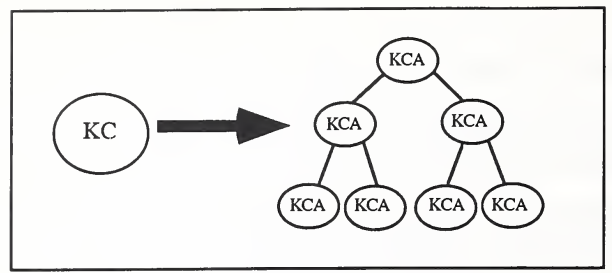
枠で囲んだ図です。左に「KC」の円があり、そこから太い矢印が右へ出て、7 つの「KCA」の円の木を指しています。木は最上位に KCA が 1 つ、その下に 2 つ、さらにそれぞれの下に 2 つずつ（最下段に 4 つ）あります。
Figure 7.1:1 Decomposition of the Key Center object
図 7.1:1 Key Center オブジェクトの分解
In the right part of the above figure both communication and logical aspects are described. The communication aspects are concerned with which protocols are used for the communication between two KCAs. The logical aspect is that certification authorities are hierarchically related, which is not part of the communication aspects. The following figure is right from a logical point of view but not from a communication point of view:
上の図の右側の部分では、通信の側面と論理的な側面の両方が記述されています。通信の側面は、2 つの KCA の間の通信にどのプロトコルを使うかに関わります。論理的な側面は、認証局が階層的に関係づけられていることであり、これは通信の側面の一部ではありません。次の図は、論理的な観点からは正しいですが、通信の観点からは正しくありません。
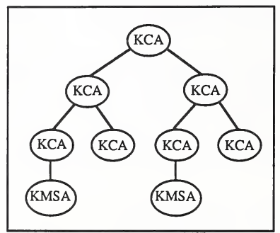
枠で囲んだ円の木の図です。最上位に「KCA」が 1 つ、その下に「KCA」が 2 つ、さらにそれぞれの下に「KCA」が 2 つずつ（3 段目に 4 つ）あります。3 段目の 1 つ目と 3 つ目の KCA の下には、縦線でつながった「KMSA」の円がそれぞれ 1 つあります。
Figure 7.1:2 Hypothetical hierarchy
図 7.1:2 仮想的な階層
What cannot be expressed by the above figure is that a KMSA can access a KCA higher in hierarchy than its immediate superior KCA. A KMSA can access such a KCA in order to get a certificate revocation list. Therefore, it would have been better to separate the communication and logical aspects. The communication aspects could have been describes in the same way as in [ISO 9594-2]. The way certification authorities are related could have been described in a separate model. The model concerning the communication aspects can probably describe both an asymmetric and symmetric form of key management. Presumably there must exist different models describing the logical aspects.
上の図で表現できないのは、KMSA が、直接の上位 KCA より階層で上位にある KCA にアクセスできることです。KMSA は、証明書失効リストを得るために、そのような KCA にアクセスできます。したがって、通信の側面と論理的な側面を分けたほうがよかったでしょう。通信の側面は、[ISO 9594-2] と同じ方法で記述できたでしょう。認証局同士の関係は、別のモデルで記述できたでしょう。通信の側面に関するモデルは、おそらく非対称鍵方式と共通鍵方式の両方の鍵管理を記述できるでしょう。おそらく、論理的な側面を記述する異なるモデルが存在しなければならないでしょう。
8 LEVEL OF CENTRALIZATION
8 集中化の度合い
The different key management schemes reviewed in chapter 5 describe different levels of centralization.
第 5 章で検討したさまざまな鍵管理方式は、さまざまな集中化の度合いを表しています。
The symmetric form of key management as described in the [ANSI X9.17] Key Distribution Center Environment, includes a centralized trusted third party which must be involved in every key exchange.
[ANSI X9.17] の Key Distribution Center 環境で説明された共通鍵形式の鍵管理には、すべての鍵交換に関与しなければならない、集中型の信頼された第三者が含まれます。
The SDNS model includes a centralized trusted place, the Key Management Center, but the Key Management Center is not involved when two SDNS components perform a key exchange. This is a benefit compared to the [ANSI X9.17] CKD environment; the overhead associated with a center being involved in every key exchange is avoided. This minimizes risk that the KMC becomes a bottleneck in the network.
SDNS のモデルには、集中型の信頼された場所である Key Management Center が含まれますが、2 つの SDNS の構成要素が鍵交換を行うときには、Key Management Center は関与しません。これは、[ANSI X9.17] の CKD 環境と比べた利点です。センターがすべての鍵交換に関与することに伴うオーバーヘッドが避けられます。これにより、KMC がネットワークのボトルネックになるリスクが最小限に抑えられます。
The asymmetric form of key management described in [IEEE P802.10C] is the least centralized; it calls for distributed key management. The central place functionality is replaced by the Directory Authentication Framework scheme where there is a hierarchy of certification authorities.
[IEEE P802.10C] で説明された非対称形式の鍵管理は、最も集中化の度合いが低く、分散型の鍵管理を求めています。中央の場所の機能は、認証局の階層がある Directory Authentication Framework の方式に置き換えられます。
The distribution of responsibility varies between the different schemes. The more centralized the system is, the less responsibility the user of the key management service has. The concept of responsibility also applies to key generation. For a centralized system the Key Distribution Center is responsible for the key generation, the user is not given this responsibility. Whereas in a distributed environment the user is given the responsibility. This is described further in [DSSD87].
責任の分散は、方式によって異なります。システムが集中型であるほど、鍵管理サービスの利用者の責任は小さくなります。責任の概念は、鍵の生成にも当てはまります。集中型のシステムでは、Key Distribution Center が鍵の生成に責任を負い、利用者にはこの責任が与えられません。一方、分散環境では、利用者に責任が与えられます。これは [DSSD87] でさらに説明されています。
9 KEY MANAGEMENT PROTOCOL SPECIFICATIONS
9 鍵管理プロトコルの仕様
This chapter contains a description of the key management protocol included in Annex B. The protocol is defined as a layer seven Application Service Element (ASE) and maps its PDUs onto the Association Control Service Element (ACSE) and the presentation layer. If a ROSE based ASE is preferred, it should not be too difficult to redefine the protocol in accordance with the ROSE definitions. Macros are often criticized for being hard to implement; most of the macros included in the protocol definitions of this chapter can be substituted by ordinary ASN.1 data types. Unfortunately, it is very difficult to achieve algorithm independence without using macros. Therefore, if macros are used to achieve algorithm independence, then macros representing other ASN.1 data types can also be used to clarify the nature of an operation.
本章は、附属書 B に含まれる鍵管理プロトコルの説明を含みます。このプロトコルは、レイヤー 7 の Application Service Element（ASE）として定義され、その PDU を Association Control Service Element（ACSE）とプレゼンテーション層に対応づけます。ROSE に基づく ASE が好まれる場合、ROSE の定義に従ってプロトコルを再定義することは、それほど難しくないはずです。マクロは実装しにくいとしてよく批判されますが、本章のプロトコル定義に含まれるマクロの大半は、通常の ASN.1 データ型で置き換えられます。残念ながら、マクロを使わずにアルゴリズム独立性を実現することは非常に困難です。したがって、アルゴリズム独立性を実現するためにマクロを使うのであれば、他の ASN.1 データ型を表すマクロも、操作の性質を明確にするために使えます。
The intention is not to provide the ultimate solution to key management, but to identify the problems involved with defining a layer seven key management ASE. For instance, the security register is just hypothetical. It is used to illustrate the ideas of how the algorithm independence problem can be solved, but only the ASN.1 definitions and associated problems are explored. Also note that no efforts have been made to make efficient ASN.1 definitions. Probably some of the ASN.1 definitions could have been tagged better. A lot of the definitions are declared as optional in order to achieve flexibility, however, a reduced flexibility would facilitate an implementation of the protocol. In some places alternative definitions are provided. It is felt that by including the flexibility and by providing alternative definitions, problems involved in specifying a layer seven key management protocol are highlighted.
意図は、鍵管理の究極の解決策を提供することではなく、レイヤー 7 の鍵管理 ASE を定義することに伴う問題を特定することです。たとえば、セキュリティレジスターは仮想的なものにすぎません。アルゴリズム独立性の問題をどのように解決できるかという考え方を示すために使われますが、探究されるのは ASN.1 定義と関連する問題だけです。また、効率的な ASN.1 定義にするための努力はしていないことにも注意してください。おそらく、ASN.1 定義の一部は、タグ付けをもっとよくできたでしょう。柔軟性を実現するために、定義の多くがオプションとして宣言されていますが、柔軟性を減らせば、プロトコルの実装が容易になるでしょう。場所によっては、代替の定義が提供されています。柔軟性を含め、代替の定義を提供することで、レイヤー 7 の鍵管理プロトコルを規定する際に伴う問題が浮き彫りになると考えます。
There are no declarations made concerning the certificate revocation list. It is assumed that such a list can be obtained from a directory service. The protocol does not address how the certificates can be obtained, here again assistance from a directory service is assumed.
証明書失効リストに関する宣言はありません。そのようなリストは、ディレクトリサービスから得られると想定しています。このプロトコルは、証明書をどのように得られるかを扱っておらず、ここでも、ディレクトリサービスの支援が想定されています。
9.1 TYPES OF PROTOCOLS
9.1 プロトコルの種類
There are three types of protocols:
プロトコルには、3 つの種類があります。
•KMSA to KMSA protocol describing the interactions between two KMSAs.
•2 つの KMSA の間の相互作用を記述する、KMSA 間プロトコル。
•KMSA to KCA protocol describing the interactions between a KMSA and a KCA.
•KMSA と KCA の間の相互作用を記述する、KMSA と KCA の間のプロトコル。
•KCA to KCA protocol describing the interactions between two KCAs.
•2 つの KCA の間の相互作用を記述する、KCA 間プロトコル。
By dividing them into three different protocol types a higher degree of flexibility can be achieved. For example, a security domain using an asymmetric form of key management can decide to do the rekeying manually. Thus, only the KMSA-KMSA protocol will be used.
3 つの異なるプロトコルの種類に分けることで、より高い柔軟性を実現できます。たとえば、非対称形式の鍵管理を使うセキュリティドメインは、鍵の再設定を手作業で行うことを決められます。その場合、KMSA-KMSA プロトコルだけが使われます。
The protocol specifications consider only the asymmetric form of key management, but it is possible to include declarations for a symmetric form of key management. The approach chosen is according to the asymmetric alternative described in chapter 6.
プロトコルの仕様は、非対称形式の鍵管理だけを検討していますが、共通鍵形式の鍵管理の宣言を含めることも可能です。採った方法は、第 6 章で説明した非対称の選択肢に従っています。
9.2 ASN.1 MODULE DISPOSITION
9.2 ASN.1 モジュールの配置
The ASN.1 modules consist of:
ASN.1 モジュールは、次で構成されます。
•A key management module (KMSA-KMSA, KMSA-KCA or KCA-KCA) containing the algorithm independent ASN.1 definitions.
•アルゴリズムに依存しない ASN.1 定義を含む鍵管理モジュール（KMSA-KMSA、KMSA-KCA、または KCA-KCA）。
•A security register module containing the algorithm dependent definitions.
•アルゴリズムに依存する定義を含むセキュリティレジスタモジュール。
Figure 9.2:1 illustrates the ASN.1 modules disposition:
図 9.2:1 は、ASN.1 モジュールの配置を示しています。
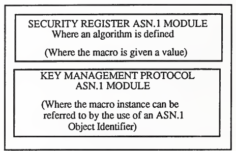
枠の中に 2 つの箱を上下に重ねた図です。上の箱には「SECURITY REGISTER ASN.1 MODULE」（セキュリティ登録の ASN.1 モジュール）、「Where an algorithm is defined」（アルゴリズムを定義する所）、「(Where the macro is given a value)」（マクロに値を与える所）とあります。下の箱には「KEY MANAGEMENT PROTOCOL ASN.1 MODULE」（鍵管理プロトコルの ASN.1 モジュール）、「(Where the macro instance can be referred to by the use of an ASN.1 Object Identifier)」（ASN.1 のオブジェクト識別子を使ってマクロのインスタンスを参照できる所）とあります。2 つの箱の間に矢印はありません。
Figure 9.2:1 Disposition of ASN.1 modules
図 9.2:1 ASN.1 モジュールの配置
The security register and key management protocol modules import the generic definitions appearing in the Security Definitions ASN.1 module to avoid redefinitions.
セキュリティレジスタモジュールと鍵管理プロトコルモジュールは、再定義を避けるために、Security Definitions ASN.1 モジュールに現れる汎用の定義をインポートします。
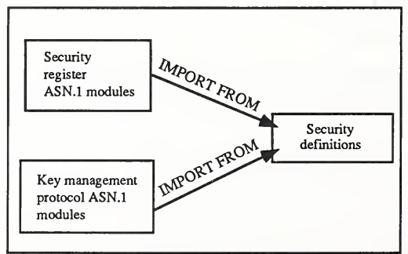
枠で囲んだ図です。左に「Security register ASN.1 modules」（セキュリティ登録の ASN.1 モジュール）と、その下の「Key management protocol ASN.1 modules」（鍵管理プロトコルの ASN.1 モジュール）の 2 つの箱があります。それぞれから「IMPORT FROM」と書かれた矢印が、右の「Security definitions」（セキュリティ定義）の箱を指しています。
Figure 9.2:2 Disposition of ASN.1 modules
図 9.2:2 ASN.1 モジュールの配置
The ASN.1 definitions which are common for the KMSA-KMSA, KMSA-KCA and KCA-KCA protocol modules are defined in the Key Management protocol module.
KMSA-KMSA、KMSA-KCA、KCA-KCA の各プロトコルモジュールに共通の ASN.1 定義は、鍵管理プロトコルモジュールで定義されます。
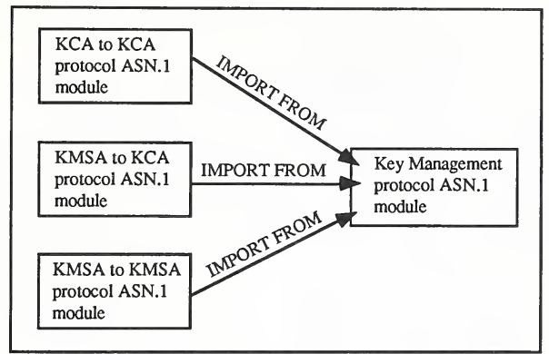
枠の中の図です。左に「KCA to KCA protocol ASN.1 module」「KMSA to KCA protocol ASN.1 module」「KMSA to KMSA protocol ASN.1 module」の 3 つの枠があり、それぞれから「IMPORT FROM」と書かれた矢印が右の 1 つの枠「Key Management protocol ASN.1 module」（鍵管理プロトコルの ASN.1 モジュール）へ向かっています。
Figure 9.2:3 Disposition of key management modules
図 9.2:3 鍵管理モジュールの配置
9.3 SECURITY REGISTER
9.3 セキュリティレジスター
The security register contains, among other things, the algorithm dependent data associated with a specific key exchange algorithm. Examples of objects to be included in a security register are:
セキュリティレジスターには、とりわけ、特定の鍵交換アルゴリズムに関連づけられたアルゴリズム依存のデータが含まれます。セキュリティレジスターに含めるオブジェクトの例は、次のとおりです。
•Key exchange algorithms/methods;
•鍵交換アルゴリズム／方式
•Confidentiality algorithms;
•機密性アルゴリズム
•Integrity algorithms;
•完全性アルゴリズム
•Security Labels format;
•セキュリティラベルの形式
•Security levels representation;
•セキュリティレベルの表現
•Rekeying methods;
•再鍵方式
•Signature algorithms.
•署名アルゴリズム。
Each of the above mentioned security objects are given a position in the Object Identifier tree. An ASN.1 Object Identifier value is given to the security register itself; this value is represented in the security register module as {security}. The dispositions of the objects within the security register are defined by the following ASN.1 definitions:
上記の各セキュリティオブジェクトには、Object Identifier ツリー内の位置が与えられます。セキュリティレジスター自体には ASN.1 Object Identifier の値が与えられ、この値はセキュリティレジスタモジュールで {security} として表されます。セキュリティレジスター内のオブジェクトの配置は、次の ASN.1 定義で定義されます。
keyExchMethods OBJECT IDENTIFIER ::= {security 1}
integrityAlgs OBJECT IDENTIFIER ::= {security 2}
confidentialityAlgs OBJECT IDENTIFIER ::= {security 3}
securityLevels OBJECT IDENTIFIER ::= {security 4}
securityLabels OBJECT IDENTIFIER ::= {security 5}
signatureAlgs OBJECT IDENTIFIER ::= {security 6}
rekeyingMethods OBJECT IDENTIFIER ::= {security 7}The hierarchical relationship is:
階層的な関係は次のとおりです。
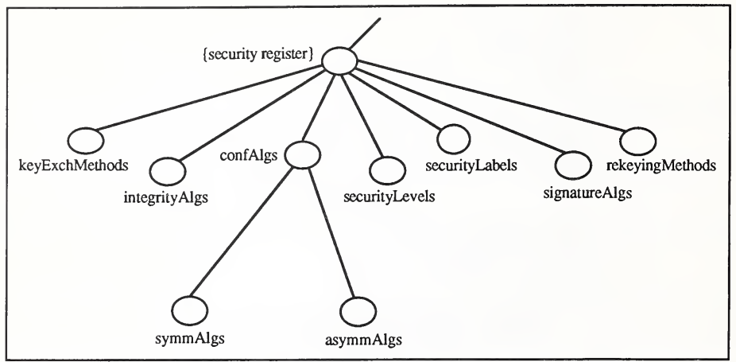
枠の中のオブジェクト識別子の木の図です。「{security register}」と書かれた節点（上の親へ向かう短い線があります）から、左から順に keyExchMethods、integrityAlgs、confAlgs、securityLevels、securityLabels、signatureAlgs、rekeyingMethods の 7 つの子節点が出ています。confAlgs の下にはさらに symmAlgs と asymmAlgs の 2 つの子節点があります。
Figure 9.3:1 Objects in the security register
図 9.3:1 セキュリティレジスター内のオブジェクト
A security register could be either publicly or privately defined. If the security register is privately defined, the content of the security register may not be known to others than the holder of the register.
セキュリティレジスターは、公開で定義することも、非公開で定義することもできます。セキュリティレジスターが非公開で定義される場合、その内容は、レジスターの保有者以外には知られない場合があります。
9.3.1 Registration of key exchange algorithms/methods
9.3.1 鍵交換アルゴリズム／方式の登録
The term "key exchange method" is used because there could be several registrations of basically the same algorithm. For Diffie-Hellman there are different ways to perform the authentication, and each particular way is registered separately. Thus, the Diffie-Hellman algorithm can be represented in a security register in different ways.
基本的に同じアルゴリズムが複数登録される場合があるため、「鍵交換方式」という用語を使います。Diffie-Hellman には、認証を行うさまざまな方法があり、それぞれの方法は別々に登録されます。したがって、Diffie-Hellman アルゴリズムは、セキュリティレジスター内でさまざまな形で表現できます。
Section 5.10 discusses the fact that algorithm independence can be achieved by using ASN.1 Object Identifiers in combination with the ANY DEFINED BY construct or by changing presentation context. In the key management protocol specifications the first approach is chosen. That is, a key exchange is described as a four-way handshake procedure. For the KMSA-KMSA protocol the data associated with a particular key exchange algorithm/method is carried by the Nkrq, Nkrs, Ssrq and Ssrs PDUs. The place-holders of the Nkrq, Nkrs, Ssrq and Ssrs PDUs are filled with the algorithm dependent data. The algorithm dependent data is defined in a security register. An Object Identifier functions as a pointer to a certain entry of a security register. The entry defines the data which is associated with the registered key exchange method.
5.10 節では、ASN.1 の Object Identifier を ANY DEFINED BY 構文と組み合わせて使うか、プレゼンテーションコンテキストを変更することで、アルゴリズム独立性を実現できることを論じています。鍵管理プロトコルの仕様では、最初の方法を選んでいます。すなわち、鍵交換は 4 ウェイのハンドシェイク手順として記述されます。KMSA-KMSA プロトコルでは、特定の鍵交換アルゴリズム／方式に関連づけられたデータは、Nkrq、Nkrs、Ssrq、Ssrs PDU によって運ばれます。Nkrq、Nkrs、Ssrq、Ssrs PDU のプレースホルダーには、アルゴリズム依存のデータが入ります。アルゴリズム依存のデータは、セキュリティレジスターで定義されます。Object Identifier は、セキュリティレジスターの特定のエントリへのポインターとして機能します。エントリは、登録された鍵交換方式に関連づけられたデータを定義します。
![Inside a frame, four boxes on the left, each headed by a PDU name, "Nkrq", "Nkrs", "Ssrq" and "Ssrs", and each containing "Algorithm Dependent data". From each box an arrow points to the same entry, "Key Exchange Algorithm diffieHellmanMode1", in a tall box on the right headed "Security Register A". Security Register A lists, from top to bottom: "Registered Confidentiality Algorithms", "Registered Integrity Algorithms", "Registered Key Exchange Algorithms", "Key Exchange Algorithm diffieHellmanMode1", "Key Exchange Algorithm rsaMode1", and a last cell with vertical dots indicating further entries. Below it are two more empty boxes, "Security Register B" and "Security Register C".](assets/ir-4983/p0123-figure-01.png)
枠の中の図です。左に「Nkrq」「Nkrs」「Ssrq」「Ssrs」という PDU 名を見出しにした 4 つの枠があり、それぞれに「Algorithm Dependent data」（アルゴリズム依存データ）が入っています。4 つの枠からの矢印は、いずれも右の縦長の枠「Security Register A」（セキュリティ登録簿 A）の中の同じ項目「Key Exchange Algorithm diffieHellmanMode1」を指しています。Security Register A には上から「Registered Confidentiality Algorithms」「Registered Integrity Algorithms」「Registered Key Exchange Algorithms」「Key Exchange Algorithm diffieHellmanMode1」「Key Exchange Algorithm rsaMode1」が並び、最後の欄には、さらに項目が続くことを示す縦の点があります。その下に中身のない「Security Register B」と「Security Register C」の枠があります。
Figure 9.3.1:1 Object Identifiers point to an entry in a security register
図 9.3.1:1 Object Identifier がセキュリティレジスターのエントリを指す
Two different solutions are proposed, the first uses ASN.1 macros to register each algorithm dependent argument included in a key exchange with a unique Object Identifier. The algorithm dependent data in the Nkrq PDU is associated with an Object Identifier, the data in the Nkrs PDU is associated with another Object Identifier, etc. The second method uses a macro to register all arguments with a single Object Identifier. The algorithm dependent data appearing in the Nkrq, Nkrs, Ssrq, Ssrs, Rkrq, Rkrs, Rkdrq and Rkdrs PDUs are associated with a single Object Identifier. Two different approaches are proposed because the second approach is probably harder to implement, but it has the advantage of only using one Object Identifier. It is harder to implement because the ASN.1 parser must know in the PDU type (context) the algorithm dependent data is conveyed. When each piece of the algorithm dependent data is associated with a unique Object Identifier, the ASN.1 parser does not need to be aware of the PDU type that conveyed the information. It can translate from transfer to abstract syntax by just knowing the value of the Object Identifier. This can be a fall-back if it is shown to be difficult to implement the macro associated with just one Object Identifier.
2 つの異なる解決策が提案されています。1 つ目は、ASN.1 マクロを使って、鍵交換に含まれるアルゴリズム依存の各引数を、固有の Object Identifier で登録します。Nkrq PDU のアルゴリズム依存のデータは 1 つの Object Identifier に関連づけられ、Nkrs PDU のデータは別の Object Identifier に関連づけられる、というようにします。2 つ目の方法は、マクロを使って、すべての引数を 1 つの Object Identifier で登録します。Nkrq、Nkrs、Ssrq、Ssrs、Rkrq、Rkrs、Rkdrq、Rkdrs PDU に現れるアルゴリズム依存のデータは、1 つの Object Identifier に関連づけられます。2 つの異なる方法が提案されているのは、2 つ目の方法は実装がおそらくより難しいものの、Object Identifier を 1 つしか使わないという利点があるためです。実装がより難しいのは、アルゴリズム依存のデータがどの PDU の型（コンテキスト）で運ばれるかを、ASN.1 パーサーが知っていなければならないためです。アルゴリズム依存のデータの各部分が固有の Object Identifier に関連づけられている場合、ASN.1 パーサーは、情報を運んだ PDU の型を意識する必要がありません。Object Identifier の値を知るだけで、転送構文から抽象構文へ変換できます。Object Identifier 1 つだけに関連づけるマクロの実装が困難だと分かった場合には、これを代替策として使うことができます。
9.3.1.1 Approach one
9.3.1.1 方法 1
The macros needed when the first approach is chosen are ALGORITHM and ALGORITHM-ARGUMENT-REGISTRATION. The macro ALGORITHM is defined in the Directory Authentication Framework [ISO 9594-8] and ALGORITHM-ARGUMENT-REGISTRATION is defined in the KeyExchangeMethods ASN.1 module. The latter macro has the following definition:
最初の方法を選んだ場合に必要なマクロは、ALGORITHM と ALGORITHM-ARGUMENT-REGISTRATION です。マクロ ALGORITHM は Directory Authentication Framework [ISO 9594-8] で定義され、ALGORITHM-ARGUMENT-REGISTRATION は KeyExchangeMethods ASN.1 モジュールで定義されます。後者のマクロの定義は次のとおりです。
ALGORITHM-ARGUMENT-REGISTRATION MACRO ::=
BEGIN
TYPE NOTATION ::= "ARGUMENT" type
VALUE NOTATION ::= value (VALUE OBJECT IDENTIFIER)
END -- of ALGORITHM-ARGUMENT-REGISTRATIONThe Diffie-Hellman based algorithm as presented in Key Management Systems Combining X9.17 And Public Key Techniques [GRAFF90], can be registered as a key exchange method by the use of the macro ALGORITHM. See the following ASN.1 declaration:
Key Management Systems Combining X9.17 And Public Key Techniques [GRAFF90] で示された Diffie-Hellman に基づくアルゴリズムは、マクロ ALGORITHM を使って、鍵交換方式として登録できます。次の ASN.1 宣言を参照してください。
diffieHellmanMode1 ALGORITHM
PARAMETER SEQUENCE {
A,
P}
:= {keyExchMethods 1}{keyExchMethods 1} indicates that it is the first branch of the keyExchMethods subtree, it is the first registered key exchange method.
{keyExchMethods 1} は、keyExchMethods サブツリーの最初の枝であること、すなわち最初に登録された鍵交換方式であることを示します。
A ::= INTEGER
P ::= INTEGERA and P represent the values a and r of the Diffie-Hellman algorithm.
A と P は、Diffie-Hellman アルゴリズムの値 a と r を表します。
The arguments appearing in Nkrq and Nkrs are defined according to:
Nkrq と Nkrs に現れる引数は、次に従って定義されます。
diffieHellmanMode1NkrqData ALGORITHM-ARGUMENT-REGISTRATION
ARGUMENT SEQUENCE {
certPath CertificationPath,
unidirectKeys BOOLEAN OPTIONAL,
SIGNED EXPONENTIATION A P RandomA}
::= {keyExchMethods 1 1}
diffieHellmanMode1NkrsData ALGORITHM-ARGUMENT-REGISTRATION
ARGUMENT SEQUENCE {
certPath CertificationPath,
unidirectKeys BOOLEAN OPTIONAL,
SIGNED EXPONENTIATION A P RandomB}
::= {keyExchMethods 1 2}
RandomA ::= INTEGER
RandomB ::= INTEGEREXPONENTIATION A P RandomA and EXPONENTIATION A P RandomB represent \(\alpha^X \bmod \rho\) and \(\alpha^Y \bmod \rho\) respectively. SIGNED EXPONENTIATION A P RandomA and SIGNED EXPONENTIATION A P RandomB represent the numbers in conjunction with the signatures computed on the numbers. The macro SIGNED is defined in [ISO 9594-8], the macro EXPONENTIATION is explained later. It is probably not necessary to sign these numbers because they may be so small that they do not need to be hashed. unidirectKeys is used to determine whether unidirectional keys are to be used. The algorithm described in [GRAFF90] does not need to have any data present in the Ssrq or Ssrs PDUs. In those PDUs the algorithm dependent data is declared as an optional field.
EXPONENTIATION A P RandomA と EXPONENTIATION A P RandomB は、それぞれ \(\alpha^X \bmod \rho\) と \(\alpha^Y \bmod \rho\) を表します。SIGNED EXPONENTIATION A P RandomA と SIGNED EXPONENTIATION A P RandomB は、数値と、その数値に対して計算された署名を合わせて表します。マクロ SIGNED は [ISO 9594-8] で定義されており、マクロ EXPONENTIATION は後で説明します。これらの数値は、ハッシュ化する必要がないほど小さい場合があるため、署名する必要はおそらくありません。unidirectKeys は、単方向の鍵を使うかどうかを判断するために使われます。[GRAFF90] で説明されているアルゴリズムは、Ssrq または Ssrs PDU にデータを含める必要がありません。これらの PDU では、アルゴリズム依存のデータはオプションのフィールドとして宣言されています。
Ssrq ::= SET {
alg-dep-data [0] IMPLICIT SET {
algArgId [0] IMPLICIT OBJECT IDENTIFIER OPTIONAL,
algArgument [1] IMPLICIT ANY DEFINED BY algArgId} OPTIONAL,
said [1] IMPLICIT Said,
spParameters CHOICE {
[2] IMPLICIT TLSPParams,
[3] IMPLICIT NLSPParams,
[4] IMPLICIT SDEParams}}The Ssrs has the same ASN.1 representation as the Ssrq.
Ssrs の ASN.1 表現は、Ssrq と同じです。
EXPONENTIATION is a macro describing the exponentiation in Diffie-Hellman. It has the following definition:
EXPONENTIATION は、Diffie-Hellman のべき乗を記述するマクロです。その定義は次のとおりです。
EXPONENTIATION MACRO ::=
BEGIN
TYPE NOTATION ::= type(Alpha) type(Rho) type(Random)
VALUE NOTATION ::= value(VALUE INTEGER)
-- the value of the INTEGER is generated by exponentiation
-- of Alpha with Random mod Rho, i.e., (a ** random) mod p
END -- of EXPONENTIATION
Random ::= INTEGERRandom, represents a random number, X or Y, in the Diffie-Hellman algorithm, see:
Random は、Diffie-Hellman アルゴリズムの乱数 X または Y を表します。次を参照してください。
\(\alpha^X \bmod \rho\)
\(\alpha^X \bmod \rho\)
and
および
\(\alpha^Y \bmod \rho\).
\(\alpha^Y \bmod \rho\).
The Object Identifiers needed to register the key exchange method are shown in the following figure:
鍵交換方式を登録するために必要な Object Identifier を、次の図に示します。
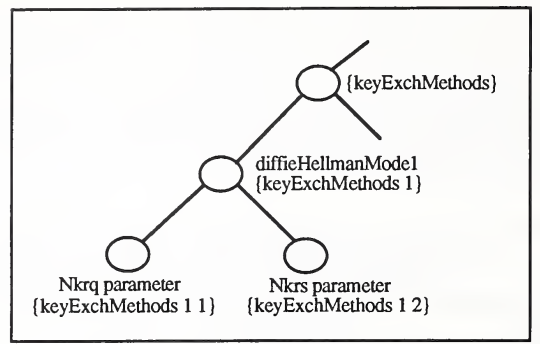
枠の中のオブジェクト識別子の木の図です。「{keyExchMethods}」の節点には上の親へ向かう線と、右下へ向かうラベルの無い線があります。ラベルの付いた子は「diffieHellmanMode1 {keyExchMethods 1}」で、その下に「Nkrq parameter {keyExchMethods 1 1}」と「Nkrs parameter {keyExchMethods 1 2}」の 2 つの子があります。
Figure 9.3.1.1:1 Several Object Identifiers are used
図 9.3.1.1:1 複数の Object Identifier を使う
9.3.1.2 Approach two
9.3.1.2 方法 2
Of course, the alternative is to use only one Object Identifier to register an algorithm. The macro used for this purpose is KEY-EXCH-ALG and is defined in the ASN.1 module KeyExchangeMethods. The definition of the macro is:
もちろん、代替策は、アルゴリズムの登録に 1 つの Object Identifier だけを使うことです。この目的に使うマクロは KEY-EXCH-ALG で、ASN.1 モジュール KeyExchangeMethods で定義されています。マクロの定義は次のとおりです。
KEY-EXCHG-ALG MACRO ::=
BEGIN
TYPE NOTATION ::= ParameterData NkrqData NkrsData SsrqData SsrsData
RkrqData RkrsData RkdrqData RkdrsData
VALUE NOTATION ::= VALUE(value OBJECT IDENTIFIER)
ParameterData ::= empty | "PARAMETER" type
NkrqData ::= "NkrqData" type
NkrsData ::= "NkrsData" type
SsrqData ::= empty | "SsrqData" type
SsrsData ::= empty | "SsrsData" type
RkrqData ::= empty | "RkrqData" type
RkrsData ::= empty | "RkrsData" type
RkdrqData ::= empty | "RkdrqData" type
RkdrsData ::= empty | "RkdrsData" type
ENDThe purpose of the macro is to define the algorithm dependent data to fill the place-holders of the Nkrq, Nkrs, Ssrq, Ssrs, Rkrq, Rkrs, Rkdrq and Rkdrs PDUs. The empty declarations allow for the possibility of not associating any data with a specific place-holder. For example, neither [SDNS 90-4262] nor [GRAFF90] need to have algorithm dependent data in the Ssrq and Ssrs PDUs. However, the algorithm explained in Annex C of NLSP [ISO 11577] needs to have algorithm dependent data in at least the Ssrq PDU. When KEY-EXCHG-ALG is used, the key exchange algorithm presented in [GRAFF90] is registered in the following way:
このマクロの目的は、Nkrq、Nkrs、Ssrq、Ssrs、Rkrq、Rkrs、Rkdrq、Rkdrs PDU のプレースホルダーを埋めるアルゴリズム依存のデータを定義することです。空の宣言により、特定のプレースホルダーにデータを関連づけない可能性が許されます。たとえば、[SDNS 90-4262] も [GRAFF90] も、Ssrq と Ssrs PDU にアルゴリズム依存のデータを持つ必要はありません。しかし、NLSP [ISO 11577] の附属書 C で説明されているアルゴリズムは、少なくとも Ssrq PDU にアルゴリズム依存のデータを持つ必要があります。KEY-EXCHG-ALG を使うとき、[GRAFF90] で示された鍵交換アルゴリズムは、次のようにして登録されます。
diffieHellmanMode1 KEY-EXCHG-ALG
PARAMETER SEQUENCE {
alpha INTEGER,
rho INTEGER}
NkrqData SEQUENCE {
certPath CertificationPath,
unidirectKeys BOOLEAN OPTIONAL,
SIGNED EXPONENTIATION A P RandomA}
NkrsData SEQUENCE {
certPath CertificationPath,
unidirectKeys BOOLEAN OPTIONAL,
SIGNED EXPONENTIATION A P RandomB}
::= {keyExchMethod 1}The Object Identifier needed to register the key exchange method is illustrated by the following figure:
鍵交換方式を登録するために必要な Object Identifier を、次の図に示します。
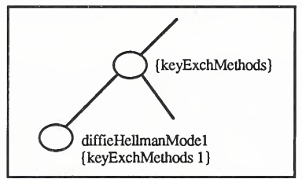
枠の中のオブジェクト識別子の木の図です。「{keyExchMethods}」の節点には上の親へ向かう線と右下へ向かうラベルの無い線があり、ラベルの付いた子は「diffieHellmanMode1 {keyExchMethods 1}」の 1 つだけです。
Figure 9.3.1.2:1 One Object Identifier is used
図 9.3.1.2:1 1 つの Object Identifier を使う
It is necessary to define which portions of the created bit string should be used as initialization vector, confidentiality key and integrity key. Such definitions are included in textual descriptions when a security object is registered.
作成されたビット列のどの部分を、初期化ベクトル、機密性鍵、完全性鍵として使うべきかを定義する必要があります。そのような定義は、セキュリティオブジェクトを登録するときに、文章による説明に含めます。
So far, just a Diffie-Hellman based algorithm has been registered. It could be interesting to see whether other algorithms can be registered. The other algorithm chosen to register is RSA based, where the initiating key manager sends a string encrypted with the peers public key. The responding key manager returns a string encrypted with both the local private key and the initiator´s public key. The symmetric key material is derived by an exclusive-or operation on the two strings.
これまでのところ、Diffie-Hellman に基づくアルゴリズムだけが登録されました。他のアルゴリズムも登録できるかどうかを見るのは、興味深いかもしれません。登録するために選んだもう一つのアルゴリズムは RSA に基づくもので、開始側の鍵マネージャーが、ピアの公開鍵で暗号化した文字列を送ります。応答側の鍵マネージャーは、ローカルの秘密鍵と開始側の公開鍵の両方で暗号化した文字列を返します。共通鍵素材は、2 つの文字列の排他的論理和演算によって導出されます。
枠の中に 3 行あります。右向きの矢印を伴う「B_p(tek_A)」、左向きの矢印を伴う「A_pB_s(tek_B)」、そして「tek = tek_A ⊕ tek_B」（⊕ は排他的論理和）です。
Figure 9.3.1.2:2 RSA based key exchange
図 9.3.1.2:2 RSA に基づく鍵交換
By exchanging the Ssrq and Ssrs PDUs encrypted with the key derived from the symmetric key material, the two parties can be convinced that they share the same secret key. This algorithm is registered in the following way:
共通鍵素材から導出した鍵で暗号化した Ssrq と Ssrs PDU を交換することで、2 つの当事者は、同じ共有シークレット鍵を共有していることを確信できます。このアルゴリズムは、次のようにして登録されます。
rsaMode1 KEY-EXCHG-ALG
PARAMETER TekSize
NkrqData SEQUENCE {
certPath CertificationPath,
unidirectKeys BOOLEAN OPTIONAL,
ENCRYPTED RandomA}
NkrsData SEQUENCE {
certPath CertificationPath,
unidirectKeys BOOLEAN OPTIONAL,
ENCRYPTED ENCRYPTED RandomB}
::= {keyExchMethod 2}
TekSize ::= INTEGERIt is assumed that the public key of B can be obtained from a directory service. An alternative is to send tekA in the clear.
B の公開鍵は、ディレクトリサービスから得られると想定します。代替策は、tekA を平文で送ることです。
Because of ASN.1 a problem is encountered. For example, in order to describe the semantics of the RSA based key exchange, the encrypted strings are represented as ENCRYPTED RandomA and ENCRYPTED ENCRYPTED RandomB respectively. Both RandomA and RandomB are of ASN.1 data type INTEGER. When implementing this type of key exchange, these integers are never exposed outside the cryptofacility in clear text form. What is exposed outside the cryptofacility is their representation in encrypted form, that is, ENCRYPTED RandomA and ENCRYPTED ENCRYPTED RandomB. However, the cryptofacility must then perform the encryption on the transfer syntax representation of an ASN.1 INTEGER. That restriction requires the cryptofacility to add the type identifier and length information. In order to avoid this, the encrypted version of the numbers could be represented as a BIT STRING or an OCTET STRING. For example, a random number, tekA, can be generated and encrypted. When the number is sent to the peer system, the ASN.1 identifier and length information can be added. However, the ASN.1 descriptions then will become less descriptive, see the following declaration:
ASN.1 のために問題が生じます。たとえば、RSA に基づく鍵交換の意味を記述するために、暗号化された文字列は、それぞれ ENCRYPTED RandomA と ENCRYPTED ENCRYPTED RandomB として表されます。RandomA と RandomB は、どちらも ASN.1 のデータ型 INTEGER です。この種の鍵交換を実装するとき、これらの整数は、平文の形で暗号機能の外にさらされることはありません。暗号機能の外にさらされるのは、暗号化された形の表現、すなわち ENCRYPTED RandomA と ENCRYPTED ENCRYPTED RandomB です。しかし、その場合、暗号機能は、ASN.1 INTEGER の転送構文表現に対して暗号化を行わなければなりません。この制約は、暗号機能に、型識別子と長さ情報を追加することを求めます。これを避けるために、数値の暗号化された版を BIT STRING または OCTET STRING として表現できます。たとえば、乱数 tekA を生成して暗号化できます。その数値をピアシステムに送るときに、ASN.1 の識別子と長さ情報を追加できます。ただし、その場合、ASN.1 の記述は記述性が低くなります。次の宣言を参照してください。
NkrqData SEQUENCE {
certPath CertificationPath,
unidirectKeys BOOLEAN OPTIONAL,
-- encrypted random number
OCTET STRING}9.3.2 Registration of rekeying methods
9.3.2 再鍵方式の登録
The approach taken in the KMSA-KCA and KCA-KCA protocol specifications is to let rekeying take place between two peer entities. Other approaches were discussed in Section 5.6.1.2.
KMSA-KCA および KCA-KCA プロトコル仕様で採られている方法は、2 つのピアエンティティ間で再鍵処理を行うことです。他の方法は 5.6.1.2 節で論じました。
The protocol has been defined under the assumption that rekeying is initiated by a subordinate contacting its immediate superior.
このプロトコルは、下位エンティティがその直近の上位エンティティに連絡することで再鍵処理を開始するという前提で定義されています。
As mentioned in 5.6.1.1 there are two different forms of rekeying, interactive and staged. The staged form of rekeying discussed in this section has similarities with [MATY86].
5.6.1.1 節で述べたとおり、再鍵には、対話型と段階的の 2 つの異なる形式があります。本節で論じる段階的再鍵は、[MATY86] と類似点があります。
The relationship between the KMSA and its immediate superior KCA, or between a KCA and its immediate superior KCA is important. Can a KCA trust that a KMSA behaves in a proper manner? If we have a time period T1-T2 and a KMSA has to initiate the rekeying during this time period, can the KCA be sure that the KMSA does not make several attempts in order to get several new certificates? Must the KCA check the identity of the KMSA by manual means before issuing a new certificate? At least the two problems mentioned can be circumvented if there are two phases. A first phase in which a KMSA sends the public key for certification, and a second phase in which the certificate is collected. The Rkrq and Rkrs PDUs are used for the first phase and the Rkdrq and Rkdrs PDUs for the second. If some time periods need to be included, for example, delivery of the public key between T1-T2, and collection of the new certificate between T2-T3, they can be included in the ASN.1 declaration of the rekey method. If there is a need for it, additional data can also be included.
KMSA とその直近の上位 KCA の間、または KCA とその直近の上位 KCA の間の関係は重要です。KCA は、KMSA が適切に振る舞うと信頼できるでしょうか。期間 T1-T2 があり、KMSA がこの期間中に再鍵処理を開始しなければならない場合、KCA は、KMSA が複数の新しい証明書を得ようとして複数回試行しないと確信できるでしょうか。新しい証明書を発行する前に、KCA は手作業で KMSA の識別情報を確認しなければならないでしょうか。少なくとも、挙げた2つの問題は、2つの段階を設ければ回避できます。第1段階では KMSA が認証のために公開鍵を送り、第2段階では証明書を受け取ります。Rkrq と Rkrs PDU は第1段階に、Rkdrq と Rkdrs PDU は第2段階に使われます。何らかの期間を含める必要がある場合、たとえば T1-T2 の間に公開鍵を配送し、T2-T3 の間に新しい証明書を受け取る場合、それらを再鍵方式の ASN.1 宣言に含められます。必要があれば、追加データも含められます。
Again there are two different ways to register a method; one or several Object Identifiers may be used. The rekey method registered below is based on the principle that the user creates its private and public key pair, and sends the public component to the KCA for certification. The KCA returns a certificate when contacted at a later point in time.
ここでも、方式を登録する方法は 2 通りあり、1 つまたは複数の Object Identifier を使えます。以下に登録する再鍵方式は、ユーザーが自身の秘密鍵と公開鍵のペアを作成し、公開鍵の構成要素を証明のために KCA に送るという原則に基づいています。KCA は、後の時点で連絡を受けたときに、証明書を返します。
The following ASN.1 declaration is used to register the rekey method:
再鍵方式を登録するために、次の ASN.1 宣言を使います。
rekWhenUserCreatesKey ALGORITHM
::= {rekeyingMethods 1}The algorithm dependent data conveyed in the Rkrq PDU is the public key to be certified.
Rkrq PDU で運ばれるアルゴリズム依存のデータは、証明される公開鍵です。
rekMeth1RkrqData ALGORITHM-ARGUMENT-REGISTRATION
ARGUMENT SubjectPublicKeyInfo
::= {rekeyingMethods 1 1}The algorithm dependent data conveyed in the Rkrs PDU is a transaction number.
Rkrs PDU で運ばれるアルゴリズム依存のデータは、トランザクション番号です。
rekMeth1RkrsData ALGORITHM-ARGUMENT-REGISTRATION
ARGUMENT Transaction
::= {rekeyingMethods 1 2}The algorithm dependent data conveyed in the Rkdrq PDU is the previously mentioned transaction number.
Rkdrq PDU で運ばれるアルゴリズム依存のデータは、先に述べたトランザクション番号です。
rekMeth1RkdrqData ALGORITHM-ARGUMENT-REGISTRATION
ARGUMENT Transaction
::= {rekeyingMethods 1 3}
Transaction ::= INTEGERThe algorithm dependent data conveyed in the Rkdrs PDU is the certified public key. [ISO 9594-8] makes a distinction between a user certificate and a CA certificate. A certificate delivered to a KMSA is a user certificate, while a certificate delivered to a KCA is a CA certificate.
Rkdrs PDU で運ばれるアルゴリズム依存のデータは、認証済みの公開鍵です。[ISO 9594-8] は、ユーザー証明書と CA 証明書を区別しています。KMSA に配送される証明書はユーザー証明書であり、KCA に配送される証明書は CA 証明書です。
rekMeth1RkdrsData ALGORITHM-ARGUMENT-REGISTRATION
ARGUMENT CHOICE {userCertificate [0] Certificate,
caCertificate [1] Certificate}
::= {rekeyingMethods 1 4}The registration is illustrated below:
登録を下に示します。
枠の中のオブジェクト識別子の木の図です。「{rekeyingMethods}」の節点には上の親へ向かう線と右下へ向かうラベルの無い線があります。ラベルの付いた子は「rekWhenUserCreatesKey {rekeyingMethods 1}」で、その下に「Rkrq parameter {rekeyingMethods 1 1}」「Rkrs parameter {rekeyingMethods 1 2}」「Rkdrq parameter {rekeyingMethods 1 3}」「Rkdrs parameter {rekeyingMethods 1 4}」の 4 つの子があります。
Figure 9.3.2:1 Several Object Identifiers are used
図 9.3.2:1 複数の Object Identifier を使う
The following macro is used when the rekey method is registered with a single Object Identifier:
再鍵方式を 1 つの Object Identifier で登録する場合は、次のマクロを使います。
REKEY-REG MACRO ::=
BEGIN
TYPE NOTATION ::= ParameterData RkrqData RkrsData
RkdrqData RkdrsData
VALUE NOTATION ::= VALUE(value OBJECT IDENTIFIER)
ParameterData ::= empty | "PARAMETER" type
RkrqData ::= "RkrqData" type
RkrsData ::= "RkrsData" type
RkdrqData ::= empty | "RkdrqData" type
RkdrsData ::= empty | "RkdrsData" type
ENDThe Rkdrq and Rkdrs PDUs are only used for a staged form of rekeying. If the rekeying is interactive these PDUs are not used, hence the empty declarations. The rekey method is registered in the same way as already described in section 9.3.1. The value of the Object Identifier when rekWhenUserCreatesKey is registered by using macro REKEY-REG is {rekeyingMethods 1}.
Rkdrq と Rkdrs PDU は、段階的な形の再鍵にのみ使われます。再鍵が対話型の場合、これらの PDU は使われないため、宣言が空になっています。再鍵方式は、9.3.1 節ですでに説明したのと同じ方法で登録されます。rekWhenUserCreatesKey をマクロ REKEY-REG を使って登録したときの Object Identifier の値は、{rekeyingMethods 1} です。
If the [RFC 1114] scheme is followed, how should the new public key of the topmost KCA be delivered to a KMSA or to a KCA lower in hierarchy? This cannot be fully described by the model. The public key or certificate of the topmost KCA must be delivered to the KMSA under integrity protection. The Rkrq and Rkrs PDUs could be used to deliver the topmost public key. These PDUs are sent protected by the Ekpdu. However, can the delivery of a new public key be technically regarded as rekeying? The following declaration makes it possible for a KMSA to obtain the public key of the topmost KCA (CA):
[RFC 1114] の方式に従う場合、最上位の KCA の新しい公開鍵を KMSA または階層上で下位の KCA にどのように配送すべきでしょうか。これはモデルでは完全には記述できません。最上位の KCA の公開鍵または証明書は、完全性保護のもとで KMSA に配送しなければなりません。最上位の公開鍵の配送には Rkrq と Rkrs PDU を使えます。これらの PDU は Ekpdu で保護されて送られます。しかし、新しい公開鍵の配送を技術的に再鍵処理とみなせるでしょうか。次の宣言により、KMSA は最上位の KCA（CA）の公開鍵を取得できます。
getPublicKey REKEY-REG
RkrqData NULL
RkrsData SubjectPublicKeyInfo
::= {rekeyingMethods 2}The declaration is a bit odd since the Object Identifier is used only to inform the receiver of the Rkrq PDU that the KMSA wants to obtain the public key, but the data associated with the Object Identifier, NULL, has no meaning.
この宣言は、やや奇妙です。Object Identifier が、KMSA が公開鍵を得たいことを Rkrq PDU の受信者に知らせるためにだけ使われ、Object Identifier に関連づけられたデータ NULL には意味がないためです。
9.4 PROTOCOL OVERVIEW
9.4 プロトコルの概要
Figure 9.4:1 shows an example of a protocol overview. The state diagram shows the PDU mapping for the KMSA-KMSA protocol when a new security association is established. The KMSA-KCA and KCA-KCA protocol have a similar functionality.
図 9.4:1 は、プロトコルの概要の例を示しています。状態遷移図は、新しいセキュリティアソシエーションが確立されるときの KMSA-KMSA プロトコルの PDU の対応づけを示します。KMSA-KCA プロトコルと KCA-KCA プロトコルも、同様の機能を持ちます。
![Two state diagrams in one frame. Downward arrows mark service primitives issued by the user, upward arrows mark PDUs received. "AS INITIATOR": Idle goes to WF_Kirs on KM-INITreq (down); WF_Kirs goes to Associated on Kirs (up); Associated goes to WF_Nkrs on NEW-KEYreq (down); WF_Nkrs goes to KEYED on Nkrs (up); KEYED goes to WF_Ssrs on SEC-SERVreq (down); WF_Ssrs returns to Associated on Ssrs (up); Associated goes to WF-Aarl on KM-RELEASEreq (down); WF-Aarl returns to Idle on (Aarls) (up). "AS RESPONDER": Idle goes to WF_KM-INITrsp on Kirq (up); WF_KM-INITrsp goes to Associated on KM-INITrsp (down); Associated goes to WF_NEW-KEYrsp on Nkrq (up); WF_NEW-KEYrsp goes to KEYED on NEW-KEYrsp (down); KEYED goes to WF_SEC-SERVrsp on Ssrq (up); WF_SEC-SERVrsp returns to Associated on SEC-SERVrsp (down); Associated goes to WF_A-RELEASErsp, next to which an upward arrow labelled (Aarq) is drawn; WF_A-RELEASErsp returns to Idle on KM-RELEASErsp (down). Note at the bottom: "() PDU belongs to ACSE, there is no corresponding KMPDU".](assets/ir-4983/p0131-figure-01.png)
1 つの枠に 2 つの状態遷移図があります。下向きの矢印は利用者が発行するサービスプリミティブ、上向きの矢印は受信する PDU を表します。「AS INITIATOR」（開始側）: Idle は KM-INITreq（下向き）で WF_Kirs に移り、WF_Kirs は Kirs（上向き）で Associated に移ります。Associated は NEW-KEYreq（下向き）で WF_Nkrs に移り、WF_Nkrs は Nkrs（上向き）で KEYED に移ります。KEYED は SEC-SERVreq（下向き）で WF_Ssrs に移り、WF_Ssrs は Ssrs（上向き）で Associated に戻ります。Associated は KM-RELEASEreq（下向き）で WF-Aarl に移り、WF-Aarl は (Aarls)（上向き）で Idle に戻ります。「AS RESPONDER」（応答側）: Idle は Kirq（上向き）で WF_KM-INITrsp に移り、WF_KM-INITrsp は KM-INITrsp（下向き）で Associated に移ります。Associated は Nkrq（上向き）で WF_NEW-KEYrsp に移り、WF_NEW-KEYrsp は NEW-KEYrsp（下向き）で KEYED に移ります。KEYED は Ssrq（上向き）で WF_SEC-SERVrsp に移り、WF_SEC-SERVrsp は SEC-SERVrsp（下向き）で Associated に戻ります。Associated は WF_A-RELEASErsp に移り、その次に上向き矢印 (Aarq) が描かれています。WF_A-RELEASErsp は KM-RELEASErsp（下向き）で Idle に戻ります。下部の注記: 「() PDU belongs to ACSE, there is no corresponding KMPDU」（括弧付きの PDU は ACSE に属し、対応する KMPDU はありません）。
Figure 9.4:1 State diagram for KMSA to KMSA protocol
図 9.4:1 KMSA 間プロトコルの状態遷移図
![Two layered diagrams in one frame showing service primitives. Each has three horizontal layers: KMASE, ACSE below it on the left, and PRESENTATION at the bottom; arrows show direction. "AS INITIATOR": into KMASE from above (down) KM-INITreq, KM-RELEASEreq, NEW-KEYreq and SEC-SERVreq; out of KMASE upward KM-INITcnf, KM-RELEASEcnf, NEW-KEYcnf and SEC-SERVcnf. KMASE to ACSE (down): A-ASSOCIATEreq (Kirq), A-RELEASEreq; ACSE to KMASE (up): A-ASSOCIATEcnf (Kirs), A-RELEASEcnf. KMASE directly to PRESENTATION, bypassing ACSE (down): P-DATAreq (Nkrq), P-DATAreq (Ekpdu); PRESENTATION to KMASE (up): P-DATAind (Nkrs), P-DATAind (Ekpdu). ACSE to PRESENTATION (down): P-CONNECTreq (Aarq), P-RELEASEreq (Arlrq); PRESENTATION to ACSE (up): P-CONNECTcnf (Aars), P-RELEASEcnf (Arlrs). "AS RESPONDER": out of KMASE upward KM-INITind, KM-RELEASEind, NEW-KEYind and SEC-SERVind; into KMASE (down) KM-INITrsp, KM-RELEASErsp, NEW-KEYrsp and SEC-SERVrsp. ACSE to KMASE (up): A-ASSOCIATEind (Kirq), A-RELEASEind; KMASE to ACSE (down): A-ASSOCIATErsp (Kirs), A-RELEASErsp. PRESENTATION to KMASE (up): P-DATAind (Nkrq), P-DATAind (Ekpdu); KMASE to PRESENTATION (down): P-DATAreq (NKRS), P-DATAreq (EKPDU). PRESENTATION to ACSE (up): P-CONNECTind (Aarq); P-RELEASEind (Arlrq) is drawn as a line without a visible arrowhead; ACSE to PRESENTATION (down): P-CONNECTrsp (Aars), P-RELEASErsp (Arlrs).](assets/ir-4983/p0132-figure-01.png)
1 つの枠にサービスプリミティブを示す 2 つの層構成の図があります。各図は3つの水平な層からなり、KMASE、その下の左側にACSE、最下部にPRESENTATIONがあります。矢印は方向を示します。「AS INITIATOR」（開始側）: 上からKMASEへ向かう矢印（下向き）にはKM-INITreq、KM-RELEASEreq、NEW-KEYreq、SEC-SERVreq、KMASEから上へ向かう矢印にはKM-INITcnf、KM-RELEASEcnf、NEW-KEYcnf、SEC-SERVcnfがあります。KMASEからACSEへの下向き矢印にはA-ASSOCIATEreq (Kirq)、A-RELEASEreq、ACSEからKMASEへの上向き矢印にはA-ASSOCIATEcnf (Kirs)、A-RELEASEcnfがあります。ACSEを迂回してKMASEからPRESENTATIONへ向かう下向き矢印にはP-DATAreq (Nkrq)、P-DATAreq (Ekpdu)、PRESENTATIONからKMASEへ向かう上向き矢印にはP-DATAind (Nkrs)、P-DATAind (Ekpdu)があります。ACSEからPRESENTATIONへの下向き矢印にはP-CONNECTreq (Aarq)、P-RELEASEreq (Arlrq)、PRESENTATIONからACSEへの上向き矢印にはP-CONNECTcnf (Aars)、P-RELEASEcnf (Arlrs)があります。「AS RESPONDER」（応答側）: KMASEから上へ向かう矢印にはKM-INITind、KM-RELEASEind、NEW-KEYind、SEC-SERVind、上からKMASEへ向かう下向き矢印にはKM-INITrsp、KM-RELEASErsp、NEW-KEYrsp、SEC-SERVrspがあります。ACSEからKMASEへの上向き矢印にはA-ASSOCIATEind (Kirq)、A-RELEASEind、KMASEからACSEへの下向き矢印にはA-ASSOCIATErsp (Kirs)、A-RELEASErspがあります。PRESENTATIONからKMASEへの上向き矢印にはP-DATAind (Nkrq)、P-DATAind (Ekpdu)、KMASEからPRESENTATIONへの下向き矢印にはP-DATAreq (NKRS)、P-DATAreq (EKPDU)があります。PRESENTATIONからACSEへの上向き矢印にはP-CONNECTind (Aarq)があります。P-RELEASEind (Arlrq)は矢じりが見えない線として描かれています。ACSEからPRESENTATIONへの下向き矢印にはP-CONNECTrsp (Aars)、P-RELEASErsp (Arlrs)があります。
Figure 9.4:2 Service primitives used
図 9.4:2 使用するサービスプリミティブ
The OSI aspects of an application process transpires in the application entity, see the Application Layers Structure document [ISO 9545] for more details. The key management service primitives can be seen as issued from the part of the key management application process that resides outside the application entity.
アプリケーションプロセスの OSI に関わる機能は、アプリケーションエンティティで実現されます。詳細については、Application Layers Structure 文書 [ISO 9545] を参照してください。鍵管理サービスプリミティブは、アプリケーションエンティティの外部にある鍵管理アプリケーションプロセスの部分から発行されるものとみなせます。
The initiating key management application process initiates a key exchange by issuing the service primitive KM-INITreq, which is sent to the Key Management ASE (KMASE). As a response, the peer key manager issues the KM-INITrsp service primitive. The KM-INIT service primitive is primarily used to open an application association, but it could also be used to perform algorithm negotiations. The Kirq PDU is derived from the parameters included in the KM-INITreq and the Kirs PDU is derived from the parameters included the KM-INITrsp. The KMASE maps the two PDUs onto the A-ASSOCIATE service primitive of ACSE. ACSE in turn uses the presentation layer services by mapping its Aarq and Aars PDUs onto the P-CONNECT service primitive. After an application association is established, the KMASE uses the presentation layer services directly. ACSE is used again when the application association has to be terminated. After the establishment phase, symmetric key material is created by using the NEW-KEY service primitive. The Ssrq and Ssrs PDUs are derived from the parameters included in the SECURITY SERVICE service primitive. Those PDUs are mapped to the Ekpdu which is confidentiality and integrity protected by the symmetric key material previously established. The last step is to terminate the application association by using the KM-RELEASE service primitive.
開始側の鍵管理アプリケーションプロセスは、サービスプリミティブ KM-INITreq を発行して鍵交換を開始し、これは Key Management ASE（KMASE）に送られます。応答として、ピアの鍵マネージャーは KM-INITrsp サービスプリミティブを発行します。KM-INIT サービスプリミティブは主にアプリケーションアソシエーションを開くために使われますが、アルゴリズムのネゴシエーションにも使えます。Kirq PDU は KM-INITreq に含まれるパラメーターから導出され、Kirs PDU は KM-INITrsp に含まれるパラメーターから導出されます。KMASE はこの2つの PDU を ACSE の A-ASSOCIATE サービスプリミティブに対応づけます。次に ACSE は、Aarq と Aars PDU を P-CONNECT サービスプリミティブに対応づけて、プレゼンテーション層のサービスを使います。アプリケーションアソシエーションが確立された後、KMASE はプレゼンテーション層のサービスを直接使います。アプリケーションアソシエーションを終了する際には、ACSE が再び使われます。確立フェーズの後、NEW-KEY サービスプリミティブを使って共通鍵素材が作成されます。Ssrq と Ssrs PDU は、SECURITY SERVICE サービスプリミティブに含まれるパラメーターから導出されます。これらの PDU は Ekpdu に対応づけられ、Ekpdu は先に確立された共通鍵素材によって機密性と完全性が保護されます。最後のステップでは、KM-RELEASE サービスプリミティブを使ってアプリケーションアソシエーションを終了します。
9.5 INTEGRITY PROCEDURE
9.5 完全性の手順
The macro SEALED is used to describe integrity processing of key management protocol PDUs. The definition of the macro is:
マクロ SEALED は、鍵管理プロトコル PDU の完全性処理を記述するために使われます。マクロの定義は次のとおりです。
SEALED MACRO ::=
BEGIN
TYPE NOTATION ::= type(ToBeProtected)
VALUE NOTATION ::= value( VALUE
SEQUENCE {
SEQUENCE {
ToBeProtected,
padding OCTET STRING OPTIONAL},
icv OCTET STRING
-- where the OCTET STRING is icv size long and obtained by applying
-- an integrity algorithm on SEQUENCE {ToBeProtected, padding}
})
END -- of SEALEDThe transfer syntax representation of:
次の転送構文表現：
SEQUENCE {
SEQUENCE {
ToBeProtected,
padding OCTET STRING OPTIONAL},
icv OCTET STRING}has to fit the block size of the encryption algorithm used. The padding field is used to adjust the size. If the algorithm is not block oriented padding can be omitted. The impression of the SEALED macro may be that it is too long and unnecessarily complicated. The corresponding definition in [SDNS 90-4262] is:
使用する暗号化アルゴリズムのブロックサイズに合わせなければなりません。サイズを調整するためにパディングフィールドが使われます。アルゴリズムがブロック指向でなければ、パディングは省略できます。SEALED マクロは長すぎて不必要に複雑だという印象を与える場合があります。[SDNS 90-4262] の対応する定義は次のとおりです。
PlainTextKpdu ::= SEQUENCE {
plaintext CHOICE {
[0] IMPLICIT Ssrq,
[1] IMPLICIT Ssrs,
[2] IMPLICIT Estat,
[3] IMPLICIT Kurq,
[4] IMPLICIT Kurs,
[5] IMPLICIT Rkrq,
[6] IMPLICIT Rkrs,
[7] IMPLICIT Srkrq,
[8] IMPLICIT Srkrs,
[9] IMPLICIT Srdrq,
[10] IMPLICIT Srdrs,
[11] IMPLICIT Crrq,
[12] IMPLICIT Crrs},
padding OCTET STRING OPTIONAL,
icvIntegrityCheckValue}However, it is felt that the integrity check value should be computed on a data structure. That is, something that can be regarded to be a unit, for instance, something encapsulated by a SEQUENCE declaration. That is not the case in the above declaration.
しかし、完全性チェック値は、データ構造に対して計算すべきだと考えます。つまり、たとえば SEQUENCE 宣言でカプセル化されたものなど、1 つの単位とみなせるものに対して計算すべきです。上の宣言ではそうなっていません。
An example of an existing integrity algorithm is [ANSI X9.9].
既存の完全性アルゴリズムの一例は、[ANSI X9.9] です。
9.6 ENCRYPTION PROCEDURE
9.6 暗号化の手順
The macro ENCRYPTED is used to describe the encryption procedure. The definition of the macro is:
マクロ ENCRYPTED は、暗号化の手順を記述するために使われます。マクロの定義は次のとおりです。
ENCRYPTED MACRO ::=
BEGIN
TYPE NOTATION ::= type(ToBeEnciphered)
VALUE NOTATION ::= value (VALUE BIT STRING)
END -- of ENCRYPTEDThe data to be encrypted appears in ToBeEnciphered. The result of the encryption is an ASN.1 BIT STRING. The same macro is defined in [ISO 9594-8]. It has been redefined in order to have the macros describing confidentiality and integrity in the same ASN.1 module.
暗号化されるデータは ToBeEnciphered に現れます。暗号化の結果は ASN.1 の BIT STRING です。同じマクロが [ISO 9594-8] で定義されています。機密性と完全性を記述するマクロを同じ ASN.1 モジュールに置くために、再定義されています。
9.7 KEY EXCHANGE
9.7 鍵交換
The Nkrq and Nkrs PDUs convey the algorithm dependent data in the field algArgument. The ASN.1 declarations of the PDUs are:
Nkrq と Nkrs PDU は、アルゴリズム依存のデータをフィールド algArgument で運びます。PDU の ASN.1 宣言は次のとおりです。
Nkrq ::= SEQUENCE {
algArgId [0] IMPLICIT OBJECT IDENTIFIER OPTIONAL,
algArgument [1] IMPLICIT ANY DEFINED BY algArgId}
Nkrs ::= SEQUENCE {
algArgId [0] IMPLICIT OBJECT IDENTIFIER OPTIONAL,
algArgument [1] IMPLICIT ANY DEFINED BY algArgId}The algArgId field is optional because there may be prior agreements about the algorithm to use. Chapter 9.3.1 proposes two different solutions of how to register the algorithm described in [GRAFF90]. Using the ALGORITHM-ARGUMENT-REGISTRATION macro to register the arguments, the field algArgId in the Nkrq carries Object Identifier value {keyExchMethod 1 1}. The corresponding field in the Nkrs carries {keyExchMethod 1 2}. {keyExchMethod 1} is the value notation for the Object Identifier used to register diffieHellmanMode1 as a key exchange method. When diffieHellmanMode1 is registered by the KEY-EXCH-ALG macro, the algArgId fields may carry {keyExchMethod 1}.
使用するアルゴリズムについて事前の合意がある場合があるため、フィールド algArgId はオプションです。第9.3.1章では、[GRAFF90] で説明されているアルゴリズムを登録する2つの異なる方法を提案しています。引数の登録に ALGORITHM-ARGUMENT-REGISTRATION マクロを使う場合、Nkrq のフィールド algArgId は Object Identifier の値 {keyExchMethod 1 1} を運びます。Nkrs の対応するフィールドは {keyExchMethod 1 2} を運びます。{keyExchMethod 1} は、diffieHellmanMode1 を鍵交換方式として登録するために使われる Object Identifier の値表記です。diffieHellmanMode1 を KEY-EXCH-ALG マクロで登録した場合、algArgId フィールドは {keyExchMethod 1} を運ぶことがあります。
The field algArgument in the Nkrq when diffieHellmanMod1 is chosen, carries the following data:
diffieHellmanMod1 を選択した場合、Nkrq のフィールド algArgument は次のデータを運びます。
SEQUENCE {
certPath CertificationPath,
unidirectKeys BOOLEAN OPTIONAL,
SIGNED EXPONENTIATION A P RandomA}The field algArgument in the Nkrs carries the following data:
Nkrs のフィールド algArgument は、次のデータを運びます。
SEQUENCE {
certPath CertificationPath,
unidirectKeys BOOLEAN OPTIONAL,
SIGNED EXPONENTIATION A P RandomB}If the [RFC 1114] scheme is followed, the two communicating KMSAs shares a common point of trust. The common point of trust is determined from the distinguished name of the KMSAs, herein called KMSA A and KMSA B. The distinguished name of a KMSA appears in the certificate of the KMSA. It is the lowest certificate in hierarchy of the certificates included in the certification path provided by the KMSA. At the common point of trust, both KMSA A and KMSA B are in possession of the public key of the associated KCA. By being in possession of that public key the certification path can be verified. From the certificate of the remote KMSA is extracted the public key. This public key is needed to verify the digital signature produced by the remote KMSA. KMSA A has to verify:
[RFC 1114] の方式に従う場合、通信する2つの KMSA は共通の信頼点を共有します。この共通の信頼点は、ここで KMSA A および KMSA B と呼ぶ KMSA の識別名から決まります。KMSA の識別名は、その KMSA の証明書に現れます。それは、KMSA が提供する認証パスに含まれる証明書の階層で最も下位の証明書です。共通の信頼点では、KMSA A と KMSA B はどちらも、それぞれに関連する KCA の公開鍵を持っています。その公開鍵を持つことによって、認証パスを検証できます。リモート KMSA の証明書から公開鍵が取り出されます。この公開鍵は、リモート KMSA が生成したデジタル署名を検証するために必要です。KMSA A は次を検証しなければなりません。
SIGNED EXPONENTIATION A P RandomB
SIGNED EXPONENTIATION A P RandomB
After the signature is verified, KMSA A derives the key string by taking the value sent by KMSA B, EXPONENTIATION A P RandomB (\(\alpha^Y \bmod \rho\)), and performs the operation:
署名が検証された後、KMSA A は、KMSA B が送った値 EXPONENTIATION A P RandomB（\(\alpha^Y \bmod \rho\)）を使って、次の演算を行うことで、鍵文字列を導出します。
\((\alpha^Y \bmod \rho)^X \bmod \rho = \alpha^{XY} \bmod \rho\).
\((\alpha^Y \bmod \rho)^X \bmod \rho = \alpha^{XY} \bmod \rho\).
KMSA B performs the corresponding operation.
KMSA B は、対応する演算を行います。
The authentication information is carried by the Nkrq and Nkrs PDUs; there is no need to include authentication information in the Ssrq and Ssrs PDUs. However, certain algorithms, for example, the one described in NLSP [ISO 11577], need to include authentication information in at least the Ssrq. The definitions of the Ssrq and Ssrs PDUs are:
認証情報は Nkrq と Nkrs PDU で運ばれるため、Ssrq と Ssrs PDU に認証情報を含める必要はありません。ただし、NLSP [ISO 11577] で説明されているものなど、一部のアルゴリズムは、少なくとも Ssrq に認証情報を含める必要があります。Ssrq と Ssrs PDU の定義は次のとおりです。
Ssrq ::= SET {
algDepData [0] IMPLICIT SET {
algArgId [0] IMPLICIT OBJECT IDENTIFIER OPTIONAL,
algArgument [1] IMPLICIT ANY DEFINED BY algArgId} OPTIONAL,
said [1] Said,
spParameters CHOICE {
[2] IMPLICIT TLSPParams,
[3] IMPLICIT NLSPParams,
[4] IMPLICIT SDEParams}}
Ssrs ::= SsrqThe declaration:
宣言:
SET {
algArgId [0] IMPLICIT OBJECT IDENTIFIER OPTIONAL,
algArgument [1] IMPLICIT ANY DEFINED BY algArgId} OPTIONALis made optional because it needs only to be present when algorithm dependent data is required.
は、アルゴリズム依存のデータが必要なときにだけ存在すればよいため、オプションとされています。
In an asymmetric form of key management the KMSA-KCA and KCA-KCA protocols are used to establish the new private key and certificate, alternatively just the certificate, of a KMSA and KCA respectively. In order to establish a confidentiality and integrity protected channel, the Nkrq and Nkrs PDUs are used to create the needed key material. Since the KMSA-KCA and KCA-KCA protocols are not intended to create keys and attributes for security protocols, they do not include the Ssrq and Ssrs PDU definitions. Instead, they contain the Rkrq, Rkrs, Rkdrq and Rkdrs PDUs.
非対称形式の鍵管理では、KMSA-KCA プロトコルと KCA-KCA プロトコルを使って、それぞれ KMSA と KCA の新しい秘密鍵と証明書、または証明書のみを確立します。機密性と完全性が保護されたチャネルを確立するため、Nkrq と Nkrs PDU を使って必要な鍵素材を作成します。KMSA-KCA プロトコルと KCA-KCA プロトコルは、セキュリティプロトコル用の鍵と属性を作成することを意図していないため、Ssrq と Ssrs PDU の定義を含みません。代わりに、Rkrq、Rkrs、Rkdrq、Rkdrs PDU を含みます。
9.8 KMSA TO KMSA PROTOCOL
9.8 KMSA 間プロトコル
The KMSA-KMSA protocol specifies the interaction between two KMSAs. The mission of the KMSA-KMSA protocol is to establish the keys and associated attributes needed by the two communicating security protocols, or to update the security association.
KMSA-KMSA プロトコルは、2 つの KMSA の間の相互作用を規定します。KMSA-KMSA プロトコルの役割は、通信する 2 つのセキュリティプロトコルが必要とする鍵と関連する属性を確立すること、またはセキュリティアソシエーションを更新することです。
9.8.1 Algorithm choice
9.8.1 アルゴリズムの選択
There are three different possibilities for two KMSAs to establish the algorithms to use:
2 つの KMSA が、使用するアルゴリズムを確立する方法は、3 通りあります。
•The KMSAs have a priori agreements;
•KMSA が事前の合意を持っています。
•The KMSAs have prior agreements but need to initialize cryptographic variables;
•KMSA が事前の合意を持っていますが、暗号変数を初期化する必要があります。
•The KMSAs negotiate about the algorithms to use.
•KMSA が、使用するアルゴリズムについてネゴシエーションします。
The protocol uses the Kirq and Kirs PDUs to establish the algorithms.
プロトコルは、アルゴリズムを確立するために Kirq と Kirs PDU を使います。
Kirq ::= SEQUENCE {
protocolVersion ProtocolVersion,
secServGrpProp [0] IMPLICIT SecServGrpProp OPTIONAL,
keyEchGrpProp CHOICE {
[1] IMPLICIT AsymmKeyExchGrpProp,
[2] IMPLICIT SymmKeyExchGrpProp } OPTIONAL }Kirs ::= SEQUENCE {
stateResult StateResult,
protocolVersion ProtocolVersion,
secServGrpAcc [0] IMPLICIT SecServGrpAcc OPTIONAL
keyEchGrpAcc CHOICE {
[1] IMPLICIT AsymmKeyExchGrpAcc,
[2] IMPLICIT SymmKeyExchGrpAcc } OPTIONAL}
SecServGrpProp ::= SEQUENCE {
confAlgs SEQUENCE OF AlgorithmIdentifier,
icvAlgs SEQUENCE OF AlgorithmIdentifier}
SecServGrpAcc ::= SEQUENCE {
confAlg AlgorithmIdentifier,
icvAlg AlgorithmIdentifier}
AsymmKeyExchGrpProp ::= SEQUENCE {
keyExchMethods SEQUENCE OF AlgorithmIdentifier
-- possibly more declarations have to be put in}
AsymmKeyExchGrpAcc ::= SEQUENCE {
keyExchMethod AlgorithmIdentifier
-- possibly more declarations have to be put in}9.8.1.1 A priori agreements
9.8.1.1 事前の合意
Both secServGrpProp and keyEchGrpProp are optional because there can be prior agreements between the KMSAs about the algorithms to use. The KMSAs may therefore have no need to send the information contained in secServGrpProp and keyEchGrpProp. Before the initiating key manager performs a key exchange, it looks up in the SMIB whether there are prior agreements made with the peer system.
secServGrpProp と keyEchGrpProp は、KMSA 間で使用するアルゴリズムについて事前の合意があり得るため、どちらもオプションです。したがって、KMSA は secServGrpProp と keyEchGrpProp に含まれる情報を送る必要はありません。開始側の鍵マネージャーは、鍵交換を行う前に、ピアシステムとの事前合意があるかどうかを SMIB で調べます。
Problems arise when a KMSA makes a priori agreements with several other KMSAs and the agreements include different types of algorithms. For example, KMSA A has made an agreement to use key exchange method diffieHellmanMode1 with KMSA B and the key exchange method described in NLSP with KMSA C. Since algorithm identifiers are not exchanged when the application association is opened, how can KMSA A when acting as the responding party know the syntax of the algorithm dependent data conveyed in the Nkrq PDU? This is because KMSA A does not yet know the identity of the initiating party when the Nkrq is received. One solution is to do a table look-up based on the remote party´s presentation address; thereby finding out the key exchange method going to be used. This look-up has to be performed at the creation of the application association, thus, before the Nkrq arrives. The presentation address uniquely distinguishes the remote key management entity. A second possibility is to include the distinguished name of a key management entity, alternatively a domain identifier, in the Kirq and Kirs PDUs. A third possibility is to include the Object Identifier value in the Nkrq PDU. This Object Identifier is declared as an optional parameter. The intention is that if the algorithms are preestablished, it has to be possible locally to determine and apply the Object Identifier once the association is established with the peer key management entity. The way in which the translation from transfer to abstract syntax is done is important. If the translation is done in the presentation layer, when an Nkrq PDU arrives encapsulated in a presentation PDU, the ASN.1 parser must know the value of the Object Identifier, otherwise it cannot make the translation from transfer to abstract syntax.
KMSA が複数の他の KMSA と事前合意を行い、その合意に異なる種類のアルゴリズムが含まれると、問題が生じます。たとえば、KMSA A は KMSA B とは鍵交換方式 diffieHellmanMode1 を、KMSA C とは NLSP に記述された鍵交換方式を使うことで合意しているとします。アプリケーションアソシエーションを開くときにアルゴリズム識別子は交換されません。そのため、応答側として動作する KMSA A は、Nkrq PDU で伝達されるアルゴリズム依存データの構文をどのように知ることができるでしょうか。これは、Nkrq の受信時点では KMSA A が開始側の識別情報をまだ知らないためです。解決策の一つは、リモート当事者のプレゼンテーションアドレスに基づいてテーブルを検索し、使用される鍵交換方式を特定することです。この検索は、アプリケーションアソシエーションの作成時、つまり Nkrq が到着する前に行わなければなりません。プレゼンテーションアドレスは、リモートの鍵管理エンティティを一意に識別します。二つ目の方法は、鍵管理エンティティの識別名、またはドメイン識別子を Kirq と Kirs PDU に含めることです。三つ目の方法は、Object Identifier の値を Nkrq PDU に含めることです。この Object Identifier はオプションのパラメーターとして宣言されます。アルゴリズムが事前に確立されている場合、ピアの鍵管理エンティティとのアソシエーションが確立された後、ローカルで Object Identifier を特定して適用できなければならない、というのが意図です。転送構文から抽象構文への変換方法は重要です。変換がプレゼンテーション層で行われる場合、プレゼンテーション PDU にカプセル化された Nkrq PDU が到着したとき、ASN.1 パーサーは Object Identifier の値を知っていなければなりません。そうでなければ、転送構文から抽象構文への変換を行えません。
9.8.1.2 Need to initialize cryptographic variables
9.8.1.2 暗号変数の初期化の必要性
The two communicating KMSAs may know the algorithms to use but they need to initialize some cryptographic variables. For example, the values a and r in Diffie-Hellman can be preestablished or they can be unique for each session. In the previous section it was assumed that the cryptographic variables were preestablished. Discussions Of Symmetrical (Secret Key) And Asymmetrical (Public Key) Cryptography [BARK91] suggests to have r fixed because it needs to be a strong prime number. The motive is that creating a strong prime number is too time consuming. It should therefore be created in advance and not during the session. Annex C of NLSP [ISO 11577] suggests to have a and r included in the exchange. This would make it possible to make them unique for each session. If the security domain chooses the latter solution, the following described protocol definitions make it possible to make them unique on a per session basis. The PARAMETER field of the KEY-EXCH and ALGORITHM macros are used to register the cryptographic variables. When diffieHellmanMode1 was registered by using the KEY-EXCH macro, the registration was done in the following way:
通信する 2 つの KMSA は、使用するアルゴリズムを知っていても、いくつかの暗号変数を初期化する必要があります。たとえば、Diffie-Hellman の値 a と r は事前に確立しておくことも、セッションごとに固有にすることもできます。前節では、暗号変数は事前に確立されていると仮定しました。Discussions Of Symmetrical (Secret Key) And Asymmetrical (Public Key) Cryptography [BARK91] は、r は強素数である必要があるため、r を固定することを提案しています。その理由は、強素数の作成に時間がかかりすぎることです。したがって、強素数はセッション中ではなく事前に作成すべきです。NLSP [ISO 11577] の附属書 C は、a と r を交換に含めることを提案しています。これにより、a と r をセッションごとに固有にできます。セキュリティドメインが後者の解決策を選ぶ場合、以下に説明するプロトコル定義によって、セッションごとに固有にできます。暗号変数の登録には、KEY-EXCH マクロと ALGORITHM マクロの PARAMETER フィールドが使われます。diffieHellmanMode1 を KEY-EXCH マクロで登録したとき、登録は次のように行われました。
diffieHellmanMode1 KEY-EXCHG-ALG
PARAMETER SEQUENCE {
alpha INTEGER,
rho INTEGER}
NkrqData SEQUENCE {
certPath CertificationPath,
unidirectKeys BOOLEAN OPTIONAL,
SIGNED EXPONENTIATION A P RandomA}
NkrsData SEQUENCE {
certPath CertificationPath,
unidirectKeys BOOLEAN OPTIONAL,
SIGNED EXPONENTIATION A P RandomB}
::= {keyExchMethod 1}The initiating key management entity can include a and r in AlgorithmIdentifier. AlgorithmIdentifier is included in keyExchMethods which is a subfield of the ASN.1 data type AsymmKeyExchGrpProp. AsymmKeyExchGrpProp is part of the Kirq PDU. However, the initiating entity must then also include the Object Identifier value of algorithm which is included in AlgorithmIdentifier. The possibility exists to have "algorithm" as an optional field. It is not declared optional because the AlgorithmIdentifier as defined in [ISO 9594-8] is used. Since the algorithms are preestablished only one algorithm identifier needs to be included in keyExchMethods.
開始側の鍵管理エンティティは、a と r を AlgorithmIdentifier に含められます。AlgorithmIdentifier は keyExchMethods に含まれ、keyExchMethods は ASN.1 データ型 AsymmKeyExchGrpProp のサブフィールドです。AsymmKeyExchGrpProp は Kirq PDU の一部です。ただし、その場合、開始側のエンティティは、AlgorithmIdentifier に含まれる algorithm の Object Identifier の値も含めなければなりません。「algorithm」をオプションのフィールドにする可能性はあります。[ISO 9594-8] で定義された AlgorithmIdentifier を使うため、オプションとは宣言されていません。アルゴリズムは事前に確立されているため、keyExchMethods に含める必要があるアルゴリズム識別子は 1 つだけです。
AsymmKeyExchGrpProp ::= SEQUENCE {
keyExchMethods SEQUENCE OF AlgorithmIdentifier,
-- possibly more declarations have to be put in}The ASN.1 data type AlgorithmIdentifier has the following definition:
ASN.1 データ型 AlgorithmIdentifier の定義は次のとおりです。
AlgorithmIdentifier ::= SEQUENCE {
algorithm OBJECT IDENTIFIER,
parameter ANY DEFINED BY algorithm}The parameter field will contain:
parameter フィールドには、次が含まれます。
SEQUENCE {
alpha INTEGER,
rho INTEGER}.Allowing a unique a and r for each session may lead to another problem. Can the receiver trust that a good value for r is chosen? If the values are preestablished, such a trust does exist.
セッションごとに固有の a と r を認めると、別の問題が生じる場合があります。受信者は、r に適切な値が選ばれていると信頼できるでしょうか。値が事前に確立されていれば、そのような信頼は存在します。
9.8.1.3 Algorithm negotiation
9.8.1.3 アルゴリズムのネゴシエーション
If there are no agreements between the KMSAs, they must perform an algorithm negotiation. It is up to the local security policy to decide whether all algorithms available in the system can be revealed during the negotiation phase.
KMSA の間に合意がない場合、KMSA はアルゴリズムのネゴシエーションを行わなければなりません。システムで利用できるすべてのアルゴリズムをネゴシエーションフェーズで明らかにしてよいかどうかは、ローカルのセキュリティポリシーが決めることです。
The ASN.1 variable secServGrpProp contains the confidentiality and integrity algorithms proposed by the initiating key management entity. The sequences are ranked in preferred order (most preferred is first in sequence).
ASN.1 変数 secServGrpProp には、開始側の鍵管理エンティティが提案する機密性アルゴリズムと完全性アルゴリズムが含まれます。シーケンスは優先順位順に並べられます（最も優先度の高いものがシーケンスの先頭です）。
secServGrpProp [0] IMPLICIT SecServGrpProp OPTIONAL
SecServGrpProp ::= SEQUENCE {
confAlgs SEQUENCE OF AlgorithmIdentifier,
icvAlgs SEQUENCE OF AlgorithmIdentifier}The responding key manager selects one of the algorithms proposed:
応答側の鍵マネージャーは、提案されたアルゴリズムの一つを選択します。
secServGrpAcc [0] IMPLICIT SecServGrpAcc OPTIONAL
SecServGrpAcc ::= SEQUENCE {
confAlg AlgorithmIdentifier,
icvAlg AlgorithmIdentifier}The ASN.1 variable keyEchGrpProp indicates whether an asymmetric or symmetric algorithm is employed. The choice is made in the following declaration:
ASN.1 変数 keyEchGrpProp は、非対称アルゴリズムと共通鍵アルゴリズムのどちらを使うかを示します。選択は、次の宣言で行われます。
keyEchGrpProp CHOICE {
[1] IMPLICIT AsymmKeyExchGrpProp,
[2] IMPLICIT SymmKeyExchGrpProp}
AsymmKeyExchGrpProp ::= SEQUENCE {
keyExchMethods SEQUENCE OF AlgorithmIdentifier
-- possibly more declarations have to be put in}No definitions are made for a symmetric form of key management, but the variable SymmKeyExchGrpProp is designated for the symmetric definitions. A question is whether special PDU types should be defined for the symmetric form of key management. The service negotiation phase (performed by exchanging the Ssrq and Ssrs PDUs) can still be the same for the two schemes. Should both schemes use the same PDUs for the key establishment phase? If so, the Nkrq and Nkrs PDUs are also used for symmetric purposes. This is possible because the protocol is algorithm independent. Since [ANSI X9.17] includes a lot of options; it is probably easier to proceed with the symmetric definitions by eliminating some of the seldom used X9.17 options. If the solution is to use generic PDU types, it is felt that the current names of the PDUs imply an asymmetric form of key management. The names should instead be made applicable for both an asymmetric and symmetric form of key management. On the other hand, if a separation is made, the protocol becomes more clear and easy to read. See also section 9.17.
共通鍵形式の鍵管理についての定義はありませんが、変数 SymmKeyExchGrpProp は共通鍵の定義用に指定されています。問題は、共通鍵形式の鍵管理に特別な PDU 型を定義すべきかどうかです。サービスのネゴシエーションフェーズ（Ssrq と Ssrs PDU の交換によって実行される）は、どちらの方式でも同じにできます。両方の方式で鍵確立フェーズに同じ PDU を使うべきでしょうか。そうする場合、Nkrq と Nkrs PDU は共通鍵の用途にも使われます。プロトコルはアルゴリズムに依存しないため、これは可能です。[ANSI X9.17] には多くのオプションが含まれているため、あまり使われない X9.17 のオプションをいくつか除いて共通鍵の定義を進めるほうが、おそらく容易です。汎用 PDU 型を使う場合、現在の PDU 名は非対称形式の鍵管理を示唆していると考えられます。その名前は、非対称形式と共通鍵形式の両方の鍵管理に適用できるものにすべきです。一方、分離する場合、プロトコルはより明確で読みやすくなります。9.17 節も参照してください。
The above ASN.1 definitions do not allow a mix of asymmetric and symmetric key management. The idea was that in an implementation either of the approaches is selected. However, often standards do allow a great deal of flexibility, it is up to the ones implementing a standard to choose between the different options offered. The following ASN.1 definitions allow a mix of asymmetric and symmetric key management.
上の ASN.1 定義は、非対称形式と共通鍵形式の鍵管理の混在を認めていません。考え方は、実装ではどちらかの方法が選ばれるというものでした。しかし、標準は大きな柔軟性を認めることがよくあり、提供された異なるオプションの中から選ぶのは、標準を実装する側です。次の ASN.1 定義は、非対称形式と共通鍵形式の鍵管理の混在を認めています。
keyEchGrpProp SEQUENCE OF CHOICE {
[1] IMPLICIT AsymmKeyExchGrpProp,
[2] IMPLICIT SymmKeyExchGrpProp}
AsymmKeyExchGrpProp ::= SEQUENCE {
keyExchMethods AlgorithmIdentifier
-- possibly more declarations have to be put in}The proposed scheme does not relate a proposed key exchange algorithm to a particular proposed encryption and integrity algorithm. If instead the algorithms should be regarded as a unit, the following definitions are more appropriate:
提案方式は、提案された鍵交換アルゴリズムを、提案された特定の暗号化アルゴリズムおよび完全性アルゴリズムに関連づけていません。アルゴリズムを一つの単位とみなすべきであれば、次の定義のほうが適切です。
PropAlgPackage ::= SEQUENCE OF SEQUENCE {
keyExchAlg AlgorithmIdentifier,
encrAlg AlgorithmIdentifier,
integrAlg AlgorithmIdentifier}
AccAlgPackage ::= SEQUENCE {
keyExchAlg AlgorithmIdentifier,
encrAlg AlgorithmIdentifier,
integrAlg AlgorithmIdentifier}In the case of Diffie-Hellman, how do the KMSAs know in which finite field1 the computations are done? If the document type approach is chosen, such kind of information can be included in the document type. This further emphasizes the need of a textual description in the register. The KMSAs also need to agree on the size of r.
Diffie-Hellman の場合、KMSA は、計算がどの有限体1で行われるかをどのように知るのでしょうか。ドキュメントタイプの方法を選ぶ場合、そのような情報をドキュメントタイプに含められます。これは、レジスターに文章による説明が必要であることをさらに強調します。KMSA は、r のサイズについても合意する必要があります。
Certificate formats may also be negotiated. The protocol definitions are made under the assumption that certificates described as in [ISO 9594-8] are used. However, a security domain might want to include other type of information in a certificate, and therefore defines its own certificate format.
証明書の形式もネゴシエーションされる場合があります。プロトコル定義は、[ISO 9594-8] で説明されている証明書が使われるという前提で作られています。しかし、セキュリティドメインによっては、証明書に別の種類の情報を含めたいと考え、そのため独自の証明書形式を定義する場合があります。
During the the two KMSAs negotiation, the situation can occur that they do not have algorithms in common. The stateResult parameter in the Kirs PDU is used to detect this situation. If the stateResult parameter indicates the failure value, the next state of the protocol machine is not reached.
2 つの KMSA のネゴシエーションの間に、共通のアルゴリズムがない状況が起こる場合があります。この状況を検知するために、Kirs PDU の stateResult パラメーターが使われます。stateResult パラメーターが失敗の値を示す場合、プロトコルマシンの次の状態には到達しません。
9.8.2 Update of traffic encryption keys
9.8.2 トラフィック暗号化鍵の更新
The Kurq and Kurs PDUs are used to perform a key update. The definition of the PDUs are:
鍵更新を行うために、Kurq と Kurs PDU が使われます。PDU の定義は次のとおりです。
Kurq ::= SEQUENCE {
remSaid Said,
ENCRYPTED SEALED newLocSaid Said}
Kurs ::= SEQUENCE {
remSaid Said,
ENCRYPTED SEALED newLocSaid Said}The initiating entity conveys in the Kurq PDU the new value of the security association identifier. The Kurs PDU contains the new security association identifier of the responding entity.
開始側のエンティティは、Kurq PDU で、セキュリティアソシエーション識別子の新しい値を伝えます。Kurs PDU には、応答側のエンティティの新しいセキュリティアソシエーション識別子が含まれます。
If there is no prior knowledge about the key update method to use, new keys must be created by using the Nkrq and Nkrs PDUs. The alternative is to include the key update algorithms in a security register. There is also a need of a delete security association primitive. This to avoid the situation where the security protocol entity with the longer cryptoperiod encrypts PDUs with an encryption key that is no longer valid at the other side. The situation may occur when the two KMSAs belong to different security domains and do not have a common key update method. If algorithm identifiers are used for the KMSAs to agree on a key update method, the algorithm identifiers can be part of the Kirq and Kirs PDUs:
使用する鍵更新方式について事前の知識がない場合、Nkrq と Nkrs PDU を使って新しい鍵を作成しなければなりません。代替策は、鍵更新アルゴリズムをセキュリティレジスターに含めることです。セキュリティアソシエーションの削除プリミティブも必要です。これは、暗号期間が長いほうのセキュリティプロトコルエンティティが、相手側でもはや有効でない暗号鍵で PDU を暗号化する状況を避けるためです。この状況は、2 つの KMSA が異なるセキュリティドメインに属し、共通の鍵更新方式を持たない場合に起こる場合があります。KMSA が鍵更新方式について合意するためにアルゴリズム識別子を使う場合、アルゴリズム識別子は Kirq と Kirs PDU の一部にできます。
updateProp SEQUENCE OF AlgorithmIdentifier -- to be in Kirq
updateAcc AlgorithmIdentifier -- to be in KirsThe PDU used to inform peer that a security association is deleted could have the following definition:
セキュリティアソシエーションが削除されたことをピアに知らせるために使う PDU は、次のように定義できます。
DelSaid ::= SEQUENCE {
remSaid Said,
ENCRYPTED SEALED LocalSaid}LocalSaid would be of type Said.
LocalSaid は Said 型になります。
9.8.3 Support of different kinds of security protocols
9.8.3 さまざまな種類のセキュリティプロトコルのサポート
The ASN.1 declarations associated with a particular security protocol are defined in a separate ASN.1 module, see the figure below:
特定のセキュリティプロトコルに関連づけられた ASN.1 宣言は、別の ASN.1 モジュールで定義されます。下の図を参照してください。
枠の中の図です。左の「KMSA TO KMSA PROTOCOL」の枠から、「IMPORT FROM」と書かれた 3 本の矢印が右の 3 つの枠、上から「TLSP DEFINITIONS」「NLSP DEFINITIONS」「SDE DEFINITIONS」へ向かっています。
Figure 9.8.3:1 Support of different security protocols
図 9.8.3:1 さまざまなセキュリティプロトコルのサポート
In the Ssrq and Ssrs PDUs, the following CHOICE declaration makes it possible to select the desired security protocol:
Ssrq と Ssrs PDU では、次の CHOICE 宣言により、必要なセキュリティプロトコルを選択できます。
spParameters CHOICE {
[2] IMPLICIT TLSPParams,
[3] IMPLICIT NLSPParams,
[4] IMPLICIT SDEParams}TLSPParams, NLSPParams and SDEParams are defined in separate ASN.1 modules and are imported by the KMSA-KMSA protocol. The above definition makes it possible for a single key manager to support several security protocols.
TLSPParams、NLSPParams、SDEParams は別の ASN.1 モジュールで定義され、KMSA-KMSA プロトコルによってインポートされます。上の定義により、1 つの鍵マネージャーが複数のセキュリティプロトコルをサポートできます。
The Ssrq as defined in Annex B does not provide the possibility of referring to an already established security association. If such a possibility exists, there is no need to renegotiate about the attributes of a security protocol when a new security association is created with the characteristics of an existing one. This possibility is given in [SDNS 90-4262]. The following definition includes this capability:
附属書 B で定義された Ssrq は、すでに確立されたセキュリティアソシエーションを参照する可能性を提供していません。そのような可能性があれば、既存のものの特性を持つ新しいセキュリティアソシエーションを作成するときに、セキュリティプロトコルの属性を再びネゴシエーションする必要がありません。この可能性は、[SDNS 90-4262] で提供されています。次の定義は、この機能を含んでいます。
spParameters CHOICE {oldSaid [1] Said,
newNeg [2] CHOICE {
[3] IMPLICIT TLSPParams,
[4] IMPLICIT NLSPParams,
[5] IMPLICIT SDEParams}}9.8.4 Security association identification
9.8.4 セキュリティアソシエーションの識別
A security association identifier (SAID) is used by a security protocol to recognize the appropriate security association. Each key manager names the security association, that is, each security association has two SAIDs one assigned by each key manager. The Ssrq and Ssrs PDUs convey the assignment to the remote key manager.
セキュリティアソシエーション識別子（SAID）は、セキュリティプロトコルが適切なセキュリティアソシエーションを認識するために使います。各鍵マネージャーがセキュリティアソシエーションに名前を付けるため、各セキュリティアソシエーションには、各鍵マネージャーが割り当てた 2 つの SAID があります。Ssrq と Ssrs PDU は、その割り当てをリモートの鍵マネージャーに伝えます。
Ssrq ::= SET {
algDepData [0] SET {
algArgId [0] IMPLICIT OBJECT IDENTIFIER OPTIONAL,
algArgument [1] IMPLICIT ANY DEFINED BY algArgId} OPTIONAL,
said [1] Said,
spParameters CHOICE {
[2] IMPLICIT TLSPParams,
[3] IMPLICIT NLSPParams,
[4] IMPLICIT SDEParams}}
Ssrs ::= Ssrq9.8.5 Separation of confidentiality and integrity keys
9.8.5 機密性鍵と完全性鍵の分離
Should the key manager provide the possibility to separate the encryption of key management PDUs from the encryption of security protocol PDUs? Different keys or even different algorithms may be used. One set to protect key management PDUs and the other to protect security protocol PDUs. The KMSA-KMSA protocol is specified with the assumption that the same keys (and thereby the same algorithms) are used to protect the key management Ssrq and Ssrs PDUs and security protocol PDUs.
鍵マネージャーは、鍵管理 PDU の暗号化をセキュリティプロトコル PDU の暗号化から分離できるようにすべきでしょうか。異なる鍵や、場合によっては異なるアルゴリズムを使うこともできます。一方の鍵の組は鍵管理 PDU を保護し、もう一方の鍵の組はセキュリティプロトコル PDU を保護します。KMSA-KMSA プロトコルは、鍵管理の Ssrq と Ssrs PDU およびセキュリティプロトコル PDU の保護に同じ鍵（したがって同じアルゴリズム）が使われるという前提で規定されています。
9.9 KMSA TO KCA PROTOCOL
9.9 KMSA と KCA の間のプロトコル
The KMSA-KCA protocol specifies the interactions between a KMSA and its immediate superior KCA. For asymmetric key management the result of the interactions is the new private key and certificate, alternatively just the certificate, of a KMSA. For symmetric management the result is notarized data key(s) possibly in combination with an automatically distributed Key Encryption Key.
KMSA-KCA プロトコルは、KMSA とその直接の上位の KCA の間の相互作用を規定します。非対称形式の鍵管理では、相互作用の結果は、KMSA の新しい秘密鍵と証明書（または証明書のみ）です。共通鍵形式の管理では、結果は、公証されたデータ鍵であり、場合により自動的に配布される Key Encryption Key との組み合わせです。
The following description covers the asymmetric form of key management. No declarations are made for the symmetric form.
以下の説明は、非対称形式の鍵管理を扱います。共通鍵形式についての宣言は行われていません。
9.9.1 Algorithm choice
9.9.1 アルゴリズムの選択
The Kirq and Kirs PDUs are used to perform the algorithm negotiation, the definitions of the PDUs are:
アルゴリズムのネゴシエーションを行うために、Kirq と Kirs PDU が使われます。PDU の定義は次のとおりです。
Kirq ::= SEQUENCE {
protocolVersion ProtocolVersion,
secServGrpProp [0] IMPLICIT SecServGrpProp OPTIONAL,
keyExchGrpProp CHOICE {
[1] IMPLICIT AsymmKeyExchGrpProp,
[2] IMPLICIT SymmKeyExchGrpProp} OPTIONAL}
Kirs ::= SEQUENCE {
stateResult StateResult,
protocolVersion ProtocolVersion,
secServcGrpAcc [0] IMPLICIT SecServGrpAcc,
keyExchGrpAcc CHOICE {
[1] IMPLICIT AsymmKeyExchGrpAcc,
[2] IMPLICIT SymmKeyExchGrpAcc} OPTIONAL}The declarations are almost identical to the ones of section 9.8.1. An ability to negotiate the rekeying method is supported:
宣言は、9.8.1 節のものとほぼ同じです。再鍵方式をネゴシエーションする能力がサポートされています。
AsymmKeyExchGrpProp ::= SEQUENCE {
keyExchMethods [0] IMPLICIT SEQUENCE OF AlgorithmIdentifier,
rekeyMethods [1] IMPLICIT SEQUENCE OF AlgorithmIdentifier}
OPTIONAL
AsymmKeyExchGrpAcc ::= SEQUENCE {
keyExchMethod [0] IMPLICIT AlgorithmIdentifier,
rekeyMethod [1] IMPLICIT AlgorithmIdentifier} OPTIONAL9.9.2 Rekeying
9.9.2 再鍵
The Nkrq and Nkrs PDUs are used as in the KMSA-KMSA protocol. The created keys confidentiality and integrity protect the Ekpdu:
Nkrq と Nkrs PDU は、KMSA-KMSA プロトコルと同様に使われます。作成された鍵によって、Ekpdu は機密性と完全性の両面で保護されます。
Ekpdu ::= ENCRYPTED SEALED CHOICE {
[0] IMPLICIT Rkrq,
[1] IMPLICIT Rkrs,
[2] IMPLICIT Rkdrq,
[3] IMPLICIT Rkdrs}The Rkrq, Rkrs, Rkdrq, and Rkdrs PDUs contain two kinds of algorithm dependent data. One is associated with the authentication, the other with the rekey method.
Rkrq、Rkrs、Rkdrq、Rkdrs PDU には、2 種類のアルゴリズム依存のデータが含まれます。一つは認証に、もう一つは再鍵方式に関連づけられます。
Rkrq ::= SET {
auth [0] IMPLICIT SET{
algArgId [0] IMPLICIT OBJECT IDENTIFIER OPTIONAL,
authData [1] IMPLICIT ANY DEFINED BY algArgId} OPTIONAL,
rek [1] IMPLICIT SET{
algArgId [0] IMPLICIT OBJECT IDENTIFIER OPTIONAL,
rekData [1] IMPLICIT ANY DEFINED BY algArgId}}The Rkrs, Rkdrq and Rkdrs PDUs have identical definition.
Rkrs、Rkdrq、Rkdrs PDU の定義は同一です。
When a KMSA initiates a rekey operation, the field algArgId of rek identifies the rekey method. If the macro REK-REG is used to register the rekey method a possible value for algArgId is {rekeyingMethods 1}. Then the rekData field of the Rkrq PDU contains:
KMSA が再鍵操作を開始するとき、rek のフィールド algArgId が再鍵方式を識別します。再鍵方式を登録するためにマクロ REK-REG を使う場合、algArgId の値として考えられるのは {rekeyingMethods 1} です。その場合、Rkrq PDU の rekData フィールドには次が含まれます。
SubjectPublicKeyInfo
SubjectPublicKeyInfo
SubjectPublicKeyInfo is defined in [ISO 9594-8], it is the public key to be certified.
SubjectPublicKeyInfo は [ISO 9594-8] で定義されており、証明される公開鍵です。
The Rkrs PDU is sent as a response to the Rkrq PDU. The rekData field as an optional parameter contains:
Rkrs PDU は、Rkrq PDU への応答として送られます。オプションのパラメーターである rekData フィールドには、次が含まれます。
Transaction (which is of type INTEGER)
Transaction（INTEGER 型）
When the requesting KMSA later sends the Rkdrq PDU to collect the certificate, the transaction integer is included in the PDU.
要求した KMSA が、後で証明書を受け取るために Rkdrq PDU を送るとき、トランザクションの整数が PDU に含まれます。
The rekData field of the Rkdrs PDU contains the certificate:
Rkdrs PDU の rekData フィールドには、証明書が含まれます。
CHOICE {userCertificate [0] Certificate,
caCertificate [1] Certificate}For the KMSA-KCA protocol definition only the userCertificate alternative is valid. But by including both options, a distinction between the KMSA-KCA and KCA-KCA protocol is made. Both protocol can use the same registered method. The syntax of Certificate is defined in [ISO 9594-8].
KMSA-KCA プロトコル定義では、userCertificate の選択肢だけが有効です。しかし、両方のオプションを含めることで、KMSA-KCA プロトコルと KCA-KCA プロトコルが区別されます。両方のプロトコルが、同じ登録済みの方式を使えます。Certificate の構文は [ISO 9594-8] で定義されています。
9.10 KCA TO KCA PROTOCOL
9.10 KCA 間プロトコル
The KCA-KCA protocol establishes the new private key and certificate, alternatively just the certificate, of a KCA. For symmetric key management the protocol transfers subscriber keys between two centers.
KCA-KCA プロトコルは、KCA の新しい秘密鍵と証明書（または証明書のみ）を確立します。共通鍵形式の鍵管理では、このプロトコルは、2 つのセンターの間で加入者鍵を転送します。
No definitions are included in Annex B concerning the KCA-KCA protocol. Probably the definitions will be very similar to the ones of the KMSA-KCA protocol.
附属書 B には、KCA-KCA プロトコルに関する定義は含まれていません。おそらく、定義は KMSA-KCA プロトコルのものと非常に似たものになります。
9.11 SECURITY PROTOCOL DEFINITIONS
9.11 セキュリティプロトコルの定義
Three separate ASN.1 modules may contain the security protocol definitions:
セキュリティプロトコルの定義は、3 つの別々の ASN.1 モジュールに含められます。
•An ASN.1 module designated for the IEEE SDE protocol.
•IEEE SDE プロトコル用の ASN.1 モジュール。
•An ASN.1 module designated for NSLP.
•NSLP 用の ASN.1 モジュール。
•An ASN.1 module designated for TLSP.
•TLSP 用の ASN.1 モジュール。
The security protocol definitions included in Annex B concern only TLSP. The SDE and NLSP ASN.1 modules could easily be added.
附属書 B に含まれるセキュリティプロトコルの定義は、TLSP のみに関するものです。SDE と NLSP の ASN.1 モジュールは、容易に追加できます。
The ASN.1 definitions of the KMSA-KMSA protocol associated with a particular security protocol are included in the Ssrq and Ssrs PDUs. These PDUs are confidentiality and integrity protected:
特定のセキュリティプロトコルに関連づけられた KMSA-KMSA プロトコルの ASN.1 定義は、Ssrq と Ssrs PDU に含まれます。これらの PDU は、機密性と完全性が保護されます。
Ekpdu ::= ENCRYPTED SEALED CHOICE {
[0] IMPLICIT Ksrq,
[1] IMPLICIT Ksrs,
[2] IMPLICIT Ssrq,
[3] IMPLICIT Ssrs}The Ksrq and Ksrs PDUs were originally included as an alternative to make a six-way handshake procedure possible. It is now felt that these PDUs are unnecessary.
Ksrq と Ksrs PDU は、6 ウェイのハンドシェイク手順を可能にする代替として、当初含められていました。現在では、これらの PDU は不要だと考えます。
9.11.1 TLSP definitions
9.11.1 TLSP の定義
The ASN.1 definitions needed to support TLSP are:
TLSP をサポートするために必要な ASN.1 定義は次のとおりです。
TLSPParams ::= SET {
confid [0] IMPLICIT BOOLEAN,
integr [1] IMPLICIT BOOLEAN,
secLabelDef [2] CHOICE {
propLabels [0] IMPLICIT PropLabels,
accLabel [1] IMPLICIT AccLabel} OPTIONAL,
kindOfKey INTEGER{(0) perNSAP, (1) perTConnection}}
END
PropLabels ::= SET OF {
secLevelSet [0] IMPLICIT SecLevelsIdentifier,
secLabelType [1] IMPLICIT OBJECT IDENTIFIER}
AccLabel ::= SET {
secLevelSet [0] IMPLICIT SecLevelsIdentifier,
secLabelType [1] IMPLICIT OBJECT IDENTIFIER}confid indicates whether a confidentiality service has to be included in the security association.
confid は、機密性サービスをセキュリティアソシエーションに含めなければならないかどうかを示します。
integr indicates whether an integrity service has to be included in the security association.
integr は、完全性サービスをセキュリティアソシエーションに含めなければならないかどうかを示します。
secLabelDef associates a security level set with a security label format. It is not clear how to register security transport layer label formats because the registrations are made using ASN.1.
secLabelDef は、セキュリティレベルの集合を、セキュリティラベルの形式に関連づけます。登録は ASN.1 を使って行われるため、セキュリティトランスポート層のラベル形式をどのように登録するかは明らかではありません。
kindOfKey tells which flavor of TLSP that has to be used, on a per connection or on a per NSAP basis.
kindOfKey は、TLSP のどの形態、すなわちコネクションごとか NSAP ごとかを使わなければならないかを示します。
SecLevelsIdentifier has the same ASN.1 definition as AlgorithmIdentifier.
SecLevelsIdentifier は、AlgorithmIdentifier と同じ ASN.1 定義を持ちます。
9.12 ERROR HANDLING
9.12 エラー処理
Some suggestions are made in the protocols definitions concerning error handling. In each state of the protocol machines, except in the IDLE states, there is a possibility for the key management application process to issue an ABORT service primitive. The service primitive is issued when an error occurs. It is up to the local security policy to decide which diagnostic parameters are allowed. Diagnostic parameters could provide useful information to an adversary. The protocol definitions contain some suggestions about the diagnostic parameters.
プロトコル定義では、エラー処理に関するいくつかの提案が行われています。プロトコルマシンの各状態では、IDLE 状態を除き、鍵管理アプリケーションプロセスが ABORT サービスプリミティブを発行できます。このサービスプリミティブは、エラーが起こったときに発行されます。どの診断パラメーターを許可するかは、ローカルのセキュリティポリシーが決めることです。診断パラメーターは、敵対者に有用な情報を与える可能性があります。プロトコル定義には、診断パラメーターに関するいくつかの提案が含まれています。
9.13 BROADCAST AND GROUP KEYS
9.13 ブロードキャスト鍵およびグループ鍵
No attempt is made to solve the problem of creating keys shared between more than two entities. TLSP does not need this functionality.
3 つ以上のエンティティの間で共有される鍵を作成する問題を解決する試みは行っていません。TLSP は、この機能を必要としません。
9.14 FINDING THE REMOTE ADDRESS DYNAMICALLY
9.14 リモートアドレスの動的な発見
No attempt is made to solve the problem of dynamically finding the presentation address of the remote key manager. TLSP requires key management to be collocated at an end system, therefore TLSP does not need this functionality.
リモートの鍵マネージャーのプレゼンテーションアドレスを動的に見つける問題を解決する試みは行っていません。TLSP は鍵管理がエンドシステムに同居していることを要求するため、TLSP はこの機能を必要としません。
9.15 TIMERS
9.15 タイマー
No declarations concerning timers are made. First, it should be investigated how timers used elsewhere in the protocol stack, such as transport, can be used. Second, it is unresolved whether this issue should be reflected in a key management standard, or it should be regarded as an implementation issue.
タイマーに関する宣言は行われていません。第一に、トランスポートなど、プロトコルスタックの他の部分で使われるタイマーをどのように使えるかを調べるべきです。第二に、この課題を鍵管理標準に反映すべきか、実装上の課題とみなすべきかは、未解決です。
9.16 POSSIBILITY TO ENHANCE SECURITY
9.16 セキュリティを強化する可能性
Should the remote key management entity be able to enhance the security? This could be done by including more options in the Ssrs than in the Ssrq. In this paper it is assumed so. However, according to the SQOS approach, see section 5.13, it is not possible to enhance security at connection establishment. [SDNS 90-4262] contains the following definitions:
リモートの鍵管理エンティティは、セキュリティを強化できるのでしょうか。これは、Ssrq より Ssrs に多くのオプションを含めることで実現できます。本書では、実現できると想定しています。ただし、SQOS の方法（5.13 節を参照）によれば、コネクション確立時にセキュリティを強化することはできません。[SDNS 90-4262] には、次の定義が含まれています。
Ssrq ::= SET {
crl-ver Crl-Ver,
NewOrOldOptions,
add-info AddInfo OPTIONAL }
Ssrs ::= SET {
crl-ver Crl-Ver,
selected-options [0] AttributeSet,
add-info [1] IMPLICIT AddInfo OPTIONAL }
NewOrOldOptions CHOICE {
old-resp-kid KeyId,
proposed-options SEQUENCE OF AttributeSet }The ASN.1 variable proposed-options indicates that the initiating key management entity can propose several alternatives. The responding entity selects one of the alternatives. Thus, the responding entity cannot enhance the security level.
ASN.1 変数 proposed-options は、開始側の鍵管理エンティティが複数の選択肢を提案できることを示します。応答側のエンティティは、その選択肢の一つを選びます。したがって、応答側のエンティティは、セキュリティレベルを強化できません。
9.17 GENERALITY OF THE KEY MANAGEMENT PROTOCOL
9.17 鍵管理プロトコルの一般性
The declaration:
宣言：
keyEchGrpAcc CHOICE {
[1] IMPLICIT AsymmKeyExchGrpAcc,
[2] IMPLICIT SymmKeyExchGrpAcc} OPTIONALshows where the choice between a symmetric and asymmetric form of key management is made. It is very simple from an ASN.1 point of view. Such a simple ASN.1 declaration can change the key management philosophy completely. Either, a symmetric form of key management based on a centralized third party, the Key Distribution Center, or, an asymmetric form of key management which is distributed, can be chosen. How general should the key management protocol be? By having a very restrictive protocol, where certain solutions are presumed, more is expressed about the underlying key management philosophy. In OSI security standardization, general solutions are preferred. It is up to the local security policy that is using the protocol to decide about the underlying philosophy.
この宣言は、共通鍵形式と非対称形式の鍵管理のどちらを選ぶかが決まる箇所を示しています。ASN.1 の観点からは非常に単純です。このような単純な ASN.1 宣言で、鍵管理の考え方を完全に変えられます。集中型の第三者である Key Distribution Center に基づく共通鍵形式の鍵管理か、分散型の非対称形式の鍵管理のいずれかを選べます。鍵管理プロトコルは、どの程度一般的であるべきでしょうか。特定の解決策を前提とする非常に制限的なプロトコルを設ければ、基盤にある鍵管理の考え方についてより多くを表現できます。OSI のセキュリティ標準化では、一般的な解決策が好まれます。基盤にある考え方を決めるのは、そのプロトコルを使用するローカルのセキュリティポリシーです。
The following illustrates the level of generality. X9.17, is the most restrictive, and Security Exchange ASE is the most general.
次に、一般性の水準を示します。X9.17 が最も制限的で、Security Exchange ASE が最も一般的です。
X9.17
ISO 8732
This protocol specification
Security Exchange ASE
X9.17
ISO 8732
このプロトコル仕様
Security Exchange ASE
[ANSI X9.17] specifies a symmetric form of key management for use with the DES.
[ANSI X9.17] は、DES とともに使う共通鍵形式の鍵管理を規定しています。
ISO 8732 specifies a symmetric form of key management, but it does not mention the algorithm to use. It tries to achieve algorithm independence by separating the algorithm and the protocol used to distribute the keys.
ISO 8732 は共通鍵形式の鍵管理を規定していますが、使用するアルゴリズムには言及していません。アルゴリズムと、鍵の配布に使うプロトコルを分離することで、アルゴリズム独立性を実現しようとしています。
The protocol specifications defined in this chapter outline how both the symmetric and asymmetric forms of key management can be incorporated into the same protocol. The protocol is solely intended for key management.
本章で定義したプロトコル仕様は、共通鍵形式と非対称形式の両方の鍵管理を、同じプロトコルにどのように取り込めるかの概要を示しています。このプロトコルは、鍵管理のみを目的としています。
The Security Exchange ASE (SE ASE) [ISO/SC21 6096] [ISO/SC21 6097] [ISO/SC21 6098], where almost everything can be done from a security point of view, is the most generic one. [ISO/SC21 6096] states that the SE ASE could provide: authentication services, access control services, confidentiality services, non-repudiation services and key management services.
Security Exchange ASE（SE ASE）[ISO/SC21 6096] [ISO/SC21 6097] [ISO/SC21 6098] は、セキュリティの観点からほとんどすべてを行えるもので、最も汎用的なものです。[ISO/SC21 6096] は、SE ASE が、認証サービス、アクセス制御サービス、機密性サービス、否認防止サービス、鍵管理サービスを提供できると述べています。
Is a high degree of generality always preferable? For authentication, confidentiality, and integrity a generic ASE used by different kinds of application protocols is probably preferable. For example, the FTAM standard would not need to include its own strong authentication procedure; instead, it could rely on a generic authentication service. However, key management is so complex that it can be a drawback to rely on a generic security service ASE. A key management protocol describes the things that are unique to key management, such as:
高い一般性は常に望ましいのでしょうか。認証、機密性、完全性については、さまざまな種類のアプリケーションプロトコルが使う汎用の ASE を使用するほうが、おそらく望ましいでしょう。たとえば、FTAM 標準は独自の強い認証手順を含める必要がなく、代わりに汎用の認証サービスに依拠できます。しかし、鍵管理は非常に複雑であるため、汎用のセキュリティサービス ASE に依拠することは欠点になる場合があります。鍵管理プロトコルは、次のような、鍵管理に固有の事項を記述します。
•It includes a state machine especially designated for the key management protocol.
•鍵管理プロトコル専用に設計された状態機械を含みます。
•It includes in one place all the non algorithm specific declarations.
•アルゴリズム固有でないすべての宣言を 1 か所に含みます。
•The names of the PDUs reflects some key management aspect.
•PDU の名前が、鍵管理の何らかの側面を反映しています。
Intuitively, when key management is included in a generic ASE, the protocol readers understanding of key management diminishes.
直感的には、鍵管理を汎用の ASE に含めると、プロトコルの読者の鍵管理に対する理解は低下します。
10 COMPARISONS APPLICATION LAYER VERSUS SECURITY PROTOCOL LAYER
10 アプリケーション層とセキュリティプロトコル層の比較
This chapter lists some pros and cons of having key management in a security protocol versus having key management in the application layer as an ASE.
本章は、鍵管理をセキュリティプロトコルに置く場合と、アプリケーション層に ASE として置く場合の、いくつかの長所と短所を挙げます。
10.1 APPLICATION LAYER ADVANTAGES
10.1 アプリケーション層の利点
The key management protocol supports different types of security protocols, thereby the key management functionality needs to be at only one place in the OSI architecture.
鍵管理プロトコルがさまざまな種類のセキュリティプロトコルをサポートするため、鍵管理の機能は OSI アーキテクチャの 1 か所だけにあればよいです。
The problems concerned with the underlying network are avoided. If the network is connectionless, it does not affect the application layer key manager.
基盤のネットワークに関わる問題が避けられます。ネットワークがコネクションレス型であっても、アプリケーション層の鍵マネージャーには影響しません。
ASN.1 data types provided by the application layer can be used to achieve algorithm independence. Objects in security registers will most likely be registered using ASN.1.
アプリケーション層が提供する ASN.1 データ型を、アルゴリズム独立性の実現に使えます。セキュリティレジスター内のオブジェクトは、おそらく ASN.1 を使って登録されます。
The use of ASN.1 algorithm identifiers allows the possibility to perform algorithm negotiations. This possibility is not included in NLSP.
ASN.1 のアルゴリズム識別子を使うことで、アルゴリズムのネゴシエーションを行える可能性があります。この可能性は NLSP には含まれていません。
SDNS keeps the security protocols (SP3 and SP4) simple and independent of a specific key management scheme. To include key exchanges in a lower layer security protocol, significantly increases the complexity of the security protocol.
SDNS は、セキュリティプロトコル（SP3 と SP4）を単純に保ち、特定の鍵管理方式から独立させています。下位層のセキュリティプロトコルに鍵交換を含めると、セキュリティプロトコルの複雑さが大幅に増します。
10.2 SECURITY PROTOCOL ADVANTAGES
10.2 セキュリティプロトコルの利点
Less overhead is incurred by having key management as part of the security protocol. For example, if an application layer key manager creates keys and attributes for NLSP, the key manager must open a transport connection, session connection, presentation connection and application association. If the functionality resides in the network layer this overhead is avoided.
鍵管理をセキュリティプロトコルの一部にすると、オーバーヘッドが少なくなります。たとえば、アプリケーション層の鍵マネージャーが NLSP のために鍵と属性を作成する場合、鍵マネージャーは、トランスポートコネクション、セッションコネクション、プレゼンテーションコネクション、アプリケーションアソシエーションを開かなければなりません。機能がネットワーク層にあれば、このオーバーヘッドは避けられます。
The problems concerned with the abstract versus transfer syntax representation of ASN.1 are also avoided. In layers below presentation the data is represented in the form of octets, which have no semantic meaning. That is, they are not regarded as an Octet String, Bit String, etc. There is no need of any translations to occur. The application layer data is represented in its abstract syntax form and needs to be translated.
ASN.1 の抽象構文表現と転送構文表現に関わる問題も避けられます。プレゼンテーション層より下の層では、データはオクテットの形で表現され、意味を持ちません。つまり、Octet String、Bit String などとはみなされません。変換を行う必要はありません。アプリケーション層のデータは抽象構文形式で表現され、変換する必要があります。
If key management is included in the security protocol, it is probably easier to implement the security protocol and its associated key management functionality in form of a black box which can be trusted from a security point of view.
鍵管理をセキュリティプロトコルに含めると、セキュリティプロトコルとそれに関連する鍵管理の機能を、セキュリティの観点から信頼できるブラックボックスの形で実装するのが、おそらく容易になります。
Including key management in the security protocol gives a short term solution. At the moment no internationally standardized layer seven key management protocol is available.
鍵管理をセキュリティプロトコルに含めることは、短期的な解決策となります。現時点では、国際標準化されたレイヤー 7 の鍵管理プロトコルは利用できません。
11 AREAS NOT COVERED
11 扱っていない領域
This chapter lists areas felt to be important but that have not been covered or fully covered in this paper.
本章は、重要だと考えるものの、本書で扱っていない、または十分には扱っていない領域を挙げます。
11.1 SYMMETRIC FORM OF KEY MANAGEMENT
11.1 共通鍵形式の鍵管理
The protocol specifications included in Annex B contain only an asymmetric form of key management. The key management protocol would be more complete if both options are included. The protocol needs to be augmented with the symmetric part.
附属書 B に含まれるプロトコル仕様は、非対称形式の鍵管理のみを含んでいます。両方の選択肢を含めれば、鍵管理プロトコルはより完全になります。プロトコルには、共通鍵の部分を追加する必要があります。
11.2 REKEY HANDLING
11.2 再鍵の処理
The rekeying definitions are included in the key management protocol to make the asymmetric part of the protocol complete. Much more work needs to be done to define a good rekeying scheme.
再鍵の定義は、プロトコルの非対称鍵の部分を完全にするために、鍵管理プロトコルに含められています。優れた再鍵方式を定義するには、さらに多くの作業が必要です。
11.3 DISTRIBUTED ASPECTS
11.3 分散の側面
OSI in general is oriented towards point-to-point communication. Are the distributed aspects of key management within the scope of OSI? The ECMA model [ECMA TR/46] describes different facilities, for instance, an Authentication Facility. How could these facilities be used for key management? In the ECMA model, it is the Interdomain Facility´s responsibility to do the needed translations so that interdomain communication can occur. Can this facility solve the problems mentioned earlier in this paper when the parties have to agree on the algorithms to use through algorithm negotiations? The communication in a distributed environment is not necessarily point-to-point. How will this affect key management?
OSI は一般にポイントツーポイント通信を志向しています。鍵管理の分散の側面は OSI の範囲内でしょうか。ECMA モデル [ECMA TR/46] は、たとえば Authentication Facility など、さまざまな機能を説明しています。これらの機能は、鍵管理にどのように使えるでしょうか。ECMA モデルでは、ドメイン間通信を行えるように必要な変換を行うのは Interdomain Facility の責任です。当事者がアルゴリズムのネゴシエーションを通じて使用するアルゴリズムに合意しなければならない場合、この機能は、本書の前のほうで述べた問題を解決できるでしょうか。分散環境での通信は、必ずしもポイントツーポイントではありません。これは鍵管理にどのような影響を与えるでしょうか。
11.4 ACCESS CONTROL
11.4 アクセス制御
The access control aspects of key management have not been considered in this paper. Neither, do the following key management standards or proposals deal with these aspects: [ANSI X9.17], [ANSI X9.28], [ISO 11166], [SDNS 90-4262] and [IEEE P802.10C]. However, in SDNS there is a special access control document [SDNS 90-4259]. Presumably for the other documents the thought is that it is up to the local security policy to decide how to perform the access control. Access control is tied more closely to the implementation aspect of key management protocol than to the protocol specification itself. ISO SC 21 has ongoing activities to develop a framework for access control [ISO 10181-3]. [ISO 10164] specifies objects and attributes for access control for OSI Management applications. It does not define an access control policy for management applications. Is it possible to make a generic access control document for key management that can be customized by the protocol user? Or, is the use of a key management protocol tightly coupled to a use of a specific security protocol, so that access control must take both into consideration? [SDNS 90-4259] indicates the latter.
鍵管理のアクセス制御の側面は、本書では検討していません。次の鍵管理標準または提案も、これらの側面を扱っていません。[ANSI X9.17]、[ANSI X9.28]、[ISO 11166]、[SDNS 90-4262]、[IEEE P802.10C]。ただし、SDNS には、特別なアクセス制御の文書 [SDNS 90-4259] があります。おそらく、他の文書では、アクセス制御をどのように行うかはローカルのセキュリティポリシーが決めることだと考えられているのでしょう。アクセス制御は、プロトコル仕様自体よりも、鍵管理プロトコルの実装の側面とより密接に結び付いています。ISO SC 21 は、アクセス制御のフレームワークを策定する活動を進めています [ISO 10181-3]。[ISO 10164] は、OSI 管理アプリケーションのアクセス制御のためのオブジェクトと属性を規定しています。管理アプリケーションのアクセス制御ポリシーは定義していません。プロトコルの利用者がカスタマイズできる、鍵管理の汎用アクセス制御文書を作成することは可能でしょうか。それとも、鍵管理プロトコルの使用は特定のセキュリティプロトコルの使用と密接に結び付いており、アクセス制御はその両方を考慮しなければならないのでしょうか。[SDNS 90-4259] は後者を示しています。
11.5 ORANGE BOOK ASPECTS
11.5 オレンジブックの側面
Trusted Computer System Evaluation Criteria defined in the Orange Book [DoD 5200.28] is outside the scope of OSI key management protocols, but is an important consideration for an OSI key management implementation. Should the key management stack be separated from the user stack and perhaps be implemented in a black box? What level of trust, according to the orange book, should there be on a system employing key management and security protocols? Different organizations, for example, military and commercial, may have different demands. This issue is further highlighted in the article Network Security: The Parts Of The Sum [WALK89].
オレンジブック [DoD 5200.28] で定義された Trusted Computer System Evaluation Criteria は、OSI 鍵管理プロトコルの範囲外ですが、OSI 鍵管理の実装にとって重要な検討事項です。鍵管理スタックはユーザースタックから分離し、おそらくブラックボックスに実装すべきでしょうか。オレンジブックによれば、鍵管理とセキュリティプロトコルを使うシステムには、どのレベルの信頼が必要でしょうか。たとえば軍事組織と商業組織では、要求が異なる場合があります。この課題は、論文 Network Security: The Parts Of The Sum [WALK89] でもさらに強調されています。
11.6 ZERO KNOWLEDGE TECHNIQUES
11.6 ゼロ知識技術
ISO SC 27 has ongoing activities on standardizing security services based on zero knowledge techniques. Can zero knowledge techniques be used for key management purposes? If so, from a protocol designers point of view, how would zero knowledge techniques affect the protocol? It has been mentioned that zero knowledge techniques require long handshaking procedures. Perhaps a four-way handshake procedure, as described in Annex B, will not support such techniques.
ISO SC 27 は、ゼロ知識技術に基づくセキュリティサービスの標準化に取り組んでいます。ゼロ知識技術は、鍵管理の目的に使えるでしょうか。使えるとすれば、プロトコル設計者の観点から、ゼロ知識技術はプロトコルにどのような影響を与えるでしょうか。ゼロ知識技術には長いハンドシェイク手順が必要だと言われています。おそらく、附属書 B で説明されている 4 ウェイのハンドシェイク手順は、そのような技術をサポートしません。
11.7 SECURITY MANAGEMENT
11.7 セキュリティ管理
How can security management support key management? The question may seem a little bit strange because key management according to [ISO 7498-2] is part of security management. Some propositions are:
セキュリティ管理は、鍵管理をどのように支援できるでしょうか。[ISO 7498-2] によれば鍵管理はセキュリティ管理の一部であるため、この問いは少し奇妙に思えるかもしれません。いくつかの提案は次のとおりです。
•reconfiguration of default algorithms;
•デフォルトのアルゴリズムの再構成
•alteration of cryptographic variables;
•暗号変数の変更
•certificate distribution (instead of rekeying in the key management protocol).
•証明書の配布（鍵管理プロトコルでの再鍵の代わり）
Key management will be used to create keys so that security management information can be transferred safely.
鍵管理は、セキュリティ管理情報を安全に転送できるように、鍵を作成するために使われます。
11.8 KERBEROS
11.8 Kerberos
The Kerberos Authentication System [STEI88] was developed as part of MIT´s Project Athena. It is a refinement of the (trusted third-party authentication) scheme defined in [NEED78]. Since Kerberos is beginning to gain commercial support, this paper should have included a description.
Kerberos Authentication System [STEI88] は、MIT の Project Athena の一部として開発されました。これは、[NEED78] で定義された（信頼された第三者による認証の）方式を洗練したものです。Kerberos が商用のサポートを得始めているため、本書は説明を含めるべきでした。
ANNEX A KEY MANAGEMENT APPROACHES
附属書 A 鍵管理の方法
This informative annex is intended for the readers who are unfamiliar with the techniques used to exchange keys automatically. It also introduces the components needed to make a key exchange possible.
この参考の附属書は、鍵を自動的に交換するために使われる技術に詳しくない読者を対象としています。また、鍵交換を可能にするために必要な構成要素も紹介します。
There are, at the moment, two alternative techniques for performing a key exchange:
現時点で、鍵交換を行う技術には次の 2 つがあります。
•Symmetric techniques;
•共通鍵の技術
•Asymmetric techniques.
•非対称の技術
In the following discussions [ANSI X9.17] is chosen as an example of symmetric form of key management, and Diffie-Hellman is chosen as an example of an asymmetric form of key management. The Diffie-Hellman algorithm is described in the article The First Ten Years Of Public Key Cryptography [DIFF88].
以下の議論では、共通鍵形式の鍵管理の例として [ANSI X9.17] を、非対称形式の鍵管理の例として Diffie-Hellman を選びます。Diffie-Hellman アルゴリズムは、論文 The First Ten Years Of Public Key Cryptography [DIFF88] で説明されています。
A1 SYMMETRIC FORM OF KEY MANAGEMENT
A1 共通鍵形式の鍵管理
Traditionally, in a symmetric form of key management, the subscribers share a Key Encrypting Key (KEK) with a Key Distribution Center (CKD). Maybe the abbreviation KDC is more often used in published papers, for most of this paper CKD is used because it is the abbreviation used in [ANSI X9.17]. In most cases one subscriber does not share a KEK with every other subscriber because of the enormous number of KEKs required.
従来、共通鍵形式の鍵管理では、加入者は鍵配送センター（CKD）と鍵暗号化鍵（KEK）を共有します。発表された論文では略語 KDC のほうがよく使われているかもしれませんが、本書の大半では、[ANSI X9.17] で使われている略語であるため CKD を使います。必要な KEK の数が膨大になるため、ほとんどの場合、1 人の加入者が他のすべての加入者と KEK を共有することはありません。
\[\frac{n * (n - 1)}{2}\]
\[\frac{n * (n - 1)}{2}\]
would be needed, where n is the number of subscribers. This has already been mentioned in section 5.3. The KEK is used to encrypt other keys, the encrypted keys can either be data keys (KDs) or other KEKs. If the encrypted keys are other KEKs, the automatically distributed KEKs are then used to encrypt the data keys. A KEK is only allowed to encrypt keys and cannot be used to encrypt data. Logically, it follows that the data keys can only be used to encrypt data and cannot be used to encrypt other keys. However, it is not entirely correct to say that the KEK is used to encrypt other keys since in [ANSI X9.17] and [ANSI X9.28] offset encryption and notarization are employed. [ANSI X9.17] defines notarization as:
鍵が必要になります。ここで n は加入者の数です。これは 5.3 節ですでに述べました。KEK は他の鍵を暗号化するために使われ、暗号化される鍵は、データ鍵（KD）または他の KEK のいずれかです。暗号化される鍵が他の KEK である場合、自動的に配布された KEK が、次にデータ鍵を暗号化するために使われます。KEK は鍵の暗号化にのみ使うことが許され、データの暗号化には使えません。論理的には、データ鍵はデータの暗号化にのみ使え、他の鍵の暗号化には使えないことになります。ただし、[ANSI X9.17] と [ANSI X9.28] ではオフセット暗号化と公証が使われるため、KEK が他の鍵を暗号化するために使われるというのは、完全に正しいわけではありません。[ANSI X9.17] は公証を次のように定義しています。
A method of applying additional security to a key utilizing the identities of the originator and the ultimate recipient.
発信者と最終的な受信者の識別情報を利用して、鍵に追加のセキュリティを適用する方法。
Thus, when notarization or just offset encryption is done, the KEK is transformed. Before notarization is explained, a double DES encryption must be described . The following figure is taken from Security For Computer Networks [DAVI89]. Two single DES keys are concatenated to form a double DES key. The double DES key consists of two halves, KKl and KKr respectively.
したがって、公証、または単にオフセット暗号化が行われるとき、KEK は変換されます。公証を説明する前に、二重 DES 暗号化を説明しなければなりません。次の図は Security For Computer Networks [DAVI89] から取っています。2 つの単一の DES 鍵を連結して、二重 DES 鍵を形成します。二重 DES 鍵は、それぞれ KKl と KKr という 2 つの部分で構成されます。
枠の中に 2 段ある 2 重 DES の図です。上段では X が矢印で順に、上から鍵 KKl が入る E の箱、鍵 KKr の D の箱、鍵 KKl の E の箱を通って Y になります。下段では Y が鍵 KKl の D、鍵 KKr の E、鍵 KKl の D を通って X になります。 ［第三者の画像。第三者の著作物のため、この非公式サイトには掲載していません。原本 PDF を参照してください。］
Figure A1:1 Double DES encryption/decryption
図 A1:1 二重 DES の暗号化／復号
Encryption is performed by encrypting the plaintext X with KKl, thereafter the result of the encryption is decrypted with KKr. The decryption is followed by a new encryption with KKl. Double DES decryption is the inverse operation, see the figure above. The motive to employ a double DES key is that the KEK becomes cryptographically stronger than a single DES key. More about double DES encryption can be found in [MEYE82a]. Now notarization can be explained. The following figure is also taken from [DAVI89] and explains notarization when using a double DES key as a KEK. As explained above the double DES key consists of two parts, KKl and KKr. The identity of the initiating entity is given by FO and the identity of the responding entity is given by TO. The identities are split into two halves. The identity of the initiating entity, FM, is split into FM1 and FM2 respectively. The identity of the responding entity, TO, is split into TO1 and TO2 respectively. CT is a counter which is associated with the *KK.
暗号化は、平文 X を KKl で暗号化し、その後、暗号化の結果を KKr で復号することで行われます。復号の後に、KKl による新たな暗号化が続きます。二重 DES の復号は逆の演算です。上の図を参照してください。二重 DES 鍵を使う動機は、KEK が単一の DES 鍵より暗号学的に強くなることです。二重 DES 暗号化の詳細は [MEYE82a] にあります。ここで、公証を説明できます。次の図も [DAVI89] から取っており、二重 DES 鍵を KEK として使う場合の公証を説明しています。上で説明したとおり、二重 DES 鍵は KKl と KKr の 2 つの部分で構成されます。開始側のエンティティの識別情報は FO で、応答側のエンティティの識別情報は TO で与えられます。識別情報は 2 つの半分に分割されます。開始側のエンティティの識別情報 FM は、それぞれ FM1 と FM2 に分割されます。応答側のエンティティの識別情報 TO は、それぞれ TO1 と TO2 に分割されます。CT は、*KK に関連づけられたカウンターです。
枠の中の鍵の公証の流れ図です。左の枝では、FM1 と KKr が「Exclusive or」（排他的論理和）の箱に入り、その出力が「Encryption」（暗号化）の箱に入ります。この箱には左から TO2 が矢印で入ります。結果は CT との「Exclusive or」、続いて KKl との「Exclusive or」を通ります。右の枝では、TO1 と KKl が「Exclusive or」に入り、その出力が「Encryption」の箱に入ります。この箱には右から FM2 が矢印で入ります。結果は CT との「Exclusive or」、続いて KKr との「Exclusive or」を通ります。右の枝の右側には、下の 2 つの Exclusive or にまたがる中括弧があり、「Key Offset」（鍵のオフセット）と書かれています。2 つの枝の出力は合流して「*KN (notarization key)」（公証鍵）と書かれた 1 本の線になり、「Double DES Encryption」の箱に入ります。この箱には左から「Key to be notarized」（公証する鍵）が入り、右へ「Notarized key」（公証された鍵）が出ます。 ［第三者の画像。第三者の著作物のため、この非公式サイトには掲載していません。原本 PDF を参照してください。］
Figure A1:2 Key notarization
図 A1:2 鍵の公証
A notarization key, *KN, is produced, a data key is encrypted with *KN. The data key then becomes notarized. By including the identities of the originator and recipient the situation is avoided where a legitimate party can perform a masquerade. The article An Analysis Of The ISO 8732 - Key Management Standard [ZANO90] lists a number of attacks that would be possible when key notarization is not employed. One of the attacks consists of Party C masquerading as Party A. Party C requests from the CKD a data key, KD, to be shared between Party C and Party B. The CKD generates the KD and delivers it to Party C. One copy is encrypted with the *KK shared between CKD and Party C, i.e., *KKc. The other copy is encrypted with the *KK shared between CKD and B, i.e., *KKb. Party C after receiving the KD generates a fake KSM where Party C impersonates Party A.
公証鍵 *KN が生成され、データ鍵が *KN で暗号化されます。それによって、データ鍵は公証されます。発信者と受信者の識別情報を含めることで、正当な当事者がなりすましを行えてしまう状況が避けられます。論文 An Analysis Of The ISO 8732 - Key Management Standard [ZANO90] は、鍵の公証を使わない場合に可能となる複数の攻撃を挙げています。攻撃の一つは、当事者 C が当事者 A になりすますものです。当事者 C は、当事者 C と当事者 B の間で共有されるデータ鍵 KD を CKD に要求します。CKD は KD を生成し、当事者 C に配送します。1 つのコピーは、CKD と当事者 C の間で共有される *KK、すなわち *KKc で暗号化されます。もう 1 つのコピーは、CKD と B の間で共有される *KK、すなわち *KKb で暗号化されます。KD を受け取った当事者 C は、当事者 C が当事者 A を装う偽の KSM を生成します。
枠の中の図です。右上に CKD、左に Party C、その下に Party A、右下に Party B があります。矢印は、「1 RSI (C, B)」が Party C から CKD へ、「2 RTR(C, B, e*KKc(KD), e*KKb(KD), MAC(KD))」が CKD から Party C へ向かいます。Party C から下の Party A へ「Party C impersonates Party A」（Party C が Party A になりすます）と書かれた矢印があり、「3 KSM(A, B, e*KKb(KD), MAC(KD))」が Party A から Party B へ向かいます。
Figure A1:3 Party C impersonates Party A
図 A1:3 当事者 C が当事者 A になりすます
However, when notarization is employed, Party B´s computed MAC-value differs from the one included in the KSM, since Party B after having extracted the KD from KSM obtains a garbled KD. This is because Party B when extracting the KD used the identity of Party A and not the identity of Party C to produce the notarization key.
しかし、公証を使っている場合、当事者 B は KSM から KD を取り出した後に、乱れた KD を得るため、当事者 B が計算した MAC 値は、KSM に含まれるものと異なります。これは、当事者 B が KD を取り出すとき、公証鍵の生成に当事者 C の識別情報ではなく当事者 A の識別情報を使ったためです。
The following figure and explanation follows closely an example given in Discussions Of Symmetrical (Secret Key) And Asymmetrical (Public Key) Cryptography [BARK91] and gives a more detailed explanation of how two [ANSI X9.17] parties exchange data keys (KDs) compared to the example appearing in section 5.3.1.
次の図と説明は、Discussions Of Symmetrical (Secret Key) And Asymmetrical (Public Key) Cryptography [BARK91] にある例に忠実に従っており、5.3.1 節に示した例と比べて、2 つの [ANSI X9.17] 当事者がデータ鍵（KD）をどのように交換するかを、より詳しく説明しています。

枠の中の図です。上に CKD、左下に Party A、右下に Party B があります。矢じりの無い曲線が CKD と Party A（「*KK_A,CKD」）、CKD と Party B（「*KK_B,CKD」）を結んでいます。番号付きの矢印は、「1 RSI (Optional)」（任意）が Party B から Party A へ、「2 RSI (Optional)」が Party A から CKD へ、「3 RTR」が CKD から Party A へ、「4 RSM (response to unsolicited RTR)」（求めていない RTR への応答）が Party A から CKD へ、「5 KSM」が Party A から Party B へ、「6 RSM」が Party B から Party A へ向かっています。
Figure A1:4 Distribution of secret keys by using a CKD
図 A1:4 CKD を使った共通鍵の配布
A Key Distribution Center (CKD) exists for the purpose of generating data keys (KDs) and distributing them to the CKD´s subscribers who cannot generate their own keys. Keys are distributed by using three, four or five Cryptographic Service Messages (CSMs). It is possible for the CKD, Party A or Party B to initiate the key exchange. However, the normal case is to let Party A initiate the key exchange.
Key Distribution Center（CKD）は、データ鍵（KD）を生成し、自身の鍵を生成できない CKD の加入者に配布する目的で存在します。鍵は、3 つ、4 つ、または 5 つの Cryptographic Service Message（CSM）を使って配布されます。鍵交換は、CKD、当事者 A、当事者 B のいずれからでも開始できます。ただし、通常は当事者 A が鍵交換を開始します。
•In this example one of the subscribers (Party A) sends a Request Service Initiation (RSI) to the CKD requesting one or two KDs (and optionally, an initialization vector).
•この例では、加入者の 1 人（当事者 A）が、1 つまたは 2 つの KD（およびオプションで初期化ベクトル）を要求する Request Service Initiation（RSI）を CKD に送ります。
•The CKD generates the requested keys and sends a Response to Request (RTR) message containing two copies of the requested keys. One copy (Party A's copy) is encrypted using the notarizing key derived from the manually distributed *KK between Party A and the CKD, that is, *KKA,CKD; the other copy (Party B´s copy) is encrypted using the notarizing derived from the manually distributed *KK shared between Party B and the CKD, that is, *KKB,CKD. Integrity protection for the message is provided by the presence of a Message Authentication Code (MAC) which is calculated using the KDs sent in the message. In an OSI environment the term Integrity Check Value (ICV) would be used instead of MAC.
•CKD は、要求された鍵を生成し、要求された鍵の 2 つのコピーを含む Response to Request（RTR）メッセージを送ります。1 つのコピー（当事者 A のコピー）は、当事者 A と CKD の間で手作業で配布された *KK、すなわち *KKA,CKD から導出された公証鍵を使って暗号化され、もう 1 つのコピー（当事者 B のコピー）は、当事者 B と CKD の間で手作業で配布された *KK、すなわち *KKB,CKD から導出された公証鍵を使って暗号化されます。メッセージの完全性保護は、メッセージで送られる KD を使って計算される Message Authentication Code（MAC）によって提供されます。OSI 環境では、MAC の代わりに Integrity Check Value（ICV）という用語が使われます。
•Party A sends Party B's copy of the keying material to Party B in a KSM. Again, integrity protection for the message is provided by the presence of a MAC which is calculated using the KDs sent in the message.
•当事者 A は、当事者 B のコピーの鍵素材を KSM で当事者 B に送ります。ここでも、メッセージの完全性保護は、メッセージで送られる KD を使って計算される MAC によって提供されます。
•If the KSM is received correctly Party B responds with a Response Service Message (RSM). The RSM is integrity protected with a MAC, which is computed using the KDs previously distributed by the KSM.
•KSM が正しく受信された場合、当事者 B は Response Service Message（RSM）で応答します。RSM は、KSM によって先に配布された KD を使って計算される MAC で完全性保護されます。
The key used to create the MAC is produced by an exclusive-or of the two data keys included in the KSM. If only one data key is included in the KSM that key is used to produce the MAC. One method to compute the MAC is by performing DES encryption in cbc mode, the last four bytes of the ciphertext are used as the MAC. The procedure is described in [ANSI X9.9]. Replay detection consists of a counter associated with the KEK. If someone replays a previously sent CSM, the receiving party detects that the counter has a lower value than expected and discards therefore the CSM. By having offset the keys, in a CKD environment the situation is avoided where Party A sends to Party B a key already sent in a previous KSM (belonging to another transaction) without Party B being able to detect that.
MAC の作成に使う鍵は、KSM に含まれる 2 つのデータ鍵の排他的論理和を取って生成されます。KSM に含まれるデータ鍵が 1 つだけの場合、その鍵が MAC の生成に使われます。MAC を計算する方法の一つは、cbc モードで DES 暗号化を行うことで、暗号文の最後の 4 バイトが MAC として使われます。この手順は [ANSI X9.9] に記載されています。リプレイの検知は、KEK に関連づけられたカウンターで構成されます。誰かが以前に送られた CSM を再生すると、受信側の当事者は、カウンターが期待より小さい値であることを検知し、そのため CSM を破棄します。鍵にオフセットを適用することで、CKD 環境では、当事者 A が以前の KSM（別のトランザクションに属するもの）で既に送った鍵を当事者 B に再び送り、当事者 B がそれを検知できない、という状況が避けられます。
A2 ASYMMETRIC FORM OF KEY MANAGEMENT
A2 非対称形式の鍵管理
A more detailed information about the algorithm Diffie-Hellman, used in this example, is given in [DIFF88].
この例で使う Diffie-Hellman アルゴリズムの、より詳しい情報は [DIFF88] にあります。
Dennis and Russ are the two parties performing a Diffie-Hellman key exchange. Dennis begins by generating a secret X and sends to Russ:
Dennis と Russ は、Diffie-Hellman 鍵交換を行う 2 つの当事者です。Dennis は、シークレット X を生成し、次を Russ に送ることから始めます。
\(\alpha^X \bmod \rho\).
\(\alpha^X \bmod \rho\).
Russ now generates a secret Y and sends to Dennis:
Russ は、シークレット Y を生成し、次を Dennis に送ります。
\(\alpha^Y \bmod \rho\).
\(\alpha^Y \bmod \rho\).
Both Dennis and Russ can now derive the number:
これで Dennis と Russ の両方が、次の数を導出できます。
\(\alpha^{XY} \bmod \rho\).
\(\alpha^{XY} \bmod \rho\).
Dennis derives the number by raising the data received from Russ to the exponent X, which is the secret value:
Dennis は、Russ から受け取ったデータを、シークレット値である指数 X でべき乗することで、この数を導出します。
\((\alpha^Y \bmod \rho)^X \bmod \rho = \alpha^{XY} \bmod \rho\).
\((\alpha^Y \bmod \rho)^X \bmod \rho = \alpha^{XY} \bmod \rho\).
Similarly Russ can derive the number by raising the data received from Dennis to the exponent Y:
同様に、Russ は、Dennis から受け取ったデータを指数 Y でべき乗することで、この数を導出できます。
\((\alpha^X \bmod \rho)^Y \bmod \rho = \alpha^{XY} \bmod \rho\).
\((\alpha^X \bmod \rho)^Y \bmod \rho = \alpha^{XY} \bmod \rho\).
The two communicating parties then share a common number:
こうして、通信する 2 つの当事者は、共通の数を共有します。
\(\alpha^{XY} \bmod \rho\).
\(\alpha^{XY} \bmod \rho\).
The number can be seen as a long bit string where a part of the string is used as the traffic encryption keys. A wiretapper can only observe the data sent from Dennis to Russ and from Russ to Dennis, but the wiretapper cannot determine the secret value of X or Y. The wiretapper will therefore not be able to form the number:
この数は、長いビット列とみなせ、その一部がトラフィック暗号化鍵として使われます。盗聴者は、Dennis から Russ へ、および Russ から Dennis へ送られるデータしか観察できず、X または Y のシークレット値を判断できません。したがって、盗聴者は、次の数を形成できません。
\(\alpha^{XY} \bmod \rho\).
\(\alpha^{XY} \bmod \rho\).
The recommendations given in Discussions Of Symmetrical (Secret Key) And Asymmetrical (Public Key) Cryptography [BARK91] is to have the number r as a large prime number with r-1 as a large prime factor. The number a must be in the range 1<a<r-1. According to the key exchange procedure explained in the NLSP document [ISO 11577] the numbers a and r are part of the key exchange, as shown below:
Discussions Of Symmetrical (Secret Key) And Asymmetrical (Public Key) Cryptography [BARK91] で示された推奨は、数 r を、r-1 が大きな素数因数である大きな素数にすることです。数 a は、1<a<r-1 の範囲でなければなりません。NLSP 文書 [ISO 11577] で説明されている鍵交換手順によれば、数 a と r は、次に示すように鍵交換の一部です。
枠の中の図です。左に枠 A、右に枠 B があります。A から B への 2 本の矢印に「α, ρ」と「α^X mod ρ」、B から A への 1 本の矢印に「α^Y mod ρ」と書かれています。
Figure A2:1 Exponential key exchange in NLSP
図 A2:1 NLSP における指数を用いた鍵交換
[BARK91] mentions that r should be fixed because it is too time consuming to generate a strong prime number every time traffic encryption keys are formed. The publication Public Key Cryptography [NECH91] gives more information about how to choose these numbers.
[BARK91] は、トラフィック暗号化鍵が形成されるたびに強素数を生成するのは時間がかかりすぎるため、r は固定すべきだと述べています。刊行物 Public Key Cryptography [NECH91] は、これらの数の選び方について、より詳しい情報を提供しています。
Diffie-Hellman has no built-in authentication. Something must be included in the above example so the two parties can be sure of each others identity. The article Key Management Systems Combining X9.17 And Public Key Cryptography [GRAFF90] gives a description of how to perform the authentication. The involved parties need to have what [GRAFF90] calls a long term key1. The public part of the key pair can be included in a certificate. The certificate must be signed by a trusted authority, the Certification Authority (CA). The CA vouches for the binding between the distinguished name of the user and the public key component, both are included in the certificate.
Diffie-Hellman には、認証が組み込まれていません。2 つの当事者が互いの識別情報を確信できるように、上の例に何かを含めなければなりません。論文 Key Management Systems Combining X9.17 And Public Key Cryptography [GRAFF90] は、認証の行い方を説明しています。関与する当事者は、[GRAFF90] が長期鍵1と呼ぶものを持つ必要があります。鍵ペアの公開部分は、証明書に含められます。証明書は、信頼された機関である認証局（CA）が署名しなければなりません。CA は、ユーザーの識別名と公開鍵の構成要素の結び付きを保証し、その両方が証明書に含まれます。
In the OSI community the natural place to store the certificates of human users or system entities is in the OSI Directory [ISO 9594-1]-[ISO 9594-8]. The Directory Authentication Framework [ISO 9594-8] contains the following ASN.1 [ISO 8824] certificate definition:
OSI コミュニティでは、人間のユーザーやシステムエンティティの証明書を保管する自然な場所は、OSI Directory [ISO 9594-1]-[ISO 9594-8] です。Directory Authentication Framework [ISO 9594-8] には、次の ASN.1 [ISO 8824] の証明書定義が含まれています。
Certificate ::= SIGNED SEQUENCE {
version [0] Version DEFAULT v1988,
serialNumber CertificateSerialNumber,
signature AlgorithmIdentifier,
issuer Name,
validity Validity,
subject Name,
subjectPublicKeyInfo SubjectPublicKeyInfo }Some of the fields included in the certificate are:
証明書に含まれるフィールドのいくつかは、次のとおりです。
issuer, the distinguished name of the Certification Authority that is the issuer of the certificate;
issuer。証明書の発行者である認証局の識別名。
validity, during which period of time the certificate is valid;
validity。証明書が有効な期間。
subject, the distinguished name of the certificate holder;
subject。証明書の保有者の識別名。
subjectPublicKeyInfo, the value of the public key.
subjectPublicKeyInfo。公開鍵の値。
SIGNED is an ASN.1 macro which describes the certificate signing procedure:
SIGNED は、証明書の署名手順を記述する ASN.1 マクロです。
SIGNED MACRO ::=
BEGIN
TYPE NOTATION ::= type (ToBeSigned)
VALUE NOTATION ::= value (VALUE
SEQUENCE {
ToBeSigned,
AlgorithmIdentifier,
ENCRYPTED OCTET STRING }
END -- of SIGNATUREToBeSigned is the certificate information needed to be signed by a certification authority. If we study the above ASN.1 certificate declaration, the certificate information consists of what is included in the SEQUENCE declaration:
ToBeSigned は、認証局が署名する必要のある証明書情報です。上の ASN.1 の証明書宣言を調べると、証明書情報は、SEQUENCE 宣言に含まれるもので構成されます。
SEQUENCE {
version [0]...
.
.
.
...SubjectPublicKeyInfo}.AlgorithmIdentifier identifies the algorithm used to sign the certificate. ENCRYPTED OCTET STRING represents the encryption with the private key of the Certification Authority on a hash value computed over the certificate information; ENCRYPTED OCTET STRING is a digital signature.
AlgorithmIdentifier は、証明書の署名に使われるアルゴリズムを識別します。ENCRYPTED OCTET STRING は、証明書情報に対して計算されたハッシュ値を認証局の秘密鍵で暗号化したものを表し、ENCRYPTED OCTET STRING はデジタル署名です。
The descriptions of Certificate and Certification Authority given in [ISO 9594-8] are:
[ISO 9594-8] で示される Certificate と Certification Authority の説明は次のとおりです。
user certificate (certificate): The public keys of a user, together with some other information, rendered unforgeable by encipherment with the secret2 key of the certification authority.
ユーザー証明書（証明書）: ユーザーの公開鍵と他の情報を合わせ、認証局の共通鍵2による暗号化によって偽造できなくしたもの。
certification authority: An authority trusted by one or more users to create and assign certificates.
認証局: 証明書を作成し割り当てるために、1 人以上のユーザーから信頼される機関。
Using certificates, we are able to perform a Diffie-Hellman exchange which includes authentication information. We assume that the certificates of Dennis and Russ are signed by the same CA and that both Dennis and Russ know CA´s public key:
証明書を使うことで、認証情報を含む Diffie-Hellman 交換を行えます。Dennis と Russ の証明書が同じ CA によって署名され、Dennis と Russ の両方が CA の公開鍵を知っていると仮定します。
Dennis sends to Russ:
Dennis が Russ に送るもの:
Certificate of Dennis Branstad
\(\alpha^X \bmod \rho\)
Digital signature computed on \(\alpha^{XY} \bmod \rho\)
Dennis Branstad の証明書
\(\alpha^X \bmod \rho\)
\(\alpha^{XY} \bmod \rho\) に対して計算したデジタル署名
Russ is able to check the correctness of the certificate. This by checking whether the signature on the certificate is correct (by using the public key of the CA), and that the certificate has not expired (by checking the validity fields). If the certificate is in order, Russ extracts the public key of Dennis from the certificate. With Dennis´ public key, Russ checks the correctness of the digital signature computed on the number \(\alpha^X \bmod \rho\). If the digital signature can be verified, Russ is convinced that the message originates from Dennis.
Russ は、証明書の正しさを確認できます。そのために、証明書の署名が正しいこと（CA の公開鍵を使って）と、証明書の有効期限が切れていないこと（validity フィールドを確認して）を確認します。証明書に問題がなければ、Russ は証明書から Dennis の公開鍵を取り出します。Dennis の公開鍵を使って、Russ は、数 \(\alpha^X \bmod \rho\) に対して計算されたデジタル署名の正しさを確認します。デジタル署名を検証できれば、Russ は、メッセージが Dennis から送られたものであると確信できます。
Russ then sends the following to Dennis:
次に、Russ は次を Dennis に送ります。
Certificate of Russell Housley
\(\alpha^Y \bmod \rho\)
Digital signature computed on \(\alpha^{XY} \bmod \rho\)
Russell Housley の証明書
\(\alpha^Y \bmod \rho\)
\(\alpha^{XY} \bmod \rho\) に対して計算したデジタル署名
The previously described procedure is now repeated by Dennis.
次に、前に説明した手順を Dennis が繰り返します。
There are no precautions taken against replay in the above exchanges. The thought is that a party performing a replay attack is not in possession of either X or Y. The attacker can only replay one of the numbers: \(\alpha^X \bmod \rho\) or \(\alpha^Y \bmod \rho\). For instance, suppose the attacker, Malicious, is replaying data sent by Dennis to Russ. The probability that Russ will generate Y again is very small. Suppose instead that Russ generates Z. Malicious is therefore not able to replay the data sent in the previous session. The data sent in the previous session was protected by a traffic encryption key formed from the secret values X and Y. The data sent by Malicious is therefore not understandable to Russ, because Russ expects the traffic encryption key to be formed by X and Z. The reason why Malicious cannot form a valid traffic encryption key is because Malicious is not in possession of the secret value X. The proposed key management protocol of Annex B encrypts the Ssrq and Ssrs PDUs with the formed traffic encryption key. The replayer Malicious would not be able to correctly encrypt or decrypt those PDUs, which Russ would discover.
上の交換には、リプレイへの予防措置は講じられていません。その考え方は、リプレイ攻撃を行う当事者は X も Y も持っていない、というものです。攻撃者が再生できるのは、数 \(\alpha^X \bmod \rho\) または \(\alpha^Y \bmod \rho\) のどちらかだけです。たとえば、攻撃者 Malicious が、Dennis から Russ へ送られたデータを再生しているとします。Russ が再び Y を生成する確率は非常に小さいです。代わりに Russ が Z を生成したとします。そのため、Malicious は、前のセッションで送られたデータを再生できません。前のセッションで送られたデータは、シークレット値 X と Y から形成されたトラフィック暗号化鍵で保護されていました。したがって、Malicious が送るデータは、Russ にとって理解できません。Russ は、トラフィック暗号化鍵が X と Z から形成されると想定しているためです。Malicious が有効なトラフィック暗号化鍵を形成できない理由は、Malicious がシークレット値 X を持っていないことです。附属書 B で提案する鍵管理プロトコルは、形成されたトラフィック暗号化鍵で Ssrq と Ssrs PDU を暗号化します。リプレイを行う Malicious は、これらの PDU を正しく暗号化も復号もできず、Russ はそれを発見します。
It should be mentioned that Appendix C of [ISO 11577] suggests the signature to be computed on the string:
[ISO 11577] の付録 C が、次の文字列に対して署名を計算することを提案していることにも触れておくべきです。
\(\alpha^{XY} \bmod \rho\).
\(\alpha^{XY} \bmod \rho\).
The signature has to be computed by both parties. The protocol of Annex B allows the Ssrq and Ssrs PDUs to carry authentication information. Thus, a key exchange according to Appendix C of NLSP can be performed.
署名は、双方の当事者が計算しなければなりません。附属書 B のプロトコルでは、Ssrq と Ssrs PDU で認証情報を運べます。したがって、NLSP の付録 C に従った鍵交換を行えます。
A3 COMPARISONS
A3 比較
In this section comparisons are made between an asymmetric and symmetric form of key management. The advantages listed of the asymmetric form of key management are taken from The First Ten Years Of Public Key Cryptography [DIFF88] and Discussions On Draft Proposal For Public-Key Options For Key Management [OMUR89].
本節では、非対称形式と共通鍵形式の鍵管理を比較します。挙げる非対称形式の鍵管理の利点は、The First Ten Years Of Public Key Cryptography [DIFF88] と Discussions On Draft Proposal For Public-Key Options For Key Management [OMUR89] から取っています。
The main advantage of symmetric key management over asymmetric key management is the computational speed. Symmetric algorithms are much faster than asymmetric ones.
共通鍵形式の鍵管理が非対称形式の鍵管理より優れている主な点は、計算速度です。共通鍵アルゴリズムは、非対称アルゴリズムよりはるかに高速です。
The advantages of asymmetric form of key management over symmetric are:
非対称形式の鍵管理が共通鍵形式より優れている点は、次のとおりです。
•The asymmetric form of key management is not based on sharing secret information. According to figure A1:4, when an [ANSI X9.17] (symmetric) key exchange is performed, the parties must share a KEK with the CKD. The highest key in the hierarchy must always be distributed manually, for example, by trusted couriers. Commercial organizations are not as good as the military at maintaining such secrets. The military has long established routines for manually distributing KEKs. Also, manual distribution is costly.
•非対称形式の鍵管理は、秘密情報の共有に基づいていません。図 A1:4 によれば、[ANSI X9.17]（共通鍵形式）の鍵交換を行うとき、当事者は CKD と KEK を共有しなければなりません。階層で最上位の鍵は、たとえば信頼された運搬者によって、常に手作業で配布しなければなりません。商用組織は、軍事組織ほど、そのようなシークレットを維持するのが得意ではありません。軍事組織は、KEK を手作業で配布するための手順を長く確立しています。また、手作業による配布は費用がかかります。
•In a [ANSI X9.17] CKD environment the CKD must be involved in every key exchange occurring in the network. Involving the CKD every time an exchange occurs causes overhead. This overhead can be avoided in asymmetric key management.
•[ANSI X9.17] の CKD 環境では、CKD はネットワークで行われるすべての鍵交換に関与しなければなりません。交換が行われるたびに CKD を関与させると、オーバーヘッドが生じます。このオーバーヘッドは、非対称形式の鍵管理では避けられます。
•The security of the whole network depends on the CKD/CKT. If the CKD/CKT is compromised, the whole security of the network collapses.
•ネットワーク全体のセキュリティは、CKD/CKT に依存します。CKD/CKT が危殆化すると、ネットワークのセキュリティ全体が崩壊します。
•The Diffie-Hellman values X and Y are unique for every session. If either X or Y is compromised, it does not affect previous or future sessions. However, in a symmetric form of key management, if the highest key in hierarchy becomes compromised, all previously exchanged data keys and future exchanged data keys, dependable of the KEK, are jeopardized. If the Diffie-Hellman algorithm is used and the long term key becomes compromised, the unauthorized possessor can perform a masquerade, but can not gain anything by passively monitoring the communication.
•Diffie-Hellman の値 X と Y は、セッションごとに固有です。X または Y のどちらかが危殆化しても、過去または将来のセッションには影響しません。しかし、共通鍵形式の鍵管理では、階層内の最上位の鍵が危殆化すると、KEK に依存する過去に交換されたすべてのデータ鍵と、将来交換されるすべてのデータ鍵が危険にさらされます。Diffie-Hellman アルゴリズムを使用し、長期鍵が危殆化した場合、権限のない保有者はなりすましを行えますが、通信を受動的に監視しても何も得られません。
ANNEX B PROTOCOL AND SERVICE DEFINITIONS
附属書 B プロトコルとサービスの定義
This annex contains a partial specification of key management protocol and service definitions. Only the KCA-KCA protocol is omitted and some other items related to the protocol definitions given, such as labels. As previously mentioned, the ASN.1 definitions focus only on asymmetric based key exchange procedures. Note that {iso organisation security(1) modules(1)} is just a fictitious declaration.
本附属書は、鍵管理プロトコルとサービス定義の部分的な仕様を含んでいます。省略されているのは、KCA-KCA プロトコルと、ラベルなど、示されたプロトコル定義に関連するその他の一部の項目だけです。前に述べたとおり、ASN.1 定義は、公開鍵に基づく鍵交換手順のみに焦点を当てています。{iso organisation security(1) modules(1)} は架空の宣言にすぎないことに注意してください。
B1 PROTOCOL DEFINITIONS
B1 プロトコルの定義
Part B1 contains the ASN.1 definitions of the various modules.
B1 部には、さまざまなモジュールの ASN.1 定義が含まれています。
B1.1 SECURITY DEFINITIONS MODULE
B1.1 セキュリティ定義モジュール
SecurityDefinitions {iso organisation security(1) modules(1) securityDefinitions(2)}
DEFINITIONS ::=
BEGIN
EXPORTS
SEALED, ENCRYPTED;
SEALED MACRO ::=
BEGIN
TYPE NOTATION ::= type(ToBeProtected)
VALUE NOTATION ::= value(VALUE
SEQUENCE {
SEQUENCE {
ToBeProtected,
padding OCTET STRING OPTIONAL},
icv OCTET STRING
-- where the OCTET STRING is icv size long and obtained by applying
-- an integrity algorithm on SEQUENCE {ToBeProtected and padding}
})
END -- of SEALED
ENCRYPTED MACRO ::=
BEGIN
TYPE NOTATION ::= type(ToBeEnciphered)
VALUE NOTATION ::= value (VALUE BIT STRING)
END -- of ENCRYPTED
END -- of SecurityDefinitionsB1.2 SECURITY REGISTER MODULES
B1.2 セキュリティレジスタモジュール
SecurityRegister {iso organisation security(1) modules(1) securityRegister(1)}
DEFINITIONS ::=
BEGIN
EXPORTS
keyExchMethods, integrityAlgs, confidentialityAlgs, securityLevels,
securityLabels, signatureAlgs, rekeyingMethods;
-- Dummy definition.
IMPORTS
security
FROM Register {iso organisation security(1) modules(1)};
keyExchMethods OBJECT IDENTIFIER ::= {security 1}
integrityAlgs OBJECT IDENTIFIER ::= {security 2}
confidentialityAlgs OBJECT IDENTIFIER ::= {security 3}
securityLevels OBJECT IDENTIFIER ::= {security 4}
securityLabels OBJECT IDENTIFIER ::= {security 5}
signatureAlgs OBJECT IDENTIFIER ::= {security 6}
rekeyingMethods OBJECT IDENTIFIER ::= {security 7}
END -- of SecurityRegisterB1.2.1 Confidentiality Algorithms
B1.2.1 機密性アルゴリズム
ConfidentialityAlgs
{iso organisation security(1) modules(1) securityRegister(1) confidentialityAlgs(1)}
DEFINITIONS ::=
BEGIN
EXPORTS
symmetricAlgs, asymmetricAlgs;
IMPORTS
confidentialityAlgs
FROM SecurityRegister
{iso organisation security(1) modules(1) securityRegister(1)};
symmetricAlgs ::= {confidentialityAlgs 1}
asymmetricAlgs ::= {confidentialityAlgs 2}
END -- of ConfidentialityAlgsB1.2.1.1 Symmetric algorithms
B1.2.1.1 共通鍵アルゴリズム
SymmetricAlgs
{iso organisation security(1) modules(1) securityRegister(1) confidentialityAlgs(1) symmetricAlgs(1)}
DEFINITIONS ::=
BEGIN
IMPORTS
ALGORITHM
FROM AuthenticationFramework
{joint-iso-ccitt ds(5) modules(1) authenticationFramework(7)}
symmetricAlgs
From {iso organisation security(1) modules(1) securityRegister(1) confidentialityAlgs(1)};
des ALGORITHM
PARAMETER SEQUENCE {
mode INTEGER{ecb(0), cbc(1), cfb(2)},
initVector OCTET STRING OPTIONAL}
::= {symmetricAlgs 1}
END -- of SymmetricAlgsB1.2.1.2 Asymmetric algorithms
B1.2.1.2 公開鍵アルゴリズム
AsymmetricAlgs
{iso organisation security(1) modules(1) securityRegister(1) confidentialityAlgs(1) asymmetricAlgs(2)}
DEFINITIONS ::=
BEGIN
IMPORTS
ALGORITHM
FROM AuthenticationFramework
{joint-iso-ccitt ds(5) modules(1) authenticationFramework(7)}
asymmetricAlgs
FROM ConfidentialityAlgs
{iso organisation security(1) modules(1) securityRegister(1) confidentialityAlgs(1)};
-- Copied from the Directory Authentication Framework.
rsa ALGORITHM
PARAMETER KeySize
::= {asymmetricAlgs 1}
KeySize ::= INTEGER
END -- of AsymmetricAlgsB1.2.2 Key Exchange Methods
B1.2.2 鍵交換方式
KeyExchangeMethods
{iso organisation security(1) modules(1) securityRegister(1) keyExhangeMethods(3)}
DEFINITIONS ::=
BEGIN
IMPORTS
SIGNED, ALGORITHM, CertificationPath
FROM AuthenticationFramework
{joint-iso-ccitt ds(5) modules(1) authenticationFramework(7)}
keyExchMethods
FROM SecurityRegister
{iso organisation security(1) modules(1) securityRegister(1)}
ENCRYPTED
FROM SecurityDefinitions
{iso organisation security(1) modules(1) securityDefinitions(1)};
ALGORITHM-ARGUMENT-REGISTRATION MACRO ::=
BEGIN
TYPE NOTATION ::= "ARGUMENT" type
VALUE NOTATION ::= value (VALUE OBJECT IDENTIFIER)
END -- of ALGORITHM-ARGUMENT-REGISTRATION
EXPONENTIATION MACRO ::=
BEGIN
TYPE NOTATION ::= type(Alpha) type(Rho) type(Random)
VALUE NOTATION ::= value (VALUE INTEGER)
-- the value of the INTEGER is generated by exponentiation
-- of Alpha with Random mod Rho, i.e., (a ** random) mod p
END -- of EXPONENTIATION
-- Definition of Diffie-Hellman constants a (alpha) and r (rho).
A ::= INTEGER
P ::= INTEGER
-- Definition of random numbers.
RandomA ::= INTEGER
RandomB ::= INTEGER
-- Registration of Diffie-Hellman with the authentication performed during
-- the key establishment phase.
diffieHellmanMode1 ALGORITHM
PARAMETER SEQUENCE {
A,
P}
::= {keyExchMethods 1}
-- Information to be present in the Nkrq.
diffieHellmanMode1NkrqData ALGORITHM-ARGUMENT-REGISTRATION
ARGUMENT SEQUENCE {
certPath CertificationPath,
unidirectKeys BOOLEAN OPTIONAL,
SIGNED EXPONENTIATION A P RandomA}
::= {keyExchMethods 1 1}
-- Information to be present in the Nkrs.
diffieHellmanMode1NkrsData ALGORITHM-ARGUMENT-REGISTRATION
ARGUMENT SEQUENCE {
certPath CertificationPath,
unidirectKeys BOOLEAN OPTIONAL,
SIGNED EXPONENTIATION A P RandomB}
::= {keyExchMethods 1 2}
-- Registration of the RSA based key exchange algorithm.
rsaMode1 ALGORITHM
PARAMETER TekSize
::= {keyExchMethods 2}
-- Information to be present in the Nkrq.
rsaMode1NkrqData ALGORITHM-ARGUMENT-REGISTRATION
ARGUMENT SEQUENCE {
certPath CertificationPath,
unidirectKeys BOOLEAN OPTIONAL,
ENCRYPTED RandomA}
::= {keyExchMethods 2 1}
-- Information to be present in the Nkrs.
rsaMode1NkrsData ALGORITHM-ARGUMENT-REGISTRATION
ARGUMENT SEQUENCE {
certPath CertificationPath,
unidirectKeys BOOLEAN OPTIONAL,
ENCRYPTED ENCRYPTED RandomB}
::= {keyExchMethods 2 2}
TekSize ::= INTEGER
END -- KeyExchangeMethodsThis is another way to do the registration by using an ASN.1 macro. In the TYPE NOTATION field of the macro is specified the information to be present in a specific Kmpdu.
これは、ASN.1 マクロを使って登録を行うもう一つの方法です。マクロの TYPE NOTATION フィールドには、特定の Kmpdu に存在する情報が指定されます。
KEY-EXCHG-ALG MACRO ::=
BEGIN
TYPE NOTATION ::= ParameterData NkrqData NkrsData SsrqData
SsrsData RkrqData RkrsData RkdrqData RkdrsData
VALUE NOTATION ::= VALUE(value OBJECT IDENTIFIER)
ParameterData ::= empty | "PARAMETER" type
NkrqData ::= "NkrqData" type
NkrsData ::= "NkrsData" type
SsrqData ::= empty | "SsrqData" type
SsrsData ::= empty | "SsrsData" type
RkrqData ::= empty | "RkrqData" type
RkrsData ::= empty | "RkrsData" type
RkdrqData ::= empty | "RkdrqData" type
RkdrsData ::= empty | "RkdrsData" type
END
-- Registration of Diffie-Hellman with the authentication
-- performed during the key establishment phase.
diffieHellmanMode1 KEY-EXCHG-ALG
PARAMETER SEQUENCE {
alpha INTEGER,
rho INTEGER}
NkrqData SEQUENCE {
certPath CertificationPath,
unidirectKeys BOOLEAN OPTIONAL,
SIGNED EXPONENTIATION A P RandomA}
NkrsData SEQUENCE {
certPath CertificationPath,
unidirectKeys BOOLEAN OPTIONAL,
SIGNED EXPONENTIATION A P RandomB}
::= {keyExchMethod 1}
-- Registration of the RSA based key exchange algorithm.
rsaMode1 KEY-EXCHG-ALG
PARAMETER TekSize
NkrqData SEQUENCE {
certPath CertificationPath,
unidirectKeys BOOLEAN OPTIONAL,
ENCRYPTED RandomA}
NkrsData SEQUENCE {
certPath CertificationPath,
unidirectKeys BOOLEAN OPTIONAL,
ENCRYPTED ENCRYPTED RandomB}
::= {keyExchMethod 2}B1.2.3 Integrity Mechanisms
B1.2.3 完全性メカニズム
IntegrityAlgs
{iso organisation security(1) modules(1) securityRegister(1) integrityAlgs(2)}
DEFINITIONS ::=
BEGIN
IMPORTS
integrityAlgs
FROM SecurityRegister
{iso organisation security(1) modules(1) securityRegister(1)}
ALGORITHM
FROM AuthenticationFramework
{joint-iso-ccitt ds(5) modules(1) authenticationFramework(7)};
Icv-size ::= INTEGER
x9dot9 ALGORITHM
PARAMETER Icv-size
::= {integrityAlgs 1}
END -- of IntegrityAlgsB1.2.4 Security Levels
B1.2.4 セキュリティレベル
SecurityLevels
{iso organisation security(1) modules(1) securityRegister(1) securityLevels(4)}
DEFINITIONS ::=
BEGIN
IMPORTS
securityLevels
FROM SecurityRegister
{iso organisation security(1) modules(1) securityRegister(1)}
-- This macro is used for registering security levels.
SEC-LEVEL-REG MACRO ::=
BEGIN
TYPE NOTATION ::= "SECURITY LEVELS" type
VALUE NOTATION ::= value(OBJECT IDENTIFIER)
END -- of SEC-LEVEL-REG
dodSecLevelType SEC-LEVEL-REG
SECURITY LEVELS
BIT STRING {secret(0), classified(1), secret(2), top-secret(3)}
::= {securityLevels 1}
END -- of SecurityLevelsB1.2.5 Security Labels
B1.2.5 セキュリティラベル
SecurityLabels
{iso organisation security(1) modules(1) securityRegister(1) securityLabels(5)}
DEFINITIONS ::=
BEGIN
-- Problem: can security labels be given an ASN.1-representation when they
--- are used below the presentation layer?
END -- of SecurityLabelsB1.2.6 Signature Algorithms
B1.2.6 署名アルゴリズム
SignatureAlgorithms
{iso organisation security(1) modules(1) securityRegister(1) signatureAlgs(6)}
DEFINITIONS ::=
BEGIN
IMPORT
ALGORITHM
FROM AuthenticationFramework
{joint-iso-ccitt ds(5) modules(1) authenticationFramework(7)}
signatureAlgs
FROM SecurityRegister
{iso organisation security(1) modules(1) securityRegister(1)};
-- Copied from the Directory Authentication Framework
sqMod-n ::= ALGORITHM
PARAMETER BlockSize
::= {signatureAlgs}
BlockSize ::= INTEGER
END -- of SignatureAlgorithmsB1.2.7 Rekeying Methods
B1.2.7 再鍵方式
RekeyingMethods
{iso organisation security(1) modules(1) securityRegister(1) rekeyingMethods(7)}
DEFINITIONS ::=
BEGIN
IMPORTS
SubjectPublicKeyInfo, Certificate, ALGORITHM
FROM AuthenticationFramework
{joint-iso-ccitt ds(5) modules(1) authenticationFramework(7)}
rekeyingMethods
FROM SecurityRegister
{iso organisation security(1) modules(1) securityRegister(1)};
-- Rekeying method based on the principle that the user creates the public
-- and private key pair and sends the public part to the certification
-- authority for certification. As a response the certification authority
-- returns a certificate.
rekWhenUserCreatesKey ALGORITHM
::= {rekeyingMethods 1}
-- Information to be present in the Rkrq.
rekMeth1RkrqData ALGORITHM-ARGUMENT-REGISTRATION
ARGUMENT SubjectPublicKeyInfo
::= {rekeyingMethods 1 1}
-- Information to be present in the Rkrs.
rekMeth1RkrsData ALGORITHM-ARGUMENT-REGISTRATION
ARGUMENT Transaction
::= {rekeyingMethods 1 2}
-- Information to be present in the Rkdrq.
rekMeth1RkdrqData ALGORITHM-ARGUMENT-REGISTRATION
ARGUMENT Transaction
::= {rekeyingMethods 1 3}
-- Information to be present in the Rkdrs.
rekMeth1RkdrsData ALGORITHM-ARGUMENT-REGISTRATION
ARGUMENT CHOICE {
userCertificate [0] Certificate,
cACertificate [1] Certificate}
::= {rekeyingMethods 1 4}
Transaction ::= INTEGER
END -- of RekeyingMethodsThis is the other way to do the registration by using an ASN.1 macro.
これは、ASN.1 マクロを使って登録を行うもう一つの方法です。
REKEY-REG MACRO ::=
BEGIN
TYPE NOTATION ::= ParameterData RkrqData RkrsData
RkdrqData RkdrsData
VALUE NOTATION ::= VALUE(value OBJECT IDENTIFIER)
ParameterData ::= empty | "PARAMETER" type
RkrqData ::= "RkrqData" type
RkrsData ::= "RkrsData" type
RkdrqData ::= empty | "RkdrqData" type
RkdrsData ::= empty | "RkdrsData" type
END
rekMeth1 REKEY-REG
RkrqData SubjectPublicKeyInfo
RkrsData Transaction
RkdrqData Transaction
RkdrsData CHOICE {
userCertificate [0] Certificate,
caCertificate [1] Certificate }
::= {rekeyingMethods 1}B1.3 KEY MANAGEMENT PROTOCOL MODULES
B1.3 鍵管理プロトコルモジュール
KeyManagementProtocol
{iso organisation security(1) modules(1) keyManagementProtocol(3)}
DEFINITIONS
BEGIN
-- This module contains the definitions in common for the three key
-- management modules.
IMPORTS
AlgorithmIdentifier
FROM AuthenticationFramework
{joint-iso-ccitt ds(5) modules(1) authenticationFramework(7)};
EXPORTS Nkrq, Nkrs, Ksrq, Ksrs, Kbrt, StateResult, SecServGrpProp, SecServGrpAcc,
ProtocolVersion;
-- Value of algArgId can either be determined from the key exchange method
-- that the parties agreed on in the Kirs PDU or it can be
-- stored in the SMIB. Therefore algArgId does not need to be present in the
-- Nkrq and Nkrs PDUs and is declared optional.
Nkrq ::= SEQUENCE {
algArgId [0] IMPLICIT OBJECT IDENTIFIER OPTIONAL,
algArgument [1] IMPLICIT ANY DEFINED BY algArgId}
Nkrs ::= SEQUENCE {
algArgId [0] IMPLICIT OBJECT IDENTIFIER OPTIONAL,
algArgument [1] IMPLICIT ANY DEFINED BY algArgId}
-- The Ksrq and Ksrs PDUs are used when the key exchange is based
-- on a six way handshake procedure.
Ksrq ::= SEQUENCE {
algArgId [0] IMPLICIT IMPLICIT OBJECT IDENTIFIER OPTIONAL,
algArgument [1] IMPLICIT ANY DEFINED BY algArgId}
Ksrs ::= SEQUENCE {
algArgId [0] IMPLICIT OBJECT IDENTIFIER OPTIONAL,
algArgument [1] IMPLICIT ANY DEFINED BY algArgId}
-- Abort PDU
Kbrt ::= SEQUENCE {
stateResult StateResult,
diagnostic Diagnostic OPTIONAL}
-- The confidentiality and integrity algorithms proposed by the initiator.
SecServGrpProp ::= SEQUENCE {
-- Proposed confidentiality algorithms, first in sequence
-- is the preferred one.
confAlgs SEQUENCE OF AlgorithmIdentifier,
-- Proposed integrity algorithms, first in sequence
-- is the preferred one.
icvAlgs SEQUENCE OF AlgorithmIdentifier}
-- The confidentiality and integrity algorithm accepted by the responder.
SecServGrpAcc ::= SEQUENCE {
confAlg AlgorithmIdentifier,
icvAlg AlgorithmIdentifier}
ProtocolVersion ::= [0] IMPLICIT BIT STRING {version-1 (0)}
StateResult ::= IMPLICIT INTEGER
{ success (0),
failure (1) }
Diagnostic ::= IMPLICIT INTEGER
END -- of KeyManagementProtocolB1.3.1 KMSA TO KMSA
B1.3.1 KMSA 間
This section contains the KMSA-KMSA protocol definitions.
本節には、KMSA-KMSA プロトコルの定義が含まれています。
B1.3.1.1 ASN.1 declarations
B1.3.1.1 ASN.1 宣言
Kmsa-Kmsa-KeyManagementProtocol
{iso organisation security(1) modules(1) keyManagementProtocol(3)
kmsa-kmsa-KeyManagementProtocol(1)}
DEFINITIONS ::=
BEGIN
IMPORTS
AlgorithmIdentifier
FROM AuthenticationFramework
{joint-iso-ccitt ds(5) modules(1) authenticationFramework(7)}
Nkrq, Nkrs, Ksrq, Ksrs, Kbrt, SecServGrpProp, SecServGrpAcc, ProtocolVersion, StateResult,
Diagnostic
FROM KeyManagementProtocol
{iso organisation security(1) modules(1) keyManagementProtocol(3)}
SEALED, ENCRYPTED
FROM SecurityDefinitions
{iso organisation security(1) modules(1) securityDefinitions(1)}
TLSPParams
FROM TLSPDefinitions
{iso organisation security(1) modules(1) securityProtocolDef(4)
tLSPDefinitions(1)};
Kmpdu ::= CHOICE {
[0] IMPLICIT Kirq,
[1] IMPLICIT Kirs,
[2] IMPLICIT Nkrq,
[3] IMPLICIT Nkrs,
[4] IMPLICIT Kurq,
[5] IMPLICIT Kurs,
[6] IMPLICIT Ekpdu,
[7] IMPLICIT Kbrt}
Ekpdu ::= ENCRYPTED SEALED CHOICE {
[0] IMPLICIT Ksrq,
[1] IMPLICIT Ksrs,
[2] IMPLICIT Ssrq,
[3] IMPLICIT Ssrs}
-- secServGrpProp and keyEchGrpProp are declared optional because
-- prior agreements may exist about the algorithms to use. If prior
-- agreements do exist the pre-established information is stored in the SMIB.
-- The parties then have no need to establish the information conveyed in
-- secServGrpProp and keyEchGrpProp.
Kirq ::= SEQUENCE {
protocolVersion ProtocolVersion,
secServGrpProp [1] IMPLICIT SecServGrpProp OPTIONAL,
keyEchGrpProp CHOICE {
[0] IMPLICIT AsymmKeyExchGrpProp,
[1] IMPLICIT SymmKeyExchGrpProp} OPTIONAL}
Kirs ::= SEQUENCE {
stateResult StateResult,
protocolVersion ProtocolVersion,
secServGrpAcc [0] IMPLICIT SecServGrpAcc OPTIONAL,
keyEchGrpAcc CHOICE {
[0] IMPLICIT AsymmKeyExchGrpAcc,
[1] IMPLICIT SymmKeyExchGrpAcc} OPTIONAL}
-- The Ssrq contains the security protocol attributes proposed by the initiator.
Ssrq ::= SET {
-- If necessary algorithm dependent data has to be carried in this field.
algDepData [0] IMPLICIT SET {
algArgId [0] IMPLICIT OBJECT IDENTIFIER OPTIONAL,
algArgument [1] IMPLICIT ANY DEFINED BY algArgId} OPTIONAL,
-- security association identifier
[1] said Said,
-- Definitions associated with a particular security protocol.
spParameters CHOICE {
[0] IMPLICIT TLSPParams,
[1] IMPLICIT NLSPParams, -- currently not defined
[2] IMPLICIT SDEParams} } -- currently not defined
Ssrs ::= Ssrq
-- PDUs used to update a security association.
Kurq ::= SEQUENCE {
remSaid Said,
ENCRYPTED SEALED newLocSaid Said}
Kurs ::= SEQUENCE {
remSaid Said,
ENCRYPTED SEALED newLocSaid Said}
-- The key exchange methods proposed by the initiator.
AsymmKeyExchGrpProp ::= SEQUENCE {
keyExhMethods SEQUENCE OF AlgorithmIdentifier
-- possibly more declarations have to be put in}
SymmKeyExchGrpProp ::= -- currently not defined
-- The algorithm selected by the responder.
AsymmKeyExchGrpAcc ::= SEQUENCE {
keyExchMethod AlgorithmIdentifier
-- possibly more declarations have to be put in}
SymmKeyExchGrpAcc ::= -- currently not defined
Said ::= OCTET STRING
END -- of Kmsa-Kmsa-KeyManagementProtocolB1.3.1.2 Protocol Machine
B1.3.1.2 プロトコルマシン
| AS INITIATOR | ||
|---|---|---|
| EVENT | NEXT STATE | CONDITION FOR TRANSITION TO OCCUR |
| KM-INITreq | WF_Kirs | if state = IDLE |
| Kirs | ASSOCIATED | if state = WF_Kirs |
| NEW-KEYreq | WF_Nkrs | if state = ASSOCIATED |
| Nkrs | KEYED | if state = WF_Nkrs |
| KEY-SERVreq | WF_Ksrs | if not p1 AND if state = KEYED |
| Ksrs | ESTABLISHED | if state = WF_Ksrs |
| SEC-SERVreq | WF_Ssrs | if state = KEYED AND if p1 or if state = ESTABLISHED AND if not p1 |
| Ssrs | ASSOCIATED | if state = WF_Ssrs |
| KEY-UPDreq | WF_Kurs | if state = ASSOCIATED |
| Kurs | ASSOCIATED | if state = WF_Kurs |
| KABORTreq | IDLE | can occur in any state except IDLE |
| Kbrt | IDLE | can occur in any state except IDLE |
| KM-RELEASEreq | WF_Arls | if state = ASSOCIATED |
| Arls (2) | IDLE | if state = WF_Arls |
| 開始側として | ||
|---|---|---|
| イベント | 次の状態 | 遷移が起こる条件 |
| KM-INITreq | WF_Kirs | state = IDLE の場合 |
| Kirs | ASSOCIATED | state = WF_Kirs の場合 |
| NEW-KEYreq | WF_Nkrs | state = ASSOCIATED の場合 |
| Nkrs | KEYED | state = WF_Nkrs の場合 |
| KEY-SERVreq | WF_Ksrs | p1 でなく、かつ state = KEYED の場合 |
| Ksrs | ESTABLISHED | state = WF_Ksrs の場合 |
| SEC-SERVreq | WF_Ssrs | state = KEYED かつ p1 の場合、または state = ESTABLISHED かつ p1 でない場合 |
| Ssrs | ASSOCIATED | state = WF_Ssrs の場合 |
| KEY-UPDreq | WF_Kurs | state = ASSOCIATED の場合 |
| Kurs | ASSOCIATED | state = WF_Kurs の場合 |
| KABORTreq | IDLE | IDLE 以外のどの状態でも起こりうる |
| Kbrt | IDLE | IDLE 以外のどの状態でも起こりうる |
| KM-RELEASEreq | WF_Arls | state = ASSOCIATED の場合 |
| Arls (2) | IDLE | state = WF_Arls の場合 |
![State diagram of the KMSA-KMSA protocol machine as initiator (lower part of the framed figure; the table above it is given as text). The arrows carry no event labels. Arrows: IDLE to WF_Kirs; WF_Kirs to ASSOCIATED; ASSOCIATED to WF_Nkrs; WF_Nkrs to KEYED; KEYED to WF_Ksrs; WF_Ksrs to ESTABLISHED; ESTABLISHED to WF_Ssrs; KEYED to WF_Ssrs (by a line round the right side); WF_Ssrs back to ASSOCIATED; ASSOCIATED to WF_Kurs (by a line over the top and down the right side) and WF_Kurs back to ASSOCIATED; ASSOCIATED to WF_Arls by a plain line without an arrowhead; WF_Arls to IDLE. Every state except IDLE has a small circled 1 attached to it, and a circled 1 below IDLE has an arrow into IDLE. Legend: circled 1 = "KABORTreq or Kbrt received"; "p1 TRUE four way handshake", "p1 FALSE six way handshake"; circled 2 = "The diagram contains a reference to an ACSE PDU because no KMPDU is present during the transition".](assets/ir-4983/p0186-figure-01.png)
KMSA-KMSA のプロトコル機械（開始側）の状態遷移図です（枠の下半分で、上半分の表は本文の表として掲載しています）。矢印には事象のラベルはありません。矢印は、IDLE→WF_Kirs、WF_Kirs→ASSOCIATED、ASSOCIATED→WF_Nkrs、WF_Nkrs→KEYED、KEYED→WF_Ksrs、WF_Ksrs→ESTABLISHED、ESTABLISHED→WF_Ssrs、KEYED→WF_Ssrs（右側を回る線）、WF_Ssrs→ASSOCIATED です。ASSOCIATED から上を通って右側を下りる線で WF_Kurs へ行き、WF_Kurs から ASSOCIATED へ戻ります。ASSOCIATED と WF_Arls は矢じりの無い線で結ばれ、WF_Arls→IDLE の矢印があります。IDLE 以外のすべての状態に小さな丸囲みの 1 が付いており、IDLE の下の丸囲みの 1 からは IDLE へ矢印が向かっています。凡例は、丸囲みの 1 が「KABORTreq or Kbrt received」（KABORTreq または Kbrt を受信）、「p1 TRUE four way handshake」（p1 が真なら 4 ウェイハンドシェイク）、「p1 FALSE six way handshake」（偽なら 6 ウェイハンドシェイク）、丸囲みの 2 が「The diagram contains a reference to an ACSE PDU because no KMPDU is present during the transition」（遷移中に KMPDU が無いため、図は ACSE PDU を参照している）です。
| AS RESPONDER | ||
|---|---|---|
| EVENT | NEXT STATE | CONDITION FOR TRANSITION TO OCCUR |
| Kirq | WF_KINITrsp | if state = IDLE |
| KM-INITrsp | ASSOCIATED | if state = WF_KINITrsp |
| Nkrq | WF_New-Keyrsp | if state = ASSOCIATED |
| NEW-KEYrsp | KEYED | if state = WF_New_Keyrsp |
| Ksrq | WF_Keyrsp | if not p1 AND if state = KEYED |
| KEY-SERVrsp | ESTABLISHED | if not p1 AND if state =WF_Keyrsp |
| Ssrq | WF_Sec-Servrsp | if state = KEYED AND p1 or if state = ESTABLISHED AND not p1 |
| SEC-SERVrsp | ASSOCIATED | if state = WF_Sec_Servrsp |
| Kurq | WF_Key-Updatersp | if state = ASSOCIATED |
| KEY-UPDrsp | ASSOCIATED | if state = WF_Key-Updatersp |
| KABORTreq | IDLE | can occur in any state except IDLE |
| Kbrt | IDLE | can occur in any state except IDLE |
| Aarq (2) | WF_KM_Relrsp | if state = ASSOCIATED |
| KM-RELEASErsp | IDLE | if state = WF_KM_Relrsp |
| 応答側として | ||
|---|---|---|
| イベント | 次の状態 | 遷移が起こる条件 |
| Kirq | WF_KINITrsp | state = IDLE の場合 |
| KM-INITrsp | ASSOCIATED | state = WF_KINITrsp の場合 |
| Nkrq | WF_New-Keyrsp | state = ASSOCIATED の場合 |
| NEW-KEYrsp | KEYED | state = WF_New_Keyrsp の場合 |
| Ksrq | WF_Keyrsp | p1 でなく、かつ state = KEYED の場合 |
| KEY-SERVrsp | ESTABLISHED | p1 でなく、かつ state = WF_Keyrsp の場合 |
| Ssrq | WF_Sec-Servrsp | state = KEYED かつ p1 の場合、または state = ESTABLISHED かつ p1 でない場合 |
| SEC-SERVrsp | ASSOCIATED | state = WF_Sec_Servrsp の場合 |
| Kurq | WF_Key-Updatersp | state = ASSOCIATED の場合 |
| KEY-UPDrsp | ASSOCIATED | state = WF_Key-Updatersp の場合 |
| KABORTreq | IDLE | IDLE 以外のどの状態でも起こりうる |
| Kbrt | IDLE | IDLE 以外のどの状態でも起こりうる |
| Aarq (2) | WF_KM_Relrsp | state = ASSOCIATED の場合 |
| KM-RELEASErsp | IDLE | state = WF_KM_Relrsp の場合 |
![State diagram of the KMSA-KMSA protocol machine as responder (lower part of the framed figure; the table above it is given as text). The arrows carry no event labels. Arrows: IDLE to WF_KMINITrsp; WF_KMINITrsp to ASSOCIATED; ASSOCIATED to WF_New_Keyrsp; WF_New_Keyrsp and KEYED are joined by a plain line without an arrowhead; KEYED to WF_Ksrs; WF_Ksrs to ESTABLISHED; ESTABLISHED to WF_Sec_Servsp; KEYED to WF_Sec_Servsp (by a line round the right side); WF_Sec_Servsp back to ASSOCIATED; ASSOCIATED to WF_Key_Updatersp (by a line over the top and down the right side) and WF_Key_Updatersp back to ASSOCIATED; ASSOCIATED to WF_KM_Relrsp; WF_KM_Relrsp to IDLE. Every state except IDLE has a small circled 1 attached to it, and a circled 1 below IDLE has an arrow into IDLE. Legend: circled 1 = "KABORTreq or Kbrt received"; "p1 TRUE four way handshake", "p1 FALSE six way handshake"; circled 2 = "The diagram contains a reference to an ACSE PDU because no KMPDU is present during the transition".](assets/ir-4983/p0187-figure-01.png)
KMSA-KMSA のプロトコル機械（応答側）の状態遷移図です（枠の下半分で、上半分の表は本文の表として掲載しています）。矢印には事象のラベルはありません。矢印は、IDLE→WF_KMINITrsp、WF_KMINITrsp→ASSOCIATED、ASSOCIATED→WF_New_Keyrsp です。WF_New_Keyrsp と KEYED は矢じりの無い線で結ばれています。続いて KEYED→WF_Ksrs、WF_Ksrs→ESTABLISHED、ESTABLISHED→WF_Sec_Servsp、KEYED→WF_Sec_Servsp（右側を回る線）、WF_Sec_Servsp→ASSOCIATED です。ASSOCIATED から上を通って右側を下りる線で WF_Key_Updatersp へ行き、WF_Key_Updatersp から ASSOCIATED へ戻ります。ASSOCIATED→WF_KM_Relrsp、WF_KM_Relrsp→IDLE の矢印もあります。IDLE 以外のすべての状態に小さな丸囲みの 1 が付いており、IDLE の下の丸囲みの 1 からは IDLE へ矢印が向かっています。凡例は、丸囲みの 1 が「KABORTreq or Kbrt received」（KABORTreq または Kbrt を受信）、「p1 TRUE four way handshake」（p1 が真なら 4 ウェイハンドシェイク）、「p1 FALSE six way handshake」（偽なら 6 ウェイハンドシェイク）、丸囲みの 2 が「The diagram contains a reference to an ACSE PDU because no KMPDU is present during the transition」（遷移中に KMPDU が無いため、図は ACSE PDU を参照している）です。
B1.3.2 KMSA TO KCA
B1.3.2 KMSA と KCA の間
This section contains the KMSA-KCA protocol declarations.
本節には、KMSA-KCA プロトコルの宣言が含まれています。
B1.3.2.1 ASN.1 definitions
B1.3.2.1 ASN.1 定義
Kmsa-Kca-KeyManagementProtocol
{iso organisation security(1) modules(1) keyManagementProtocol(3) kmsa-Kca-KeyManagementProtocol(2)}
DEFINITIONS ::=
BEGIN
IMPORTS
AlgorithmIdentifier
FROM AuthenticationFramework
{joint-iso-ccitt ds(5) modules(1) authenticationFramework(7)}
Nkrq, Nkrs, Ksrq, Ksrs, Kbrt, SecServGrpProp, SecServGrpAcc, ProtocolVersion,
StateResult, Diagnostic
FROM KeyManagementProtocol
{iso organisation security(1) modules(1) keyManagementProtocol(3)}
SEALED, ENCRYPTED
FROM SecurityDefinitions
{iso organisation security(1) modules(1) securityDefinitions(1)};
Kmpdu ::= CHOICE {
[0] IMPLICIT Kirq,
[1] IMPLICIT Kirs,
[2] IMPLICIT Nkrq,
[3] IMPLICIT Nkrs,
[4] IMPLICIT Ekpdu,
[5] IMPLICIT Kbrt}
Ekpdu ::= ENCRYPTED SEALED CHOICE {
-- These PDUs are only valid for an asymmetric form of
-- key management
[0] IMPLICIT Rkrq,
[1] IMPLICIT Rkrs
[2] IMPLICIT Rkdrq,
[3] IMPLICIT Rkdrs }
-- The Kirq and Kirs PDUs are used to perform the algorithm negotiation.
Kirq ::= SEQUENCE {
protocolVersion ProtocolVersion,
secServGrpProp [1] IMPLICIT SecServGrpProp OPTIONAL,
keyExchGrpProp CHOICE {
[1] IMPLICIT AsymmKeyExchGrpProp,
[2] IMPLICIT SymmKeyExchGrpProp} OPTIONAL}
Kirs ::= SEQUENCE {
stateResult ::= StateResult,
protocolVersion ProtocolVersion,
secServGrpAcc [0] IMPLICIT SecServGrpAcc,
keyExchGrpAcc CHOICE {
[1] IMPLICIT AsymmKeyExchGrpAcc,
[2] IMPLICIT SymmKeyExchGrpAcc} OPTIONAL}
-- The values of the two algArgIds can be determined from
-- the Kirs PDU or SMIB. Therefore are the algArgIds declared as OPTIONAL.
Rkrq ::= SET {
auth [0] IMPLICIT SET{
algArgId [0] IMPLICIT OBJECT IDENTIFIER OPTIONAL,
authData [1] IMPLICIT ANY DEFINED BY algArgId} OPTIONAL,
rek [1] IMPLICIT SET{
algArgId [0] IMPLICIT OBJECT IDENTIFIER OPTIONAL,
rekData [1] IMPLICIT ANY DEFINED BY algArgId}}
Rkrs ::= Rkrq
Rkdrq ::= Rkrq
Rkdrs ::= Rkrq
-- The algorithms proposed by the initiator.
AsymmKeyExchGrpProp ::= SEQUENCE {
keyExchMethods [1] IMPLICIT SEQUENCE OF AlgorithmIdentifier,
rekeyMethods [2] IMPLICIT SEQUENCE OF AlgorithmIdentifier}
SymmKeyExchGrpProp ::= -- currently not defined
-- The key exchange and rekey methods accepted by the responder.
AsymmKeyExchGrpAcc ::= SEQUENCE {
keyExchMethod [1] IMPLICIT AlgorithmIdentifier,
rekeyMethod [2] IMPLICIT AlgorithmIdentifier}
SymmKeyExchGrpAcc ::= -- currently not defined
END -- of Kmsa-Kca-KeyManagementProtocolB1.3.2.2 Protocol Machine
B1.3.2.2 プロトコルマシン
![Protocol machine of the KMSA to KCA protocol, "AS INITIATOR", in one frame: a table above and a state diagram below. Table columns "EVENT", "NEXT STATE", "CONDITION FOR TRANSITION TO OCCUR"; rows: KM-INITreq, WF_Kirs, if state = IDLE; Kirs, ASSOCIATED, if state = WF_Kirs; NEW-KEYreq, WF_Nkrs, if state = ASSOCIATED; Nkrs, KEYED, if state = WF_Nkrs; KEY-SERVreq, WF_Ksrs, if not p1 AND if state = KEYED; Ksrs, ESTABLISHED, if state = WF_Ksrs; REKEYreq, WF_Rkrs, if state = KEYED AND if p1 or if state = ESTABLISHED AND if not p1; Rkrs, ASSOCIATED, if state = WF_Rkrs; REKEY-DELreq, WF_Rkdrs, if state = ASSOCIATED; Rkdrs, ASSOCIATED, if state = WF_Rkdrs; KABORTreq, IDLE, can occur in any state except IDLE; Kbrt, IDLE, can occur in any state except IDLE; KM-RELEASEreq, WF_Arls, if state = ASSOCIATED; Arls (marked with a circled 2), IDLE, if state = WF_Arls. Diagram (arrows without event labels): IDLE to WF_Kirs to ASSOCIATED to WF_Nkrs to KEYED; KEYED to WF_Ksrs; WF_Ksrs to ESTABLISHED; ESTABLISHED to WF_Rkrs and ESTABLISHED to WF_Rkdrs; KEYED also has lines round the right side to WF_Rkrs and to WF_Rkdrs; WF_Rkrs and WF_Rkdrs each return to ASSOCIATED; ASSOCIATED to WF_Arls; WF_Arls to IDLE. Every state except IDLE has a small circled 1 attached, and a circled 1 below IDLE has an arrow into IDLE. Legend: circled 1 = "KABORTreq or Kbrt received"; "p1 TRUE four way handshake", "p1 FALSE six way handshake"; circled 2 = "The diagram contains a reference to an ACSE PDU because no KMPDU is present during the transition".](assets/ir-4983/p0191-figure-01.png)
KMSA と KCA の間のプロトコル機械（「AS INITIATOR」、開始側）の図で、1 つの枠の上に表、下に状態遷移図があります。表は「EVENT」（事象）、「NEXT STATE」（次の状態）、「CONDITION FOR TRANSITION TO OCCUR」（遷移の条件）の列からなり、行は次のとおりです。KM-INITreq、WF_Kirs、state = IDLE の場合。Kirs、ASSOCIATED、state = WF_Kirs の場合。NEW-KEYreq、WF_Nkrs、state = ASSOCIATED の場合。Nkrs、KEYED、state = WF_Nkrs の場合。KEY-SERVreq、WF_Ksrs、p1 でなく、かつ state = KEYED の場合。Ksrs、ESTABLISHED、state = WF_Ksrs の場合。REKEYreq、WF_Rkrs、state = KEYED かつ p1 の場合、または state = ESTABLISHED かつ p1 でない場合。Rkrs、ASSOCIATED、state = WF_Rkrs の場合。REKEY-DELreq、WF_Rkdrs、state = ASSOCIATED の場合。Rkdrs、ASSOCIATED、state = WF_Rkdrs の場合。KABORTreq、IDLE、IDLE 以外のどの状態でも起こりうる。Kbrt、IDLE、IDLE 以外のどの状態でも起こりうる。KM-RELEASEreq、WF_Arls、state = ASSOCIATED の場合。Arls（丸囲みの 2 付き）、IDLE、state = WF_Arls の場合。状態遷移図（矢印に事象のラベルはありません）では、IDLE→WF_Kirs→ASSOCIATED→WF_Nkrs→KEYED と進み、KEYED→WF_Ksrs、WF_Ksrs→ESTABLISHED、ESTABLISHED→WF_Rkrs、ESTABLISHED→WF_Rkdrs の矢印があります。KEYED からも右側を回る線が WF_Rkrs と WF_Rkdrs へ向かいます。WF_Rkrs と WF_Rkdrs はそれぞれ ASSOCIATED へ戻ります。ASSOCIATED→WF_Arls、WF_Arls→IDLE の矢印もあります。IDLE 以外のすべての状態に丸囲みの 1 が付き、IDLE の下の丸囲みの 1 からは IDLE へ矢印が向かっています。凡例は、丸囲みの 1 が「KABORTreq or Kbrt received」（KABORTreq または Kbrt を受信）、「p1 TRUE four way handshake」（p1 が真なら 4 ウェイハンドシェイク）、「p1 FALSE six way handshake」（p1 が偽なら 6 ウェイハンドシェイク）、丸囲みの 2 が「The diagram contains a reference to an ACSE PDU because no KMPDU is present during the transition」（遷移中に KMPDU が無いため、図は ACSE PDU を参照している）です。
![Protocol machine of the KMSA to KCA protocol, "AS RESPONDER", in one frame: a table above and a state diagram below. Table columns "EVENT", "NEXT STATE", "CONDITION FOR TRANSITION TO OCCUR"; rows: Kirq, WF_KINITrsp, if state = IDLE; KM-INITrsp, ASSOCIATED, if state = WF_KINITrsp; Nkrq, WF_New-Keyrsp, if state = ASSOCIATED; NEW-KEYrsp, KEYED, if state = WF_New_Keyrsp; Ksrq, WF_Keyrsp, if not p1 AND if state = KEYED; KEY-SERVrsp, ESTABLISHED, if not p1 AND if state =WF_Keyrsp; Rkrq, WF_Rekeyrsp, if state = KEYED AND p1 or if state = ESTABLISHED AND not p1; REKEYrsp, ASSOCIATED, if state = WF_Rekeyrsp; Rkdrq, WF_Rek_Delrsp, if state = ASSOCIATED; REKEY-DELrsp, ASSOCIATED, if state = WF_Rek_Delrsp; KABORTreq, IDLE, can occur in any state except IDLE; Kbrt, IDLE, can occur in any state except IDLE; Aarq (marked with a circled 2), WF_KM_Relrsp, if state = ASSOCIATED; KM-RELEASErsp, IDLE, if state = WF_KM_Relrsp. Diagram (arrows without event labels): IDLE to WF_KMINITrsp to ASSOCIATED; ASSOCIATED, WF_New_Keyrsp and KEYED are joined in a row by plain lines without arrowheads; KEYED to WF_KSRS; WF_KSRS to ESTABLISHED; ESTABLISHED to WF_Rekeyrsp; KEYED also has a line round the right side to WF_Rekeyrsp and another to WF_Rek_Delrsp; WF_Rekeyrsp and WF_Rek_Delrsp each return to ASSOCIATED; ASSOCIATED to WF_KM_Relrsp; WF_KM_Relrsp to IDLE. Small circled 1s are attached to the states (the one near WF_KM_Relrsp stands unconnected), and a circled 1 below IDLE has an arrow into IDLE. Legend: circled 1 = "KABORTreq or Kbrt received"; "p1 TRUE four way handshake", "p1 FALSE six way handshake"; circled 2 = "The diagram contains a reference to an ACSE PDU because no KMPDU is present during the transition".](assets/ir-4983/p0192-figure-01.png)
KMSA と KCA の間のプロトコル機械（「AS RESPONDER」、応答側）の図で、1 つの枠の上に表、下に状態遷移図があります。表は「EVENT」「NEXT STATE」「CONDITION FOR TRANSITION TO OCCUR」の列からなり、行は次のとおりです。Kirq、WF_KINITrsp、if state = IDLE。KM-INITrsp、ASSOCIATED、if state = WF_KINITrsp。Nkrq、WF_New-Keyrsp、if state = ASSOCIATED。NEW-KEYrsp、KEYED、if state = WF_New_Keyrsp。Ksrq、WF_Keyrsp、if not p1 AND if state = KEYED。KEY-SERVrsp、ESTABLISHED、if not p1 AND if state =WF_Keyrsp。Rkrq、WF_Rekeyrsp、if state = KEYED AND p1 or if state = ESTABLISHED AND not p1。REKEYrsp、ASSOCIATED、if state = WF_Rekeyrsp。Rkdrq、WF_Rek_Delrsp、if state = ASSOCIATED。REKEY-DELrsp、ASSOCIATED、if state = WF_Rek_Delrsp。KABORTreq、IDLE、can occur in any state except IDLE。Kbrt、IDLE、can occur in any state except IDLE。Aarq（丸囲みの 2 付き）、WF_KM_Relrsp、if state = ASSOCIATED。KM-RELEASErsp、IDLE、if state = WF_KM_Relrsp。状態遷移図（矢印に事象のラベルはありません）では、IDLE→WF_KMINITrsp→ASSOCIATED と進み、ASSOCIATED、WF_New_Keyrsp、KEYED は矢じりの無い線で横に結ばれています。KEYED→WF_KSRS、WF_KSRS→ESTABLISHED、ESTABLISHED→WF_Rekeyrsp の矢印があり、KEYED からも右側を回る線が WF_Rekeyrsp と WF_Rek_Delrsp へ向かいます。WF_Rekeyrsp と WF_Rek_Delrsp はそれぞれ ASSOCIATED へ戻ります。ASSOCIATED→WF_KM_Relrsp、WF_KM_Relrsp→IDLE の矢印もあります。各状態には丸囲みの 1 が付き（WF_KM_Relrsp の近くのものは線でつながっていません）、IDLE の下の丸囲みの 1 からは IDLE へ矢印が向かっています。凡例は、丸囲みの 1 が「KABORTreq or Kbrt received」（KABORTreq または Kbrt を受信）、「p1 TRUE four way handshake」（p1 が真なら 4 ウェイハンドシェイク）、「p1 FALSE six way handshake」（偽なら 6 ウェイハンドシェイク）、丸囲みの 2 が「The diagram contains a reference to an ACSE PDU because no KMPDU is present during the transition」（遷移中に KMPDU が無いため、図は ACSE PDU を参照している）です。
B1.3.3 KCA TO KCA
B1.3.3 KCA 間
Kca-Kca-KeyManagementProtocol
{iso organisation security(1) modules(1) keyManagementProtocol(3) kca-to-kca(3)}
IMPORTS
AlgorithmIdentifier
FROM AuthenticationFramework
{joint-iso-ccitt ds(5) modules(1) authenticationFramework(7)}
Nkrq, Nkrs, Ksrq, Ksrs, SecServGrpProp, SecServGrpAcc
FROM KeyManagementProtocol
{iso organisation security(1) modules(1) keyManagementProtocol(3)}
SEALED, ENCRYPTED
FROM SecurityDefinitions
{iso organisation security(1) modules(1) securityDefinitions(1)};
DEFINITIONS ::=
BEGIN
-- Here should the ASN.1 definitions of the KCA-KCA protocol appear, probably
-- they will be very similar to the KMSA-KCA definitions.
END -- of Kca-Kca-KeyManagementProtocolB1.4 MAPPING OF PDUs
B1.4 PDU のマッピング
This section explains to which service primitives the key management PDUs are mapped.
本節は、鍵管理 PDU がどのサービスプリミティブに対応づけられるかを説明します。
B1.4.1 KMSA TO KMSA
B1.4.1 KMSA 間
![Mapping of key management PDUs to service primitives, "INITIATOR" side, in a frame. Three horizontal layers: KM at the top, ACSE in the middle (left part) and PRESENTATION at the bottom; arrows show direction. KM to ACSE (down): A-ASSOCIATEreq (Kirq), A-RELEASEreq, A-ABORTreq (Kbrt); ACSE to KM (up): A-ASSOCIATEcnf (Kirs), A-RELEASEcnf, A-ABORTind (Kbrt). ACSE to PRESENTATION (down): P-CONNECTreq (Aarq), P-RELEASEreq (Arlrq), P-ABORTreq (Aabrt); PRESENTATION to ACSE (up): P-CONNECTcnf (Aars), P-RELEASEcnf (Arlrs), P-ABORTind (Aabrt). Directly between KM and PRESENTATION, bypassing ACSE: one downward line labelled P-DATAreq (Nkrq), P-DATAreq (Ekpdu), P-DATAreq (Kurq), and one upward line labelled P-DATAind (Nkrs), P-DATAind (Ekpdu), P-DATAind (Kurs).](assets/ir-4983/p0194-figure-01.png)
鍵管理 PDU とサービスプリミティブの対応を示す枠の中の図（「INITIATOR」、開始側）です。上から KM、ACSE（中段の左寄り）、PRESENTATION の 3 層があり、矢印の向きで方向を示しています。KM から ACSE へ（下向き）A-ASSOCIATEreq (Kirq)、A-RELEASEreq、A-ABORTreq (Kbrt)、ACSE から KM へ（上向き）A-ASSOCIATEcnf (Kirs)、A-RELEASEcnf、A-ABORTind (Kbrt) です。ACSE から PRESENTATION へ（下向き）P-CONNECTreq (Aarq)、P-RELEASEreq (Arlrq)、P-ABORTreq (Aabrt)、PRESENTATION から ACSE へ（上向き）P-CONNECTcnf (Aars)、P-RELEASEcnf (Arlrs)、P-ABORTind (Aabrt) です。ACSE を通らずに KM と PRESENTATION を直接結ぶ線として、下向きの 1 本に P-DATAreq (Nkrq)、P-DATAreq (Ekpdu)、P-DATAreq (Kurq)、上向きの 1 本に P-DATAind (Nkrs)、P-DATAind (Ekpdu)、P-DATAind (Kurs) と書かれています。
![Mapping of key management PDUs to service primitives, "RESPONDER" side, in a frame. Three horizontal layers: KM at the top, ACSE in the middle (left part) and PRESENTATION at the bottom; arrows show direction. ACSE to KM (up): A-ASSOCIATEind (Kirq), A-RELEASEind, A-ABORTind (Kbrt); KM to ACSE (down): A-ASSOCIATErsp (Kirs), A-RELEASErsp, A-ABORTreq (Kbrt). PRESENTATION to ACSE (up): P-CONNECTind (Aarq), P-RELEASEind (Arlrq), P-ABORTind (Aabrt); ACSE to PRESENTATION (down): P-CONNECTrsp (Aars), P-RELEASErsp (Arlrs), P-ABORTreq (Aabrt). Directly between KM and PRESENTATION: one upward line labelled P-DATAind (Ekpdu), P-DATAind (Nkrq), P-DATAind (Kurq), and one downward line labelled P-DATAreq (Ekpdu), P-DATAreq (Nkrs), P-DATAreq (Kurs).](assets/ir-4983/p0195-figure-01.png)
鍵管理 PDU とサービスプリミティブの対応を示す枠の中の図（「RESPONDER」、応答側）です。上から KM、ACSE（中段の左寄り）、PRESENTATION の 3 層があり、矢印の向きで方向を示しています。ACSE から KM へ（上向き）A-ASSOCIATEind (Kirq)、A-RELEASEind、A-ABORTind (Kbrt)、KM から ACSE へ（下向き）A-ASSOCIATErsp (Kirs)、A-RELEASErsp、A-ABORTreq (Kbrt) です。PRESENTATION から ACSE へ（上向き）P-CONNECTind (Aarq)、P-RELEASEind (Arlrq)、P-ABORTind (Aabrt)、ACSE から PRESENTATION へ（下向き）P-CONNECTrsp (Aars)、P-RELEASErsp (Arlrs)、P-ABORTreq (Aabrt) です。KM と PRESENTATION を直接結ぶ線として、上向きの 1 本に P-DATAind (Ekpdu)、P-DATAind (Nkrq)、P-DATAind (Kurq)、下向きの 1 本に P-DATAreq (Ekpdu)、P-DATAreq (Nkrs)、P-DATAreq (Kurs) と書かれています。
B1.4.2 KMSA TO KCA
B1.4.2 KMSA と KCA の間
![Mapping of key management PDUs to service primitives, "INITIATOR" side, in a frame. Three horizontal layers: KM at the top, ACSE in the middle (left part) and PRESENTATION at the bottom; arrows show direction. KM to ACSE (down): A-ASSOCIATEreq (Kirq), A-RELEASEreq, A-ABORTreq (Kbrt); ACSE to KM (up): A-ASSOCIATEcnf (Kirs), A-RELEASEcnf, A-ABORTind (Kbrt). ACSE to PRESENTATION (down): P-CONNECTreq (Aarq), P-RELEASEreq (Arlrq), P-ABORTreq (Aabrt); PRESENTATION to ACSE (up): P-CONNECTcnf (Aars), P-RELEASEcnf (Arlrs), P-ABORTind (Aabrt). Directly between KM and PRESENTATION: one downward line labelled P-DATAreq (Nkrq), P-DATAreq (Ekpdu), and one upward line labelled P-DATAind (Nkrs), P-DATAind (Ekpdu).](assets/ir-4983/p0195-figure-02.png)
鍵管理 PDU とサービスプリミティブの対応を示す枠の中の図（「INITIATOR」、開始側）です。上から KM、ACSE（中段の左寄り）、PRESENTATION の 3 層があり、矢印の向きで方向を示しています。KM から ACSE へ（下向き）A-ASSOCIATEreq (Kirq)、A-RELEASEreq、A-ABORTreq (Kbrt)、ACSE から KM へ（上向き）A-ASSOCIATEcnf (Kirs)、A-RELEASEcnf、A-ABORTind (Kbrt) です。ACSE から PRESENTATION へ（下向き）P-CONNECTreq (Aarq)、P-RELEASEreq (Arlrq)、P-ABORTreq (Aabrt)、PRESENTATION から ACSE へ（上向き）P-CONNECTcnf (Aars)、P-RELEASEcnf (Arlrs)、P-ABORTind (Aabrt) です。KM と PRESENTATION を直接結ぶ線として、下向きの 1 本に P-DATAreq (Nkrq)、P-DATAreq (Ekpdu)、上向きの 1 本に P-DATAind (Nkrs)、P-DATAind (Ekpdu) と書かれています。
![Mapping of key management PDUs to service primitives, "RESPONDER" side, in a frame. Three horizontal layers: KM at the top, ACSE in the middle (left part) and PRESENTATION at the bottom; arrows show direction. ACSE to KM (up): A-ASSOCIATEind (Kirq), A-RELEASEind, A-ABORTind (Kbrt); KM to ACSE (down): A-ASSOCIATErsp (Kirs), A-RELEASErsp, A-ABORTreq (Kbrt). PRESENTATION to ACSE (up): P-CONNECTind (Aarq), P-RELEASEind (Arlrq), P-ABORTind (Aabrt); ACSE to PRESENTATION (down): P-CONNECTrsp (Aars), P-RELEASErsp (Arlrs), P-ABORTreq (Aabrt). Directly between KM and PRESENTATION: one upward line labelled P-DATAind (Ekpdu), P-DATAind (Nkrq), and one downward line labelled P-DATAreq (Ekpdu), P-DATAreq (Nkrs).](assets/ir-4983/p0196-figure-01.png)
鍵管理 PDU とサービスプリミティブの対応を示す枠の中の図（「RESPONDER」、応答側）です。上から KM、ACSE（中段の左寄り）、PRESENTATION の 3 層があり、矢印の向きで方向を示しています。ACSE から KM へ（上向き）A-ASSOCIATEind (Kirq)、A-RELEASEind、A-ABORTind (Kbrt)、KM から ACSE へ（下向き）A-ASSOCIATErsp (Kirs)、A-RELEASErsp、A-ABORTreq (Kbrt) です。PRESENTATION から ACSE へ（上向き）P-CONNECTind (Aarq)、P-RELEASEind (Arlrq)、P-ABORTind (Aabrt)、ACSE から PRESENTATION へ（下向き）P-CONNECTrsp (Aars)、P-RELEASErsp (Arlrs)、P-ABORTreq (Aabrt) です。KM と PRESENTATION を直接結ぶ線として、上向きの 1 本に P-DATAind (Ekpdu)、P-DATAind (Nkrq)、下向きの 1 本に P-DATAreq (Ekpdu)、P-DATAreq (Nkrs) と書かれています。
B1.4.3 KCA TO KCA
B1.4.3 KCA 間
Identical to KMSA-KCA PDU mapping.
KMSA-KCA の PDU マッピングと同一です。
B1.5 SECURITY PROTOCOL MODULE
B1.5 セキュリティプロトコルモジュール
This section contains the ASN.1 definitions of the attributes associated with a particular security protocol.
本節には、特定のセキュリティプロトコルに関連づけられた属性の ASN.1 定義が含まれています。
B1.5.1 TLSP
B1.5.1 TLSP
TLSPDefinitions
{iso organisation security(1) modules(1) securityProtocolDef(4) tLSPDefinitions(1)}
DEFINITIONS ::=
BEGIN
IMPORTS
AlgorithmIdentifier
FROM AuthenticationFramework
{joint-iso-ccitt ds(5) modules(1) authenticationFramework(7)};
EXPORTS
TLSPParams;
SecLevelsIdentifier ::= AlgorithmIdentifier
TLSPParams ::= SET {
confid [0] IMPLICIT BOOLEAN,
integr [1] IMPLICIT BOOLEAN,
secLabelDef [2] CHOICE {
propLabels [0] IMPLICIT PropLabels,
accLabel [1] IMPLICIT AccLabel} OPTIONAL,
kindOfKey INTEGER{perNSAP(0), perTConnection(1)} }
PropLabels ::= SET OF {
secLevelSet [0] IMPLICIT SecLevelsIdentifier,
secLabelType [1] IMPLICIT OBJECT IDENTIFIER}
AccLabel ::= SET {
secLevelSet [0] IMPLICIT SecLevelsIdentifier,
secLabelType [1] IMPLICIT OBJECT IDENTIFIER}
END -- of TLSPDefinitionsB1.5.2 NLSP
B1.5.2 NLSP
NLSPDefinitions
{iso organisation security(1) modules(1) securityProtocolDef(4) nLSPDefinitions(2)}
BEGIN
-- Should contain the attributes needed by NLSP.
END -- of NLSPDefinitionsB1.5.3 SDE
B1.5.3 SDE
SDEDefinitions
{iso organisation security(1) modules(1) securityProtocolDef(4) sDEDefinitions(3)}
BEGIN
-- Should contain the attributes needed by SDE.
END -- of SDEDefinitionsB2 SERVICE SPECIFICATIONS
B2 サービス仕様
Part B2 contains the service specifications.
B2 部には、サービス仕様が含まれています。
B2.1 KMSA TO KMSA SERVICE SPECIFICATION
B2.1 KMSA 間のサービス仕様
This section contains the KMSA-KMSA service specification.
本節には、KMSA-KMSA のサービス仕様が含まれています。
B2.1.1 Available service primitives
B2.1.1 利用可能なサービスプリミティブ
The following service primitives are available:
次のサービスプリミティブを利用できます。
•KM-INIT;
•KM-INIT
•NEW-KEY;
•NEW-KEY
•SECURITY-SERVICE;
•SECURITY-SERVICE
•KEY-UPDATE;
•KEY-UPDATE
•KM-RELEASE;
•KM-RELEASE
•KM-ABORT.
•KM-ABORT
B2.1.1.1 Key Management Initialization service primitive
B2.1.1.1 Key Management Initialization サービスプリミティブ
The purpose of the Key Management Initialization (KM-INIT) service primitive is to establish a common basis between the two parties. The parties must agree about the algorithms to use. However, the algorithms to use may be preestablished and therefore the algorithm specifications parameters are declared as optional parameters.
Key Management Initialization（KM-INIT）サービスプリミティブの目的は、2つの当事者間に共通の基盤を確立することです。当事者は、使用するアルゴリズムについて合意する必要があります。ただし、使用するアルゴリズムが事前に確立されている場合があるため、アルゴリズム仕様パラメーターはオプションとして宣言されています。
| Parameter | KM-INITreq | KM-INITind | KM-INITrsp | KM-INITcnf |
|---|---|---|---|---|
| Called Application Title | Mandatory | Mandatory (=) | ||
| Calling Application Title | Mandatory | Mandatory (=) | ||
| Resp Application Title | Mandatory | Mandatory (=) | ||
| Called Present Address | Mandatory | Mandatory (=) | ||
| Calling Present Address | Mandatory | Mandatory (=) | ||
| Resp Presentation Address | Mandatory | Mandatory (=) | ||
| Application Context Name | Optional | Optional | Optional | Optional |
| Confidentiality Specifications | Optional | Optional (=) | ||
| Confidentiality Specification | Conditional | Conditional (=) | ||
| Integrity Specifications | Optional | Optional (=) | ||
| Integrity Specification | Conditional | Conditional (=) | ||
| Key Exchange Specifications | Optional | Optional (=) | ||
| Key Exchange Specification | Conditional | Conditional (=) | ||
| State Result | Mandatory | Mandatory | ||
| Diagnostic | Optional | Conditional |
| パラメーター | KM-INITreq | KM-INITind | KM-INITrsp | KM-INITcnf |
|---|---|---|---|---|
| Called Application Title | 必須 | 必須（=） | ||
| Calling Application Title | 必須 | 必須（=） | ||
| Resp Application Title | 必須 | 必須（=） | ||
| Called Present Address | 必須 | 必須（=） | ||
| Calling Present Address | 必須 | 必須（=） | ||
| Resp Presentation Address | 必須 | 必須（=） | ||
| Application Context Name | 任意 | 任意 | 任意 | 任意 |
| Confidentiality Specifications | 任意 | 任意（=） | ||
| Confidentiality Specification | 条件付き | 条件付き（=） | ||
| Integrity Specifications | 任意 | 任意（=） | ||
| Integrity Specification | 条件付き | 条件付き（=） | ||
| Key Exchange Specifications | 任意 | 任意（=） | ||
| Key Exchange Specification | 条件付き | 条件付き（=） | ||
| State Result | 必須 | 必須 | ||
| Diagnostic | 任意 | 条件付き |
Called Application Title
Called Application Title
The called application title is the title used to identify the key management entity acting as responder. The value is an application entity title.
called application title は、応答側として動作する鍵管理エンティティを識別するために使われるタイトルです。値は、アプリケーションエンティティのタイトルです。
Calling Application Title
Calling Application Title
The calling application title is the title used to identify the initiating key management entity. The value is an application entity title.
calling application title は、開始側の鍵管理エンティティを識別するために使われるタイトルです。値は、アプリケーションエンティティのタイトルです。
Responding Application Title
Responding Application Title
The responding application title is that title returned by the responder. The value is an application entity title.
responding application title は、応答側が返すタイトルです。値は、アプリケーションエンティティのタイトルです。
Called Presentation Address
Called Presentation Address
The called presentation address is the address used by the calling service to identify the PSAP to which the association is to be establish.
called presentation address は、アソシエーションを確立する対象の PSAP を識別するために呼び出し側サービスが使用するアドレスです。
Calling Presentation Address
Calling Presentation Address
The calling presentation address is the address from which the association is established.
calling presentation address は、アソシエーションが確立される起点となるアドレスです。
Responding Presentation Address
Responding Presentation Address
The responding presentation address is the address which is used to reestablish the association after failure.
responding presentation address は、障害後にアソシエーションを再確立するために使われるアドレスです。
Application Context Name
Application Context Name
The application context name parameter carries a name to represent the properties of the association as a whole. The initiator proposes a name which may be accepted, and returned by the responder, or the responder may return a different name. In either case the name returned by the responder is the application context name applicable to the established association.
application context name パラメーターは、アソシエーション全体の性質を表す名前を運びます。開始側が名前を提案し、応答側はそれを受け入れて返す場合もあれば、別の名前を返す場合もあります。どちらの場合も、応答側が返す名前が、確立されたアソシエーションに適用される application context name です。
Confidentiality Specifications
Confidentiality Specifications
This parameter is declared as optional because the two parties may have preestablished the confidentiality algorithm to use. If the parties have not made any prior agreements this parameter must be present. The initiator proposes a set of supported confidentiality algorithms. This parameter has to be used in consistency with the local security policy.
このパラメーターは、2 つの当事者が使用する機密性アルゴリズムを事前に確立している場合があるため、オプションとして宣言されています。当事者が事前の合意を行っていない場合、このパラメーターは存在しなければなりません。開始側は、サポートする機密性アルゴリズムの集合を提案します。このパラメーターは、ローカルのセキュリティポリシーと整合するように使わなければなりません。
Confidentiality Specification
Confidentiality Specification
The parameter can only be present if parameter Confidentiality Specifications is present. The responder selects one algorithm within the set proposed by the initiator.
このパラメーターは、パラメーター Confidentiality Specifications が存在する場合にのみ存在できます。応答側は、開始側が提案した集合の中から 1 つのアルゴリズムを選択します。
Integrity Specifications
Integrity Specifications
This parameter is declared as optional because the two parties may have preestablished the integrity algorithm to use. If the parties have not made any prior agreements this parameter must be present. The initiator proposes a set of supported integrity algorithms. The parameter has to be used in consistency with the local security policy.
このパラメーターは、2 つの当事者が使用する完全性アルゴリズムを事前に確立している場合があるため、オプションとして宣言されています。当事者が事前の合意を行っていない場合、このパラメーターは存在しなければなりません。開始側は、サポートする完全性アルゴリズムの集合を提案します。このパラメーターは、ローカルのセキュリティポリシーと整合するように使わなければなりません。
Integrity Specification
Integrity Specification
This parameter can only be present if Integrity Specifications is present. The responder selects one algorithm within the set proposed by the initiator.
このパラメーターは、Integrity Specifications が存在する場合にのみ存在できます。応答側は、開始側が提案した集合の中から 1 つのアルゴリズムを選択します。
Key Exchange Specifications
Key Exchange Specifications
This parameter is declared as optional because the two parties may have preestablished the key exchange algorithm to use. If the parties have not made any prior agreements this parameter must be present. The initiator proposes a set of supported key exchange algorithms. The parameter has to be used in consistency with the local security policy.
このパラメーターは、2 つの当事者が使用する鍵交換アルゴリズムを事前に確立している場合があるため、オプションとして宣言されています。当事者が事前の合意を行っていない場合、このパラメーターは存在しなければなりません。開始側は、サポートする鍵交換アルゴリズムの集合を提案します。このパラメーターは、ローカルのセキュリティポリシーと整合するように使わなければなりません。
Key Exchange Specification
鍵交換仕様
This parameter can only be present if Key Exchange Specifications is present. The responder selects one algorithm within the set proposed by the initiator.
このパラメーターは、Key Exchange Specifications が存在する場合にのみ存在できます。応答側は、開始側が提案した集合の中から 1 つのアルゴリズムを選択します。
State Result
状態結果
If State Result indicates failure the next state of the protocol machine is not reached. The parameter may be used to indicate that the responder cannot support the algorithm proposed by the initiator.
State Result が失敗を示す場合、プロトコルマシンの次の状態には到達しません。このパラメーターは、応答側が、開始側の提案したアルゴリズムをサポートできないことを示すために使える場合があります。
Diagnostic
診断
The diagnostic parameter clarifies the reason to why the State Result parameter has a failure value.
diagnostic パラメーターは、State Result パラメーターが失敗の値を持つ理由を明らかにします。
B2.1.1.2 New Key service primitive
B2.1.1.2 新しい鍵サービスプリミティブ
The purpose of this service primitive is to establish the traffic encryption keys. The parameters included in this service primitive depend on the selected key exchange algorithm.
このサービスプリミティブの目的は、トラフィック暗号化鍵を確立することです。このサービスプリミティブに含まれるパラメーターは、選択された鍵交換アルゴリズムによって異なります。
| Parameter | NEW-KEYreq | NEW-KEYind | NEW-KEYrsp | NEW-KEYcnf |
|---|---|---|---|---|
| Algorithm Id | Optional | Optional (=) | Conditional | Conditional (=) |
| Algorithm Dependent Data | Optional | Optional | Optional | Optional |
| パラメーター | NEW-KEYreq | NEW-KEYind | NEW-KEYrsp | NEW-KEYcnf |
|---|---|---|---|---|
| アルゴリズム識別子 | 任意 | 任意（=） | 条件付き | 条件付き（=） |
| アルゴリズム依存データ | 任意 | 任意 | 任意 | 任意 |
Algorithm Id
アルゴリズム識別子
Identifies the key exchange algorithm used. The value may be preestablished.
使用される鍵交換アルゴリズムを識別します。値は事前に確立されている場合があります。
Algorithm Dependent Data
アルゴリズム依存データ
The parameter contains the key exchange data specific for a certain algorithm. The algorithm may be identified may by the parameter Algorithm Id. The parameter is declared optional because the data may be handled by the key management application entity.
このパラメーターは、特定のアルゴリズムに固有の鍵交換データを含みます。アルゴリズムは、パラメーター Algorithm Id によって識別される場合があります。このパラメーターは、データが鍵管理アプリケーションエンティティによって扱われる場合があるため、オプションとして宣言されています。
B2.1.1.3 Security Service service primitive
B2.1.1.3 セキュリティサービスプリミティブ
The purpose of this service primitive is to negotiate about the attributes of a particular security protocol.
このサービスプリミティブの目的は、特定のセキュリティプロトコルの属性についてネゴシエーションすることです。
| Parameter | SEC-SERVreq | SEC-SERVind | SEC-SERVrsp | SEC-SERVcnf |
|---|---|---|---|---|
| Said | Mandatory | Mandatory | Mandatory | Mandatory |
| Algorithm Id | Optional | Optional (=) | Conditional | Conditional(=) |
| Algorithm Dependent Data | Optional | Optional (=) | Optional | Optional (=) |
| Security Protocol Id | Mandatory | Mandatory (=) | Mandatory | Mandatory (=) |
| Security Protocol Attributes | Mandatory | Mandatory | Mandatory | Mandatory |
| パラメーター | SEC-SERVreq | SEC-SERVind | SEC-SERVrsp | SEC-SERVcnf |
|---|---|---|---|---|
| Said | 必須 | 必須 | 必須 | 必須 |
| アルゴリズム識別子 | 任意 | 任意（=） | 条件付き | 条件付き（=） |
| アルゴリズム依存データ | 任意 | 任意（=） | 任意 | 任意（=） |
| セキュリティプロトコル識別子 | 必須 | 必須（=） | 必須 | 必須（=） |
| セキュリティプロトコル属性 | 必須 | 必須 | 必須 | 必須 |
Said (Security Association Identifier)
Said（Security Association Identifier）
An identifier which makes it possible later on to recognize the established security association.
確立されたセキュリティアソシエーションを後で認識できるようにする識別子。
Algorithm Id
アルゴリズム識別子
Identifies the key exchange algorithm used. The value may be preestablished.
使用される鍵交換アルゴリズムを識別します。値は事前に確立されている場合があります。
Algorithm Dependent Data
アルゴリズム依存データ
The parameter contains data that is specific for a certain algorithm. The algorithm may be identified by the parameter Algorithm Id.
このパラメーターは、特定のアルゴリズムに固有のデータを含みます。アルゴリズムは、パラメーター Algorithm Id によって識別される場合があります。
Security Protocol Id
セキュリティプロトコル識別子
Identifies a particular security protocol.
特定のセキュリティプロトコルを識別します。
Security Protocol Attributes
セキュリティプロトコル属性
Contains the attributes which are associated with a particular Security Protocol.
特定のセキュリティプロトコルに関連づけられた属性を含みます。
B2.1.1.4 Key Update service primitive
B2.1.1.4 鍵更新サービスプリミティブ
The purpose of this service primitive is to update the traffic encryption keys. The updated traffic encryption keys are included in the security association recognized by New Local Said.
このサービスプリミティブの目的は、トラフィック暗号化鍵を更新することです。更新されたトラフィック暗号化鍵は、New Local Said によって認識されるセキュリティアソシエーションに含まれます。
| Parameter | KEY-UPDreq | KEY-UPDind | KEY-UPDrsp | KEY-UPDcnf |
|---|---|---|---|---|
| Remote Said | Mandatory | Mandatory | Mandatory | Mandatory |
| New Local Said | Mandatory | Mandatory | Mandatory | Mandatory |
| パラメーター | KEY-UPDreq | KEY-UPDind | KEY-UPDrsp | KEY-UPDcnf |
|---|---|---|---|---|
| Remote Said | 必須 | 必須 | 必須 | 必須 |
| New Local Said | 必須 | 必須 | 必須 | 必須 |
Remote Said
リモートSaid
Identifies the security association at the receiving side, that is, of the key management process receiving KEY-UPDind or KEY-UPDcnf.
受信側のセキュリティアソシエーション、すなわち KEY-UPDind または KEY-UPDcnf を受信する鍵管理プロセスのセキュリティアソシエーションを識別します。
New Local Said
新しいローカルSaid
The new local identifier for the key management process issuing KEY-UPDreq or KEY-UPDrsp.
KEY-UPDreq または KEY-UPDrsp を発行する鍵管理プロセスの新しいローカル識別子。
B2.1.1.5 KM-Release service primitive
B2.1.1.5 KM-Releaseサービスプリミティブ
The KM-RELEASE service primitive is used to terminate the application association, it is the normal way to terminate the association. KM-Release has no parameters.
KM-RELEASE サービスプリミティブは、アプリケーションアソシエーションを終了するために使われ、アソシエーションを終了する通常の方法です。KM-Release にはパラメーターがありません。
B2.1.1.6 KM-Abort service primitive
B2.1.1.6 KM-Abortサービスプリミティブ
The purpose of this service primitive is to terminate the current application association.
このサービスプリミティブの目的は、現在のアプリケーションアソシエーションを終了することです。
| Parameter | KM-ABORTreq | KM-ABORTind |
|---|---|---|
| State Result | Mandatory | Mandatory |
| Diagnostic | Optional | Optional (=) |
| パラメーター | KM-ABORTreq | KM-ABORTind |
|---|---|---|
| State Result | 必須 | 必須 |
| Diagnostic | 任意 | 任意（=） |
State Result
状態結果
Gives an indication that an error condition has occurred.
エラー状態が発生したことを示します。
Diagnostic
診断
The diagnostic parameter conveys detailed information about the failure of the requested action. The parameter has different meaning depending on in which state the error action did occur.
diagnostic パラメーターは、要求された動作の失敗に関する詳細な情報を伝えます。このパラメーターは、エラー動作がどの状態で起こったかによって、異なる意味を持ちます。
B2.1.2 Security protocol parameters
B2.1.2 セキュリティプロトコルのパラメーター
This section contains the specification of the attributes which are associated with a particular security protocol.
本節には、特定のセキュリティプロトコルに関連づけられた属性の仕様が含まれています。
B2.1.2.1 TLSP parameters
B2.1.2.1 TLSP のパラメーター
When TLSP is selected as security protocol the data defined herein appears in the Security Protocol specification field of the Security Service primitive.
セキュリティプロトコルとして TLSP が選択された場合、ここで定義するデータは、Security Service プリミティブの Security Protocol specification フィールドに現れます。
| Parameter | SEC-SERVreq | SEC-SERVind | SEC-SERVrsp | SEC-SERVcnf |
|---|---|---|---|---|
| Confidentiality | Mandatory | Mandatory | Mandatory | Mandatory |
| Integrity | Mandatory | Mandatory | Mandatory | Mandatory |
| Security Levels | Optional | Optional (=) | ||
| Security Labels | Optional | Optional(=) | ||
| Security Level | Conditional | Conditional (=) | ||
| Security Label | Conditional | Conditional (=) | ||
| Kind of Key | Mandatory | Mandatory | Mandatory | Mandatory |
| パラメーター | SEC-SERVreq | SEC-SERVind | SEC-SERVrsp | SEC-SERVcnf |
|---|---|---|---|---|
| 機密性 | 必須 | 必須 | 必須 | 必須 |
| 完全性 | 必須 | 必須 | 必須 | 必須 |
| セキュリティレベル（複数） | 任意 | 任意（=） | ||
| セキュリティラベル（複数） | 任意 | 任意（=） | ||
| セキュリティレベル | 条件付き | 条件付き（=） | ||
| セキュリティラベル | 条件付き | 条件付き（=） | ||
| 鍵の種類 | 必須 | 必須 | 必須 | 必須 |
Confidentiality
機密性
Specifies whether a confidentiality service will be included in the security association.
機密性サービスをセキュリティアソシエーションに含めるかどうかを指定します。
Integrity
完全性
Specifies whether an integrity service will be included in the security association.
完全性サービスをセキュリティアソシエーションに含めるかどうかを指定します。
Security Levels
セキュリティレベル（複数）
Specifies the security levels associated with the key material. The initiator may propose a set of security level definitions.
鍵素材に関連づけられたセキュリティレベルを指定します。開始側は、セキュリティレベル定義の集合を提案できます。
Security Level
セキュリティレベル
The responder selects one security level within the set proposed by the initiator.
応答側は、開始側が提案した集合の中から 1 つのセキュリティレベルを選択します。
Security Labels
セキュリティラベル（複数）
The Security Labels parameter specifies the security label format that is going to indicate the security levels as specified by parameter Security Levels. The initiator may propose a set of supported security label syntaxes. Each Security Label definition matches a Security Level definition.
Security Labels パラメーターは、パラメーター Security Levels で指定されたセキュリティレベルを示すセキュリティラベルの形式を指定します。開始側は、サポートするセキュリティラベル構文の集合を提案できます。各 Security Label の定義は、Security Level の定義に対応します。
Security Label
セキュリティラベル
The responder selects a security label representation within the set proposed by the initiator. The selected security label has to match the selected security level.
応答側は、開始側が提案した集合の中から、セキュリティラベルの表現を選択します。選択されたセキュリティラベルは、選択されたセキュリティレベルに対応していなければなりません。
Kind of Key
鍵の種類
Decides wether TLSP will be used on a per connection or on a per NSAP basis.
TLSP をコネクションごとに使うか、NSAP ごとに使うかを決定します。
B2.2 KMSA TO KCA service primitives
B2.2 KMSA と KCA の間のサービスプリミティブ
This section contains the KMSA-KCA service specification.
本節には、KMSA-KCA のサービス仕様が含まれています。
B2.2.1 Available service primitives
B2.2.1 利用可能なサービスプリミティブ
The following service primitives are available:
次のサービスプリミティブを利用できます。
•KM-INIT;
•KM-INIT
•NEW -KEY;
•NEW -KEY
•REKEY;
•REKEY
•REKEY-DELIVERY;
•REKEY-DELIVERY
•KM-RELEASE;
•KM-RELEASE
•KM-ABORT.
•KM-ABORT
B2.2.1.1 Key Management Initialization service primitive
B2.2.1.1 Key Management Initialization サービスプリミティブ
Two parameters have been added compared to the definitions of 2.1.1.1. These parameters are:
2.1.1.1 の定義と比べて、2 つのパラメーターが追加されています。これらのパラメーターは次のとおりです。
Rekey specifications
再鍵仕様
This parameter is declared optional because the two parties may have preestablished the rekey method to use. If the parties have not made any prior agreements this parameter must be present. The initiator proposes a set of supported rekey methods. The parameter has to be used in consistency with the local security policy.
このパラメーターは、2 つの当事者が使用する再鍵方式を事前に確立している場合があるため、オプションとして宣言されています。当事者が事前の合意を行っていない場合、このパラメーターは存在しなければなりません。開始側は、サポートする再鍵方式の集合を提案します。このパラメーターは、ローカルのセキュリティポリシーと整合するように使わなければなりません。
Rekey specification
再鍵仕様
This parameter can only be present if the Rekey specifications parameter is present. The responder selects one method within the set proposed by the initiator.
このパラメーターは、Rekey specifications パラメーターが存在する場合にのみ存在できます。応答側は、開始側が提案した集合の中から 1 つの方式を選択します。
B2.2.1.2 New Key service primitive
B2.2.1.2 New Key サービスプリミティブ
See B2.1.1.2.
B2.1.1.2 を参照してください。
B2.2.1.3 Rekey service primitive
B2.2.1.3 Rekey サービスプリミティブ
| Parameter | REKEYreq | REKEYind | REKEYrsp | REKEYcnf |
|---|---|---|---|---|
| Algorithm Id | Optional | Optional (=) | Conditional | Conditional (=) |
| Algorithm Dependent Data | Optional | Optional | Optional | Optional |
| パラメーター | REKEYreq | REKEYind | REKEYrsp | REKEYcnf |
|---|---|---|---|---|
| アルゴリズム識別子 | 任意 | 任意（=） | 条件付き | 条件付き（=） |
| アルゴリズム依存データ | 任意 | 任意 | 任意 | 任意 |
Algorithm Id
Algorithm Id
Identifies the rekey method used. The parties may have preestablished the algorithm to use.
使用される再鍵方式を識別します。当事者は、使用するアルゴリズムを事前に確立している場合があります。
Algorithm Dependent Data
Algorithm Dependent Data
The parameter contains the rekey data specific for a particular algorithm. The algorithm may be identified by the parameter Algorithm id. The parameter is declared optional because the rekey data may be handled by the key management application entity.
このパラメーターは、特定のアルゴリズムに固有の再鍵データを含みます。アルゴリズムは、パラメーター Algorithm id によって識別される場合があります。このパラメーターは、再鍵データが鍵管理アプリケーションエンティティによって扱われる場合があるため、オプションとして宣言されています。
B2.2.1.4 Rekey Delivery service primitive
B2.2.1.4 Rekey Delivery サービスプリミティブ
| Parameter | REKEY-DELreq | REKEY-DELind | REKEY-DELrsp | REKEY-DELcnf |
|---|---|---|---|---|
| Algorithm Id | Optional | Optional (=) | Conditional | Conditional(=) |
| Algorithm Dep. Data | Optional | Optional | Optional | Optional |
| パラメーター | REKEY-DELreq | REKEY-DELind | REKEY-DELrsp | REKEY-DELcnf |
|---|---|---|---|---|
| アルゴリズムID | 任意 | 任意（=） | 条件付き | 条件付き（=） |
| アルゴリズム依存データ | 任意 | 任意 | 任意 | 任意 |
Algorithm Id
Algorithm Id
Identifies the rekey method used. This value may be preestablished.
使用される再鍵方式を識別します。この値は事前に確立されている場合があります。
Algorithm Dependent Data
Algorithm Dependent Data
The parameter contains the rekey (delivery) data specific for a certain algorithm. The algorithm may be identified by the parameter Algorithm id. The parameter is declared optional because the rekey delivery data may be handled by the key management application entity.
このパラメーターは、特定のアルゴリズムに固有の再鍵（配送）データを含みます。アルゴリズムは、パラメーター Algorithm id によって識別される場合があります。このパラメーターは、再鍵配送データが鍵管理アプリケーションエンティティによって扱われる場合があるため、オプションとして宣言されています。
B.2.2.1.5 KM-Release service primitive
B.2.2.1.5 KM-Release サービスプリミティブ
See 2.1.1.5.
2.1.1.5 を参照してください。
B.2.2.1.6 KM-Abort service primitive
B.2.2.1.6 KM-Abort サービスプリミティブ
See B.2.1.1.6.
B.2.1.1.6 を参照してください。
B2.3 KCA TO KCA service primitives
B2.3 KCA 間のサービスプリミティブ
Reserved for the KCA to KCA service specification.
KCA 間のサービス仕様のために予約されています。
B2.4 GENERIC AND ALGORITHM DEPENDENT PARAMETERS
B2.4 汎用パラメーターとアルゴリズム依存パラメーター
This section contains the definitions of the parameters of generic or algorithm dependent nature.
本節には、汎用の性質またはアルゴリズム依存の性質を持つパラメーターの定義が含まれています。
B2.4.1 Key Exchange Methods
B2.4.1 鍵交換方式
The data defined herein will appear in the Algorithm dependent parameter field of the New Key service primitive.
ここで定義するデータは、New Key サービスプリミティブの Algorithm dependent parameter フィールドに現れます。
B2.4.1.1 Diffie-Hellman
B2.4.1.1 Diffie-Hellman
| Parameter | NEW-KEYreq | NEW-KEYind | NEW-KEYrsp | NEW-KEYcnf |
|---|---|---|---|---|
| Cert Path | Optional | Optional | Optional | Optional |
| Unidirectional Keys | Optional | Optional | Optional | Optional |
| D-H Publ. Key Material | Optional | Optional | Optional | Optional |
| パラメーター | NEW-KEYreq | NEW-KEYind | NEW-KEYrsp | NEW-KEYcnf |
|---|---|---|---|---|
| 証明書パス | 任意 | 任意 | 任意 | 任意 |
| 単方向鍵 | 任意 | 任意 | 任意 | 任意 |
| D-H公開鍵素材 | 任意 | 任意 | 任意 | 任意 |
Certification Path
Certification Path
Can contain a certification path. However, the certification path sent to the peer entity must be sent in its transfer syntax form. Therefore, in order to avoid unnecessary re-translations, the certificates may be cached and managed by the key management application entity. Therefore this parameter is optional.
認証パスを含められます。ただし、ピアエンティティに送る認証パスは、転送構文の形で送らなければなりません。そのため、不要な再変換を避けるために、証明書は鍵管理アプリケーションエンティティがキャッシュして管理する場合があります。したがって、このパラメーターはオプションです。
D-H Public Key Material
D-H Public Key Material
Can contain the Diffie-Hellman public key. However, the key needs to be signed, the signature must be computed on the transfer syntax representation which normally is not available for a key management application process. An alternative is to let this data be available only for the key management application entity. Therefore the parameter is optional.
Diffie-Hellman の公開鍵を含められます。ただし、鍵には署名する必要があり、署名は転送構文表現に対して計算しなければなりませんが、通常、これは鍵管理アプリケーションプロセスでは利用できません。代替策は、このデータを鍵管理アプリケーションエンティティだけが利用できるようにすることです。したがって、このパラメーターはオプションです。
Unidirectional Keys
Unidirectional Keys
Tells whether the created symmetric keys are going to be unidirectional or not. If unidirectional keys are used the entities will have both a sending and receiving key.
作成される共通鍵が単方向になるかどうかを示します。単方向の鍵を使う場合、エンティティは送信用の鍵と受信用の鍵の両方を持ちます。
DIAGNOSTICS
診断
Here is a suggestion of some diagnostic parameters related to the New Key Request service primitive:
New Key Request サービスプリミティブに関連する、いくつかの診断パラメーターの案を次に示します。
| Type | Reason |
|---|---|
| 0 | Failed to authenticate |
| 1 | Argument not accepted |
| 2 | Certification path not complete |
| 3 | Do not support unidirectional keys |
| 種別 | 理由 |
|---|---|
| 0 | 認証に失敗した |
| 1 | 引数が受け入れられなかった |
| 2 | 認証パスが完全でない |
| 3 | 単方向の鍵をサポートしない |
B2.4.1.2 RSA
B2.4.1.2 RSA
| Parameter | NEW-KEYreq | NEW-KEYind | NEW-KEYrsp | NEW-KEYcnf |
|---|---|---|---|---|
| Certification Path | Optional | Optional | Optional | Optional |
| Unidirectional | Optional | Optional | Optional | Optional |
| RandomA | Optional | Optional | ||
| RandomB | Optional | Optional |
| パラメーター | NEW-KEYreq | NEW-KEYind | NEW-KEYrsp | NEW-KEYcnf |
|---|---|---|---|---|
| 証明書パス | 任意 | 任意 | 任意 | 任意 |
| 単方向 | 任意 | 任意 | 任意 | 任意 |
| RandomA | 任意 | 任意 | ||
| RandomB | 任意 | 任意 |
Certification Path
Certification Path
See previous description.
前の説明を参照してください。
RandomA
RandomA
Can contain the random number which is encrypted with the responder´s public key. The encryption of the random number must be performed on the transfer syntax representation. Therefore, as an alternative the number may be available only for the key management application entity. How it is handled is locally dependent.
応答側の公開鍵で暗号化された乱数を含められます。乱数の暗号化は、転送構文表現に対して行わなければなりません。そのため、代替として、その数を鍵管理アプリケーションエンティティだけが利用できるようにする場合があります。どのように扱うかは、ローカルに依存します。
RandomB
RandomB
Can contain the random number which is encrypted with the responder´s private key and initiator´s public key. The same problems as the above mentioned is encountered.
応答側の秘密鍵と開始側の公開鍵で暗号化された乱数を含められます。上述したものと同じ問題が生じます。
Unidirectional keys
一方向鍵
See previous description.
前の説明を参照してください。
B2.4.2 Rekey Methods
B2.4.2 再鍵方式
The data defined herein will appear in the Algorithm dependent parameter fields of the Rekey and Rekey-Delivery service primitives.
ここで定義するデータは、Rekey および Rekey-Delivery サービスプリミティブの Algorithm dependent parameter フィールドに現れます。
B2.4.2.1 rekMeth1
B2.4.2.1 rekMeth1
| Parameter | REKEYreq | REKEYind | REKEYrsp | REKEYcnf |
|---|---|---|---|---|
| Public Key | Optional | Optional (=) | ||
| Transaction | Optional | Optional (=) |
| パラメーター | REKEYreq | REKEYind | REKEYrsp | REKEYcnf |
|---|---|---|---|---|
| 公開鍵 | 任意 | 任意（=） | ||
| トランザクション | 任意 | 任意（=） |
| Parameter | REKEY-DELreq | REKEY-DELind | REKEY-DELrsp | REKEY-DELcnf |
|---|---|---|---|---|
| Transaction | Optional | Optional(=) | ||
| Certificate | Optional | Optional(=) |
| パラメーター | REKEY-DELreq | REKEY-DELind | REKEY-DELrsp | REKEY-DELcnf |
|---|---|---|---|---|
| トランザクション | 任意 | 任意（=） | ||
| 証明書 | 任意 | 任意（=） |
Public Key
公開鍵
The public key to be certified. The public key may be available only for the key management application entity. Therefore the parameter is optional.
証明対象の公開鍵です。公開鍵は、鍵管理アプリケーションエンティティだけが利用できる場合があります。したがって、このパラメーターは任意です。
Transaction
トランザクション
A number associated with the transaction.
トランザクションに関連づけられた番号。
Certificate
証明書
The newly created certificate. The certificate may be available only for the key management application entity. Therefore the parameter is optional.
新しく作成された証明書です。証明書は、鍵管理アプリケーションエンティティだけが利用できる場合があります。したがって、このパラメーターは任意です。
B2.4.3 Diagnostics
B2.4.3 診断
Here are some suggestions on diagnostic information. It is up to the local security policy to decide whether it can be sent. The concern is that to much information would be provided to an intruder.
診断情報についての案をいくつか示します。それを送ってよいかどうかは、ローカルのセキュリティポリシーが決めることです。懸念は、侵入者に多すぎる情報を与えてしまうことです。
KMINIT related diagnostics
KMINIT に関連する診断
| Type | Reason |
|---|---|
| 0 | Proposed Confidentiality Algorithms not supported |
| 1 | Proposed Integrity Algorithms not supported |
| 2 | Proposed Key Exchange Methods not supported |
| 種別 | 理由 |
|---|---|
| 0 | 提案された機密性アルゴリズムがサポートされていない |
| 1 | 提案された完全性アルゴリズムがサポートされていない |
| 2 | 提案された鍵交換方式がサポートされていない |
NEW KEY related diagnostics
NEW KEY に関連する診断
The diagnostic parameters are defined in the algorithm dependent section.
診断パラメーターは、アルゴリズム依存の節で定義されています。
SECURITY SERVICE related diagnostics
SECURITY SERVICE に関連する診断
| Type | Reason |
|---|---|
| 0 | PDU could not be correctly decrypted |
| 種別 | 理由 |
|---|---|
| 0 | PDU を正しく復号できませんでした |
There are algorithm dependent diagnostic parameters, these parameters begin with the value 100. There are also security protocol dependent diagnostic parameters, they begin with the value 200.
アルゴリズム依存の診断パラメーターがあり、これらのパラメーターは値 100 から始まります。セキュリティプロトコル依存の診断パラメーターもあり、値 200 から始まります。
B2.5 ALTERNATIVE SERVICE SPECIFICATION
B2.5 代替のサービス仕様
One problem encountered in the service specification was whether some specific parameters should be provided or not. For example, should the certification path be included in the New Key service primitive? The motive for not including the certification path is that it might be desirable to have the certification path cached in its transfer syntax form, thereby avoiding unnecessary re-translations. Encryption and decryption procedures are performed on the transfer syntax representation of the data, therefore the Diffie-Hellman public key provided in the New Key request cannot be sent signed.
サービス仕様で生じた問題の一つは、特定のパラメーターを提供すべきかどうかでした。たとえば、New Key サービスプリミティブに証明書パスを含めるべきでしょうか。証明書パスを含めない理由は、不要な再変換を避けるため、転送構文形式で証明書パスをキャッシュしておくことが望ましい場合があるためです。データの転送構文表現に対して暗号化と復号の手順が実行されるため、New Key request で提供される Diffie-Hellman 公開鍵に署名を付けて送信することはできません。
The service primitives issued, as previously described, can been seen as issued from the part of the key management application process that resides outside the key management application entity. Where should the "intelligence" be built in? In the part of the application process that is outside the application entity or in the application entity? For example, should the authentication procedure be employed in the application process or application entity? The specifications of [IEEE P802.10C] are made under the assumption that the "intelligence" is provided by the key management application entity. Currently [IEEE P802.10C] provides the following service primitives:
前に説明したように、発行されたサービスプリミティブは、鍵管理アプリケーションエンティティの外にある鍵管理アプリケーションプロセスの部分から発行されたものと見なすことができます。「知能」はどこに組み込むべきでしょうか。アプリケーションエンティティの外にあるアプリケーションプロセスの部分でしょうか、それともアプリケーションエンティティでしょうか。たとえば、認証手順はアプリケーションプロセスで実施すべきでしょうか、それともアプリケーションエンティティで実施すべきでしょうか。[IEEE P802.10C]の仕様は、「知能」は鍵管理アプリケーションエンティティが提供するという前提で作られています。現在、[IEEE P802.10C]は次のサービスプリミティブを提供しています。
•KM Associate;
•KM Associate
•Get Security Association;
•Get Security Association
•Delete Security Association;
•Delete Security Association
•Set Security Association;
•Set Security Association
•Update Security Association;
•Update Security Association
•KM Release;
•KM Release
•KM Error.
•KM Error
The key management application process by issuing the Get Security Association service primitive causes the creation of a security association. The application process primarily provides the application entity information about the intended security protocol and the security services to be included in the security association. The service primitive causes the two key management application entities to exchange the Nkrq and Nkrs PDUs and thereafter the Ssrq and Ssrs PDUs. Such things as certification paths, certificate revocation list handling and handling of key material (such as the Diffie-Hellman public key) are entirely handled by the application entity. By doing so the problems encountered in B2.4 are avoided.
鍵管理アプリケーションプロセスは、Get Security Association サービスプリミティブを発行することで、セキュリティアソシエーションの作成を引き起こします。アプリケーションプロセスは、主に、意図するセキュリティプロトコルと、セキュリティアソシエーションに含めるセキュリティサービスについての情報を、アプリケーションエンティティに提供します。このサービスプリミティブにより、2 つの鍵管理アプリケーションエンティティは、Nkrq と Nkrs PDU を交換し、その後に Ssrq と Ssrs PDU を交換します。認証パス、証明書失効リストの処理、鍵素材（Diffie-Hellman の公開鍵など）の処理は、すべてアプリケーションエンティティが扱います。こうすることで、B2.4 で突き当たった問題が避けられます。
ANNEX C SUGGESTED READING
附属書 C 推奨文献
This paper does not primarily deal with the methods and algorithms involved when a key exchange occurs. This annex lists a number of articles where different key exchange principles are presented.
本書は、鍵交換が行われるときに関わる方法とアルゴリズムを主に扱うものではありません。本附属書は、さまざまな鍵交換の原則が示されている論文を挙げます。
In the article The First Ten Years Of Public Key Cryptography [DIFF88], Witfield Diffie describes the Diffie-Hellman algorithm. The author also gives his view on an asymmetric versus a symmetric form of key management.
論文 The First Ten Years Of Public Key Cryptography [DIFF88] で、Whitfield Diffie は Diffie-Hellman アルゴリズムを説明しています。著者は、非対称形式と共通鍵形式の鍵管理についての自身の見解も述べています。
In the paper Discussions Of Symmetrical (Secret) Key And Asymmetrical (Public Key) Cryptography [BARK91], Barker and Graff describe symmetric and asymmetric key management techniques. Barker and Graff chose [ANSI X9.17] and [ANSI X9.28] to describe the symmetric form of key management. Diffie-Hellman, RSA, and ElGamal are chosen as the algorithms to describe an asymmetric form of key management.
論文 Discussions Of Symmetrical (Secret) Key And Asymmetrical (Public Key) Cryptography [BARK91] で、Barker と Graff は、共通鍵と公開鍵の鍵管理技術を説明しています。Barker と Graff は、共通鍵形式の鍵管理を説明するために [ANSI X9.17] と [ANSI X9.28] を選びました。公開鍵形式の鍵管理を説明するアルゴリズムには、Diffie-Hellman、RSA、ElGamal が選ばれています。
The National Physical Laboratory (NPL) report Issues In The Design Of A Key Distribution Centre [Center] [PRIC81], by W. L. Price and D. W. Davies, gives examples of key exchanges based on RSA (asymmetric) and DES (symmetric).
National Physical Laboratory（NPL）の報告書 Issues In The Design Of A Key Distribution Centre [Center] [PRIC81]（W. L. Price と D. W. Davies による）は、RSA（非対称）と DES（共通鍵）に基づく鍵交換の例を示しています。
A classic article, Using Encryption For Authentication In Large Networks Of Computers [NEED78] by Needham and Schroeder, describes how two users can obtain their traffic encryption keys from a Key Distribution Center. Key exchanges based on both asymmetric and symmetric principles are described.
古典的な論文 Using Encryption For Authentication In Large Networks Of Computers [NEED78]（Needham と Schroeder による）は、2 人のユーザーが Key Distribution Center からトラフィック暗号化鍵を得る方法を説明しています。非対称の原則と共通鍵の原則の両方に基づく鍵交換が説明されています。
The article Timestamps In Key Distribution Protocol by Dorothy E Denning and Giovanni Maria Sacco [DENN81] describes how timestamps can be used when distributing keys.
論文 Timestamps In Key Distribution Protocol（Dorothy E Denning と Giovanni Maria Sacco による）[DENN81] は、鍵を配布するときにタイムスタンプをどのように使えるかを説明しています。
ANNEX D ASN.1 EXTENSIONS
附属書 D ASN.1 の拡張
The existing ASN.1 data types described in ISO 8824, Abstract Syntax Notation One [ISO 8824], are used to make the protocol definitions that appear in Annex B. At the moment (November 91) there are ongoing activities within ISO and CCITT to enhance ASN.1. Those enhancements affect protocol designers using macros, ANY and ANY DEFINED BY. The ASN.1 extensions are described in the paper Tutorial On "Table Types And Function" [STEE90].
ISO 8824, Abstract Syntax Notation One [ISO 8824] に記載された既存の ASN.1 データ型を使って、附属書 B に示すプロトコル定義を作成しています。現時点（1991 年 11 月）では、ISO と CCITT の中で、ASN.1 を拡張する活動が進行中です。これらの拡張は、マクロ、ANY、ANY DEFINED BY を使うプロトコル設計者に影響します。ASN.1 の拡張は、論文 Tutorial On "Table Types And Function" [STEE90] で説明されています。
The Security Exchange ASE (SE ASE) [ISO/SC21 6096] [ISO/SC21 6097] [ISO/SC21 6098] makes use of these ASN.1 enhancements. The SE ASE is used to exchange security information objects between two entities. The exchange can be either simple or complex. In Figure D:1 a three way complex exchange is illustrated1.
Security Exchange ASE（SE ASE）[ISO/SC21 6096] [ISO/SC21 6097] [ISO/SC21 6098] は、これらの ASN.1 の拡張を利用しています。SE ASE は、2 つのエンティティの間でセキュリティ情報オブジェクトを交換するために使われます。交換は、単純なものでも複雑なものでもかまいません。図 D:1 は、3 ウェイの複雑な交換を示しています1。
![Two exchanges between two parties inside a frame; each party is shown as a black dot, one on the left and one on the right. "Simple Exchange": one arrow from left to right, labelled "SE-INITIATE request" at the left end and "SE-INITIATE indication" at the right end. "Complex Exchange": three arrows in turn: left to right, "SE-INITIATE request" to "SE-INITIATE indication"; right to left, "SE-RESPOND request (status = continue)" on the right to "SE-RESPOND indication (status = continue)" on the left; left to right, "SE-RESPOND request (status = end)" to "SE-RESPOND indication (status = end)".](assets/ir-4983/p0219-figure-01.png)
枠の中の、2 者の間の交換を示す図です。2 者は左右の黒い点で表されています。「Simple Exchange」（単純な交換）では、左端に「SE-INITIATE request」、右端に「SE-INITIATE indication」と書かれた左から右への矢印が 1 本あります。「Complex Exchange」（複雑な交換）では、順に 3 本の矢印があります。左から右へ「SE-INITIATE request」から「SE-INITIATE indication」、右から左へ右側の「SE-RESPOND request (status = continue)」から左側の「SE-RESPOND indication (status = continue)」、左から右へ「SE-RESPOND request (status = end)」から「SE-RESPOND indication (status = end)」です。
Figure D:1 Simple and Complex exchange
図 D:1 単純な交換と複雑な交換
The Upper Layer Security Model [ISO/SC21 6095] defines a security information object (SIO) to be a logical piece of security exchange information which is transported from one system to another. A SIO-set is the set of SIOs transported as part of the sequence of transfers in a security exchange. The definition of the security exchange information for a particular security exchange involves providing (at the abstract syntax level) definitions of the data types corresponding to the respective SIOs in the SIO-set. There are ongoing activities in ISO SC 27 WG1 [ISO/SC27 169] in the security information objects area. In the near future, exchanges of security information objects may be registered.
Upper Layer Security Model [ISO/SC21 6095] は、セキュリティ情報オブジェクト（SIO）を、ある システムから別のシステムへ転送される、セキュリティ交換情報の論理的な一片と定義しています。SIO-set は、セキュリティ交換における一連の転送の一部として転送される SIO の集合です。特定のセキュリティ交換のためのセキュリティ交換情報の定義には、SIO-set 内のそれぞれの SIO に対応するデータ型の定義を（抽象構文のレベルで）提供することが含まれます。ISO SC 27 WG1 [ISO/SC27 169] では、セキュリティ情報オブジェクトの分野で進行中の活動があります。近い将来、セキュリティ情報オブジェクトの交換を登録できるようになる可能性があります。
One way to view a key exchange is like a complex security exchange. In each exchange an SIO is transferred, and each SIO is part of a SIO-set. The security objects exchanged are registered in a security register.
鍵交換を見る一つの方法は、複雑なセキュリティ交換として見ることです。各交換では SIO が転送され、各 SIO は SIO-set の一部です。交換されるセキュリティオブジェクトは、セキュリティレジスターに登録されます。
This paper does not discuss the SE ASE very much, because the awareness that the SE ASE could be used for the exchange of keys came very late.
SE ASE を鍵の交換に使えるという認識が非常に遅く得られたため、本書では SE ASE をあまり論じていません。
A possibility is to use the ASN.1 enhancements mentioned already when defining the layer seven key management protocol of Annex B. The drawbacks at this moment are:
一つの可能性は、附属書 B のレイヤー 7 の鍵管理プロトコルを定義するときに、すでに述べた ASN.1 の拡張を使うことです。現時点での欠点は次のとおりです。
•If the goal is to have the protocol specification ready in a short term, it may be hazardous to base it on features which are not yet standardized. Often there are a lot of changes made during a standardization process.
•プロトコル仕様を短期間で準備することが目標であれば、まだ標準化されていない機能に基づかせるのは危険かもしれません。標準化の過程では、多くの変更が行われることがよくあります。
•ASN.1 parsers must be enhanced to be able to parse the ASN.1 extensions. It is not possible to implement the key management protocol without ASN.1 parsers.
•ASN.1 の拡張を構文解析できるように、ASN.1 パーサーを拡張しなければなりません。ASN.1 パーサーなしに、鍵管理プロトコルを実装することはできません。
GLOSSARY
用語集
[Excerpt from OSI TERMS AND ABBREVIATIONS, © 外部の著者（原本の記載による） — not reproduced on this unofficial site]
［OSI TERMS AND ABBREVIATIONS からの引用。第三者（外部の著者（原本の記載による））の著作物のため、この非公式サイトには掲載していません。原本 PDF を参照してください。］
SECURITY GLOSSARY
セキュリティ用語集
In this section security terms and abbreviations used in this paper are defined. The terms and abbreviations are compiled mainly from [ISO 7498-2], [ISO/SC21 6693] and [BARK91].
本節では、本書で使われているセキュリティの用語と略語を定義します。用語と略語は、主に [ISO 7498-2]、[ISO/SC21 6693]、[BARK91] から収集しています。
Access Control: The prevention of unauthorized use of a resource, including the prevention of use of a resource in an unauthorized manner.
Access Control: 資源の無許可の使用の防止。資源を無許可の方法で使用することの防止を含みます。
Asymmetric cryptographic algorithm: A cryptographic algorithm that uses two related keys. At least one of the two keys is the cryptographic inverse of the other.
Asymmetric cryptographic algorithm: 2 つの関連する鍵を使う公開鍵アルゴリズムです。2 つの鍵のうち少なくとも一方は、もう一方の暗号学的な逆元です。
CA: Certification Authority.
CA: Certification Authority（認証局）。
Confidentiality: The property that information is not made available or disclosed to unauthorized individuals, entities, or processes.
Confidentiality: 情報が、許可されていない個人、エンティティ、またはプロセスに利用可能にされず、開示されないという特性。
Connection confidentiality: This service provides for the protection of (N)-user-data on an (N)-connection.
Connection confidentiality: このサービスは、(N) コネクション上の (N) ユーザーデータの保護を提供します。
Connectionless confidentiality: This service provides for the confidentiality of all (N)-user-data in a single connectionless (N)-SDU.
Connectionless confidentiality: このサービスは、単一のコネクションレス型 (N)-SDU 内のすべての (N) ユーザーデータの機密性を提供します。
Connection Integrity with recovery: This service provides for the integrity of all (N)-user-data on an (N)-connection and detects any modification, insertion, deletion or replay of any data within an entire SDU sequence (with recovery attempted).
Connection Integrity with recovery: このサービスは、(N) コネクション上のすべての (N) ユーザーデータの完全性を提供し、SDU シーケンス全体の中のあらゆるデータの改変、挿入、削除、リプレイを検知します（回復を試みる）。
Connection Integrity without recovery: As above but with no recovery attempted.
Connection Integrity without recovery: 上と同じですが、回復を試みません。
Cryptoanalysis: The analysis of a cryptographic system and/or its input and outputs to derive confidential variables and/or sensitive data including cleartext.
Cryptoanalysis: 暗号システムおよび／またはその入力と出力を分析して、秘密変数および／または平文を含む機微なデータを導き出すこと。
Cryptography: The discipline which embodies principles, means, and methods for the transformation of data in order to hide its information content, prevent its undetected modification and/or prevent unauthorized use.
Cryptography: データの情報内容を隠すこと、検知されない改変を防ぐこと、および／または無許可の使用を防ぐことを目的とするデータ変換の原則、手段、方法を包含する学問分野。
Data integrity: The property that data has not been altered or destroyed in an unauthorized manner.
Data integrity: データが、無許可の方法で変更または破壊されていないという特性。
Data origin authentication: The corroboration that the source of data received is as claimed.
Data origin authentication: 受信したデータの出所が主張どおりであることの確証。
Decryption1 : The reversal of a corresponding reversible encipherment.
Decryption1 : 対応する可逆的な暗号化の逆の操作。
DES: Data Encryption Standard.
DES: Data Encryption Standard。
Digital signature: Data appended to, or a cryptographic transformation (see cryptography) of, a data unit that allows a recipient of the data unit to prove the source and integrity of the data unit and protect against forgery e.g. by the recipient.
Digital signature: データ単位に付加されるデータ、またはデータ単位の暗号変換（cryptography を参照）で、データ単位の受信者が、データ単位の出所と完全性を証明でき、たとえば受信者による偽造から保護できるようにするもの。
Encryption2: The cryptographic transformation of data (see cryptography) to produce ciphertext.
Encryption2: 暗号文を生成するための、データの暗号変換（cryptography を参照）。
Exclusive-OR: A mathematical operation (symbol \(\oplus\)) defined as:
Exclusive-OR: 次のように定義される数学的な演算（記号 \(\oplus\)）。
\[ \begin{aligned} 0 \oplus 0 &= 0 \\ 1 \oplus 0 &= 1 \\ 0 \oplus 1 &= 1 \\ 1 \oplus 1 &= 0 \end{aligned} \]
\[ \begin{aligned} 0 \oplus 0 &= 0 \\ 1 \oplus 0 &= 1 \\ 0 \oplus 1 &= 1 \\ 1 \oplus 1 &= 0 \end{aligned} \]
Exponentiation: A mathematical process where one number is raised to some power. For example, 2 raised to the third power is written \(2^3 = 2 \times 2 \times 2 = 8\)
Exponentiation: ある数を何らかのべき乗にする数学的な処理です。たとえば、2 を 3 乗することは \(2^3 = 2 \times 2 \times 2 = 8\) と書きます。
Hash function: An algorithm which processes a variably-sized message as input and produces a fixed-size representation (i.e., a message digest) of that message as output.
Hash function: 可変長のメッセージを入力として処理し、そのメッセージの固定長の表現（すなわちメッセージダイジェスト）を出力として生成するアルゴリズム。
Key: A sequence of symbols that controls the operations of encipherment and decipherment.
Key: 暗号化と復号の操作を制御する記号の列。
Masquerade: The pretence by an entity to be a different entity.
Masquerade: あるエンティティが、別のエンティティであると装うこと。
Peer-entity authentication: The corroboration that a peer entity in an association is the one claimed.
Peer-entity authentication: アソシエーション内のピアエンティティが、主張どおりのものであることの確証。
Plaintext: Unencrypted (unenciphered) data.
Plaintext: 暗号化されていない（暗号化処理を受けていない）データ。
Private key: The key, used in an asymmetric algorithm, that is known to only one entity.
Private key: 公開鍵アルゴリズムで使われる、1 つのエンティティだけが知っている秘密鍵。
Public key: The key, used in an asymmetric algorithm, that is publicly available.
Public key: 公開鍵アルゴリズムで使われる、公開されている公開鍵。
RSA: Rivest, Shamir, Adleman (public key encryption algorithm).
RSA: Rivest、Shamir、Adleman（公開鍵暗号アルゴリズム）。
Security domain: A set of elements, a security policy, an authority and a set of relevant activities in which the set of elements are subject to the security policy, administered by the authority, for the specified activities.
Security domain: 要素の集合、セキュリティポリシー、権限、および関連する活動の集合で、要素の集合が、指定された活動について、権限によって管理されるセキュリティポリシーに従うもの。
Secret key: In a symmetric encipherment algorithm the key shared between two entities.
Secret key: 共通鍵暗号アルゴリズムで、2 つのエンティティの間で共有される共通鍵。
Security label: The marking bound to a resource (which may be a data unit) that names or designates the security attributes of that resource.
Security label: 資源（データ単位の場合もある）に結び付けられ、その資源のセキュリティ属性に名前を付けるか、指定するマーキング。
Security policy: The set of criterias for the provision of security services.
Security policy: セキュリティサービスを提供するための基準の集合。
Security service: A service, provided by a layer of communicating open systems, which ensures adequate security of the systems or of data transfers.
Security service: 通信するオープンシステムの層が提供するサービスで、システムまたはデータ転送の適切なセキュリティを確保するもの。
Security Management Information Base: A conceptual repository for all security information needed by open systems.
Security Management Information Base: オープンシステムが必要とするすべてのセキュリティ情報の概念的な保管庫。
SMIB: Security Management Information Base.
SMIB: Security Management Information Base。
Symmetric cryptographic algorithm: A cryptographic algorithm that uses a single key for both encryption and decryption.
Symmetric cryptographic algorithm: 暗号化と復号の両方に 1 つの鍵を使う共通鍵暗号アルゴリズム。
Traffic analysis: The inference of information from observation of traffic flows (presence, absence, amount, direction and frequency).
Traffic analysis: トラフィックの流れ（有無、量、方向、頻度）の観察から情報を推論すること。
Traffic flow confidentiality: A confidentiality service to protect against traffic analysis.
Traffic flow confidentiality: トラフィック分析から保護する機密性サービス。
Trust: A relationship between two elements, a set of activities and a security policy in which element x trusts element y if and only if x has confidence that y will behave in a well defined way (with respect to the activities) that does not violate the given security policy.
Trust: 2 つの要素、活動の集合、セキュリティポリシーの間の関係で、要素 x は、要素 y が、（活動に関して）所与のセキュリティポリシーに違反しない、明確に定義された方法で振る舞うと x が確信している場合に限り、要素 y を信頼します。
ANSI X9 SECURITY TERMS AND ABBREVIATIONS
ANSI X9 のセキュリティ用語と略語
In this section the terms and abbreviations used when describing [ANSI X9.17] and [ANSI X9.28] are defined. The reason why these terms are not mixed with the previously defined security terms, is that some of the terms defined in [ANSI X9.17] and [ANSI X9.28] are in conflict with correspondent terms in [ISO 7498-2]. This is particularly valid for terms concerning authentication.
本節では、[ANSI X9.17] と [ANSI X9.28] を説明するときに使う用語と略語を定義します。これらの用語を、前に定義したセキュリティ用語と混ぜない理由は、[ANSI X9.17] と [ANSI X9.28] で定義された用語の一部が、[ISO 7498-2] の対応する用語と食い違うためです。これは特に、認証に関する用語に当てはまります。
The following terms and abbreviations are defined in [ANSI X9.17] and [ANSI X9.28].
次の用語と略語は、[ANSI X9.17] と [ANSI X9.28] で定義されています。
Authentication: The act of determining that a message has not been changed since leaving its point of origin. The identity of the originator is implicity verified.
Authentication: メッセージが、発信元を離れてから変更されていないことを確定する行為。発信者の識別情報は暗黙のうちに検証されます。
Cryptographic Service Message: A message for transporting keys or related information used to control a keying relationship.
Cryptographic Service Message: 鍵、または鍵関係を制御するために使われる関連情報を輸送するメッセージ。
Error Service Message: Used to give a negative acknowledgment on receipt of any Cryptographic Service Message other than an ESM and to give the recipient data with which to recover.
Error Service Message: ESM 以外の任意の Cryptographic Service Message を受信したときに否定応答を与え、受信者に回復のためのデータを与えるために使われます。
ESM: See Error Service Message.
ESM: Error Service Message を参照してください。
Initialization Vector (IV): A number used as a starting point for encryption of a data sequence to increase security by introducing additional cryptographic variance and to synchronize cryptographic equipment.
Initialization Vector (IV): データ列の暗号化の開始点として使われる数で、追加の暗号上の変動を導入することでセキュリティを高め、暗号装置を同期させる。
Key Encrypting Key: A key used exclusively to encrypt and decrypt keys.
Key Encrypting Key: 鍵の暗号化と復号にのみ使われる鍵。
Key exchange transaction: A set of CSM messages used to transport a set of subscriber keys within a multiple center group.
Key exchange transaction: 複数センターグループ内で、一組の加入者鍵を輸送するために使われる一組の CSM メッセージ。
Key offset: The process of exclusive-or´ing a counter to a key.
Key offset: 鍵にカウンターを排他的論理和する処理。
Keying relationship: The state existing between a communicating pair during which time they share at least one data key or key encrypting key.
Keying relationship: 通信するペアの間に存在する状態で、その間、両者は少なくとも 1 つのデータ鍵または鍵暗号化鍵を共有します。
Key Service Message: Used to transfer keys between communicating pair.
Key Service Message: 通信するペアの間で鍵を転送するために使われます。
KSM: See Key Service Message.
KSM: Key Service Message を参照してください。
Message Authentication Code: A number which is the result of passing a message through the authentication algorithm using a specific key.
Message Authentication Code: メッセージを、特定の鍵を使う認証アルゴリズムに通した結果の数。
MRFS: See Multiple center Request For Service.
MRFS: Multiple center Request For Service を参照してください。
MRSI: See Multiple center Request Service Initiation.
MRSI: Multiple center Request Service Initiation を参照してください。
MRSM: See Multiple center Response Service Message.
MRSM: Multiple center Response Service Message を参照してください。
MRTR: See Multiple center Response To Request.
MRTR: Multiple center Response To Request を参照してください。
Multiple center Request For Service: Similar to RFS.
Multiple center Request For Service: RFS に似ています。
Multiple center Request Service Initiation. Similar to RSI.
Multiple center Request Service Initiation. RSI に似ています。
Multiple center Response Service Message. Similar to RSM.
Multiple center Response Service Message. RSM に似ています。
Multiple center Response To Request: Similar to RTR.
Multiple center Response To Request: RTR に似ています。
Notarization: A method of applying additional security to a key utilizing the identities of the originator and the ultimate recipient.
Notarization: 発信者と最終的な受信者の識別情報を利用して、鍵に追加のセキュリティを適用する方法。
Offset: See Key Offset.
Offset: Key Offset を参照してください。
Party [in the X9.17 and X9.28 standards it is defined as logical party]: One or more physical parties that form one member of a communicating pair.
Party [X9.17 と X9.28 標準では logical party と定義されている]: 通信するペアの一方を構成する、1 つ以上の物理的な当事者。
Request Service Initiation: Optionally used to request key from another party.
Request Service Initiation: 別の当事者に鍵を要求するために、任意で使われます。
Response Service Message: Used to provide an authenticated acknowledgment.
Response Service Message: 認証された確認応答を提供するために使われます。
Response To Request Message: Used to send keys from a Key Distribution Center or from a Key Translation Center.
Response To Request Message: Key Distribution Center または Key Translation Center から鍵を送るために使われます。
RSI: See Request Service Initiation.
RSI: Request Service Initiation を参照してください。
RSM: See Response Service Message.
RSM: Response Service Message を参照してください。
RTR: See Response To Request Message.
RTR: Response To Request Message を参照してください。
Subscriber: An entity obtaining multiple center key management service from a multiple center group via a multiple center agent.
Subscriber: 複数センターエージェントを介して、複数センターグループから複数センターの鍵管理サービスを受けるエンティティ。
REFERENCES
参考文献
[ANSI X9.9] ANSI X9.9, Financial Institution Message Authentication.
[ANSI X9.9] ANSI X9.9, Financial Institution Message Authentication.
[ANSI X9.17] ANSI X9.17, Financial Institution Key Management (Wholesale), April 4, 1985.
[ANSI X9.17] ANSI X9.17, Financial Institution Key Management (Wholesale), April 4, 1985.
[ANSI X9.28] ANSI X9.28, Financial Institution Key Management, July 5, 1990.
[ANSI X9.28] ANSI X9.28, Financial Institution Key Management, July 5, 1990.
[DoD 5200.28] National Computer Security Center, Department of Defense Trusted Computer Security Evaluation Criteria, DOD 5200.28-STD.
[DoD 5200.28] National Computer Security Center, Department of Defense Trusted Computer Security Evaluation Criteria, DOD 5200.28-STD.
[ECMA TR/46] Standard ECMA TR/46, Security in Opens Systems: A Security Framework.
[ECMA TR/46] Standard ECMA TR/46, Security in Opens Systems: A Security Framework.
[ECMA-138] Standard ECMA-138, Security in Open Systems: Data Elements and Service Definitions.
[ECMA-138] Standard ECMA-138, Security in Open Systems: Data Elements and Service Definitions.
[FIPS 46-1] FIPS 46-1, Data Encryption Standard, National Institute of Standards and Technology.
[FIPS 46-1] FIPS 46-1, Data Encryption Standard, National Institute of Standards and Technology.
[FIPS 171 Draft FIPS, Key Management Using ANSI X9.17, National Institute of Standards and Technology.
[FIPS 171 Draft FIPS, Key Management Using ANSI X9.17, National Institute of Standards and Technology.
[FIPS 140-1] Draft FIPS 140-1, Security Requirements For Cryptographic Modules, National Institute of Standards and Technology.
[FIPS 140-1] Draft FIPS 140-1, Security Requirements For Cryptographic Modules, National Institute of Standards and Technology.
[IEEE P802.10B] IEEE P802.10B/D6, Standard for Interoperable Local Area Networks (LAN) Security (SILS), Part B -- Security Data Exchange, November 5, 1990.
[IEEE P802.10B] IEEE P802.10B/D6, Standard for Interoperable Local Area Networks (LAN) Security (SILS), Part B -- Security Data Exchange, November 5, 1990.
[IEEE P802.10C] IEEE Standard for Interoperable Local Area Networks (LAN) Security, Working Draft, Part C -- Key Management Proposal, January 27, 1992.
[IEEE P802.10C] IEEE Standard for Interoperable Local Area Networks (LAN) Security, Working Draft, Part C -- Key Management Proposal, January 27, 1992.
[ISO 7498] ISO 7498, Informations Processing Systems - Open Systems Interconnection, Basic Reference Model.
[ISO 7498] ISO 7498, Informations Processing Systems - Open Systems Interconnection, Basic Reference Model.
[ISO 7498-2] ISO 7498-2, Informations Processing Systems - Open Systems Interconnection, Basic Reference Model, Security Architecture.
[ISO 7498-2] ISO 7498-2, Informations Processing Systems - Open Systems Interconnection, Basic Reference Model, Security Architecture.
[ISO 8072] ISO 8072, Information processing systems - Open Systems Interconnection - Connection oriented transport service definition.
[ISO 8072] ISO 8072, Information processing systems - Open Systems Interconnection - Connection oriented transport service definition.
[ISO 8073] ISO 8073, Information processing systems - Open Systems Interconnection - Connection oriented transport protocol specification.
[ISO 8073] ISO 8073, Information processing systems - Open Systems Interconnection - Connection oriented transport protocol specification.
[ISO 8571-2] ISO 8571, Information Processing Systems - Open Systems Interconnection - File Transfer, Access and Management, Part 2: Virtual Filestore Definition.
[ISO 8571-2] ISO 8571, Information Processing Systems - Open Systems Interconnection - File Transfer, Access and Management, Part 2: Virtual Filestore Definition.
[ISO 8571-4] ISO 8571, Information Processing Systems - Open Systems Interconnection - File Transfer, Access and Management, Part 4: File Protocol Specification.
[ISO 8571-4] ISO 8571, Information Processing Systems - Open Systems Interconnection - File Transfer, Access and Management, Part 4: File Protocol Specification.
[ISO 8649] ISO 8649, Information Processing Systems - Open Systems Interconnection - Service Definition of the Association Control Service Element.
[ISO 8649] ISO 8649, Information Processing Systems - Open Systems Interconnection - Service Definition of the Association Control Service Element.
[ISO 8649/AD1] ISO 8649, Information Processing Systems - Open Systems Interconnection - Service Definition of the Association Control Service element, Addendum1: Peer entity authentication during association establishments.
[ISO 8649/AD1] ISO 8649, Information Processing Systems - Open Systems Interconnection - Service Definition of the Association Control Service element, Addendum1: Peer entity authentication during association establishments.
[ISO 8650] ISO 8650, Information Processing Systems - Open Systems Interconnection - Protocol Specification for the Association Control Service Element.
[ISO 8650] ISO 8650, Information Processing Systems - Open Systems Interconnection - Protocol Specification for the Association Control Service Element.
[ISO 8650/AD1] ISO 8650, Information Processing Systems - Open Systems Interconnection - Protocol Specification for the Association Control Service Element, Addendum1: Peer entity authentication during association establishments.
[ISO 8650/AD1] ISO 8650, Information Processing Systems - Open Systems Interconnection - Protocol Specification for the Association Control Service Element, Addendum1: Peer entity authentication during association establishments.
[ISO 8732] ISO 8732, Banking - Key management (wholesale).
[ISO 8732] ISO 8732, Banking - Key management (wholesale).
[ISO 8824] ISO 8824, Information Processing Systems - Open Systems Interconnection - Specification of Abstract Syntax Notation One (ASN.1).
[ISO 8824] ISO 8824, Information Processing Systems - Open Systems Interconnection - Specification of Abstract Syntax Notation One (ASN.1).
[ISO 8825] ISO 8825, Information Processing Systems - Open Systems Interconnection - Specification of Basic Encoding Rules for Abstract Syntax Notation One (ASN.1).
[ISO 8825] ISO 8825, Information Processing Systems - Open Systems Interconnection - Specification of Basic Encoding Rules for Abstract Syntax Notation One (ASN.1).
[ISO 9545] ISO/IEC 9545, Information Processing Systems - Open Systems Interconnection - Application Layer Structure.
[ISO 9545] ISO/IEC 9545, Information Processing Systems - Open Systems Interconnection - Application Layer Structure.
[ISO 9545/P1] ISO/IEC 9545/PDAM1, Information Processing Systems - Open Systems Interconnection - Application Layer Structure, Proposed Draft Amendment.
[ISO 9545/P1] ISO/IEC 9545/PDAM1, Information Processing Systems - Open Systems Interconnection - Application Layer Structure, Proposed Draft Amendment.
[ISO 9072-1] ISO 9072, Information Processing Systems - Text Communication - Remote Operations Part 1: Model, Notation and Service Definition, International Organization for Standardization and International Electrotechnical Committee.
[ISO 9072-1] ISO 9072, Information Processing Systems - Text Communication - Remote Operations Part 1: Model, Notation and Service Definition, International Organization for Standardization and International Electrotechnical Committee.
[ISO 9072-2] ISO 9072, Information Processing Systems - Text Communication - Remote Operations Part 2: Protocol Specification, International Organization for Standardization and International Electrotechnical Committee.
[ISO 9072-2] ISO 9072, Information Processing Systems - Text Communication - Remote Operations Part 2: Protocol Specification, International Organization for Standardization and International Electrotechnical Committee.
[ISO 9594-1] ISO 9594, Information Technology - Open Systems Interconnection - The Directory - Part 1: Overview of concepts, models and services.
[ISO 9594-1] ISO 9594, Information Technology - Open Systems Interconnection - The Directory - Part 1: Overview of concepts, models and services.
[ISO 9594-2] ISO 9594, Information Technology - Open Systems Interconnection - The Directory - Part 2: Models.
[ISO 9594-2] ISO 9594, Information Technology - Open Systems Interconnection - The Directory - Part 2: Models.
[ISO 9594-3] ISO 9594, Information Technology - Open Systems Interconnection - The Directory - Part 3: Abstract service definitions.
[ISO 9594-3] ISO 9594, Information Technology - Open Systems Interconnection - The Directory - Part 3: Abstract service definitions.
[ISO 9594-4] ISO 9594, Information Technology - Open Systems Interconnection - The Directory - Part 4: Procedures for distributed operation.
[ISO 9594-4] ISO 9594, Information Technology - Open Systems Interconnection - The Directory - Part 4: Procedures for distributed operation.
[ISO 9594-5] ISO 9594, Information Technology - Open Systems Interconnection - The Directory - Part 5: Protocol specifications.
[ISO 9594-5] ISO 9594, Information Technology - Open Systems Interconnection - The Directory - Part 5: Protocol specifications.
[ISO 9594-6] ISO 9594, Information Technology - Open Systems Interconnection - The Directory - Part 6: Selected attribute types.
[ISO 9594-6] ISO 9594, Information Technology - Open Systems Interconnection - The Directory - Part 6: Selected attribute types.
[ISO 9594-7] ISO 9594, Information Technology - Open Systems Interconnection - The Directory - Part 7: Selected object classes.
[ISO 9594-7] ISO 9594, Information Technology - Open Systems Interconnection - The Directory - Part 7: Selected object classes.
[ISO 9594-8] ISO 9594, Information Technology - Open Systems Interconnection - The Directory - Part 8: Authentication Framework.
[ISO 9594-8] ISO 9594, Information Technology - Open Systems Interconnection - The Directory - Part 8: Authentication Framework.
[ISO 9595] ISO 9595, International Processing Systems, Open Systems Interconnection - Common Management Information Service Definition.
[ISO 9595] ISO 9595, International Processing Systems, Open Systems Interconnection - Common Management Information Service Definition.
[ISO 9596] ISO 9596, International Processing Systems, Open Systems Interconnection - Common Management Information Protocol Specification.
[ISO 9596] ISO 9596, International Processing Systems, Open Systems Interconnection - Common Management Information Protocol Specification.
[ISO 9979] ISO/IEC/DIS 9979.2, Data cryptographic techniques - Procedures for the registration of cryptographic algorithms, January 5, 1990.
[ISO 9979] ISO/IEC/DIS 9979.2, Data cryptographic techniques - Procedures for the registration of cryptographic algorithms, January 5, 1990.
[ISO 10164] ISO/IEC CD 10164-9.2, Information Technology - Open Systems Interconnection - Systems Management - Part 9: Objects and Attributes for Access Control.
[ISO 10164] ISO/IEC CD 10164-9.2, Information Technology - Open Systems Interconnection - Systems Management - Part 9: Objects and Attributes for Access Control.
[ISO 10181-2] ISO DIS 10181-2, Information Technology - Security Frameworks for Open Systems - Part 2: Authentication Framework.
[ISO 10181-2] ISO DIS 10181-2, Information Technology - Security Frameworks for Open Systems - Part 2: Authentication Framework.
[ISO 10181-3] ISO/CD 10181-3, Information Technology - Security Frameworks for Open Systems - Part 3: Access Control Framework.
[ISO 10181-3] ISO/CD 10181-3, Information Technology - Security Frameworks for Open Systems - Part 3: Access Control Framework.
[ISO 10736] ISO/IEC DIS 10736, Information Technology - Telecommunications and Information Exchange Between Systems - Transport Layer Security Protocol, October 11, 1991.
[ISO 10736] ISO/IEC DIS 10736, Information Technology - Telecommunications and Information Exchange Between Systems - Transport Layer Security Protocol, October 11, 1991.
[ISO 10736/P] ISO/IEC DIS 10736 PDAM1 - Information Technology - Telecommunications and Information Exchange Between Systems - Transport Layer Security Protocol. Amendment I: Security Association Establishment Protocol.
[ISO 10736/P] ISO/IEC DIS 10736 PDAM1 - Information Technology - Telecommunications and Information Exchange Between Systems - Transport Layer Security Protocol. Amendment I: Security Association Establishment Protocol.
[ISO 11166] ISO/CD 11166, Banking - Key Management by means of Asymmetric Algorithms, March 3, 1991.
[ISO 11166] ISO/CD 11166, Banking - Key Management by means of Asymmetric Algorithms, March 3, 1991.
[ISO 11166-2] ISO/CD 11166-2, Banking - Key management by means of asymmetric algorithms - Part 2 - Approved algorithms using the RSA cryptosystem, March 12, 1991.
[ISO 11166-2] ISO/CD 11166-2, Banking - Key management by means of asymmetric algorithms - Part 2 - Approved algorithms using the RSA cryptosystem, March 12, 1991.
[ISO 11577] ISO/IEC CD 11577, Information Technology, Telecommunications and Information Exchange Between Systems - Network Layer Security Protocol, November 13, 1991.
[ISO 11577] ISO/IEC CD 11577, Information Technology, Telecommunications and Information Exchange Between Systems - Network Layer Security Protocol, November 13, 1991.
[ISO/SC21 6096] ISO/IEC JTC1/SC 21 N 6096, Working Draft Security Exchange ASE - Part 1: Security Exchange, Model and Specification Framework.
[ISO/SC21 6096] ISO/IEC JTC1/SC 21 N 6096, Working Draft Security Exchange ASE - Part 1: Security Exchange, Model and Specification Framework.
[ISO/SC21 6097] ISO/IEC JTC1/SC 21 N 6097, Working Draft Security Exchange ASE - Part 2: Service Definition.
[ISO/SC21 6097] ISO/IEC JTC1/SC 21 N 6097, Working Draft Security Exchange ASE - Part 2: Service Definition.
[ISO/SC21 6098] ISO/IEC JTC1/SC 21 N 6098, Working Draft Security Exchange ASE - Part 3: Protocol Specification.
[ISO/SC21 6098] ISO/IEC JTC1/SC 21 N 6098, Working Draft Security Exchange ASE - Part 3: Protocol Specification.
[ISO/SC21 6167] ISO/IEC JTC1/SC 21 N 6167, Working Draft Guide to Open Systems Security.
[ISO/SC21 6167] ISO/IEC JTC1/SC 21 N 6167, Working Draft Guide to Open Systems Security.
[ISO/SC6 6957] ISO/IEC JTC1/SC6 6957, Working Draft Lower Layer Security Guidelines.
[ISO/SC6 6957] ISO/IEC JTC1/SC6 6957, Working Draft Lower Layer Security Guidelines.
[ISO/SC21 6693] ISO/IEC JTC/SC 21/6693, International Organisation for Standardization, Working Draft Security Framework Overview.
[ISO/SC21 6693] ISO/IEC JTC/SC 21/6693, International Organisation for Standardization, Working Draft Security Framework Overview.
[ISO/SC21 6095] ISO/IEC JTC/SC 21 N6095, International Organisation for Standardization, Working Draft Upper Layer Security Model.
[ISO/SC21 6095] ISO/IEC JTC/SC 21 N6095, International Organisation for Standardization, Working Draft Upper Layer Security Model.
[ISO/SC27 169] ISO/IEC JTC1/SC27/WG1 N169, Working Draft Security Information Objects.
[ISO/SC27 169] ISO/IEC JTC1/SC27/WG1 N169, Working Draft Security Information Objects.
[NIST SEC REG92] General Procedures for Registering Computer Security Objects, National Institute of Standards and Technology, January 14, 1992.
[NIST SEC REG92] General Procedures for Registering Computer Security Objects, National Institute of Standards and Technology, January 14, 1992.
[RFC 1114] RFC 1114, Privacy Enhancement for Internet Electronic Mail: Part II: Certificate-Based Key Management, June 28, 1991.
[RFC 1114] RFC 1114, Privacy Enhancement for Internet Electronic Mail: Part II: Certificate-Based Key Management, June 28, 1991.
[SDNS 90-4259] Secure Data Network System (SDNS), Access Control Documents, NISTIR 90-4259.
[SDNS 90-4259] Secure Data Network System (SDNS), Access Control Documents, NISTIR 90-4259.
[SDNS 90-4262] Secure Data Network System (SDNS), Key Management Documents, NISTIR 90-4262.
[SDNS 90-4262] Secure Data Network System (SDNS), Key Management Documents, NISTIR 90-4262.
[BACK88] Backes, F., "Transporting Bridges for Interconnection of IEEE 802 LANs," IEEE Network, Volume 2, Number 1, January 1988.
[BACK88] Backes, F., "Transporting Bridges for Interconnection of IEEE 802 LANs," IEEE Network, Volume 2, Number 1, January 1988.
[BARK91] Barker, E. and Graff, J., "Discussions of Symmetrical (Secret Key) and Asymmetrical (Public Key) Cryptography," Internal NIST document, September 1991.
[BARK91] Barker, E. and Graff, J., "Discussions of Symmetrical (Secret Key) and Asymmetrical (Public Key) Cryptography," Internal NIST document, September 1991.
[DAVI89] Davies, D. W. and Price, W. L., Security for Computer Networks, 2d. ed., John Wiley & Sons, 1989, Chapter 6, "Key Management,", pp. 133-168. Copyright © 1984, 1989 by John Wiley & Sons Ltd. Reprinted by permission of John Wiley & Sons, Ltd.
[DAVI89] Davies, D. W. and Price, W. L., Security for Computer Networks, 2d. ed., John Wiley & Sons, 1989, Chapter 6, "Key Management,", pp. 133-168. Copyright © 1984, 1989 by John Wiley & Sons Ltd. Reprinted by permission of John Wiley & Sons, Ltd.
[DENN81] Denning, D. E. and Giovanni, M. S., "Timestamps in Key Distribution Protocols," Communication of the ACM, Volume 24, Number 8, 1981, pp. 533-536.
[DENN81] Denning, D. E. and Giovanni, M. S., "Timestamps in Key Distribution Protocols," Communication of the ACM, Volume 24, Number 8, 1981, pp. 533-536.
[DIFF88] Diffie, W., "The First Ten Years of Public Key Cryptography," Proceedings of the IEEE, Volume 76, Number 5, May 1988, pp. 560-577.
[DIFF88] Diffie, W., "The First Ten Years of Public Key Cryptography," Proceedings of the IEEE, Volume 76, Number 5, May 1988, pp. 560-577.
[DSSD87] U.S. Congress, Office of Technology Assessment, Defending Secrets, Sharing Data: New locks and Keys for Electronic Information, OTA-CIT-310, Washington D.C., U.S. Government Printing Office, October 1987, Chapter 4, Security Safeguards and Practices, pp. 51-91.
[DSSD87] U.S. Congress, Office of Technology Assessment, Defending Secrets, Sharing Data: New locks and Keys for Electronic Information, OTA-CIT-310, Washington D.C., U.S. Government Printing Office, October 1987, Chapter 4, Security Safeguards and Practices, pp. 51-91.
[FUMY90] Fumy, W. and Landrock, P., "Principles of Key Management," Proceedings of Symposium On Computer Security, Threats and Countermeasures, Rome, Italy November 1990, pp. 122-132 (Organized by Fondazione Ugo Bordoni).
[FUMY90] Fumy, W. and Landrock, P., "Principles of Key Management," Proceedings of Symposium On Computer Security, Threats and Countermeasures, Rome, Italy November 1990, pp. 122-132 (Organized by Fondazione Ugo Bordoni).
[GASS89] Gasser, M., Goldstein, A., Kaufman, C. and Lampson, B., "The Digital Distributed System Architecture," Proceedings of the 12th National Security Conference, Baltimore, Maryland, U.S.A., October 1989, pp. 305-319.
[GASS89] Gasser, M., Goldstein, A., Kaufman, C. and Lampson, B., "The Digital Distributed System Architecture," Proceedings of the 12th National Security Conference, Baltimore, Maryland, U.S.A., October 1989, pp. 305-319.
[GASS90] Gasser, M., "The Role Of Naming in Secure Distributed Systems," Proceedings of Symposium on Computer Security, Threats and Countermeasures, Rome, Italy, November 1990, pp. 97-109 (Organized by Fondazione Ugo Bordoni).
[GASS90] Gasser, M., "The Role Of Naming in Secure Distributed Systems," Proceedings of Symposium on Computer Security, Threats and Countermeasures, Rome, Italy, November 1990, pp. 97-109 (Organized by Fondazione Ugo Bordoni).
[GORD 84] Gordon, J., "Strong RSA Keys," Electronics Letters, Volume 20, Number 5, 1984, pp. 514-516.
[GORD 84] Gordon, J., "Strong RSA Keys," Electronics Letters, Volume 20, Number 5, 1984, pp. 514-516.
[GRAFF90] Graff, J., "Key Management Systems Combining X9.17 and Public Key Techniques," Proceedings of the 13th National Security Conference, Washington, D.C., U.S.A., October, 1990, pp. 49-61.
[GRAFF90] Graff, J., "Key Management Systems Combining X9.17 and Public Key Techniques," Proceedings of the 13th National Security Conference, Washington, D.C., U.S.A., October, 1990, pp. 49-61.
[HENS88] Henshall, J. and Shaw, S., OSI Explained: End-To-End Communication Standard, Cichester, West Sussex, England, Ellis Horwood Limited, 1988, Chapter 5, "The presentation layer," pp. 59-73.
[HENS88] Henshall, J. and Shaw, S., OSI Explained: End-To-End Communication Standard, Cichester, West Sussex, England, Ellis Horwood Limited, 1988, Chapter 5, "The presentation layer," pp. 59-73.
[HOUS88] Housley, R., "Encapsulation Security Protocol For Local Area Networks," Local Area Network Security, eds. Berson, T. A. and Beth, T., Springer-Verlag, 1989, pp. 103-109.
[HOUS88] Housley, R., "Encapsulation Security Protocol For Local Area Networks," Local Area Network Security, eds. Berson, T. A. and Beth, T., Springer-Verlag, 1989, pp. 103-109.
[LAMB88] Lambert, P., "Architectural Model of the SDNS Key Management Protocol," Proceedings of the 11th National Security Conference, Baltimore, Maryland, U.S.A., 1988, pp. 126-128.
[LAMB88] Lambert, P., "Architectural Model of the SDNS Key Management Protocol," Proceedings of the 11th National Security Conference, Baltimore, Maryland, U.S.A., 1988, pp. 126-128.
[LAMB88b] Handout from presentation of Lambert, P., OSI Implementors Workshop, Security Special Interest Group, Gaithersburg, Maryland, U.S.A., December 14-15, 1988.
[LAMB88b] Handout from presentation of Lambert, P., OSI Implementors Workshop, Security Special Interest Group, Gaithersburg, Maryland, U.S.A., December 14-15, 1988.
[LINN89] Linn, J. and Kent, S., "Privacy for Darpa Internet Mail," Proceedings of the 12th National Security Conference, Baltimore, Maryland, U.S.A., October 1989, pp. 215-229.
[LINN89] Linn, J. and Kent, S., "Privacy for Darpa Internet Mail," Proceedings of the 12th National Security Conference, Baltimore, Maryland, U.S.A., October 1989, pp. 215-229.
[LINN90] Linn, J., "Practical Authentication for Distributed Computing," Proceedings of the 1990 IEEE Symposium on Security and Privacy.
[LINN90] Linn, J., "Practical Authentication for Distributed Computing," Proceedings of the 1990 IEEE Symposium on Security and Privacy.
[MATY78] Matyas S. M. and Meyer C. M., "Generation, Distribution, and Installation of Cryptographic Keys," IBM System Journal, Volume 17, Number 2, 1978, pp. 126-137.
[MATY78] Matyas S. M. and Meyer C. M., "Generation, Distribution, and Installation of Cryptographic Keys," IBM System Journal, Volume 17, Number 2, 1978, pp. 126-137.
[MATY86] Matyas S., "Initialization of Cryptographic Variables In a Network With a Large Number of Terminals," IBM Report TR 21.1000, August 1986.
[MATY86] Matyas S., "Initialization of Cryptographic Variables In a Network With a Large Number of Terminals," IBM Report TR 21.1000, August 1986.
[MEYE82] Meyer, C. and Matyas, S., Cryptography: A New Dimension In Computer Security, John Wesley & Son, 1982, Chapter 4, "Communication Security and File Security Using Cryptography," pp. 192-270.
[MEYE82] Meyer, C. and Matyas, S., Cryptography: A New Dimension In Computer Security, John Wesley & Son, 1982, Chapter 4, "Communication Security and File Security Using Cryptography," pp. 192-270.
[MEYE82a] Meyer, C. and Matyas, S., Cryptography: A New Dimension In Computer Security, John Wesley & Son, 1982, Appendix D, "Some Cryptographic Concepts and Methods of Attack," pp. 679-712.
[MEYE82a] Meyer, C. and Matyas, S., Cryptography: A New Dimension In Computer Security, John Wesley & Son, 1982, Appendix D, "Some Cryptographic Concepts and Methods of Attack," pp. 679-712.
[NECH91] Nechtvatal, J., "Public Key Cryptography," NIST Special Publication 800-2, April 1991.
[NECH91] Nechtvatal, J., "Public Key Cryptography," NIST Special Publication 800-2, April 1991.
[NEED78] Needham, R. M. and Schroeder, M. D., "Using Encryption for Authentication in Large Networks of Computers," Communications of the ACM, Volume 21, Number 12, 1978, pp. 93-99.
[NEED78] Needham, R. M. and Schroeder, M. D., "Using Encryption for Authentication in Large Networks of Computers," Communications of the ACM, Volume 21, Number 12, 1978, pp. 93-99.
[NELS87] Nelson, R., "SDNS Services And Architecture," Proceedings of the 10th National Security Conference, Baltimore, Maryland, U.S.A., September 1987, pp. 153-157.
[NELS87] Nelson, R., "SDNS Services And Architecture," Proceedings of the 10th National Security Conference, Baltimore, Maryland, U.S.A., September 1987, pp. 153-157.
[OMUR89] Omura, J., Discussions On Draft Proposal For Public-Key Options For Key Management, Papers submitted to IEEE 802.10 Working Group, February 1989.
[OMUR89] Omura, J., Discussions On Draft Proposal For Public-Key Options For Key Management, Papers submitted to IEEE 802.10 Working Group, February 1989.
[PRIC81] Price, W. L. and Davies, D. W., "Issues in The Design of A Key Distribution Centre," NPL Report DNACS 43/81.
[PRIC81] Price, W. L. and Davies, D. W., "Issues in The Design of A Key Distribution Centre," NPL Report DNACS 43/81.
[RAMA90] Ramaswamy, R., "A Key Management Algorithm for Secure Communications in Open Systems Interconnection Architecture," Computer & Security, Number 9, 1990, pp. 77-84.
[RAMA90] Ramaswamy, R., "A Key Management Algorithm for Secure Communications in Open Systems Interconnection Architecture," Computer & Security, Number 9, 1990, pp. 77-84.
[ROSE90] Rose, M., The Open Book: A Practical Perspective On OSI, Prentice-Hall, Englewood Cliffs, New Jersey, U.S.A., 1990.
[ROSE90] Rose, M., The Open Book: A Practical Perspective On OSI, Prentice-Hall, Englewood Cliffs, New Jersey, U.S.A., 1990.
[ROSE90a] Rose, M., The Open Book: A Practical Perspective On OSI, Prentice-Hall, Englewood Cliffs, New Jersey, U.S.A., 1990, "Glossary," pp. 605-619. Editorial/production supervision: Jacqueline A. Jeglinski. Copyright © 1990 by Prentice-Hall Inc. Reprinted with permission by Prentice Hall.
[ROSE90a] Rose, M., The Open Book: A Practical Perspective On OSI, Prentice-Hall, Englewood Cliffs, New Jersey, U.S.A., 1990, "Glossary," pp. 605-619. Editorial/production supervision: Jacqueline A. Jeglinski. Copyright © 1990 by Prentice-Hall Inc. Reprinted with permission by Prentice Hall.
[SEC LABEL90] Security Labels For Open Systems An Invitational Workshop, Gaithersburg, Maryland, U.S.A., June 1990, NISTIR 4632.
[SEC LABEL90] Security Labels For Open Systems An Invitational Workshop, Gaithersburg, Maryland, U.S.A., June 1990, NISTIR 4632.
[SEC LABEL91] Standard Security Labels For GOSIP An Invitational Workshop, Gaithersburg, Maryland, U.S.A., June 1991, NISTIR 4614.
[SEC LABEL91] Standard Security Labels For GOSIP An Invitational Workshop, Gaithersburg, Maryland, U.S.A., June 1991, NISTIR 4614.
[SMET91] Smetaniuk, B., "Distributed operation of the X.500 directory," Computer Networks and ISDN Systems, Number 21, 1991, pp. 17-40.
[SMET91] Smetaniuk, B., "Distributed operation of the X.500 directory," Computer Networks and ISDN Systems, Number 21, 1991, pp. 17-40.
[STALL 90] Stalling, W., Handbook of Computer Communications Standards: Local Area Networks Standards, Howard W. Sams & Company, Carmel, Indiana, U.S.A., Chapter 8, "MAC Bridges," pp. 207-234.
[STALL 90] Stalling, W., Handbook of Computer Communications Standards: Local Area Networks Standards, Howard W. Sams & Company, Carmel, Indiana, U.S.A., Chapter 8, "MAC Bridges," pp. 207-234.
[STEE90] Steedman, D., Tutorial On "Table Types And Functions", Paper submitted at CCITT meeting in Stockholm, Sweden, May, 1990.
[STEE90] Steedman, D., Tutorial On "Table Types And Functions", Paper submitted at CCITT meeting in Stockholm, Sweden, May, 1990.
[STEI88] Steiner, J. G, Neumann, C. and Schiller, J. I., "Kerberos: An Authentication Service for Open Network Systems," Version 4, Project Athena, Massachusetts Institute of Technology, Presented at the USENIX conference 1988, Dallas, Texas, U.S.A.
[STEI88] Steiner, J. G, Neumann, C. and Schiller, J. I., "Kerberos: An Authentication Service for Open Network Systems," Version 4, Project Athena, Massachusetts Institute of Technology, Presented at the USENIX conference 1988, Dallas, Texas, U.S.A.
[TATE87] Tater, G. L. and Kerut, E. G., "The Security Data Networks System: An Overview," Proceedings of the 10th National Security Conference, Baltimore, Maryland, U.S.A., September 1987, pp. 150-152.
[TATE87] Tater, G. L. and Kerut, E. G., "The Security Data Networks System: An Overview," Proceedings of the 10th National Security Conference, Baltimore, Maryland, U.S.A., September 1987, pp. 150-152.
[VOYD84] Voydock, V. L. and Kent, S., "Security Mechanisms in a Transport Layer Protocol," Computer Networks, Number 8, 1984, pp. 433-449.
[VOYD84] Voydock, V. L. and Kent, S., "Security Mechanisms in a Transport Layer Protocol," Computer Networks, Number 8, 1984, pp. 433-449.
[WALK89] Walker, S. T., "Network Security: The Parts Of The Sum," Proceedings of the 1989 IEEE Symposium on Security and Privacy, pp. 2-9.
[WALK89] Walker, S. T., "Network Security: The Parts Of The Sum," Proceedings of the 1989 IEEE Symposium on Security and Privacy, pp. 2-9.
[x/OPEN TI] x/Open Portability Guide, Network Services: Transport Interface, Prentice-Hall, Englewood Cliffs, New Jersey, U.S.A., August 1988.
[x/OPEN TI] x/Open Portability Guide, Network Services: Transport Interface, Prentice-Hall, Englewood Cliffs, New Jersey, U.S.A., August 1988.
[ZANO90] Zanon, F., "An Analysis of the ISO 8732 - Key Management Standard," Proceedings of IFIP TC-11 6th International Conference, on Information Security, Helsinki, Finland, May 1990, pp. 95-114.
[ZANO90] Zanon, F., "An Analysis of the ISO 8732 - Key Management Standard," Proceedings of IFIP TC-11 6th International Conference, on Information Security, Helsinki, Finland, May 1990, pp. 95-114.